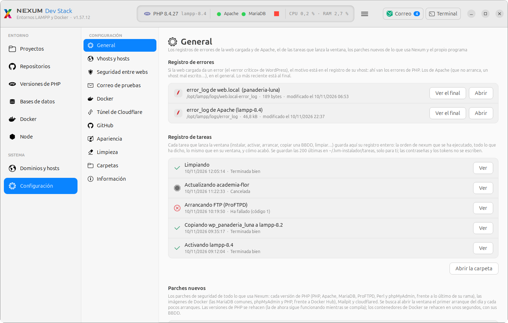
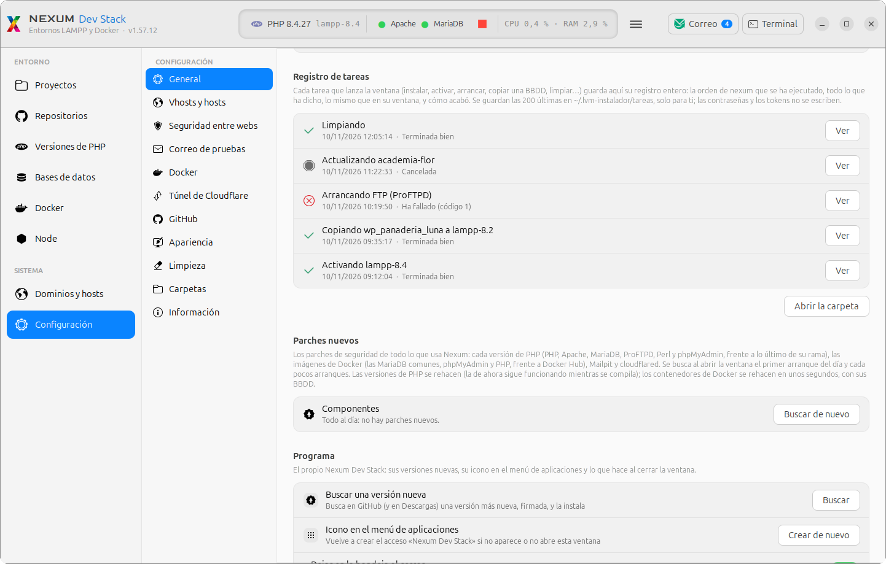

NEXUM Dev Stack
Tu entorno de desarrollo web en un solo programa: todas las versiones de PHP que necesites, cada una con su Apache y su MariaDB, tus proyectos, sus bases de datos, Docker, dominios de prueba y correo, desde una ventana.
Cada proyecto necesita su versión de PHP: una tienda antigua sigue en PHP 7.4, un WordPress nuevo ya pide la 8.4. Nexum Dev Stack
monta un LAMPP para cada versión de PHP (Apache, PHP, MariaDB, Perl, ProFTPD y phpMyAdmin, compilados desde el código oficial)
y te deja cambiar de una a otra con un clic. Tus proyectos están en una sola carpeta, /opt/htdocs/Library/Nexum/XAMPP-compartido/htdocs,
y los ven todas las versiones.
De la 7.4 a la 8.5, el último parche o uno concreto. Cada una con sus propias bases de datos.
Cargas uno y se abre en web.local con la versión de PHP y la base de datos que elijas.
Un proyecto de WordPress en un contenedor, con su propia versión de PHP, sin escribir un solo comando.
Falsea el dominio de una tienda para probarla con su dirección real, con HTTPS de confianza.
Lo que mandan tus webs llega a una bandeja local (Mailpit), nunca a un cliente real.
Lo que se descarga se comprueba con su firma, nada de PHP ni MariaDB se instala en el sistema y tus versiones se cierran a la red con un clic.
Las palabras que vas a leer
Si es la primera vez que montas un entorno así, esto es lo justo para entender el resto del manual. Cada capítulo vuelve a explicar lo que use, así que no hace falta aprenderlo de memoria.
- PHP es el lenguaje con el que están hechos WordPress, PrestaShop y muchas otras webs. Cada versión (7.4, 8.2, 8.4…) se porta un poco distinto, por eso un proyecto puede funcionar en una y fallar en otra.
- Apache es el servidor web: el programa que recibe lo que pide el navegador y le devuelve la página. Le pasa a PHP lo que hay que ejecutar.
- MariaDB es el servidor de bases de datos, donde una web guarda sus entradas, productos, pedidos y usuarios. Es la
versión libre de MySQL. Una base de datos (BBDD) es el conjunto de tablas de un proyecto, por ejemplo
wp_panaderia_luna. - phpMyAdmin es una página web para ver y tocar esas bases de datos con el navegador.
- LAMPP (en el Mac, XAMPP) es el nombre del conjunto: Linux, Apache, MariaDB, PHP y Perl juntos. Aquí cada versión
de PHP tiene su LAMPP entero en su carpeta,
/opt/lampp-8.4/Library/Nexum/XAMPP-8.4.27, y solo una está activa a la vez. - Una versión activa es la que está enlazada en
/opt/lampp/Applications/XAMPP. Ese nombre no es una carpeta de verdad, sino un enlace simbólico: un acceso directo que apunta a otra carpeta. Cambiar de versión es, sobre todo, cambiar a dónde apunta ese enlace. - web.local es la dirección por la que abres en el navegador el proyecto que tengas cargado. Solo existe en tu equipo.
- La terminal es la ventana donde se escriben órdenes. Todo lo que hace la ventana del programa lo hace, por debajo, la orden
nexum, y la puedes escribir tú (ver Comandos de la terminal). - sudo es la palabra que se pone delante de una orden para hacerla como administrador. Te pide tu contraseña. El programa la
usa solo para lo que lo necesita, como escribir en
/opt/Library/Nexumo en/etc/hosts.
Cómo leer este manual
- Cada pantalla tiene números. Pulsa un número sobre la captura para ver qué hace esa parte, o «Recorrido guiado» para verlas todas, una tras otra (también con las flechas ← → del teclado).
- Tareas paso a paso: cómo se hace lo de siempre (cargar un proyecto, cambiar de versión…), con lo que verás en cada paso.
- «En la terminal»: debajo de cada botón que cambia algo hay un recuadro plegado con ese nombre. Ábrelo y verás la orden
nexumque lanza ese botón, lo que hace paso a paso (con los comandos del sistema) y cómo comprobar que ha ido bien. Sirve para entender qué pasa por dentro y para hacerlo sin la ventana. - Linux o Mac: arriba a la izquierda. El manual enseña solo lo de tu sistema; lo que es igual en los dos, se ve siempre.
- Buscar: escribe en el buscador y quedan solo los apartados que hablan de eso, con la palabra resaltada.
--simular delante: dice lo que
haría, sin hacerlo. Por ejemplo, nexum --simular use 8.2 enseña los pasos para cambiar a la 8.2 sin tocar
nada.Instalar y actualizar
Se instala una vez y después se actualiza solo desde la ventana, comprobando siempre la firma de cada versión nueva.
Instalar el programa no instala todavía ningún PHP: deja el gestor (la ventana y la orden nexum). Cada
versión de PHP se instala después, desde la propia ventana, en Versiones de PHP. Una firma es una
marca que solo puede poner quien publica el programa: si alguien cambiara el fichero por el camino, la firma ya no cuadraría y no se
instalaría.
Instalar en Linux
Necesitas Ubuntu o Debian de 64 bits (probado en Ubuntu 24.04), un usuario con permiso de administrador y conexión a
internet. Funciona en procesadores x86_64 y ARM (en ARM, MariaDB se compila y tarda más, y no hay XAMPP oficiales). Cada versión de
PHP necesita unos 5 GB libres en /opt mientras se compila (unos 1,5 GB después). /opt es la carpeta del
sistema donde se instalan los programas que no vienen con Ubuntu.
- Descarga el paquete
nexum_X.Y.Z_all.debde la última versión publicada en GitHub. Un fichero.debes un paquete de instalación de Ubuntu, como un instalador. - Haz doble clic en él. Se abre el Centro de aplicaciones: pulsa «Instalar» y escribe tu contraseña. En una terminal también
vale
sudo apt install ./nexum_X.Y.Z_all.deb. - Ábrelo desde el menú de aplicaciones: «Nexum Dev Stack». También se instala el comando
nexum. - Instala tu primera versión de PHP en Versiones de PHP → «Instalar versión…».
El programa queda en /opt/nexum. No instala PHP, Apache ni MariaDB en el sistema: cada versión vive en
su carpeta, /opt/lampp-X.Y.
En la terminal
La orden del programa: no hay; se instala con el gestor de paquetes de Ubuntu:
sudo apt install ./nexum_X.Y.Z_all.deb (desde la carpeta donde está el paquete, por ejemplo
cd ~/Descargas).
Lo que hace, paso a paso:
- Copia el script a
/opt/nexum/nexum.sh, con el ayudante de las actualizaciones (/opt/nexum/nexum-actualizar) y la clave pública con la que se comprueban las firmas (/opt/nexum/nexum-stack-firma.gpg). - Pone el acceso del menú (
/usr/share/applications/nexum.desktop) y su icono (/usr/share/icons/hicolor/256x256/apps/nexum.png). - Pone el mensaje en español de la ventana de la contraseña al actualizar
(
/usr/share/polkit-1/actions/). - Crea el comando:
sudo ln -sfn /opt/nexum/nexum.sh /usr/local/bin/nexum.
Para comprobarlo: nexum version (dice «Nexum Dev Stack» y su número) y
dpkg -s nexum (la versión del paquete instalada).
Instalar en el Mac
Necesitas un Mac con Apple Silicon y macOS 12 o posterior. Cada versión de PHP tarda unos 20-40 minutos en compilarse y necesita unos 8 GB libres mientras tanto. Compilar es convertir el código oficial de PHP, Apache y MariaDB en programas que tu Mac puede ejecutar; por eso tarda.
- Descarga
nexum-mac-X.Y.Z.dmgde la última versión publicada en GitHub y ábrelo. Un.dmges una imagen de disco: al abrirla aparece como si fuera un pendrive. - Abre «Instalar Nexum Dev Stack». Como no está firmado por Apple, la primera vez macOS lo para: en macOS 14 o anterior, botón derecho → Abrir → Abrir; en macOS 15 o posterior, Ajustes del Sistema → Privacidad y seguridad → «Abrir igualmente».
- Deja que prepare lo que falte. Se abre Terminal: si faltan las herramientas de Xcode, abre su instalador (después vuelve a abrir «Instalar»); si falta Homebrew, pregunta si instalarlo (solo se usa para las librerías con las que se compila). Homebrew es un programa para instalar herramientas en el Mac desde la terminal.
- Escribe tu contraseña. El programa se instala en
/Library/Nexum/gestor, crea la ordennexum, deja la aplicación en tu carpeta Aplicaciones y abre la ventana.
En la terminal
La orden del programa: bash lvm-instalador.sh instalar-gestor (la que lanza «Instalar Nexum Dev Stack» con la
copia del script que trae el .dmg).
Lo que hace, paso a paso:
- Comprueba que están las herramientas de Xcode (
xcode-select -p; si no,xcode-select --install) y Homebrew. - Pide tu contraseña y copia el script a
/Library/Nexum/gestor, que es del administrador (root), con su propio bash. - Sigue con
nexum migrar: si tenías versiones de antes en/Applications, las pasa a/Library/Nexum. - Crea la orden
nexumen la carpeta de comandos de Homebrew (/opt/homebrew/bin) y la aplicación en Aplicaciones, y abre la ventana.
Para comprobarlo: nexum version y ls -l /Library/Nexum/gestor.
Actualizar el programa
- Menú ☰ → «Buscar actualizaciones» (o el menú «Gestor» de la barra de menús). También lo mira solo al abrir la ventana, de vez en cuando.
- Si hay una versión nueva, te dice cuál es y su huella, y la descarga de GitHub con su firma. La huella (SHA-256) es un código que se calcula a partir del fichero: si cambia un solo byte, sale otra huella.
- Acepta. Antes de instalarla se comprueba que la firma es la del autor; si no lo es, no se instala. Tus versiones de PHP, tus proyectos y tus bases de datos no se tocan.
En la terminal
La orden del programa: nexum gui-paquete (buscar) y, al aceptar,
pkexec /opt/nexum/nexum-actualizar <paquete.deb> <huella> (instalar).
Lo que hace, paso a paso:
- Pregunta a GitHub cuál es la última versión publicada
(
curl -fsSL https://api.github.com/repos/…/releases/latest). - Si es más nueva, descarga su
.deby su firma.siga~/.lvm-instalador/actualizacionesy comprueba la firma con la clave de/opt/nexum/nexum-stack-firma.gpg. - Mira también en tu carpeta Descargas por si hay un
nexum_*_all.debmás nuevo y firmado. - Al aceptar,
pkexec(la ventana del sistema que pide la contraseña) ejecuta el ayudante como administrador. El ayudante copia el paquete a una carpeta suya, vuelve a comprobar la huella que se te ha enseñado y su contenido, y lo instala conapt-get install. - Cierra la ventana y abre la nueva:
/opt/nexum/nexum.sh ventana.
Para hacerlo a mano con un paquete que ya tienes: sudo apt install ./nexum_X.Y.Z_all.deb.
Para comprobarlo: nexum version.
La orden del programa: nexum gui-paquete (buscar) y, al aceptar,
nexum actualizar-gestor ~/.lvm-instalador/actualizaciones/nexum-mac-X.Y.Z.zip (instalar).
Lo que hace, paso a paso:
- Pregunta a GitHub por la última versión de Mac y descarga su
.zipy su firma (.zip.sig) a~/.lvm-instalador/actualizaciones. - Comprueba que la firma es la de quien publica el programa y que la versión es más nueva que la tuya. Si no, no instala nada.
- Pide tu contraseña; el gestor de root copia el
.zipa una carpeta suya, vuelve a comprobar la firma y pone la versión nueva en/Library/Nexum/gestor.
Para comprobarlo: nexum version.
Desinstalar
sudo apt remove nexum quita el programa, su comando y sus accesos. Tus versiones de PHP
(/opt/lampp-*), tus proyectos y tus bases de datos se quedan donde están; cada versión se desinstala aparte, en
Versiones de PHP.
En la terminal
La orden del programa: no hay; se quita con sudo apt remove nexum.
Lo que hace, paso a paso:
- Borra
/opt/nexum, el acceso del menú y su icono. - Quita el enlace
/usr/local/bin/nexum, si apunta al programa. - Quita los accesos del menú que cada usuario tuviera en
~/.local/share/applicationsy abrieran el programa.
Para comprobarlo: command -v nexum no devuelve nada y ls -d /opt/lampp-* sigue enseñando tus
versiones.
La ventana de un vistazo
Arriba, siempre a la vista, lo que está funcionando ahora; a la izquierda, las páginas del programa; en el centro, la página elegida; y abajo, cuando la pides, una terminal.

- El programa y su versiónDebajo del nombre, «Entornos LAMPP y DockerEntornos PHP y Docker» y la versión del programa que tienes instalada. «Acerca de Nexum Dev Stack», en el menú ☰, da más detalles.
- La versión activaEl PHP que está sirviendo tus proyectos y su carpeta (por ejemplo «PHP 8.4.27 lampp-8.4XAMPP-8.4.27»). Si no hay ninguna, pone «Ninguna versión activa» y «pulsa ▶ para arrancar una».
- Apache y MariaDBApache es el servidor web y MariaDB el de las bases de datos. El punto está verde (y late) si el servicio está en marcha, y gris si está parado. Púlsalo: se despliegan los servicios de la versión activa, con sus puertos y sus botones para arrancar, parar o reiniciar cada uno.
- ▶ / ■Arranca o para la versión activa sin abrir nada más. ■ (rojo), con la versión en marcha, la para y la desactiva, como «Parar y desactivar». ▶ (verde), con la versión parada, la arranca. Si no hay ninguna activa, ▶ despliega las versiones que tienes instaladas, con la última que usaste la primera («la última»), y arranca la que elijas.
- Lo que gastaLa CPU (el trabajo del procesador) y la memoria que usan el programa y sus servicios juntos. Deja el ratón encima para ver cada parte por separado. Se mide cada 3 segundos.
- El menú ☰Tema claro u oscuro, editar los vhosts y el fichero de hosts, volver a leer las versiones, buscar una versión nueva del programa, el panel de la terminal, la carpeta de registros, este manual («Ayuda»), las novedades y «Acerca de».
- CorreoLa bandeja del correo de pruebas. El número azul son los correos que tienes sin leer. Si apagas el correo de pruebas, este botón no sale.
- TerminalEnseña o esconde una terminal en la parte de abajo de la ventana. Su borde se arrastra
para hacerla más alta o más baja, y lo que sale se ajusta a su ancho.
clear(o Ctrl+L) la deja en blanco, y ⌘+K borra lo de arriba y deja la línea en la que escribes. - EntornoLo de tu trabajo diario: Proyectos, Repositorios, Versiones de PHP, Bases de datos, Docker y Node. En Configuración → Apariencia puedes ocultar las que no uses y, con «Logotipos de Docker, Node y PHP», Docker y Node llevan su icono y, al lado, su logotipo de letras en lugar del nombre.
- SistemaLo que se toca de vez en cuando: Dominios y hosts y Configuración.
- La páginaLo de la página elegida. Muchas cosas enseñan más al pasar el ratón por encima (en un recuadro justo debajo de la flecha), y casi todo lo que cambia algo te dice antes qué va a hacer, con los pasos numerados.
nexum por debajo. Debajo de cada botón tienes un recuadro «En la terminal» con la orden exacta y sus pasos. La
versión activa es la que está enlazada en /opt/lampp/Applications/XAMPP:
un enlace simbólico (un acceso directo a otra carpeta) que apunta a la carpeta de esa versión,
/opt/lampp-8.4/Library/Nexum/XAMPP-8.4.27.Arrancar y parar con ▶ / ■
El botón redondo del recuadro de arriba es la forma más rápida de encender o apagar tu entorno.
- ▶ con una versión activa y parada la arranca: Apache y MariaDB se ponen en marcha y tus proyectos vuelven a abrirse en el navegador. Sale una ventana de tarea que se cierra sola: «Versión activa arrancada».
- ■ con la versión en marcha la para y la desactiva. Desactivar quiere decir quitar el enlace
/opt/lampp/Applications/XAMPP: hasta que actives otra, la ordenphpde la terminal deja de responder y ninguna web local se abre. El programa recuerda cuál era para ofrecértela la primera la próxima vez. - ▶ sin ninguna activa despliega «Arrancar una versión» con tus versiones (PHP y carpeta). Al elegir una, la activa y la arranca.
En la terminal
La orden del programa: nexum arrancar (▶), nexum disable (■) y
nexum use 8.4 (▶ eligiendo una versión; va el nombre de su carpeta sin lampp-XAMPP-).
Lo que hace arrancar, paso a paso:
- Cierra lo que quede en memoria de otras versiones (ocuparían los puertos 80, 443 y 3306):
sudo kill -TERM <números de proceso>. - Comprueba que la versión es solo para este equipo y, si le falta algo, se lo pone (como
nexum asegurar). - Arranca la versión:
sudo /opt/lampp/lampp start. - Arranca Mailpit, el correo de pruebas, si está encendido.
Lo que hace disable, paso a paso:
- Para la versión:
sudo /opt/lampp/lampp stop. - Quita el enlace:
sudo unlink /opt/lampp. - Cierra cualquier proceso de LAMPP que siga en memoria (
sudo kill -TERM …; si alguno no atiende,sudo kill -KILL …) y para Mailpit.
Lo que hace use 8.4, paso a paso:
- Para la versión de ahora y quita su enlace:
sudo /opt/lampp/lampp stopysudo unlink /opt/lampp. - Cierra lo que quede en memoria de cualquier versión.
- Deja todas las versiones solo para este equipo.
- Enlaza la nueva:
sudo ln -s /opt/lampp-8.4 /opt/lampp. - La arranca (
sudo /opt/lampp/lampp start), quita de MariaDB el usuario anónimo y los permisos de las basestest, y arranca Mailpit.
Para comprobarlo: nexum estado (la activa sale con un *) y readlink /opt/lampp.
Lo que hace arrancar, paso a paso:
- Cierra lo que quede en memoria de otras versiones (
sudo kill -TERM …). - Comprueba que la versión es solo para este Mac y, si le falta algo, se lo pone.
- Arranca la versión:
sudo /Applications/XAMPP/xamppfiles/xampp start. - Arranca Mailpit, si el correo de pruebas está encendido.
Lo que hace disable, paso a paso:
- Para la versión:
sudo /Applications/XAMPP/xamppfiles/xampp stop. - Quita el enlace:
sudo rm /Applications/XAMPP. - Cierra lo que siga en memoria y para Mailpit.
Lo que hace use 8.4.27, paso a paso:
- Para la de ahora y quita su enlace (
xampp stopysudo rm /Applications/XAMPP). - Cierra lo que quede en memoria y deja todas las versiones solo para este Mac.
- Enlaza la nueva:
sudo ln -sh /Library/Nexum/XAMPP-8.4.27 /Applications/XAMPP. - La arranca (
sudo /Applications/XAMPP/xamppfiles/xampp start), deja MariaDB sin usuarios anónimos y arranca Mailpit.
Para comprobarlo: nexum estado y readlink /Applications/XAMPP.
Los servicios de la versión activa
Pulsa «Apache · MariaDB» en el recuadro de arriba. Se despliega un panel con los servicios de la versión activa. Un servicio es un programa que se queda funcionando en segundo plano esperando peticiones. Cada uno escucha en un puerto: un número que dice a qué programa del equipo va cada conexión (el 80 es el de las webs, el 3306 el de MariaDB). Si no hay ninguna versión activa, te dice «Ninguna versión activa»: arranca una con ▶, en el mismo recuadro, o actívala en Versiones de PHP.
- Arriba, «Servicios de lampp-8.4XAMPP-8.4.27» y cuántos están en marcha («2 de 3 en marcha»). A la derecha, una pastilla: «Solo desde este equipo» (verde) o «Abierto a la red» (rojo), si se puede entrar desde otros equipos.
- «Arrancar lampp-8.4XAMPP-8.4.27» (con la versión parada) arranca la
versión entera. «Parar y desactivar» (con la versión en marcha) la para y quita el enlace: el comando
phpdeja de responder hasta que actives una versión. Son lo mismo que ▶ y ■. - Apache: el servidor web, que sirve las webs de
/opt/htdocshtdocsy phpMyAdmin. Puertos 80 (http) y 443 (https). - MariaDB: el servidor de bases de datos. Puerto 3306.
- FTP (ProFTPD): acceso por FTP (una forma antigua de subir y bajar ficheros) a la carpeta de los proyectos, por el puerto 21, con el usuario que se indica. No arranca con la versión: arráncalo cuando lo necesites y páralo después. Si lo arrancas aquí, sigue arrancando con la versión hasta que lo pares (lo dice la ficha «arranca con la versión»).
Cada servicio dice si está «En marcha» o «Parado» y tiene sus botones:
- «Arrancar» (si está parado). Antes de arrancarlo, el programa lo deja solo para este equipo y cierra lo que quede en memoria de otras versiones.
- «Reiniciar» (lo para y lo vuelve a arrancar, para que lea su configuración nueva) y «Parar» (si está en marcha).
Todos piden la contraseña de administrador y se hacen en una ventana de tarea que se cierra sola al acabar («Apache arrancado», «MariaDB parado»…).
En la terminal
La orden del programa: nexum servicio apache arrancar (o mariadb / ftp, y
parar / reiniciar).
Lo que hace, paso a paso:
- Si es para arrancar o reiniciar: deja la versión solo para este equipo y cierra los procesos de otras versiones.
- Llama al script de control de la versión con la acción de ese servicio:
sudo /opt/lampp/lampp startapache(ystopapache,startmysql,stopmysql,startftp,stopftp). Reiniciar es parar y arrancar seguidos. - Llama al script de control de la versión con la acción de ese servicio:
sudo /Applications/XAMPP/xamppfiles/xampp startapache(ystopapache,startmysql,stopmysql,startftp,stopftp). Reiniciar es parar y arrancar seguidos. - Arranca o para Mailpit según haga falta.
Para comprobarlo: nexum procesos (los procesos en memoria y de qué versión es cada uno) o, para un puerto,
sudo ss -ltnp 'sport = :80'sudo lsof -nP -iTCP:80 -sTCP:LISTEN.
En la terminal
La orden del programa: nexum asegurar (la versión activa) o nexum asegurar 8.2 (otra).
Lo que hace, paso a paso:
- Apache: cambia los
Listen 80abiertos porListen 127.0.0.1:80(y el 443) en suhttpd.conf.127.0.0.1es la dirección de «este mismo equipo»: nadie de fuera puede llegar a ella. - MariaDB: pone
bind-address = 127.0.0.1en la sección[mysqld]de sumy.cnf. - FTP: pone
DefaultAddress 127.0.0.1en suproftpd.conf. - Deja los vhosts (
/opt/config/httpd-vhosts.conf/Library/Nexum/XAMPP-compartido/httpd-vhosts.conf) del administrador. Cada fichero se prepara en una carpeta del administrador y se copia consudo. - Si la versión estaba en marcha y algo ha cambiado, la reinicia:
sudo /opt/lampp/lampp restartsudo /Applications/XAMPP/xamppfiles/xampp restart.
Para comprobarlo: sudo ss -ltnp | grep -E ':(80|443|3306|21) 'sudo lsof -nP -iTCP -sTCP:LISTEN | grep -E ':(80|443|3306|21) ':
todos deben salir con 127.0.0.1 delante, no con 0.0.0.0 ni *.
Los avisos
Cuando hay algo que conviene hacer, junto al recuadro de la versión activa sale un botón con un triángulo y el número de avisos. Púlsalo para ver la lista. Si no hay ninguno, el botón no está. Cada aviso explica qué pasa y tiene su botón:
- «Hay parches nuevos» (siempre el primero): la lista de lo que tiene un parche de seguridad publicado (versiones de PHP y sus
componentes, imágenes de Docker, Mailpit, cloudflared). Un parche es una versión nueva que corrige fallos sin cambiar la rama
(de PHP 8.4.26 a 8.4.27, por ejemplo). «Actualizar todo» te enseña los pasos (con la casilla «Guardar antes una
copia en ~/nexum-backups», como en Parches nuevos) y, si aceptas, lo actualiza todo en una tarea; lo de ahora
sigue funcionando mientras tanto. «Ahora no» lo quita hasta que salga otro parche distinto; los sigues
teniendo en Configuración → General, Parches nuevos. Se busca al abrir la ventana, el primer arranque de cada día y cada
cuatro arranques; si hay, te lo dice un mensaje abajo: «Hay parches nuevos: míralos en los avisos de arriba».
En la terminal
La orden del programa:
nexum componentes(ver qué hay) ynexum componentes-actualizar --copia(«Actualizar todo»; sin--copiasi dejas la casilla sin marcar).Lo que hace, paso a paso:
- Pregunta a las webs oficiales el último parche de cada componente de cada versión (PHP, Apache, MariaDB, phpMyAdmin…), de las imágenes de Docker, de Mailpit y de cloudflared.
- Vuelve a compilar cada versión de PHP que tenga algo nuevo, como
nexum actualizar <versión>. Con--copia, antes guarda sus bases de datos en~/nexum-backupspor si su MariaDB cambia de rama. - Rehace los contenedores de Docker en marcha con su imagen nueva y pone al día Mailpit y cloudflared.
Para comprobarlo:
nexum componentesotra vez: no debería salir nada pendiente. - «Hay un XAMPP sin registrar»:
/opt/lamppes un XAMPP completo (instalado a mano, sin el programa) y no un enlace a una versión. «Registrar…» te pide un nombre (por ejemplo8.2.12) y lo pasa a/opt/lampp-8.2.12, para gestionarlo junto a las demás. El nombre solo puede llevar números, letras, puntos y guiones.En la terminal
La orden del programa:
nexum add 8.2.12.Lo que hace, paso a paso:
- Para ese XAMPP:
sudo /opt/lampp/lampp stop. - Su carpeta
htdocs: si no existe/opt/htdocs, pasa a serlo (sudo mv /opt/lampp/htdocs /opt/htdocs); si ya existe y tenía proyectos, la aparta a/opt/htdocs-de-lampp-8.2.12-<fecha>sin borrar nada. - Sus vhosts pasan a
/opt/config/httpd-vhosts.conf(o, si ya había, se guarda una copia de los suyos en~/nexum-backups). - Mueve la carpeta:
sudo mv /opt/lampp /opt/lampp-8.2.12, y enlaza dentro lo compartido:sudo ln -s /opt/htdocs /opt/lampp-8.2.12/htdocsysudo ln -s /opt/config/httpd-vhosts.conf /opt/lampp-8.2.12/etc/extra/httpd-vhosts.conf. - Activa los vhosts en su
httpd.conf, hace que Apache trabaje con tu usuario y la deja solo para este equipo.
Para comprobarlo:
nexum listenseña/opt/lampp-8.2.12. - Para ese XAMPP:
- «Hay un XAMPP oficial en /Applications/XAMPP»: el programa necesita que
/Applications/XAMPPsea un enlace a la versión activa, y ahí hay un XAMPP descargado de su web. «Apartar…» copia sus bases de datos a~/nexum-backups, sus proyectos y sus vhosts a la carpeta compartida, y lo mueve a/Applications/XAMPP-oficial-<fecha>, sin borrar nada.En la terminal
La orden del programa:
nexum apartar(y, para devolverlo,nexum volver-oficial).Lo que hace, paso a paso:
- Guarda cada base de datos del XAMPP oficial en un
.zip. - Copia sus proyectos (lo que no es de fábrica) a
/Library/Nexum/XAMPP-compartido/htdocsy sus vhosts a los compartidos. - Lo mueve:
sudo mv /Applications/XAMPP /Applications/XAMPP-oficial-<fecha>.
Para comprobarlo:
ls -ld /Applications/XAMPP*. - Guarda cada base de datos del XAMPP oficial en un
- «Hay procesos de otras versiones en memoria»: un proceso es un programa en marcha. Solo debería estar en memoria la
versión activa; los demás gastan memoria y pueden ocupar los puertos 80, 443 y 3306. «Cerrarlos» los cierra.
En la terminal
La orden del programa:
nexum cerrar-procesos(con--todos, también los de la activa).Lo que hace, paso a paso:
- Busca los procesos de Apache, PHP-FPM, MariaDB y ProFTPD de cada versión (lo que enseña
nexum procesos). - Cierra primero los vigilantes de MariaDB (
mariadbd-safe), que si no la volverían a arrancar, y después el resto:sudo kill -TERM <números de proceso>. TERM le pide al programa que se cierre guardando lo que tenga a medias. - Espera hasta 15 segundos (hasta 90 a MariaDB, para que guarde todo) y, a los que no han hecho caso,
sudo kill -KILL ….
Para comprobarlo:
nexum procesos; los que sobraban llevaban «<- sobra» al final. - Busca los procesos de Apache, PHP-FPM, MariaDB y ProFTPD de cada versión (lo que enseña
- «Hay vhosts de carpetas que ya no existen»: un proyecto tiene su vhost (el trozo del fichero de vhosts que le dice a
Apache qué carpeta sirve su dominio), pero su carpeta ya no está en
/opt/htdocs: la borraste, la moviste o no la has vuelto a clonar. Apache arranca igual, pero al arrancar escribe un aviso por cada uno (dos por proyecto, el dehttpy el dehttps):AH00112: Warning: DocumentRoot [/opt/lampp/htdocs/moda-verde] does not exist. El aviso dice qué carpetas faltan, con sus dominios. «Quitarlos» te pregunta antes, con lo que se va a quitar numerado, y pide la contraseña de administrador. Solo cambia el fichero de vhosts: las carpetas, las bases de datos y/etc/hostsno se tocan. El vhost delocalhosty los que llevan a carpetas de fuera de/opt/htdocsno se tocan nunca.En la terminal
La orden del programa:
nexum vhosts-sin-carpeta(los enseña) ynexum vhosts-sin-carpeta quitar(los quita).Lo que hace, paso a paso:
- Lee el fichero de vhosts de la versión activa (
/opt/lampp/etc/extra/httpd-vhosts.confel de/Applications/XAMPP) y, de cada bloque<VirtualHost>, suDocumentRoot. - Si lleva a
…/htdocs/<carpeta>y esa carpeta no existe, lo apunta, con susServerNameyServerAlias. - Con
quitar: escribe una copia sin esos bloques en~/.lvm-instaladory la aplica como «Editar vhosts»: Apache la comprueba (httpd -t), se escribe consudo(guardando antes la de ahora en~/nexum-backupssi tienes encendidas las copias de los ficheros que cambia el programa) y se recarga Apache.
Para comprobarlo:
nexum vhosts-sin-carpetadice «Todos los vhosts de proyectos tienen su carpeta», y al arrancar la versión ya no sale ningúnAH00112. - Lee el fichero de vhosts de la versión activa (
- «Tablas del sistema de MariaDB antiguas»: MariaDB guarda sus usuarios y permisos en unas tablas propias
(
mysql.*). Si son de una MariaDB anterior, el registro de errores no para de crecer (te dice cuánto ocupa). «Repararlas» te pregunta antes, con la casilla «Guardar antes una copia en ~/nexum-backups» (desmarcada; sin ella avisa en rojo: «Sin copia, las tablas del sistema de ahora no se podrán recuperar.»). Después las pone al día sin tocar las bases de datos de tus proyectos y vacía el registro si es grande. La versión activa tiene que estar en marcha.En la terminal
La orden del programa:
nexum reparar-bd-sistema --copia(sin--copia, sin la copia).Lo que hace, paso a paso:
- Comprueba que la versión activa está en marcha y que MariaDB responde.
- Con
--copia, guarda la basemysqlen~/nexum-backups/<versión>-mysql-sistema-<fecha>.sql.gzconmariadb-dump --databases mysql | gzip. - Pone al día las tablas con la herramienta de la propia versión, con el usuario dueño de los datos:
sudo -u mysql /opt/lampp/bin/mariadb-upgrade --no-defaults -S /opt/lampp/var/mysql/mysql.sock -uroot --upgrade-system-tables --force/Applications/XAMPP/xamppfiles/mysql/bin/mariadb-upgrade --no-defaults -S /Applications/XAMPP/xamppfiles/var/mysql/mysql.sock -uroot --upgrade-system-tables --force. - Si su registro de errores (el
.errdevar/mysql) es grande, lo vacía.
Para comprobarlo:
nexum reparar-bd-sistemaotra vez dice «ya estan al dia». - «phpMyAdmin antiguo»: algunas versiones traen un phpMyAdmin con fallos de seguridad ya corregidos. «Actualizarlos»
pone en todas el más nuevo que admite su PHP, con la misma configuración. El anterior queda en la carpeta
phpmyadmin.anteriorde cada versión.En la terminal
La orden del programa:
nexum actualizar-phpmyadmin --todas(o una sola:nexum actualizar-phpmyadmin 8.2).Lo que hace, paso a paso:
- Elige el phpMyAdmin más nuevo que admite el PHP de cada versión (5.2 con PHP 7.2.5 o más; 5.1.4 con 7.1; 4.9.11 antes).
- Lo descarga y comprueba su huella SHA-256.
- Mueve el de ahora a
phpmyadmin.anterior, pone el nuevo enphpmyadminy le copia elconfig.inc.phpde antes (con una clave de cookies nueva si era la de fábrica).
Para comprobarlo:
nexum estado, columna phpMyAdmin. - «A algunas versiones les faltan protecciones»: les falta algo de lo que pone el programa (solo para este equipo, phpMyAdmin
cerrado a otras webs, MariaDB sin acceso a los ficheros del equipo…). «Protegerlas» se lo pone a todas, como en la activa, y
pide la contraseña.
En la terminal
La orden del programa:
nexum asegurar --todas.Lo que hace, paso a paso:
- A cada versión le pone lo que le falte de
nexum asegurar(Apache, MariaDB y FTP en127.0.0.1, phpMyAdmin solo para este equipo, MariaDB sin acceso a ficheros). - Quita a los demás usuarios del equipo el permiso de escribir en la carpeta de los proyectos y comprueba las líneas de los
.localen/etc/hosts. - Si la activa está en marcha y ha cambiado algo, la reinicia.
Para comprobarlo: el aviso desaparece al volver a leer (menú ☰ → «Volver a leer las versiones»).
- A cada versión le pone lo que le falte de
- «Certificados en los que confía todo el equipo»: un certificado es lo que permite abrir una web con https (la
conexión cifrada, con el candado). Los de algunos proyectos sirven para más que su dominio (o faltan, y Apache no arrancaría).
«Arreglarlos» pone a cada uno un certificado propio que solo vale para su dominio y pide la
contraseña. Los vhosts anteriores se copian en
~/nexum-backupssi tienes encendidas las copias de los ficheros que cambia el programa, y los certificados viejos se guardan en una carpeta/etc/ssl/lvm-anteriores-…que solo ve el administrador. Después, el navegador avisará una vez en cada proyecto: acepta el aviso.En la terminal
La orden del programa:
nexum arreglar-certificados.Lo que hace, paso a paso:
- Busca en los vhosts los certificados que están en
/etc/ssl/certs(donde el sistema los da por buenos para cualquier web), los que son de una autoridad (CA) o los que faltan. - Crea para cada dominio uno propio que solo vale para él (
openssl req -x509 -nodes -newkey rsa:2048 -days 3650 -subj "/CN=<dominio>" …) y cambia su vhost para usarlo. - Guarda los certificados viejos en
/etc/ssl/lvm-anteriores-…y deja de confiar en esa CA (sudo update-ca-certificates --fresh). - Comprueba la configuración de Apache y lo recarga.
Para comprobarlo:
nexum arreglar-certificadosotra vez dice «ya estan bien». - Busca en los vhosts los certificados que están en
- «El navegador avisa al abrir estos proyectos»: Chrome y FirefoxSafari y
Chrome no aceptan todavía su certificado y sale «La conexión no es privada». «Confiar» hace que lo acepten (solo vale
para su dominio). El Mac pide tu contraseña una vez por proyecto. Si el navegador estaba abierto, ciérralo
y vuelve a abrirlo.
En la terminal
La orden del programa:
nexum confiar-certificados(o solo uno:nexum confiar-certificados clinica-del-sol.local).Lo que hace, paso a paso:
- Mira el certificado propio de cada proyecto https de los vhosts.
- Se salta los de un dominio real que no está falseado en
/etc/hosts(con su clave se podría suplantar la web de verdad). - Añade cada uno al almacén de certificados del navegador (el de Chrome y Chromium,
~/.pki/nssdb, y el de cada perfil de Firefox) concertutil -A, solo como certificado de ese dominio, no como CA. - Añade cada uno a tu llavero como de confianza solo para ese certificado (
security add-trusted-cert); el Mac pide tu contraseña en cada uno.
Para comprobarlo: abre el proyecto en el navegador (después de cerrarlo y volver a abrirlo) y ya no sale el aviso.
- «El navegador acepta webs reales que ya no están falseadas»: tiendas que estaban falseadas en
/etc/hostsy ya no. «Quitar» hace que el navegador deje de aceptar su certificado. Luego, cierra y vuelve a abrir el navegador.En la terminal
La orden del programa:
nexum confiar-certificados --quitar.Lo que hace, paso a paso:
- Busca los certificados de dominios reales que el navegador acepta y que han dejado de estar falseados en
/etc/hosts. - Los quita del almacén del navegador (
certutil -Dsecurity remove-trusted-cert).
Para comprobarlo: el aviso desaparece al volver a leer.
- Busca los certificados de dominios reales que el navegador acepta y que han dejado de estar falseados en
- «Versiones vulnerables a PHP2Shell»: alguna versión tiene un PHP con el fallo de seguridad PHP2Shell. «Ver las versiones» te lleva a Versiones de PHP, donde se actualiza desde el menú ⋯ de cada una.
Una versión vulnerable no sale aquí: se ve en rojo en su fila de Versiones de PHP, y el programa te avisa si la vas a activar.
El menú ☰
- «Tema oscuro» / «Tema claro»: cambia los colores de esta ventana (el resto del escritorio no se toca). Se recuerda para la próxima vez.
- «Editar vhosts»: el fichero de vhosts de Apache. Un vhost (host virtual) es un bloque que le dice a Apache qué
carpeta sirve para cada dominio: así un mismo Apache atiende
web.localyclinica-del-sol.local. Mira abajo cómo se edita. - «Editar /etc/hosts»: el fichero que dice a qué equipo va cada dominio. Lo que pone ahí manda sobre internet: si dice
127.0.0.1 panaderia-luna.com, esa dirección se abre en tu equipo. Igual que los vhosts. - «Volver a leer las versiones»: vuelve a leer todo lo que enseña la ventana (versiones, servicios, proyectos, dominios, Docker) y vuelve a preguntar a php.net por los parches. No cambia nada.
- «Buscar actualizaciones»: busca una versión nueva del programa. Mira abajo.
- «Abrir el panel en la terminalTerminal»: abre una terminal aparte con
el panel de texto del programa (sus menús de siempre, sin ventana). Si no encuentra ninguna terminal, te dice
que abras una y escribas
nexum. - «Carpeta de registros»: abre
~/.lvm-instalador, donde se guardan los registros de lo que hace el programa. El signo~es tu carpeta personal; el punto delante del nombre hace que sea una carpeta oculta. - «Ayuda»: abre este manual en tu navegador, en el capítulo de la página en la que estás (en Configuración, en el de su apartado). Va dentro del programa: no necesita conexión.
- «Novedades»: qué ha cambiado en cada versión del programa.
- «Acerca de Nexum Dev Stack»: el nombre, la versión y la firma del programa.
En el Mac, el menú «Gestor» de la barra de menús de arriba tiene casi lo mismo: «Abrir localhost», «Abrir phpMyAdmin», «Editar vhosts», «Editar hosts», «Volver a leer las versiones» (⌘+R), «Buscar actualizaciones», «Abrir el panel en Terminal», «Carpeta de registros» y «Novedades».
En la terminal
La orden del programa: el menú no cambia nada salvo «Editar vhosts», «Editar /etc/hosts» y «Buscar actualizaciones» (cada uno tiene su recuadro más abajo). Lo demás se hace así:
- «Abrir el panel»:
nexum, sin nada detrás, escrito en una terminal (conLVM_UI=text nexum, el panel en texto, sin ventanitas). - «Carpeta de registros»:
xdg-open ~/.lvm-instaladoropen ~/.lvm-instalador. - «Ayuda»:
nexum manual(onexum manual proyectospara ir a un capítulo). Saca el manual a~/.lvm-instalador/ayuday lo abre en el navegador. - «Novedades»:
nexum novedades. «Acerca de»:nexum acerca. - «Volver a leer»: no hay orden; la ventana pide sus datos con
nexum gui-datosy otras parecidas, que solo leen.
Para comprobarlo: nexum version.
Editar los vhosts o el fichero de hosts
Los dos ficheros son del administrador, así que no se editan directamente: el programa te abre una copia.
- Menú ☰ → «Editar vhosts» (o «Editar /etc/hosts»). Se abre una copia en el editor de textos (en
~/.lvm-instalador) y, en la ventana, un diálogo que lo explica. - Haz los cambios en el editor y guárdalos.
- Pulsa «AplicarAplicar los cambios» en el diálogo («Cancelar» no cambia nada). Si no has guardado ningún cambio, te lo dice: «No has cambiado nada… (¿guardaste los cambios?)».
- Escribe la contraseña. Si tienes encendidas las copias de los ficheros que cambia el
programa, antes de escribir el fichero nuevo se guarda una copia del actual en
~/nexum-backups.
- Los vhosts se comprueban antes de escribirlos. Si llevan líneas que cambiarían todo Apache, no se aplican. Después se recarga Apache (lee la configuración nueva sin cortar lo que esté sirviendo); si no acepta los nuevos, se dejan como estaban. Al acabar: «Vhosts actualizados».
- El fichero de hosts tiene que conservar la línea de
localhost. Desde aquí solo se aceptan líneas nuevas que lleven un dominio a este equipo: una que lo lleve a otra dirección no se aplica (ponla en la terminal connexum hosts).
En la terminal
La orden del programa: nexum vhosts --aplicar ~/.lvm-instalador/httpd-vhosts.conf y
nexum hosts --aplicar ~/.lvm-instalador/hosts. Sin --aplicar, nexum vhosts
te abre la copia en tu editor de la terminal (nano, si no tienes otro) y pregunta «¿Aplicar los cambios?»; y
nexum hosts abre /etc/hosts con sudo -e.
Lo que hace con los vhosts, paso a paso:
- Lee tu copia una sola vez a una carpeta temporal del administrador (
sudo mktemp -d /tmp/lvm-vhosts.XXXXXX), para que lo que se comprueba sea lo mismo que se escribe. - Comprueba que no lleva directivas que cambiarían todo Apache.
- Con las copias encendidas, guarda el de ahora en
~/nexum-backups/httpd-vhosts.conf-<fecha>. - Lo escribe como del administrador:
sudo install -o root -g root -m 644 <nuevo> /opt/config/httpd-vhosts.confsudo install -o root -g wheel -m 644 <nuevo> /Library/Nexum/XAMPP-compartido/httpd-vhosts.conf. - Comprueba la configuración (
sudo /opt/lampp/bin/httpd -f /opt/lampp/etc/httpd.conf -tsudo /Applications/XAMPP/xamppfiles/apache2/bin/httpd -t -f /Applications/XAMPP/xamppfiles/etc/httpd.conf); si falla, vuelve a poner el anterior. - Recarga Apache:
sudo /opt/lampp/lampp reloadapachesudo /Applications/XAMPP/xamppfiles/xampp reloadapache.
Lo que hace con el fichero de hosts, paso a paso:
- Comprueba que la copia sigue teniendo
127.0.0.1 localhost, que no lleva caracteres raros y que las líneas nuevas solo llevan dominios a127.*,::1o0.0.0.0. - Con las copias encendidas, guarda el de ahora en
~/nexum-backups/hosts-<fecha>. - Lo escribe:
sudo tee /etc/hosts < <copia>. - Hace que el navegador deje de aceptar el certificado de las tiendas que hayan dejado de estar falseadas.
Para comprobarlo: cat /opt/config/httpd-vhosts.confcat /Library/Nexum/XAMPP-compartido/httpd-vhosts.conf
y cat /etc/hosts; para ver a dónde va un dominio,
getent hosts panaderia-luna.comdscacheutil -q host -a name panaderia-luna.com.
Buscar una versión nueva del programa
Menú ☰ → «Buscar actualizaciones» (sale abajo «Buscando actualizaciones…»). Busca en GitHub y en tu carpeta de Descargas un paquete más nuevo y firmado. Lo mismo se hace solo al abrir la ventana, el primer arranque de cada día y cada cuatro arranques.
- Si no hay ninguna: «Tienes la última versión». Si solo encuentra un paquete sin firma, no lo instala desde aquí y te da la orden para instalarlo en la terminal.
- Si hay una: «Hay una versión nueva de Nexum Dev Stack», de cuál a cuál, de dónde viene y su huella SHA-256. Con «Actualizar a la …» el sistema te pide la contraseña (en su propia ventana), se instala y la ventana se vuelve a abrir. Tus versiones, proyectos y bases de datos no se tocan.
- «La versión … se instala una vez en la terminal»: pasa cuando la versión nueva cambia el propio instalador de actualizaciones. No es un error. «Copiar la orden» la copia: pégala en una terminal (Ctrl+Alt+T), escribe tu contraseña y vuelve a abrir el programa.
Lo que hace por dentro está en Instalar y actualizar, en su recuadro «En la terminal».
El botón Correo
Abre la bandeja del correo de pruebas dentro de la propia ventana (en Configuración → Correo de pruebas). El número son los correos sin leer; al dejar el ratón encima también lo dice. Mailpit es el programa que recoge esos correos: en lugar de mandarlos a su destinatario, los guarda para que los veas tú.
- Si Mailpit no está instalado, te lleva a Configuración para instalarlo.
- Si la versión activa está parada, te avisa: Mailpit arranca con la versión activa.
- Si falta el componente que enseña la bandeja dentro de la ventana, la abre en el navegador
(
http://127.0.0.1:8025/).
La terminal de abajo
El botón «Terminal» de arriba a la derecha la enseña o la esconde. Es tu terminal de siempre, con tu usuario, y empieza en la carpeta del proyecto cargado (o en la carpeta de los proyectos si no hay ninguno). Al esconderla sigue abierta, con lo que tuvieras escrito. A su lado, arriba, la carpeta en la que empezó, y estos botones:
- «Vaciar DNS»: el DNS es el sistema que traduce un nombre (
panaderia-luna.com) en la dirección de un equipo, y el tuyo recuerda las respuestas un rato. Este botón escribe por tisudo resolvectl flush-cachessudo dscacheutil -flushcache; sudo killall -HUP mDNSResponder, que borra lo recordado. Sirve cuando acabas de falsear o dejar de falsear un dominio y el navegador sigue yendo al sitio de antes. La contraseña te la pide la propia terminal. - «Proyecto cargado»: escribe un
cd(la orden para entrar en una carpeta) a la carpeta del proyecto cargado. - ↻ («Terminal nueva»): cierra la de ahora y abre otra.
- ✕: la esconde (sigue abierta).
Para copiar y pegar, como en la Terminal de GNOME: Ctrl+Mayús+C y
Ctrl+Mayús+V, o el botón derecho («Copiar», «Pegar», «Seleccionar todo»). Si escribes
exit, se cierra y se esconde; la próxima vez se abre una nueva. Si falta su componente, el programa te dice cómo
instalarlo: sudo apt install gir1.2-vte-2.91.
Para copiar y pegar, como en Terminal: ⌘+C y ⌘+V. Si escribes
exit, se cierra; la próxima vez se abre una nueva.
La ventana de una tarea
Lo que tarda o cambia algo del sistema (instalar, activar una versión, arrancar un servicio, cargar una base de datos…) se hace en su
propia ventana. Arriba, qué se está haciendo; luego, la barra de avance con el porcentaje y lo que queda, y el tiempo que lleva. Si la
tarea no dice cuánto le falta, la barra se mueve sin porcentaje. Las instalaciones enseñan además la lista de pasos, y cada uno se marca
al acabar. «Ver registro» despliega todo lo que va escribiendo: es lo mismo que verías si lanzaras su orden
nexum … en una terminal.
- «Seguir en segundo plano»: esconde la ventana y puedes seguir usando el programa. Arriba, junto al recuadro de la versión activa, sale una flecha verde que late con lo que hace y el porcentaje («Instalando… 45 %»); púlsala para volver a ver la ventana. Cerrar la ventana o pulsar Esc hace lo mismo. Al acabar, la ventana vuelve sola para decirte cómo ha ido.
- «Cancelar»: para la tarea. En las instalaciones te pregunta antes («¿Cancelar la instalación?»: se pierde lo descargado y compilado; las versiones instaladas no se tocan).
- «Cerrar»: cuando ya ha acabado.
Al acabar bien sale un check verde grande. Muchas tareas cortas se cierran solas y lo dicen con un mensaje abajo. Si algo falla, pone «No se ha podido completar», la barra se pone roja, se abre el registro y aparece «Ver el log del error»: abre el informe del error (o el registro entero) para copiarlo, con «Copiar todo», «Abrir la carpeta de logs» y «Cerrar».
Cada tarea guarda además su registro entero (la orden de nexum que se ha ejecutado, toda su salida y cómo acabó), sin
contraseñas: lo tienes después, aunque hayas cerrado su ventana, en Configuración → General, Registro de
tareas.
La contraseña de administrador
Cuando una tarea necesita permisos de administrador (lo que en la terminal se hace con sudo delante), se abre una ventana
pequeña: «Contraseña de administrador». Se pide al empezar la tarea, no a mitad: si cancelas, no se ha cambiado nada.
- «Continuar» (o Intro) la manda. Si te equivocas, vuelve a salir con «Contraseña incorrecta. Vuelve a intentarlo.»
- «Cancelar» cancela la tarea, sin dejar nada a medias.
Por seguridad, la contraseña solo se envía si quien la pide es de verdad el sudo del sistema; si no, la tarea se cancela
y lo dice en el registro. La actualización del programa es distinta: la contraseña la pide la ventana del propio sistema.
El icono junto al relojde la barra de menús
Mientras el programa está abierto, junto al reloj hay un icono suyo, para usar lo básico sin abrir la ventana. Con él, la ✕ de la ventana no cierra el programa: lo esconde. Viene encendido; se apaga en Configuración → General, Programa, «Dejar en la bandeja al cerrar» (si falta su componente, ahí mismo te dice cómo instalarlo). Con él, cerrar la ventana no cierra la aplicación. Se quita y se pone en Configuración → General, Programa, «Dejar en la barra de menús al cerrar». Su menú:
- «Abrir Nexum Dev Stack»: vuelve a enseñar la ventana (también con el clic de la rueda del ratón sobre el icono).
- Una línea que solo informa: «● lampp-8.4XAMPP-8.4.27 en marcha», «○ … parada» o «Ninguna versión activa».
- «Arrancar …» o «Parar y desactivar», como ▶ y ■ (mismas órdenes:
nexum arrancarynexum disable). Sin versión activa pone «Elegir una versión…», que abre la ventana en Versiones de PHP. - «Abrir web.local» (o el dominio del proyecto cargado): solo con un proyecto cargado y la versión en marcha.
- «Salir»: cierra el programa del todo. Tus versiones siguen como estuvieran: si estaban en marcha, siguen en marcha.
Proyectos
La página principal: arriba, el proyecto con el que estás trabajando y todo lo que puedes hacer con él; debajo, la lista de todos tus proyectos.
Un proyecto es cada carpeta de /opt/htdocshtdocs: un WordPress,
una tienda PrestaShop, una web en PHP o en HTML. Cargarlo hace que http://web.local/ lo abra, con la versión
de PHP y la base de datos que elijas. Solo hay uno cargado a la vez; los demás siguen en su carpeta, sin cambiar nada.
Unas palabras que salen mucho en este capítulo:
- Apache es el programa que sirve las páginas: cuando el navegador pide
http://web.local/, es Apache quien contesta, y le pasa a PHP lo que hay que ejecutar. MariaDB es el programa que guarda las bases de datos (BBDD): las tablas con las entradas, los productos, los usuarios… de cada web. - Un vhost (host virtual) es un bloque de la configuración de Apache que dice «para esta dirección, enseña esta carpeta».
Todos los vhosts van en un fichero,
/opt/config/httpd-vhosts.conf/Library/Nexum/XAMPP-compartido/httpd-vhosts.conf. - El fichero de hosts,
/etc/hosts, es una lista del sistema que dice a qué equipo lleva cada nombre. Una línea127.0.0.1 web.localhace queweb.locallleve a tu propio equipo (127.0.0.1 es siempre «este equipo»). - La contraseña de administrador es la de tu usuario cuando el sistema la pide con
sudo: «haz esto como administrador (root)». Cambiar/etc/hosts, los vhosts o arrancar Apache la necesitan.
Cada versión de PHP tiene sus propias bases de datos. Por eso un mismo proyecto puede tener una base en
lampp-8.2 y otra en lampp-8.4: a cada pareja «versión de PHP + base de datos» el programa la llama
entorno. Un proyecto también puede tener entornos en Docker.
En el Mac, las versiones se llaman XAMPP-8.4, XAMPP-8.2… donde este capítulo dice
lampp-8.4, y están en /Library/Nexum/XAMPP-<versión>; la activa es el enlace
/Applications/XAMPP.
Debajo de cada botón que cambia algo hay un recuadro «En la terminal»: la orden de nexum que lanza el
botón y lo que hace paso a paso, para que sepas qué pasa por dentro o lo puedas hacer sin la ventana. Si quieres ver lo que haría
una orden sin que cambie nada, ponle --simular delante: nexum --simular cargar-proyecto panaderia-luna.
- La versión activaLa versión de PHP que sirve tus proyectos ahora mismo (aquí PHP 8.4.27,
en
lampp-8.4), con un punto verde si Apache y MariaDB están en marcha, y lo que gastan de procesador y memoria. Púlsala para arrancar, parar o reiniciar sus servicios. - El menúTema claro u oscuro, editar los vhosts y el fichero de hosts, volver a leer las versiones, buscar una versión nueva del programa, la carpeta de registros, las novedades y este manual.
- CorreoLa bandeja de pruebas: los correos que han mandado tus webs (un pedido, un formulario de contacto…). Ninguno sale de tu equipo. El número dice cuántos hay sin leer.
- TerminalAbre una terminal abajo, dentro de la ventana, para lanzar
git,composer,wpo lo que necesites. Su botón «Proyecto cargado» te lleva a la carpeta del proyecto. - El menú lateralLas páginas del programa: lo de tu trabajo (proyectos, repositorios, versiones de PHP, bases de datos, Docker y Node) y, debajo, lo del sistema (dominios y configuración).
- El proyecto cargadoSu nombre y su carpeta. El punto verde de «Proyecto cargado» dice que
es el que abre
web.local(«en web.local», arriba a la derecha). Si no hay ninguno cargado, aquí sale el que elijas en la lista, como «Proyecto elegido». - Su correo«su correo va a Mailpit»: los correos que mande la web cargada no salen a internet, se quedan en la bandeja de Correo. Solo sale con el correo de pruebas encendido.
- Añadir entorno (+)Lleva el proyecto a otra versión de PHP (copiando allí su base de datos) o a Docker, para probarlo con otro PHP sin tocar el de ahora. Ver Replicar.
- Entorno (versión de PHP)Los entornos del proyecto: cada versión de PHP donde tiene base de datos y, si está en Docker, «PHP 8.2 · Docker». Elegir otra versión aquí ya carga el proyecto con ella (antes te pregunta si hay que cambiar de versión). Elegir uno de Docker te lleva a la página Docker.
- Su base de datosLa base de datos que usa en el entorno elegido (aquí
wp_panaderia_luna). Si no tiene ningún entorno, sale «—». - Opciones de la BBDDElige qué base de datos usa el proyecto en cada versión de PHP, o ninguna, y la cambia por otra cuando quieras. Ver Opciones de la BBDD.
- Accesos directosAbrir web lo abre en el navegador; VS Code, su carpeta en Visual Studio Code; phpMyAdmin, su base de datos, y Panel, el escritorio de WordPress o el back office de PrestaShop, con el usuario de pruebas ya escrito. Ver los botones del proyecto.
- DockerSi el proyecto no está en Docker, lo monta (eliges PHP, MariaDB y base de datos); si ya está, lo arranca. El de LAMPP sigue igual. Ver Docker desde Proyectos.
- CompartirLe da una dirección de internet temporal (un túnel de Cloudflare) para enseñárselo a alguien: lleva una contraseña nueva al azar y se cierra solo a las horas que digas (2, si no cambias nada). Ver Compartir una web.
- LogEl final del registro de errores de Apache: lo primero que hay que mirar cuando una página sale en blanco o con un error 500.
- ActualizarLo pone al día con lo de producción: su base de datos (un
.sql) y su código (un.zip, un.tar.gzo una carpeta), congit pullantes si quieres. Si marcas su casilla, guarda una copia de lo que sustituye. Ver Actualizar un proyecto. - DesmontarLo descarga:
web.localdeja de abrirlo y enseña una página vacía. No pregunta antes, pero no se borra nada, ni la carpeta ni la base de datos. - Falsear HostSi el proyecto tiene un dominio en los vhosts (debajo sale cuál), este interruptor hace que su dirección de verdad se abra en tu equipo y no en internet. Sirve para probar una tienda con su dominio real. Ver Falsear Host.
- Más (⋮)Las opciones de su BBDD, abrir su carpeta, quitarlo de Docker, vaciar la caché de una tienda, las imágenes de producción, personalizar los botones o borrar el proyecto. Ver el menú Más.
- Buscar y filtrarEscribe parte del nombre de la carpeta o de su base de datos para encontrarlo, y elige qué tipo ver: Todos, WordPress, PrestaShop u Otros.
- Nuevo proyecto…Clona un repositorio (de GitHub o de otro servidor) en
/opt/htdocshtdocsy lo deja montado: su carpeta, su versión de PHP, su base de datos y, si quieres, su dominio falseado. Ver Nuevo proyecto. - El que está cargadoEn la lista, el cargado va resaltado y con la etiqueta «Cargado». Arriba se ve siempre el cargado: pulsar otra fila solo la marca; para cargarla, usa su botón «Cargar».
- Dónde está cada unoEn qué versiones de PHP tiene base de datos (8.2, 8.4…) y, en azul, si también está en Docker. Deja el ratón encima para ver la versión y la base de cada uno. Su tamaño en disco y el nombre de su base de datos van al lado.
- CargarSale al pasar el ratón por una fila que no es la cargada. Carga ese proyecto; si tiene base de datos en varias versiones, te pregunta cuál. Ver Cargar un proyecto.
- El ⋮ de la filaTambién al pasar el ratón: llevar ese proyecto a otra versión o a Docker, importar su SQL y lo mismo que el menú Más, sin cambiar el proyecto de arriba. Ver el menú de cada fila.
El visor de arriba
Arriba está siempre el proyecto cargado, con todos sus botones. Elegir otra fila de la lista no lo cambia: la fila elegida solo se marca. Así no pierdes de vista con qué estás trabajando.
- «PROYECTO CARGADO», con el punto verde: el que abre
web.local. Tiene todos los botones. - «PROYECTO ELEGIDO»: solo cuando no hay ninguno cargado. Es la fila que has pulsado. Arriba a la derecha pone «web.local → nada». Solo tiene el selector de Entorno, el +, el de las opciones de la BBDD, el botón azul «Cargar» y el menú ⋮.
- «NINGÚN PROYECTO CARGADO»: no hay ninguno cargado ni elegido. Dice «Elige un proyecto de la lista para cargarlo.».
Debajo del nombre sale su carpeta completa (por ejemplo, /opt/htdocs/panaderia-luna/Library/Nexum/XAMPP-compartido/htdocs/panaderia-luna); la puedes seleccionar y copiar. A la derecha, la
etiqueta WordPress o PrestaShop, si lo es.
Cargar un proyecto
Para qué sirve: para ver y trabajar en un proyecto en tu navegador. Mientras está cargado, http://web.local/
enseña ese proyecto, con su versión de PHP y su base de datos. Cuando quieras trabajar en otro, cargas el otro: no hace falta
tocar ninguna configuración a mano.
Cómo funciona por dentro: web.local no es una carpeta de verdad, es un enlace simbólico (un acceso
directo del sistema de ficheros: un nombre que lleva a otra carpeta). Su vhost enseña siempre lo que hay en
/opt/htdocs/web.localhtdocs/web.local; cargar un proyecto es, sobre todo,
cambiar a qué carpeta lleva ese enlace.
- Busca su fila en la lista (con el buscador, si tienes muchos).
- Pasa el ratón por la fila y pulsa «Cargar». Si no hay ningún proyecto cargado, también puedes pulsar la fila: sale arriba como «Proyecto elegido», con su botón «Cargar».
- Elige la versión, si te lo pregunta. Si el proyecto tiene base de datos en varias versiones de PHP, sale «Cargar proyecto» con una tarjeta por versión (ver abajo).
- Confirma, si hace falta. Si hay que cambiar de versión de PHP, te lo dice antes. Puede pedirte la contraseña de administrador.
- Ábrelo. El punto se pone verde («Proyecto cargado») y aparecen sus botones: pulsa Abrir web y lo verás en
http://web.local/. Abajo sale un aviso corto: «Proyecto cargado: web.local → panaderia-luna (PHP 8.4.27)».
El diálogo «Cargar proyecto» sale cuando el proyecto puede ir en más de una versión:
- Si tiene base de datos en varias, pregunta «¿Qué versión del proyecto y de PHP quieres?» y explica que cada versión guarda su propia copia de la base (se cambian con el botón de las opciones de la BBDD).
- Si su base no está en ninguna versión, pregunta «¿Con qué versión de PHP quieres cargar el proyecto?» y dice «La BBDD de panaderia-luna (wp_panaderia_luna) no está en ninguna versión: súbela después en la pestaña BBDD». Si ni siquiera se sabe qué base usa, también lo dice.
- Cada versión va en una tarjeta: «PHP 8.4.27 (lampp-8.4)» y, al lado, su base, «la activa» y «la de su .php-version» si
lo es (un fichero
.php-versionen la carpeta del proyecto dice con qué PHP quiere ir). Debajo, la fecha de su base de datos. Viene marcada la activa (o la de su.php-version). - Pulsa «Cargar proyecto».
Lo que pregunta antes:
- «¿Cambiar a PHP …?»: si hay que cambiar de versión (y no la acabas de elegir en el diálogo anterior). Te dice qué versión
se para, cuál se activa y que
web.localapuntará al proyecto. Botón «Cargar panaderia-luna». - «¿Crear web.local?»: si todavía no existe. Se crea, con http y https, su certificado (el fichero que permite abrir la web
por
https://) y su línea en el fichero de hosts.
Lo que hace al cargarlo:
- Pide la contraseña de administrador antes de cambiar nada. Es todo o nada: si falla o lo cancelas, todo vuelve a como estaba (el proyecto de antes y la versión de antes).
- Apunta
web.locala su carpeta y activa, arranca o recarga la versión de PHP que toca. - Ajusta su configuración a la base de datos local: el
wp-config.phpde un WordPress o la de una tienda PrestaShop. La base con la que lo cargas queda recordada para esa carpeta. Con las copias de los ficheros que cambia el programa encendidas, la configuración de antes se guarda en~/nexum-backups. - Tienda PrestaShop: le crea el vhost y el certificado de su dominio y lo falsea. Si su caché (los ficheros que la tienda guarda
ya preparados para ir más rápido) era de otra base de datos (de Docker o de producción), la borra (o la aparta a
~/nexum-backups, con las copias de los ficheros encendidas); se rehace sola. - Los dominios falseados de los demás proyectos vuelven a llevar a su web real.
- Pone al día el correo de pruebas y las imágenes de producción de ese proyecto.
En la terminal
La orden del programa: nexum cargar-proyecto panaderia-luna 8.4 wp_panaderia_luna (la carpeta, la versión
y la base; las dos últimas se pueden dejar fuera y entonces usa la activa y la base recordada).
Lo que hace, paso a paso:
- Pide la contraseña:
sudo -v. Si la cancelas, no cambia nada. - Si no hay ningún vhost de proyectos, crea
web.local: un certificado propio conopensslen/opt/config/ssl/web.local.crt, dos bloques<VirtualHost>(puertos 80 y 443) al final de/opt/config/httpd-vhosts.confconDocumentRoot "/opt/lampp/htdocs/web.local", y la línea127.0.0.1 web.local www.web.localen/etc/hosts(sudo tee -a). - Quita a los demás usuarios del equipo el permiso de escribir en lo tuyo de la carpeta:
find /opt/htdocs/panaderia-luna -perm -0002 -user $USER -exec chmod o-w {} +. - Tienda PrestaShop: si una carpeta de
var/cachelleva otra base, la borra (rm -rf) o la mueve a~/nexum-backups. - Cambia el enlace:
unlink /opt/htdocs/web.localyln -s panaderia-luna/ /opt/htdocs/web.local(consudosi/opt/htdocsno es tuyo). - Comprueba que Apache, MariaDB y el FTP solo se abren desde este equipo y que Apache va con tu usuario.
- La versión: si no es la activa, la cambia (
sudo /opt/lampp/lampp stop,sudo unlink /opt/lampp,sudo ln -s /opt/lampp-8.4 /opt/lampp,sudo /opt/lampp/lampp start). Si es la activa pero está parada,sudo /opt/lampp/lampp start. Si ya estaba en marcha,sudo /opt/lampp/lampp reloadapache, para que PHP no siga sirviendo el proyecto anterior. - Recuerda la base: escribe
wp_panaderia_luna@8.4=panaderia-lunaen~/.lvm-instalador/proyectos. - WordPress: comprueba que
wp-config.phpusa esa base, entra en el MariaDB local y llevaWP_HOMEyWP_SITEURLenhttp://web.local; si no, lo rehace con la plantilla de este equipo (~/.lvm-instalador/wordpress/panaderia-luna.wp-config.php). PrestaShop:app/config/parameters.phppasa a usar la base local y, si su dominio es suyo, crea su vhost y su certificado. /etc/hosts: falsea el dominio de la tienda (quita el#de su línea o añade127.0.0.1 ferreteria-norte.com www.ferreteria-norte.com) y pone#delante de los dominios falseados de los demás proyectos. Lo escribe consudo tee /etc/hosts.- Pone al día el correo de pruebas de esa base y la regla de las imágenes de producción del vhost de
web.local.
- Pide la contraseña:
sudo -v. Si la cancelas, no cambia nada. - Si no hay ningún vhost de proyectos, crea
web.local: su certificado en/Library/Nexum/XAMPP-compartido/ssl, sus dos bloques<VirtualHost>en/Library/Nexum/XAMPP-compartido/httpd-vhosts.confy la línea127.0.0.1 web.local www.web.localen/etc/hosts. - Quita a los demás usuarios el permiso de escribir en lo tuyo de la carpeta (
chmod o-w). - Tienda PrestaShop: si una carpeta de
var/cachelleva otra base, la borra o la mueve a~/nexum-backups. - Cambia el enlace:
rm /Library/Nexum/XAMPP-compartido/htdocs/web.localyln -s panaderia-luna/ /Library/Nexum/XAMPP-compartido/htdocs/web.local. - La versión: si no es la activa, para la de ahora, cambia el enlace (
sudo ln -sh /Library/Nexum/XAMPP-8.4 /Applications/XAMPP) y la arranca (sudo /Library/Nexum/XAMPP-8.4/xamppfiles/xampp start). Si ya estaba en marcha,sudo /Library/Nexum/XAMPP-8.4/xamppfiles/xampp reloadapache. - Recuerda la base en
~/.lvm-instalador/proyectos(wp_panaderia_luna@8.4=panaderia-luna). - Ajusta
wp-config.phpoapp/config/parameters.php, el vhost de la tienda y/etc/hosts, igual que en Linux, y pone al día el correo de pruebas y las imágenes de producción.
Para comprobarlo: readlink /opt/htdocs/web.localreadlink
/Library/Nexum/XAMPP-compartido/htdocs/web.local (dice panaderia-luna/) y curl -I http://web.local/
(contesta Apache).
.sql con «Importar SQL…» del
menú de su fila (te lleva a Bases de datos) o llevarla desde otra versión con el
+ de «Entorno» (Replicar).Desmontar
El botón con el icono de expulsar (⏏), «Desmontar el proyecto», está al final de los botones del proyecto cargado. Sirve para
dejar web.local sin ningún proyecto: por ejemplo, cuando terminas y no quieres que ninguna web quede abierta, o para
devolver a su web real los dominios que estaban falseados.
- No pregunta antes: se pone en marcha al pulsarlo. Puede pedirte la contraseña de administrador.
web.localdeja de abrir el proyecto y enseña una página que dice «No hay ningún proyecto cargado».- Los dominios falseados vuelven a llevar a su web real, y se quita la regla de las imágenes de producción.
- No se borra nada: ni la carpeta ni la base de datos. Para volver, cárgalo otra vez.
En la terminal
La orden del programa: nexum desmontar-proyecto
Lo que hace, paso a paso:
- Pide la contraseña (
sudo -v). Si no hay ningún proyecto cargado, lo dice y no hace nada. - Crea, si no está, la carpeta oculta
/opt/htdocs/.lvm-sin-proyectohtdocs/.lvm-sin-proyectocon suindex.html: la página vacía. - Cambia el enlace a esa carpeta:
unlink /opt/htdocs/web.localrm htdocs/web.localyln -s .lvm-sin-proyecto/ /opt/htdocs/web.localln -s .lvm-sin-proyecto/ htdocs/web.local. El enlace se queda: así el programa sigue reconociendo el vhost. - Pone
#delante de las líneas de/etc/hostsde los dominios falseados (sudo tee /etc/hosts). - Recarga Apache:
sudo /opt/lampp/lampp reloadapachesudo /Library/Nexum/XAMPP-8.4/xamppfiles/xampp reloadapache. - Quita del vhost de
web.localla regla de las imágenes de producción, si la tenía.
Si un paso falla o lo cancelas, el enlace vuelve al proyecto de antes. Para comprobarlo: readlink
/opt/htdocs/web.localreadlink htdocs/web.local dice .lvm-sin-proyecto/.
Opciones de la BBDD
En cada versión de PHP le puedes asignar una base de datos al proyecto, e incluso cambiar la que está usando por otra:
por ejemplo, otra copia diferente de esa misma base (wp_panaderia_luna_pruebas en lugar de
wp_panaderia_luna). Es lo que se llama vincular: decirle al programa qué base usa el proyecto en cada versión. Hace
falta cuando la base no se llama como la carpeta, cuando tienes varias copias (una antigua y una nueva) o cuando quieres que una
versión deje de ir con ese proyecto. Se abre con el botón del enlace, junto a la base de datos («Opciones de la BBDD…»), o con
«Opciones de la BBDD…» del menú ⋮.
- Sale «Opciones de la BBDD», con el título «BBDD de panaderia-luna en cada versión de PHP»«Opciones de la BBDD de panaderia-luna», lo que hace en dos frases y una fila por cada versión instalada: «PHP 8.4.27 (lampp-8.4)»«PHP 8.4.27 (XAMPP-8.4.27)».
- En cada fila, una lista con «— Ninguna —» y las bases de esa versión. Si una ya es de otro proyecto, sale como «wp_clinica_del_sol (de clinica-del-sol)». Si la versión no tiene ninguna base, la lista sale apagada.
- Cada base es de un solo proyecto en cada versión: si eliges una que era de otro, deja de ser suya.
- Con «— Ninguna —», la carpeta deja de ir con esa versión. La base no se toca.
- Pulsa «Guardar»«Guardar los vínculos». No pide contraseña ni cambia ninguna base: solo apunta los vínculos en
~/.lvm-instalador/proyectos. Abajo sale «Vínculos de panaderia-luna guardados».
Después, al cargar el proyecto se usa la base vinculada. Si tiene una en varias versiones, «Cargar» te pregunta cuál, y todas salen en la lista «Entorno» y en los números de versión de su fila.
En la terminal
La orden del programa: nexum vincular-bd wp_panaderia_luna 8.4 panaderia-luna (una por cada versión que
cambies; con - en lugar de la carpeta, esa base deja de ir con ningún proyecto en esa versión). La ventana escribe
el fichero directamente, que es lo mismo.
Lo que hace, paso a paso:
- Comprueba que la base tiene un nombre válido, que la versión existe y que la carpeta es un proyecto.
- En
~/.lvm-instalador/proyectosquita la línea que hubiera para esa base en esa versión y añadewp_panaderia_luna@8.4=panaderia-luna(owp_panaderia_luna@8.4=, sin carpeta, con «Ninguna»).
Para comprobarlo: grep panaderia ~/.lvm-instalador/proyectos.
Llevarlo a otra versión de PHP (Replicar)
Para probar un proyecto con otro PHP sin tocar el de ahora: se copia su base de datos a la otra versión, con otro nombre, y allí queda vinculada a la carpeta. Por ejemplo, para comprobar si un WordPress que va en PHP 8.2 funciona en 8.4 antes de cambiarlo en producción. Se abre con el + de «Entorno» → «En otra versión de PHP (copiar su BBDD)…» o con «Añadir entorno en otra versión de PHP…» del menú de una fila. Hace falta tener al menos dos versiones con sus propias bases.
- Proyecto: el que estás viendo arriba, si lo abres con el +, o el de la fila desde la que lo has abierto. Solo salen los que tienen base en alguna versión.
- Desde: de qué versión se copia, con su base: «PHP 8.4.27 (lampp-8.4) · BBDD wp_panaderia_luna».
- A la versión: la de destino.
- Nombre de la BBDD: se propone solo, con la versión al final (
wp_panaderia_luna_8_4→wp_panaderia_luna_8_2). Debajo te dice si se crea nueva o, en rojo, si ya existe y se sustituye. Vale con letras sin acentos, números,_y-. - Carpeta: con qué carpeta se cargará en esa versión (la misma, otra o «— Ninguna: vincúlala después —»).
Al pulsar «Replicar» te enseña los pasos y pregunta «¿Replicar en lampp-8.2?». La versión de origen no se toca.
- Si la de destino no es la versión activa, se arranca su MariaDB solo para la copia y se pide la contraseña de administrador.
- Si ya había una base con ese nombre, el botón pasa a ser «Sustituir en lampp-8.2», en rojo, y la confirmación trae la casilla «Guardar antes una copia en ~/nexum-backups», desmarcada. Sin ella, avisa en rojo: «Sin copia, lo que se sustituya no se podrá recuperar.» Márcala si la base que hay en el destino tiene algo que quieras conservar.
- Pulsa el + de «Entorno» y elige «En otra versión de PHP (copiar su BBDD)…».
- Elige desde dónde, a qué versión y con qué nombre, y pulsa «Replicar». Confirma.
- Elige esa versión en «Entorno». Se carga con ella. La de antes sigue igual: vuelve cuando quieras eligiéndola otra vez.
En la terminal
La orden del programa: nexum copiar-bd wp_panaderia_luna 8.4 8.2 --como wp_panaderia_luna_8_2 --carpeta
panaderia-luna. Si ya existe en el destino, se añade --sustituir, y --copia si marcas la casilla.
Lo que hace, paso a paso:
- Comprueba que las dos versiones existen, que no comparten las bases y que la de origen tiene esa base. Si en el destino ya
hay una con ese nombre y no has puesto
--sustituir, se para sin tocar nada. - Con
--sustituir --copia, guarda antes la del destino en~/nexum-backups/lampp-8.2-wp_panaderia_luna_8_2-antes-de-copiar-<fecha>.sql.gz. - Hace un volcado (un fichero
.sqlcon todas las tablas y sus datos, que se puede volver a cargar) de la base de origen conmysqldump, a un fichero temporal en~/.lvm-instalador. Si la versión de origen no está en marcha, arranca su MariaDB aparte, sin red, solo para eso. - Lo carga en la de destino con la carga protegida de
importar-bd(crea la base, la vacía si existía y carga el volcado con un usuario propio de la base, no como root). Si el destino no es la versión activa, arranca su MariaDB aparte (sudo), solo para la copia, y la para al acabar. - Borra el fichero temporal y vincula la copia:
wp_panaderia_luna_8_2@8.2=panaderia-lunaen~/.lvm-instalador/proyectos.
Para comprobarlo: nexum list-db (sale en la versión de destino).
El + tiene una segunda opción, «En Docker…»: abre el diálogo de «Proyecto en Docker…» (ver Docker) con el proyecto ya elegido. Si ya está en Docker, o Docker no está instalado o en marcha, hace lo mismo que «Añadir entorno en Docker…» del menú ⋮ de su fila (instalarlo o arrancarlo, o añadirle otra versión de PHP). Las dos opciones son siempre para el proyecto que estás viendo.
Los botones del proyecto cargado
Cuáles se ven, en qué orden y cómo se eligen en Personalizar los botones. Al dejar el ratón encima, cada uno dice lo que hace.
- «Abrir web»: abre
http://web.local/en tu navegador. No cambia nada. En la terminal, lo mismo esxdg-open http://web.local/open http://web.local/. - «VS Code»: abre su carpeta en Visual Studio Code (el editor de código). Si ya estaba abierta, trae su ventana delante. Solo
sale si VS Code está instalado. En la terminal:
code /opt/htdocs/panaderia-luna. - «phpMyAdmin»: abre su base de datos en phpMyAdmin, la página web para ver y cambiar las tablas de MariaDB, en
http://127.0.0.1/phpmyadmin/(el de la versión activa). Sale apagado si no se sabe qué base usa. No cambia nada. - «Panel»: el escritorio de WordPress (
wp-admin) o el back office de PrestaShop (con su logotipo). Antes deja al día el administrador de pruebas (local@local.test, contraseñalocal) y abre la pantalla de acceso con los dos ya escritos: solo hay que pulsar Entrar. Sale apagado si el proyecto no es un WordPress ni una tienda.
En la terminal
La orden del programa: nexum usuario-pruebas wp_panaderia_luna panaderia-luna (la base y la carpeta).
Lo que hace, paso a paso:
- Entra en el MariaDB de la versión activa como root.
- WordPress (cada uno que haya en la base, por su prefijo de tablas, como
wp_): busca el usuariolocal@local.testenwp_users; si no está, lo crea; le pone la contraseñaMD5('local')y, enwp_usermeta, el rol de administrador (wp_capabilitiesywp_user_level= 10). - PrestaShop: copia el primer SuperAdmin de
ps_employeecon el correolocal@local.testy la contraseñalocal(cifrada como la use esa versión de la tienda) y lo da de alta en todas sus tiendas. - Escribe
A|wp|local@local.test|local(oA|ps|…). Con eso la ventana sirve un momento, enhttp://127.0.0.1, una página con el formulario de acceso ya relleno y la abre en el navegador.
Solo toca bases de este equipo, que nunca van a producción. Para comprobarlo: entra en
http://web.local/wp-admin/ con local@local.test y local.
- «Docker»: lo monta o lo arranca en Docker. Ver Docker desde Proyectos.
- «Compartir»: abre un túnel de Cloudflare: una dirección de internet temporal
(
https://<algo>.trycloudflare.com) que lleva a la web de tu equipo, para enseñársela a alguien. Mientras está abierto dice «Compartiendo», en verde, y te enseña la dirección y la contraseña. Todo, en Compartir una web.
En la terminal
La orden del programa: nexum tunel-abrir http://web.local panaderia-luna --horas 2 --admin bloquear (las
horas y si se bloquea el panel, como los elijas). Si cloudflared aún no está, antes nexum tunel-instalar.
Lo que hace, paso a paso:
- Cierra el túnel que hubiera abierto y crea una contraseña nueva al azar.
- Pone delante de la web un pequeño intermediario en tu equipo que pide esa contraseña, bloquea el panel de administración y cambia el dominio local por el del túnel al pasar (la web no se toca).
- Lanza
cloudflared tunnel --url http://127.0.0.1:<puerto del intermediario>y apunta la dirección que le da Cloudflare. Se cierra solo a las horas que hayas dicho.
Para comprobarlo: nexum tunel (su dirección y cuánto le queda). Para cerrarlo: nexum
tunel-cerrar.
- «Log»: las últimas 400 líneas del registro de errores de Apache (el fichero donde Apache y PHP apuntan cada error),
con «Copiar todo» y «Actualizar» (lo vuelve a leer). Lo más reciente, al final. Sale apagado («Aún no hay log de Apache») si
todavía no existe. No cambia nada. En la terminal:
tail -n 400 /opt/lampp/logs/error_logtail -n 400 /Applications/XAMPP/xamppfiles/logs/error_log(contail -f, lo vas viendo según llega). - «Actualizar»: lo pone al día con lo de producción. Ver Actualizar un proyecto.
- «Imágenes de producción»: solo en WordPress y PrestaShop. Ver Imágenes de producción.
- Desmontar (⏏): ver Desmontar.
- Falsear Host: ver Falsear Host.
- ⋮: ver el menú Más.
Falsear Host
Falsear un dominio es hacer que, solo en tu equipo, su dirección de verdad (por ejemplo, ferreteria-norte.com)
lleve a tu copia local en lugar de a la web real de internet. Sirve para probar una tienda o una web con su dominio real: hay webs,
como las tiendas PrestaShop, que solo funcionan bien con el dominio que tienen guardado en su base de datos.
El interruptor sale junto a los botones del proyecto cargado, uno por cada dominio de los vhosts que apuntan a su carpeta (los
.local no). Encima pone «Falsear Host» o «Host falseado», y debajo el dominio (por ejemplo, ferreteria-norte.com).
- Encendido: ese dominio lleva a tu equipo. El navegador abre tu copia local con la dirección de verdad.
- Apagado: el dominio vuelve a llevar a la web real, en internet.
- No pregunta antes. Pide la contraseña de administrador y, con las copias de los ficheros que cambia el
programa encendidas, guarda una copia del fichero de hosts en
~/nexum-backups. - Al cargar otro proyecto, los dominios falseados de este vuelven a la web real. Lo mismo se hace en Dominios y hosts.
En la terminal
La orden del programa: nexum hosts-falsear ferreteria-norte.com si (con no, para dejar de
falsearlo).
Lo que hace, paso a paso:
- Comprueba que el dominio tiene un vhost y que no es
web.localnilocalhost. - Pide la contraseña (
sudo -v). - Prepara una copia de
/etc/hosts: consi, quita el#de la línea#127.0.0.1 ferreteria-norte.com www.ferreteria-norte.com(o la añade si no está); conno, le pone el#delante. - Con las copias de los ficheros encendidas, guarda el de antes en
~/nexum-backups/hosts-<fecha>. - Escribe la copia encima:
sudo tee /etc/hosts.
Para comprobarlo: grep ferreteria-norte /etc/hosts (sin # delante, está falseado) o
getent hosts ferreteria-norte.com, que dice 127.0.0.1 mientras está falseado.
Actualizar un proyecto
Pone el proyecto cargado al día con lo de producción (la web real, la que está en internet): su base de datos, su código o las dos cosas. Sirve, por ejemplo, cuando el cliente ha añadido productos o entradas y quieres trabajar con lo último. Se abre con el botón «Actualizar».
- «Base de datos de producción»: arrastra aquí el volcado (la copia de la base que descargas de producción, por ejemplo
desde su phpMyAdmin) o pulsa «Elegir fichero…». Vale un
.sql, un.sql.gzo un.zip. Debajo te dice en qué base se carga («Se carga en la BBDD wp_panaderia_luna (al confirmar, puedes guardar antes una copia de la actual)»). Si el proyecto aún no tiene base, escribes su nombre. Sin fichero, «Se sigue usando la BBDD …». - «Código de producción»: arrastra aquí un
.zip, un.tar.gz(o.tar,.tgz,.tar.bz2,.tar.xz) o una carpeta, o pulsa «Elegir fichero…» o «Elegir carpeta…». La ✕ lo quita. - «Fusionar: copia lo que trae y deja lo demás de la carpeta» (la de partida) o «Sobrescribir: además borra lo que no
traiga». Solo se pueden elegir si has puesto código. Debajo, en rojo, te recuerda que su
.gitno se toca y que lo sustituido o borrado solo se puede recuperar si al confirmar guardas antes una copia en~/nexum-backups.
Al pulsar «Actualizar…» te dice antes lo que va a hacer, paso a paso:
- Si has puesto código y la carpeta es un repositorio de git (una carpeta cuyo historial de cambios guarda git, normalmente
también en GitHub), pregunta «¿Hacer git pull antes de copiar?» (
git pulltrae los últimos cambios del repositorio). Te enseña la rama y si tienes cambios sin commit (sin guardar en git) o commits sin subir (revísalos antes: lo sustituido no queda en git, solo en la copia, si la guardas). Botones «Cancelar», «Copiar sin pull» y «Hacer pull y copiar» (este, solo si tiene origin y está en una rama). Si el pull choca con tus cambios, se para sin tocar nada. - Si no, pregunta «¿Actualizar panaderia-luna?».
- Las dos preguntas traen la casilla «Guardar antes una copia en ~/nexum-backups», desmarcada. Sin ella, avisa en rojo: «Sin copia, lo que se sustituya no se podrá recuperar.» Márcala si en la carpeta o en la base hay algo que no esté en producción ni en git.
- Con un fichero de base de datos, si el usuario root de MariaDB tiene contraseña, te la pide.
Lo que hace, en este orden (si un paso falla, no sigue). Antes de nada pide la contraseña de administrador:
git pull, si lo has pedido.- Copia el código encima de la carpeta. Su
.gitno se toca, y lo que no cambia no se vuelve a escribir. Si el paquete trae todo dentro de una carpeta (comopublic_html), se usa lo de dentro. - Vacía la base y carga el volcado, con la carga protegida.
- Vuelve a cargar el proyecto, para que su configuración apunte otra vez a la base y al dominio locales, y lo comprueba.
~/nexum-backups/panaderia-luna-antes-de-actualizar-…, y la base de antes (si tenía tablas) a ~/nexum-backups,
como .sql.gz. Sin ella, lo que el código sustituye o quita se borra. Si cancelas a medias, el proyecto queda con lo hecho
hasta ese momento, y lo sustituido sigue en ~/nexum-backups si guardaste la copia.En la terminal
La orden del programa: nexum actualizar-proyecto panaderia-luna --codigo ~/Descargas/produccion.zip --modo
fusionar --pull --bd ~/Descargas/wp_panaderia_luna.sql.gz --base wp_panaderia_luna --copia. Cada parte, solo si la has
pedido: --codigo y --modo con el código (fusionar o sobrescribir),
--pull con «Hacer pull y copiar», --bd con el volcado y --copia con la casilla.
Lo que hace, paso a paso:
- Comprueba que los ficheros se pueden leer y, con
--bd, que entra en MariaDB. Pide la contraseña (sudo -v). - Con
--pull:git pullen la carpeta, con tu usuario (si choca con tus cambios, se para aquí). - Con
--codigo: abre el paquete (sin sacar nada fuera de la carpeta, ni enlaces) y copia cada fichero que cambia encima de/opt/htdocs/panaderia-lunahtdocs/panaderia-luna, sin tocar su.git. Consobrescribir, además borra lo que el paquete no trae. Con--copia, lo que sustituye o borra lo mueve antes a~/nexum-backups/panaderia-luna-antes-de-actualizar-<fecha>. - Con
--bd:nexum importar-bd <fichero> wp_panaderia_luna --crear --proyecto panaderia-luna(con--copia, antes guarda la base de ahora como.sql.gzen~/nexum-backups); vacía la base y carga el volcado. - Vuelve a cargar el proyecto:
nexum cargar-proyecto panaderia-luna "" wp_panaderia_luna(ver Cargar un proyecto), que dejawp-config.phpo la configuración de la tienda en la base y el dominio locales. - Comprueba que la configuración ha quedado apuntando a este equipo.
Para comprobarlo: git -C /opt/htdocs/panaderia-luna status (lo que ha cambiado el código) y abre
http://web.local/.
git -C /opt/htdocs/panaderia-luna pull).Imágenes de producción
Las imágenes de una web (las de wp-content/uploads o img) no suelen ir en git, así que tu copia local se ve
sin fotos. El programa lo arregla de dos formas distintas, según el tipo de proyecto. En los dos casos se abre con el botón
«Imágenes de producción» o desde el menú ⋮.
WordPress: «Imágenes de producción…». No descarga nada: lo que falte se pide a la web real.
- Escribe el dominio de producción (solo el dominio, como
panaderia-luna.com). El programa propone el de su base de datos («Es el dominio de su BBDD: compruébalo antes de guardar.»). No vale un.localni un.test. - Pulsa «Guardar». Mientras el proyecto esté cargado (y también en el Apache de Docker, si está allí), cada imagen, vídeo o PDF
de
wp-content/uploadsque no esté en tu carpeta se pide a la web real con una redirección (Apache le dice al navegador «esto búscalo en esta otra dirección»). Lo que ya tienes en local se sigue sirviendo desde aquí. - No cambia tu carpeta ni tu base de datos. Sí cambia el vhost de
web.local: pide la contraseña de administrador, guarda antes una copia de los vhosts en~/nexum-backups(si tienes encendidas las copias de los ficheros que cambia el programa) y recarga Apache. - Va con el proyecto: al cargar otro o desmontarlo, se quita sola, y vuelve al cargarlo otra vez.
- Para quitarlo, abre el mismo diálogo y pulsa «Quitar» (solo sale si hay un dominio guardado).
En la terminal
La orden del programa: nexum media-proyecto panaderia-luna panaderia-luna.com («Guardar») o
nexum media-proyecto panaderia-luna quitar («Quitar»).
Lo que hace, paso a paso:
- Comprueba que no es una tienda PrestaShop y que el dominio es válido.
- Apunta
panaderia-luna|panaderia-luna.comen~/.lvm-instalador/media-produccion(o borra su línea, conquitar). - Si es el proyecto cargado, añade al vhost de
web.local(en/opt/config/httpd-vhosts.conf/Library/Nexum/XAMPP-compartido/httpd-vhosts.conf) un bloque que empieza por# nexum-media panaderia-luna.com:con una regla de Apache: si se pide por GET un fichero dewp-content/uploadsoimg(jpg, png, webp, svg, mp4, pdf…) que no existe en la carpeta,RewriteRule … https://panaderia-luna.com/$1 [R=302]. - Aplica los vhosts: guarda el anterior en
~/nexum-backups(con las copias de los ficheros encendidas), lo escribe consudo install, comprueba que Apache lo acepta (httpd -t; si no, deja el de antes) y recarga Apache. - Si el proyecto está en el Apache de Docker, rehace y recarga también sus vhosts.
Para comprobarlo: grep -A6 nexum-media /opt/config/httpd-vhosts.conf y curl -I
http://web.local/wp-content/uploads/<una que falte>.jpg (contesta 302 con la dirección real).
PrestaShop: «Descargar de producción las imágenes que faltan…». Una tienda se ve con su dominio real falseado, así que una redirección volvería a tu equipo: aquí sí se descargan.
- No pide nada: el dominio sale de la base de datos de la tienda. Pregunta «¿Descargar las imágenes que le faltan a ferreteria-norte?» y pulsas «Descargar». Si el usuario root de MariaDB tiene contraseña, te la pide.
- Mira en su base qué imágenes de productos, categorías y marcas (con sus miniaturas) faltan en su carpeta
imgy las descarga de la web real. La base es la de la versión activa o, si no está allí, la de su proyecto del Apache de Docker. - Como el dominio está falseado en tu equipo, se busca con DNS cifrado (Cloudflare): el DNS es el servicio que traduce un
nombre como
ferreteria-norte.coma la dirección de su servidor, y así se pregunta directamente por internet, sin mirar tu fichero de hosts. Se comprueba su certificado real. Cada fichero solo se guarda si llega entero, y lo que ya está en local no se toca. - Con muchos productos puede tardar y ocupar bastante. Es una descarga de una vez: no hay nada que apagar, las imágenes se quedan en
img(la misma carpeta para LAMPP y Docker).
En la terminal
La orden del programa: nexum ps-imagenes ferreteria-norte (puedes añadir el dominio detrás si no se puede
leer de la base: nexum ps-imagenes ferreteria-norte ferreteria-norte.com).
Lo que hace, paso a paso:
- Lee la base y el prefijo de tablas de la tienda (de
app/config/parameters.phpoconfig/settings.inc.php) y su dominio (de la base). - Saca de las tablas
ps_image,ps_image_type,ps_categoryyps_manufacturerla lista de imágenes que debería haber (img/p/1/2/12.jpg,img/p/1/2/12-home_default.jpg,img/c/…,img/m/…) y se queda con las que no están en la carpeta. - Las descarga de ocho en ocho con
curl --doh-url https://cloudflare-dns.com/dns-query --proto =https --fail --max-redirs 0 https://ferreteria-norte.com/img/p/…, a una carpeta temporal en~/.lvm-instalador. - Mueve a
img/solo las que han llegado enteras. No usasudo: va con tu usuario.
Para comprobarlo: vuelve a lanzarla; dice «A ferreteria-norte no le falta ninguna imagen de productos, categorias ni marcas».
Docker desde Proyectos
Docker es un programa que ejecuta contenedores: cajas aisladas, cada una con su propio PHP, su servidor y lo que
necesite, que funcionan a la vez sin pisarse. Con Docker puedes tener un proyecto abierto en su propia dirección
(https://panaderia-luna-php84.docker.local) mientras otro está cargado en web.local. Todo lo de Docker se
explica en su capítulo; aquí, lo que hacen los botones de esta página.
El botón «Docker» del proyecto cargado, y «Montar en Docker» al pasar el ratón por una fila que ya está en Docker, hacen lo que toque según cómo esté:
- Docker no está instalado o está apagado: pregunta «Docker no está instalado» (o «Docker está apagado») y ofrece «Instalar
Docker» o «Arrancar Docker». Se instala sin root, con tu usuario, y pide la contraseña de administrador.
Al acabar, sigue. (En la terminal:
nexum docker-instalar.) - El proyecto no está en Docker: abre «Montar panaderia-luna en Docker» (ver abajo).
- Está en Docker con una versión de PHP: lo arranca y te lleva a la página Docker. Si ya estaba en marcha, te da su dirección.
- Está con varias: pregunta «¿Qué versión de panaderia-luna montas?», con cada versión, su dirección y si está en marcha, y «Otra versión de PHP…» para montarlo con otra. Botón «Montar».
En la terminal
La orden del programa, para arrancarlo: nexum docker-arrancar panaderia-luna (el nombre que tiene en Docker,
el de la carpeta).
Lo que hace, paso a paso:
- Arranca lo común que use: su MariaDB de Docker (o el puente a la de LAMPP, si va «en vivo») y el Apache de Docker.
- Pone al día su configuración de PHP y de WordPress dentro de
~/.lvm-instalador/docker/panaderia-luna. - Arranca sus contenedores:
docker compose --project-directory ~/.lvm-instalador/docker/panaderia-luna up -d, con el Docker sin root de tu usuario.
Para comprobarlo: abre https://panaderia-luna-php84.docker.local o mira la página Docker.
El diálogo «Montar … en Docker». Se descargan las imágenes de Docker que falten (una imagen es la plantilla de la que sale un contenedor: «PHP 8.4 con Apache», por ejemplo). La carpeta y su base de datos de LAMPP no se tocan.
- PHP y MariaDB: proponen las de la versión activa.
- BBDD (o «BBDD que se copia», si no es un WordPress): «Ninguna: empieza vacía» o una de sus bases de LAMPP, como «wp_panaderia_luna (lampp-8.4)».
- Cómo (solo WordPress): «En vivo: la misma que web.local (sin copias)», que es la de partida, o «Una copia en Docker». En vivo, lo que cambies en un lado se ve en el otro. Solo tiene efecto si has elegido una base.
- Dominio: la dirección
https://…que tendrá en el Apache de Docker. Cambia al cambiar el PHP.
Pulsa «Montar en Docker». Al acabar te lleva a la página Docker, con su dirección.
En la terminal
La orden del programa: nexum docker-nuevo panaderia-luna 8.4 11.8 --bd wp_panaderia_luna --desde 8.4 --en-vivo
(la carpeta, el PHP y el MariaDB; --bd y --desde si eliges una base; --en-vivo con «En vivo»).
Lo que hace, paso a paso:
- Comprueba que Docker sin root está en marcha y que puede usar los puertos 80 y 443. Pide la contraseña (para
/etc/hosts). - Arranca la MariaDB común de esa rama en Docker (
nexum-mariadb-11-8) y crea la base del proyecto con su propio usuario. Con una base de LAMPP, la copia allí (o, en vivo, la usa directamente desde la de LAMPP, sin copia). - Prepara la imagen de PHP (
nexum-php:8.4) y escribe en~/.lvm-instalador/docker/panaderia-lunasucompose.yaml(la receta de sus contenedores) y suproyecto.conf. La carpeta del proyecto se usa tal cual, sin copiarla. - Le da su vhost en el Apache de Docker y su línea
127.0.0.1 panaderia-luna-php84.docker.localen/etc/hosts, y hace que el navegador acepte su certificado. - Arranca sus contenedores (
docker compose up -d).
Para comprobarlo: nexum --simular docker-nuevo … antes, para ver lo que haría, y la página Docker después.
«Añadir entorno en Docker…», del menú de una fila, hace lo mismo. Si el proyecto ya está en el Apache de Docker, abre en cambio «Versiones de PHP de …», para elegir, quitar o añadir otra versión de PHP.
El menú Más (⋮) del visor
El ⋮ del final de los botones, también en un proyecto elegido sin cargar. Algunas opciones solo salen en ciertos proyectos:
- «Opciones de la BBDD…»: ver Opciones de la BBDD.
- «Abrir la carpeta»: abre su carpeta en el gestor de archivos (el Finder). No cambia nada.
- «Eliminar de Docker (PHP 8.4)…»: solo si está en Docker, una por cada entorno de Docker, cada una con sus versiones de PHP. Pregunta «¿Borrar panaderia-luna de Docker?»: se borran sus contenedores, su copia de la base de datos en Docker y su vhost de Docker. La carpeta y las bases de LAMPP no se tocan. Con la casilla «Guardar antes una copia en ~/nexum-backups» (sin marcar: mientras lo está, el aviso en rojo dice que su base de Docker no se podrá recuperar), antes se guarda un volcado de su base de Docker.
En la terminal
La orden del programa: nexum docker-borrar panaderia-luna (su nombre en Docker); con la casilla marcada,
nexum docker-borrar panaderia-luna --copia.
Lo que hace, paso a paso:
- Con
--copia, primero guarda su base de Docker en~/nexum-backups/docker-panaderia-luna-wp_panaderia_luna-<fecha>.sql.gz, conmariadb-dumpdentro de su MariaDB de Docker. Si la copia falla, no se borra nada. - Para y borra sus contenedores y sus volúmenes (los discos de datos de Docker):
docker compose --project-directory ~/.lvm-instalador/docker/panaderia-luna down -v. - Borra su base de la MariaDB común de Docker y su usuario (
DROP DATABASE,DROP USER). Si iba en vivo con la de LAMPP, esa no se toca. - Quita sus líneas de
/etc/hostsy su vhost del Apache de Docker, y recarga ese Apache. - Borra
~/.lvm-instalador/docker/panaderia-luna.
Para comprobarlo: no sale en la página Docker ni en los números azules de su fila.
- «Vaciar la caché de la tienda»: solo en PrestaShop, si se sabe qué base usa. Borra lo que hay en su
var/cache(se rehace sola, la primera visita va algo más lenta). Úsalo cuando la tienda da un error 500 o no enseña un cambio. No pregunta antes ni guarda copia.
En la terminal
La orden del programa: nexum vaciar-cache --bd ps_ferreteria_norte (por su base; también vale por la carpeta:
nexum vaciar-cache ferreteria-norte).
Lo que hace, paso a paso:
- Busca la carpeta de la tienda que usa esa base y comprueba que
var/cachees una carpeta de verdad dentro de ella (no un enlace a otro sitio). - Borra todo lo de dentro:
find /opt/htdocs/ferreteria-norte/var/cache -xdev -mindepth 1 -delete. Si algo lo creó Apache con otro usuario, lo borra consudo, sin salir de la carpeta.
Para comprobarlo: ls /opt/htdocs/ferreteria-norte/var/cache sale vacía.
- «Limpiar proyecto…»: su caché, sus registros y, en WordPress, los restos de las actualizaciones. Ver Limpiar un proyecto.
- «Descargar de producción las imágenes que faltan…» (PrestaShop) o «Imágenes de producción…» (WordPress): ver Imágenes de producción.
- «Personalizar los botones…»: ver Personalizar los botones.
- «Borrar el proyecto…»: ver Borrar un proyecto.
El menú ⋮ de cada fila
Sale al pasar el ratón por una fila que no es la cargada, junto a «Cargar». Actúa sobre ese proyecto sin cambiar el de arriba. Tiene tres opciones más, y después las mismas del menú Más:
- «Añadir entorno en otra versión de PHP…»: Replicar, con ese proyecto ya elegido.
- «Añadir entorno en Docker…»: ver Docker desde Proyectos.
- «Importar SQL…»: te lleva a Bases de datos, a «Subir o actualizar una BBDD», con ese proyecto y su base
de la versión activa ya elegidos. Solo falta el fichero. Allí está explicado lo que hace (
nexum importar-bd).
Limpiar un proyecto
«Limpiar proyecto…», en cualquiera de los dos menús ⋮. Sirve para quitar lo que el proyecto va acumulando sin que te haga falta: su
caché y sus registros (los ficheros donde la web apunta lo que pasa y los errores). Recupera sitio en el disco y, a veces, arregla
una web que enseña algo viejo. Las imágenes y todo lo que se sube a la web no se tocan nunca (ni wp-content/uploads ni
el img de PrestaShop), y las carpetas se quedan, vacías.
- Caché. WordPress:
wp-content/cache. PrestaShop:var/cachey la de Smarty (cache/smarty/compile,cache/smarty/cache) y, en las 1.6,cache/cachefs. Se rehace sola: la primera visita va algo más lenta. - Registros. WordPress:
wp-content/debug.logy los de WooCommerce (wp-content/uploads/wc-logs). PrestaShop:var/logs,logen las 1.6 y los registros de los módulos (modules/…/logsymodules/…/log). - Restos de actualizaciones (WordPress):
wp-content/upgradeywp-content/upgrade-temp-backup, lo que deja WordPress al actualizar.
El diálogo «Limpiar «panaderia-luna»» enseña solo lo que ese proyecto tiene, cada cosa con sus carpetas, lo que ocupa y cuántos ficheros, y con su casilla marcada. Desmarca lo que quieras conservar y pulsa «Limpiar lo marcado…». Te pregunta antes «¿Limpiar «panaderia-luna»?», con lo que se va a hacer numerado y el aviso en rojo «Lo que se limpia no se puede recuperar: no se hacen copias.». Pulsa «Limpiar», en rojo. Si algo es del administrador (lo que creó Apache), se pide su contraseña. Si el proyecto no tiene nada, te lo dice: «No hay cachés ni registros que limpiar en …».
En la terminal
La orden del programa: nexum limpiar-proyecto panaderia-luna cache registros (con lo que hayas dejado marcado:
cache, registros, actualizaciones; sin ninguna, todo).
Lo que hace, paso a paso:
- Mide lo que hay en cada carpeta de la lista de arriba (la ventana lo pregunta antes con
nexum gui-limpiar-proyecto panaderia-luna, que no cambia nada). - Si algo de eso no es tuyo (lo creó Apache con otro usuario), pide la contraseña (
sudo -v). - Vacía cada carpeta sin borrarla (como
find /opt/htdocs/panaderia-luna/wp-content/cache -mindepth 1 -delete) y borra los ficheros de registro sueltos (wp-content/debug.log,*.logdewc-logs). Deja losindex.phpque trae PrestaShop en esas carpetas. En una tienda,var/cachese vacía como en «Vaciar la caché de la tienda».
Para comprobarlo: nexum --simular limpiar-proyecto panaderia-luna dice lo que queda (sin borrar nada).
Borrar un proyecto
«Borrar el proyecto…», en cualquiera de los dos menús ⋮. Es para cuando no vas a trabajar más en él y quieres quitarlo del todo de tu equipo.
- Te dice qué se borra: su carpeta, sus vhosts y las líneas de sus dominios en el fichero de hosts y, si está en Docker, sus contenedores. La carpeta no se puede recuperar.
- «Borrar también su BBDD … (lampp-8.4, la de phpMyAdmin)»: solo la de la versión activa, y solo si lo marcas. Si marcas también «Guardar antes una copia en ~/nexum-backups (se puede volver a cargar)», que viene desmarcado, antes se guarda un volcado. Sin ella, avisa en rojo: «Sin copia, la BBDD no se podrá recuperar.» Márcala si la base no está en producción ni en otra versión.
- Escribe el nombre de la carpeta para confirmar: el botón «Borrar el proyecto» no se enciende hasta entonces.
- Pide la contraseña de administrador (y la de MariaDB, si borras la base y root la tiene).
Va en orden y, si un paso falla, no sigue; la carpeta es lo último. Si es el cargado, primero lo desmonta. Si está en Docker y Docker
no está en marcha, se para ahí. Si has pedido la copia de la base y falla, no se borra nada. De los vhosts y del fichero de hosts guarda
copia en ~/nexum-backups si tienes encendidas las copias de los ficheros que cambia el programa. Las bases de las otras versiones no se tocan.
En la terminal
La orden del programa: nexum borrar-proyecto panaderia-luna, y con la base: nexum
borrar-proyecto panaderia-luna --bd wp_panaderia_luna --copia (--copia, con su casilla).
Lo que hace, paso a paso:
- Comprueba que es un proyecto (no
web.localni la página vacía) y, con--bd, que esa base está en la versión activa. Pide la contraseña (sudo -v). - Si es el cargado:
nexum desmontar-proyecto. - Si está en Docker:
nexum docker-borrar panaderia-lunapor cada entorno de Docker. - Con
--bd: con--copia, guarda un volcado.sql.gzen~/nexum-backups, y borra la base (DROP DATABASE wp_panaderia_luna). - Quita de los vhosts los bloques
<VirtualHost>cuyoDocumentRootes su carpeta, comprueba que Apache los acepta y lo recarga. - Quita de
/etc/hostslos dominios de esos vhosts (sudo tee /etc/hosts). - Borra sus líneas de
~/.lvm-instalador/proyectosy~/.lvm-instalador/montados-de-repositorio. - Borra la carpeta:
rm -rf --one-file-system /opt/htdocs/panaderia-lunarm -rfx /Library/Nexum/XAMPP-compartido/htdocs/panaderia-luna(lo que creó Apache con otro usuario, consudo).
Para comprobarlo: no sale en la lista, y grep panaderia-luna /etc/hosts no encuentra nada.
Personalizar los botones
«Personalizar los botones…», en el menú ⋮ (o «Personalizar…» en Configuración → Apariencia). Vale para los botones del proyecto cargado y para los del visor de un proyecto de Docker. Solo cambia cómo se ve la ventana: no toca ningún proyecto.
- La lista (a la izquierda): Abrir web, VS Code, phpMyAdmin, Panel, Docker, Compartir, Log, Actualizar e Imágenes de producción. Su casilla dice si se ve («Verlo en el visor»), y las flechas «Antes» y «Después» lo mueven.
- Estilo: «Con su nombre» (como vienen), «Solo el icono (cuadrado)» o «Icono y nombre (cuadrado)». Con solo el icono, el nombre sale al dejar el ratón encima.
- Tamaño: el lado del cuadrado, de 32 a 128 píxeles (se ve al lado, como «44×44 px»). Al cambiar de estilo propone 44 o 88; con «Icono y nombre», como poco 72. Con «Con su nombre» no se usa.
- «Así quedan»: una vista previa, del tamaño real, con Desmontar y ⋮.
- «Como al principio»: todos visibles, en el orden de siempre y con su nombre.
- «Guardar» lo aplica. «Cancelar» lo deja como estaba.
Desmontar, ⋮ y los propios de Docker (Versiones de PHP, Arrancar o Parar) salen siempre. Falsear Host no se puede quitar.
Lo que eliges se guarda en ~/.lvm-instalador/botones-visor.
La lista de proyectos
- Columnas: PROYECTO (con el icono de WordPress, PrestaShop o carpeta), TAMAÑO, BBDD y VERSIONES.
- Tamaño: lo que ocupa en el disco. Se mide poco a poco, por detrás: mientras tanto pone «…». Al dejar el ratón encima, dice
cuándo se midió. Cada proyecto se vuelve a medir cada pocas horas. En la terminal:
du -sh /opt/htdocs/panaderia-luna. - BBDD: su base de datos, o «sin BBDD» si no se le conoce ninguna. El programa la lee de su configuración
(
wp-config.php,app/config/parameters.php,config/settings.inc.phpo.env) o de los vínculos que hayas guardado. - Versiones: un número por cada versión de PHP donde tiene base (8.2, 8.4…) y, en azul, «Docker 8.2» si está en Docker. Son solo informativos: al dejar el ratón encima dicen la versión y la base, pero no se pueden pulsar.
- Al pasar el ratón salen sus botones: «Montar en Docker» (si ya está en Docker), «Cargar» y ⋮ (si no es la cargada).
- El buscador («Buscar proyecto») encuentra por el nombre de la carpeta y por el de sus bases de datos: «panaderia» encuentra el proyecto aunque solo su base se llame así.
- El filtro: «Todos», «WordPress», «PrestaShop» u «Otros».
- Debajo, cuántos hay: «7 proyectos en
/opt/htdocshtdocs».
Cada carpeta de /opt/htdocshtdocs es un proyecto, menos las ocultas (las que
empiezan por punto) y los enlaces como web.local. Para que salga uno nuevo basta con poner su carpeta ahí (o usar
«Nuevo proyecto…»).
Nuevo proyecto
El botón azul «Nuevo proyecto…» abre un asistente de cuatro pasos en su propia ventana. Clona un repositorio (descarga una copia completa del código y su historial de git), lo carga en la versión de PHP que elijas y le crea su base de datos. Abajo: «Cancelar», «Atrás» y «Siguiente» (en el último, «Montar proyecto»). Siguiente no se enciende hasta que el paso está bien, y debajo te dice, en rojo, lo que falla.
- Paso 1 de 4: el repositorio. En «¿De qué repositorio de GitHub?» escribe parte de su nombre: salen los tuyos (si has
conectado GitHub en Configuración → GitHub). Elige uno con el ratón, con Intro o con la flecha abajo. O
escribe la dirección de otro, de GitHub o de cualquier servidor (
https://…ogit@servidor:usuario/repositorio.git). En «Carpeta en/opt/htdocshtdocs» se pone su nombre solo; cámbialo si quieres (no puede existir ya). Se clona con tu usuario, por SSH con tu clave (una forma de entrar en el servidor de git sin escribir contraseña, con una clave guardada en~/.ssh); un repositorio privado por https se prueba solo por SSH. - Paso 2 de 4: versión de PHP. Elige en cuál se crea. Viene marcada la activa.
- Paso 3 de 4: BBDD nueva. Su nombre (se propone
wp_y el de la carpeta, comowp_panaderia_luna) y, si quieres, el volcado que se le carga (.sql,.sql.gzo.zip). Sin volcado, se crea vacía. No puede existir ya en esa versión. - Paso 4 de 4: dominio de producción. Enciende «¿Falsear su dominio de producción en este equipo?» y escribe el dominio (como
panaderia-luna.com) para que el navegador abra tu copia local con su dirección de verdad. Lo necesitan las tiendas PrestaShop y los WordPress con el dominio en su base. Si no, se abre enweb.local. Si el repositorio de GitHub tiene su web puesta, el dominio ya viene escrito (y, en una tienda, encendido). Si ese dominio ya tiene un vhost que lleva a otra carpeta, lo dice en rojo y «Montar proyecto» no se puede pulsar: apágalo o cambia ese vhost. Si lleva a la carpeta del proyecto, se usa.
Al pulsar «Montar proyecto»: clona el repositorio, lo carga en esa versión (pide la contraseña de administrador) y crea la base o carga el volcado. Después, si lo has pedido, falsea el dominio. Al acabar, queda como proyecto cargado.
En la terminal
La orden del programa: nexum montar-proyecto git@github.com:usuario/panaderia-luna.git panaderia-luna 8.4
wp_panaderia_luna ~/Descargas/wp_panaderia_luna.sql.gz (la dirección, la carpeta, la versión, la base y, si lo pones, el
volcado). Con el paso 4 encendido, después: nexum nuevo-dominio panaderia-luna.com panaderia-luna.
Lo que hace, paso a paso:
- Comprueba la dirección (solo
https://o SSH), que la carpeta no existe, que la versión existe y que la base no está ya en ella. - Clona con tu usuario, sin submódulos ni ganchos:
git clone --no-recurse-submodules -- <dirección> /opt/htdocs/panaderia-luna. Por SSH, solo acepta servidores cuya clave ya conoces o los de GitHub, GitLab y Bitbucket. Si por https no puede (privado), prueba la misma dirección por SSH. - Apunta la carpeta en
~/.lvm-instalador/montados-de-repositorio(así el dominio de su base no se falsea solo). - La carga:
nexum cargar-proyecto panaderia-luna 8.4 wp_panaderia_luna. - La base: con volcado,
nexum importar-bd <volcado> wp_panaderia_luna --crear; sin él,nexum crear-bd wp_panaderia_luna(vacía,utf8mb4_general_ci). Con volcado, vuelve a ajustar suwp-config.phpo la configuración de la tienda. nuevo-dominio: crea el vhost http y https del dominio con su certificado, apuntapanaderia-luna.com=panaderia-lunaen~/.lvm-instalador/dominiosy lo falsea en/etc/hosts(los demás dominios dejan de estarlo). Si ese dominio ya tiene un vhost, se para y te dice que uses su interruptor.
Para comprobarlo: git -C /opt/htdocs/panaderia-luna log -1 (el último commit) y readlink
/opt/htdocs/web.local.
Preguntas
¿Por qué web.local?
Es la dirección del proyecto cargado, y siempre es la misma: cargues el que cargues, lo abres en http://web.local/.
Así no hace falta crear un dominio para cada proyecto ni cambiar la configuración de ninguno.
He pulsado otro proyecto de la lista y arriba sigue el de antes
Es así a propósito: arriba se ve siempre el cargado. Para cambiar, pasa el ratón por la fila del otro y pulsa «Cargar».
¿Puedo tener varios proyectos abiertos a la vez?
En web.local, solo el cargado. Para tener otro a la vez, móntalo en Docker: cada proyecto de Docker tiene su propia
dirección y su propia versión de PHP.
¿Qué diferencia hay entre las opciones de la BBDD y «Replicar»?
Las opciones de la BBDD solo dicen qué base, de las que ya hay, usa el proyecto en cada versión: no copia nada. Replicar copia su base a otra versión y la deja vinculada allí.
¿Las imágenes de producción cambian mi web?
En WordPress, no: solo se piden a la web real las que faltan, mientras el proyecto está cargado. En PrestaShop se descargan a su
carpeta img y se quedan allí. En ninguno de los dos casos se toca la base de datos.
¿Dónde están las copias que guarda?
En ~/nexum-backups, con la fecha en el nombre. Solo se guardan las que pides: al cargar una base encima de otra, al
sustituirla, al actualizar o al borrar, marcando «Guardar antes una copia en ~/nexum-backups» (viene desmarcada). Los vhosts, el
fichero de hosts y la configuración de los proyectos se copian antes de cambiarlos si enciendes las copias de los ficheros que
cambia el programa, en Configuración → Carpetas. Allí ves cuánto ocupan y las borras con «Borrar…».
¿Qué se borra al borrar un proyecto?
Su carpeta, sus vhosts y las líneas de sus dominios en el fichero de hosts, y sus contenedores de Docker si los tiene. Su base de
datos de la versión activa solo si lo marcas, con copia en ~/nexum-backups si marcas también su casilla. La carpeta no se puede
recuperar: si está en GitHub, vuelve a clonarla con «Nuevo proyecto…». Ver Borrar un proyecto.
¿Puedo hacer todo esto sin abrir la ventana?
Sí: cada botón lanza una orden de nexum, la que sale en su recuadro «En la terminal». Ponle
--simular delante para ver lo que haría sin cambiar nada, y nexum --ayuda te da la lista de
todas.
Repositorios de GitHub
Los repositorios de tu cuenta o de tu organización en GitHub, para clonarlos en tu equipo con un clic y traer sus cambios cuando los haya.
Un repositorio es la carpeta de un proyecto guardada en GitHub con todo su historial de cambios, que se maneja con el programa
git. Clonar es descargar en tu equipo una copia completa de esa carpeta, ya enlazada con GitHub, para trabajar en ella
y después traer (o subir) los cambios.
La lista se lee con un token de GitHub (una contraseña larga que creas en GitHub solo para que un programa lea tus datos) o con
tu sesión de la herramienta gh (el programa oficial de GitHub para la terminal). Los repositorios se clonan
por SSH, con tu propia clave: SSH es una forma cifrada de conectar con otro equipo, y tu clave SSH es un par de ficheros de tu
carpeta ~/.ssh que demuestran a GitHub que eres tú sin escribir contraseña. El token solo sirve para ver la lista; para
clonar y traer cambios se usa siempre tu clave.
Antes de usar esta página hay que conectar GitHub en Configuración → GitHub (lo explica la primera tarea). Si no está conectado, o falta la organización o cuenta, la página lo dice en una tarjeta con el botón «Ir a Configuración», que te lleva directamente a ese apartado.

- De quién sonLa cuenta u organización de GitHub y cuántos repositorios ves de los que tiene.
Si usas prefijos (por ejemplo, solo los que empiezan por
wordpress-), lo dice: «(los de sus prefijos)». - BuscarPor nombre, descripción o dirección de la web. Filtra la lista al momento, sin preguntar a GitHub.
- Mostrar todosEnseña también los que no empiezan por ninguno de tus prefijos. Los archivados (los que en GitHub se han marcado como «solo lectura») no salen nunca.
- Leer de nuevoVuelve a pedir la lista a GitHub. Al entrar en la página ves al momento la de la última vez, y la nueva llega detrás (mientras tanto, en su sitio gira una rueda). Sin conexión se queda la anterior, con un aviso «⚠».
- Cada repositorioSu nombre, con un candado 🔒 si es privado, y debajo si ya está clonado (y en qué carpeta), su descripción, su web y cuándo cambió por última vez. Delante, el logotipo de WordPress o de PrestaShop si su nombre lo lleva; si no, el de GitHub. Los más recientes salen primero.
- Traer cambiosSi ya está clonado: trae lo nuevo de GitHub (
git pull) y lo junta con lo tuyo. Antes te pregunta. Si choca con algo que tienes sin guardar o sin subir, no toca nada y te lo dice. Va con tu usuario: no pide la contraseña de administrador. - ClonarSi aún no está en tu equipo: lo clona por SSH en
/opt/htdocshtdocs, con la carpeta llamada como el repositorio. Después lo verás en Proyectos, listo para cargar. Va con tu usuario: no pide la contraseña de administrador. Si ya hay una carpeta con ese nombre que no es este repositorio, el botón sale gris («Ya hay una carpeta con ese nombre»). - Copiar repositorioCopia su dirección (
git@github.com:…) para pegarla, por ejemplo, en «Nuevo proyecto», que además de clonarlo le crea su base de datos. Abajo sale «Repositorio copiado: …». - Abrir en GitHubAbre la página del repositorio en el navegador.
Conectar GitHub (la primera vez)
- Ve a Configuración → GitHub y pulsa «Conectar con un token…». Si tienes instalada la herramienta
ghy ya has entrado congh auth login, también tienes «Usar la sesión de gh», que no necesita token. - Crea el token. En el diálogo «Conectar con GitHub», el enlace «Crear un token en GitHub» abre GitHub con los permisos ya
marcados:
repo(para ver también los privados) yread:org(para los de una organización). Cópialo y pégalo en el campo (empieza porghp_…ogithub_pat_…; mientras lo escribes no se ve). - Pulsa «Conectar». Se activa cuando el campo tiene al menos 20 caracteres. Abajo sale «Comprobando el token con GitHub…» y, si vale, «Conectado a GitHub como …». El token se guarda en el llavero de tu sesión (el almacén cifrado de contraseñas del sistema, el mismo que usa el navegador: la app Acceso a Llaveros), nunca en un fichero.
- Elige de quién ves los repositorios. Si aún no habías puesto ninguna, se pone tu propia cuenta. Para otra, en «Organización o
cuenta» escribe su nombre (por ejemplo,
mi-empresa; también vale su dirección,https://github.com/mi-empresa) y pulsa «Guardar». En «Prefijos» puedes poner con qué empiezan los nombres que te interesan, separados por espacios. Si nunca has guardado prefijos, el programa usa unos de serie; para verlos todos, deja el campo vacío y pulsa «Guardar».
En la terminal
La orden del programa: nexum github-conectar (con un token, que lee de la entrada: lo escribes o lo pegas y
pulsas Intro) o nexum github-conectar --gh (con la sesión de gh). Para desconectar:
nexum github-desconectar.
Lo que hace, paso a paso:
- Con
--gh, pide el token a la herramienta de GitHub:gh auth token(si no contesta en 15 segundos, lo deja). Sin ella, lee una línea de la entrada y comprueba que parece un token (de 20 a 255 letras, números o_). - Pregunta a GitHub de quién es el token, sin que se vea en la lista de procesos (el token va por la entrada de
curl):curl -fsS -H "Authorization: Bearer <token>" https://api.github.com/user. Si GitHub no lo acepta, no guarda nada. - Lo guarda en el llavero de la sesión, también por la entrada:
secret-tool store --label="Nexum Dev Stack (GitHub)" service nexum-dev-stack account github(hace falta el paquetelibsecret-tools). Con--ghno guarda el token: lo pide aghcada vez. - Lo guarda en el Llavero, también por la entrada:
security -iconadd-generic-password -U -a github -s nexum-dev-stack -l "Nexum Dev Stack (GitHub)" -w <token>. Con--ghno guarda el token: lo pide aghcada vez. - Apunta de dónde sale el token (
ORIGEN=llaverouORIGEN=gh) en~/.lvm-instalador/github, un fichero que solo puedes leer tú, y, si no había cuenta,CUENTA=con tu usuario de GitHub. - Desconectar lo quita del llavero:
secret-tool clear service nexum-dev-stack account github, y dejaORIGEN=vacío. - Desconectar lo quita del Llavero:
security delete-generic-password -s nexum-dev-stack -a github, y dejaORIGEN=vacío. - La cuenta y los prefijos se cambian con
nexum github cuenta mi-empresaynexum github prefijos "wordpress- prestashop-"(con"", todos). Con la conexión hecha, comprueba antes en GitHub que esa cuenta existe (https://api.github.com/users/mi-empresa). Se guardan en el mismo fichero, comoCUENTA=yPREFIJOS=.
Para comprobarlo: nexum github (escribe G|1|tu-usuario|llavero|mi-empresa|…: el 1 es que
está conectado) y cat ~/.lvm-instalador/github.
Cómo se lee la lista
Cada vez que entras en la página, o pulsas «Leer de nuevo», el programa pide a GitHub la lista de repositorios de la cuenta. No cambia nada en tu equipo, salvo la copia de la lista que guarda para enseñarla al momento la próxima vez.
En la terminal
La orden del programa: nexum repos (solo los de tus prefijos) o nexum repos --todos (lo que
hace «Mostrar todos»). Con --cache, la lista de la última vez, sin preguntar a GitHub (lo que ves al entrar).
Lo que hace, paso a paso:
- Comprueba con GitHub quién eres (
https://api.github.com/user) y si la cuenta elegida es una organización o una persona (https://api.github.com/users/mi-empresa). - Pide la lista, de 100 en 100 y las más recientes primero: de una organización,
https://api.github.com/orgs/mi-empresa/repos?type=all&sort=pushed&per_page=100; de tu propia cuenta, también los privados, con/user/repos?affiliation=owner; de la cuenta de otra persona, solo los públicos, con/users/<cuenta>/repos. - Guarda lo que da GitHub en
~/.lvm-instalador/repos-github(solo para ti). - Mira qué carpetas de
/opt/htdocs/Library/Nexum/XAMPP-compartido/htdocsson ya clones de cada repositorio: lee la líneaurlde[remote "origin"]en su.git/config. - Quita los archivados y, sin
--todos, los que no empiezan por ningún prefijo, y escribe una línea por repositorio:R|mi-empresa/panaderia-luna|panaderia-luna|1|2026-10-30|main|…|clonado|panaderia-luna(privado, último cambio, rama principal… y si estáclonado,nuevouocupado).
Para comprobarlo: nexum repos --todos | head.
Clonar un repositorio
- Búscalo en la lista y pulsa «Clonar». No pide la contraseña de administrador.
- Espera a que acabe. Verás la tarea «Clonando …» y, al terminar, el aviso «…, en Proyectos». Se clona con tu usuario (los ficheros son tuyos, no del administrador).
- Cárgalo en Proyectos con su versión de PHP y su base de datos. Clonar solo trae el código: la base de datos la cargas tú (en Bases de datos) o la crea «Nuevo proyecto». Al cargarlo, el dominio de su base de datos no se falsea solo.
En la terminal
La orden del programa: nexum repo-traer mi-empresa/panaderia-luna (el dueño y el nombre del repositorio, separados
por /). En la terminal no pide la contraseña de administrador: no la necesita.
Lo que hace, paso a paso:
- Comprueba que tienes
git, que el repositorio no está ya clonado (si lo está, dice dónde y no hace nada) y que no hay ya una carpeta con su nombre. - Lo clona con tu usuario, por SSH, sin preguntar nada y solo si GitHub es quien dice ser (con sus huellas conocidas, que trae el
programa):
git clone --no-recurse-submodules -- git@github.com:mi-empresa/panaderia-luna.git /opt/htdocs/panaderia-luna/Library/Nexum/XAMPP-compartido/htdocs/panaderia-luna. No ejecuta los hooks del repositorio (programas que algunos repositorios lanzan solos) ni descarga sus submódulos ni ficheros grandes de Git LFS. - Quita a los demás usuarios del equipo el permiso de cambiar sus ficheros:
chmod o-wen lo que lo tuviera. - Apunta el nombre de la carpeta en
~/.lvm-instalador/montados-de-repositorio: así, al cargarlo, no se falsea solo el dominio de su base.
Para comprobarlo: git -C /opt/htdocs/Library/Nexum/XAMPP-compartido/htdocs/panaderia-luna
remote -v (dice de dónde viene) y ssh -T git@github.com (si tu clave vale, GitHub te saluda por tu nombre).
ssh -T git@github.com.
Si no tienes clave, créala con ssh-keygen -t ed25519 y pega el contenido de ~/.ssh/id_ed25519.pub en GitHub,
en Settings → SSH and GPG keys.Traer los cambios de un repositorio clonado
Traer los cambios es bajar de GitHub lo que otras personas (o tú, desde otro equipo) han subido, y juntarlo con tu copia. Se hace en la
rama en la que estés (una rama es una línea de trabajo del repositorio, como main).
- Pulsa «Traer cambios» en su fila.
- Confirma. Te pregunta «¿Traer los cambios de GitHub a …?» y explica que se juntan con los tuyos. Pulsa «Traer los cambios» (no pide la contraseña de administrador: va con tu usuario).
- Mira el resultado. Si va bien, dice que la carpeta está al día con GitHub y en qué rama. Si choca con lo que tienes sin guardar
o sin subir (o no hay conexión), no toca nada: guarda o sube tus cambios (
git status) y vuelve a probar.
En la terminal
La orden del programa: nexum repo-traer mi-empresa/panaderia-luna --actualizar.
Lo que hace, paso a paso:
- Busca la carpeta que es clon de ese repositorio y comprueba que está en una rama.
- Trae y junta los cambios, sin preguntar nada y sin ejecutar los hooks:
git -C /opt/htdocs/Library/Nexum/XAMPP-compartido/htdocs/panaderia-luna pull --no-rebase --no-edit. Si el clon se hizo porhttps://, los trae por SSH, con tu clave. - Si la mezcla choca, la deshace (
git merge --abort) y lo deja todo como estaba.
Para comprobarlo: git -C /opt/htdocs/Library/Nexum/XAMPP-compartido/htdocs/panaderia-luna
log -1 (el último cambio) y git status dentro de la carpeta.
Preguntas
No veo un repositorio que sé que existe
Puede que no empiece por ninguno de tus prefijos (activa «Mostrar todos»), que esté archivado, o que sea privado de una cuenta que no es la tuya: de otra persona solo se ven sus repositorios públicos. De tu cuenta y de las organizaciones, también los privados.
¿Clonar me deja el proyecto montado, con su base de datos?
No: solo lo clona. Para clonarlo y montarlo de una vez (carpeta, base de datos y configuración), usa «Nuevo proyecto» en la página Proyectos.
Dice que el token ya no vale
Ha caducado o lo has borrado en GitHub. Crea otro y conéctalo de nuevo en Configuración → GitHub con «Conectar con un token…».
El botón «Clonar» está gris
Ya hay en tu carpeta de proyectos una carpeta con el nombre del repositorio que no es un clon suyo. Muévela o cámbiale el nombre.
¿El token puede cambiar mis repositorios?
El programa solo lo usa para leer la lista: nunca sube, borra ni cambia nada en GitHub con él. Clonar y traer cambios van con tu clave SSH.
Versiones de PHP
Todas tus versiones de PHP instaladas, si tienen soporte y si están al día. Desde aquí se instalan, se activan, se actualizan y se desinstalan.
Cada versión es un LAMPP completo en su carpeta: el conjunto de programas que hace funcionar una web de PHP en tu equipo.
Lleva su Apache (el servidor web, el que contesta al navegador), su PHP (el lenguaje en el que están hechos WordPress y
PrestaShop), su MariaDB (el servidor de bases de datos), un servidor FTP y phpMyAdmin, y sus propias bases de datos.
La carpeta lleva el número de PHP: /opt/lampp-8.4.27/Library/Nexum/XAMPP-8.4.27,
por ejemplo (las que se llaman solo con su rama, como /opt/lampp-8.4, se ponen al día en su sitio)
(las que se llaman solo con su rama, como XAMPP-8.4, se ponen al día en su sitio).
Solo hay una activa a la vez: la que sirve tus proyectos. Es así porque todas usan los mismos puertos (el número por el
que se llama a cada programa dentro del equipo: 80 y 443 para la web, 3306 para MariaDB, 21 para el FTP) y dos programas no pueden
escuchar en el mismo. La activa es un enlace simbólico (un acceso directo a otra carpeta):
/opt/lampp/Applications/XAMPP lleva a la carpeta de la versión activa.
Casi todo lo de esta página cambia ficheros del sistema, así que pide la contraseña de administrador: la de tu usuario, la que
pide sudo (la orden que ejecuta otra orden con permisos de administrador). Se pide una vez, al empezar la tarea.

- Instalar versión…Abre la ventana para instalar: la lista de las ramas de PHP con su último parche y un parche concreto («Otro parche concreto…»), o un XAMPP oficial para proyectos antiguos. Se explica más abajo.
- ComponentesUna tabla con lo que lleva cada versión: PHP, Apache, MariaDB, FTP, Perl y phpMyAdmin (PMA), con su número. Un phpMyAdmin antiguo sale en rojo. «Cerrar» la cierra. Solo enseña: no cambia nada.
- La activaEl punto verde marca la versión activa y en marcha. Las demás, en gris.
- Nombre, tipo y fechaLa carpeta de la versión y su tipo: propia (la compila el programa, con componentes al día), XAMPP (un XAMPP oficial) o sobre XAMPP. Debajo, cuándo se publicó ese PHP. Al dejar el ratón encima, su ruta.
- Con parche de seguridadLas versiones sin soporte 7.4.33, 8.0.30 y 8.1.34 se compilan con el arreglo oficial de un fallo grave de seguridad (PHP2Shell). Lo dice en verde: «+ parche de seguridad (oct 2026)».
- SoporteEstable (verde): soporte completo, la mejor para proyectos nuevos. Solo seguridad (ámbar): solo parches de seguridad, para proyectos que aún no funcionan con las estables. Sin soporte (rojo): sin parches, solo para proyectos antiguos. Debajo, hasta cuándo. Los datos son de php.net; mientras llegan, pone «consultando php.net…».
- Vulnerable y parche disponibleEn rojo, «Vulnerable (PHP2Shell)»: esa versión tiene el fallo grave y no lleva el arreglo. Debajo, en azul, «PHP x.y.z disponible» y su fecha, si su rama tiene un parche más nuevo. Las dos se arreglan desde el menú ⋮.
- Último parcheActualizado si tiene el último parche de su rama. Una versión vulnerable nunca sale como actualizada.
- Bases de datosCuántas bases de datos tiene esa versión. Si una versión antigua usa las de otra, pone «→ lampp-…» con la versión dueña.
- Activa / ActivarEn la activa pone «Activa». En las demás, al pasar el ratón por la fila aparece «Activar»: para la de ahora y arranca esa. Si es vulnerable, te avisa antes.
- Más (⋮)Los componentes de esa versión, actualizarla, actualizar su phpMyAdmin si es antiguo y desinstalarla. Cada opción se explica más abajo.
Lo mismo que la tabla «Componentes» lo da en la terminal nexum estado: una fila por versión, con un * en
la activa. nexum list solo dice las carpetas.
Activar otra versión
- Pasa el ratón por su fila y pulsa «Activar».
- Si es vulnerable, lee el aviso. «lampp-8.1 es vulnerable a PHP2Shell»«PHP 8.1.25 es vulnerable (PHP2Shell)»: una petición preparada puede ejecutar código con tu usuario, y te recomienda actualizarla antes (menú ⋮). Puedes cancelar o pulsar «Activar lamppXAMPP-8.1 igualmente».
- Escribe la contraseña. El programa para la versión de ahora, cierra lo que quede en memoria, deja todas las versiones solo para este equipo (si no lo consigue, no arranca la nueva) y arranca la nueva. Al acabar: «lamppXAMPP-8.2 activada».
En la terminal
La orden del programa: nexum use 8.2 (el nombre de la carpeta sin lampp-XAMPP-).
Lo que hace, paso a paso:
- Comprueba que existe
/opt/lampp-8.2y que/opt/lamppes un enlace (no un XAMPP sin registrar). Si es vulnerable a PHP2Shell, lo avisa y sigue. - Para la versión de ahora y quita el enlace:
sudo /opt/lampp/lampp stopysudo unlink /opt/lampp. - Cierra lo que siga en memoria de cualquier versión: busca sus procesos (lo que enseña
nexum procesos) y los termina consudo kill -TERM -- <números de proceso>(y con-KILLlos que no se cierren). - Comprueba que Apache, MariaDB y el FTP de todas las versiones solo escuchan en este equipo (
127.0.0.1) y, si falta algo, lo corrige en sus ficheros de configuración consudo(es lo que hacenexum asegurar --todas). Comprueba también que los vhosts (/opt/config/httpd-vhosts.conf) son del administrador:sudo chown root:root /opt/config/httpd-vhosts.conf. - Crea el enlace a la nueva y la arranca:
sudo ln -s /opt/lampp-8.2 /opt/lamppysudo /opt/lampp/lampp start. - Cuando MariaDB contesta, quita el usuario anónimo y los permisos de cualquiera en las bases
test(DROP USER IF EXISTS ''@'localhost'). - Si el correo de pruebas está encendido, arranca Mailpit con la versión (lo explica Correo de pruebas).
- Comprueba que existe
/Library/Nexum/XAMPP-8.2y que/Applications/XAMPPno es un XAMPP oficial. Si es vulnerable a PHP2Shell, lo avisa y sigue. - Para la versión de ahora y quita el enlace:
sudo /Applications/XAMPP/xamppfiles/xampp stopysudo rm /Applications/XAMPP. - Cierra lo que siga en memoria de cualquier versión (lo que enseña
nexum procesos) consudo kill. - Comprueba que Apache, MariaDB y el FTP de todas las versiones solo escuchan en este Mac (
127.0.0.1) y que los vhosts son del administrador; si falta algo, lo corrige consudo(comonexum asegurar --todas). - Crea el enlace a la nueva y la arranca:
sudo ln -sh /Library/Nexum/XAMPP-8.2 /Applications/XAMPPysudo /Applications/XAMPP/xamppfiles/xampp start. - Cuando MariaDB contesta, quita el usuario anónimo y los permisos de cualquiera en las bases
test. - Si el correo de pruebas está encendido, arranca Mailpit con la versión.
Para comprobarlo: readlink /opt/lamppreadlink /Applications/XAMPP (dice a qué
carpeta lleva) y nexum estado.
Arrancar y parar la versión activa
La versión activa se arranca y se para con el botón ▶ / ■ del recuadro de arriba de la ventana, o con «Arrancar …» y «Parar y desactivar» en el panel de sus servicios (lo explica La ventana). Arrancar pone en marcha su Apache y su MariaDB. Parar y desactivar los para, no deja nada suyo en memoria y quita el enlace de la versión activa: hasta que arranques una, no hay ninguna activa y tus webs locales no contestan.
En la terminal
La orden del programa: nexum arrancar (▶) y nexum disable («Parar y desactivar», ■).
Además, nexum parar la para sin quitar el enlace y nexum reiniciar la para y la vuelve a arrancar.
Lo que hace, paso a paso:
- Al arrancar (y al reiniciar): cierra los procesos de otras versiones que sigan en memoria (ocuparían los puertos), comprueba
que la activa solo escucha en este equipo y que los vhosts son del administrador, y la arranca:
sudo /opt/lampp/lampp start(orestart). - Al parar y desactivar:
sudo /opt/lampp/lampp stop,sudo unlink /opt/lamppy cierra cualquier proceso de LAMPP que quede (sudo kill -TERM). - En los dos casos, Mailpit (el correo de pruebas) arranca o se para con ella.
- Al arrancar (y al reiniciar): cierra los procesos de otras versiones, comprueba que la activa solo escucha en este Mac y la arranca:
sudo /Applications/XAMPP/xamppfiles/xampp start(orestart). - Al parar y desactivar:
sudo /Applications/XAMPP/xamppfiles/xampp stop,sudo rm /Applications/XAMPPy cierra cualquier proceso que quede. - En los dos casos, Mailpit (el correo de pruebas) arranca o se para con ella.
Para comprobarlo: nexum estado y nexum procesos (los procesos en memoria y de qué versión
es cada uno).
Arrancar, parar o reiniciar un servicio
En el panel de servicios (pulsa «Apache · MariaDB» en el recuadro de arriba) cada servicio de la versión activa tiene sus botones: Arrancar si está parado, y Reiniciar y Parar si está en marcha. Sirve, por ejemplo, para reiniciar solo Apache después de tocar su configuración, o para encender el FTP (una forma de pasar ficheros que usan algunos programas antiguos), que no arranca con la versión: arráncalo cuando lo necesites y páralo después.
En la terminal
La orden del programa: nexum servicio apache arrancar (el servicio: apache, mariadb o
ftp; lo que hace: arrancar, parar o reiniciar).
Lo que hace, paso a paso:
- Antes de arrancar un servicio, comprueba que la versión activa solo escucha en este equipo, que los vhosts son del administrador y que no hay procesos de otras versiones ocupando el puerto.
- Lo arranca o lo para con el programa de la versión:
sudo /opt/lampp/lampp startapacheostopapache;startmysqlostopmysqlpara MariaDB;startftpostopftppara el FTP. Reiniciar es parar y arrancar. - Lo arranca o lo para con el programa de la versión:
sudo /Applications/XAMPP/xamppfiles/xampp startapacheostopapache;startmysqlostopmysqlpara MariaDB;startftpostopftppara el FTP. Reiniciar es parar y arrancar. - Pone Mailpit al día con la versión.
Para comprobarlo: sudo ss -ltnp | grep -E ':(80|443|3306|21) 'sudo lsof -nP -iTCP -sTCP:LISTEN | grep -E ':(80|443|3306|21) '
(qué programa escucha en cada puerto; tiene que salir 127.0.0.1, no 0.0.0.0). «Cerrar a la red», si sale,
es nexum asegurar (lo explica Seguridad).
Instalar una versión nueva
La pila «propia» se compila en tu equipo: el programa descarga el código fuente de cada componente de su web oficial, comprueba que es el auténtico (con su suma sha256, una huella que cambia si se toca un solo byte, y con su firma cuando la tiene) y lo convierte en programas listos para usar. Por eso tarda unos minutos (en el Mac, de 20 a 40 por versión).
- Pulsa «Instalar versión…» y marca una o varias ramas. Las que ya tienes salen apagadas.
- Pulsa el botón de abajo, que dice cuántas has marcado: «Instalar 1 versión», «Instalar 2 versiones»… (sin ninguna marcada pone «Marca una o más versiones»). Te enseña la lista («Se instala PHP 8.4.27.») y te pide la contraseña de administrador.
- Espera. Cada versión se descarga (comprobando su firma) y se compila. Las que ya tienes no se tocan. Con «Seguir en segundo plano», la tarea sigue mientras usas el resto de la ventana.
- Actívala si quieres. Si has instalado una sola, al acabar la ventana de la tarea te ofrece «Activar lamppXAMPP-…». La versión activa no cambia sola.
En la terminal
La orden del programa: nexum instalar --php 8.3.36 --si (la ventana le pasa el último parche de cada rama
marcada; con --php 8.3 la terminal busca ella el último). Varias a la vez, separadas por comas: --php 8.3.36,8.5.12.
--si es para que no pregunte «¿Continuar?».
Lo que hace, paso a paso:
- Pregunta a php.net el último parche de la rama y se salta lo que ya tengas instalado. Pide la contraseña una vez
(
sudo -v) y la mantiene mientras dura. - Busca en la web de cada componente su último parche: Apache, MariaDB, ProFTPD (el FTP), Perl y phpMyAdmin de la rama que va con ese PHP.
- Instala lo que falte para compilar (solo librerías, nunca PHP ni MariaDB en el sistema):
sudo apt-get install -y build-essential pkg-config libxml2-dev libssl-dev …, y crea el usuario del sistemamysqlsi no existe:sudo useradd --system --no-create-home --shell /usr/sbin/nologin mysql. - Descarga cada componente, comprueba su sha256 y su firma, y lo compila en una carpeta temporal de
/tmp(/tmp/lvm-pila-8.3.36-…). Lo ya descargado y comprobado se guarda en/var/cache/nexum-stackpara no bajarlo otra vez. MariaDB no se compila: se usa el programa oficial de mariadb.org. - Lo copia a su carpeta y la deja del administrador:
sudo cp -a --no-preserve=ownership … /opt/lampp-8.3.36/ysudo chown -R root:root /opt/lampp-8.3.36. Si es la primera versión del equipo, crea/opt/htdocs(tus proyectos) y/opt/config/httpd-vhosts.conf(los vhosts, compartidos por todas). - Crea sus bases de datos, vacías, en
/opt/lampp-8.3.36/var/mysql(conrootsin contraseña, solo desde este equipo). - Comprueba la configuración:
sudo /opt/lampp-8.3.36/apache2/bin/httpd -t -f /opt/lampp-8.3.36/etc/httpd.conf, y lo mismo con PHP-FPM y ProFTPD. - Marca las librerías que usa como instaladas a mano (
sudo apt-mark manual …), para queapt autoremoveno se las lleve, y borra la carpeta temporal. No la activa.
- Pregunta a php.net el último parche de la rama y se salta lo que ya tengas instalado. Pide la contraseña una vez y la mantiene.
- Comprueba que tienes las herramientas de Xcode (
xcode-select -p; si no,xcode-select --install). - Instala con Homebrew las librerías que faltan para compilar (solo librerías, nunca PHP ni MariaDB):
brew install pkgconf cmake bison openssl@3 pcre2 …. - Descarga cada componente (Apache, PHP, MariaDB, ProFTPD, Perl y phpMyAdmin), comprueba su sha256 y su firma, y los compila en una carpeta temporal.
- Lo copia a
/Library/Nexum/XAMPP-8.3.36/xamppfiles, de root, con copias dentro de las librerías de Homebrew que usa (así unbrew upgradeno la rompe). Los proyectos y los vhosts van en/Library/Nexum/XAMPP-compartido. - Crea sus bases de datos, vacías, en
xamppfiles/var/mysql. No la activa.
Para comprobarlo: nexum estado y /opt/lampp-8.3.36/bin/php -v/Library/Nexum/XAMPP-8.3.36/xamppfiles/bin/php -v.
Todo lo que ha salido en pantalla queda en ~/.lvm-instalador/instalacion-<fecha>.log. Para ver qué haría sin cambiar
nada: nexum --simular instalar --php 8.3 --si.
La ventana «Instalar versión»
Se abre aparte y puedes seguir usando la ventana principal mientras la tienes abierta. Ciérrala con su ✕.
- «Instalar nuevas versiones de PHP»: una fila por rama (pulsa el título para plegar o desplegar la lista; al lado, cuántas
versiones nuevas hay). Cada fila dice el último parche («PHP 8.4.27»), con su fecha y si es un «Parche de seguridad» o una
«Corrección de errores»; lo que lleva («Apache 2.4 · MariaDB … · Perl …»); dónde se instala (
→ /opt/lampp-8.4.27), y su soporte. Las que no se pueden marcar dicen por qué: «Ya instalada en /opt/lampp-…» o «Ya existe /opt/lampp-…». - «Otro parche concreto…»: una versión anterior de cualquier rama, en su propia carpeta (
/opt/lampp-8.3.10, por ejemplo). Abre «Otro parche de PHP»: elige la «Rama:» y sale la lista de sus parches, el primero marcado «Último». Elige uno y pulsa «Añadir» (o haz doble clic). El último no se añade aquí: «Es la última: márcala en la lista principal». Ten en cuenta que los parches anteriores al último no tienen sus correcciones de seguridad: úsalos solo si un proyecto necesita esa versión. Lo que añades sale marcado en la lista, con una ✕ para quitarlo. - «XAMPP oficiales»: para proyectos antiguos (PHP 7.1 a 8.1). Despliégalo y marca el que quieras. No se les puede poner el arreglo de PHP2Shell, así que, si puedes, mejor una versión propia.
Si no se puede consultar php.net, sale «No se han podido consultar las versiones» con el motivo y el botón «Reintentar».
La ventana «Instalar versión»
Se abre encima de la página. Tiene dos tarjetas que se pliegan y despliegan pulsando su título:
- «Instalar nuevas versiones de PHP»: una fila por rama con su último parche («PHP 8.4.27»), lo que lleva («MariaDB … · Perl …») y su soporte, y una casilla para marcarla. Las que ya tienes dicen «Instalada»; si tienes una de la rama con un parche anterior, «Hay un parche nuevo».
- «Otro parche concreto»: una versión anterior de cualquier rama, en su propia carpeta (
XAMPP-8.3.10, por ejemplo). Elige la «Rama:» y marca los parches que quieras de su lista. Arriba salen los «Marcados:», cada uno con una ✕ para quitarlo. Los parches anteriores al último no tienen sus correcciones de seguridad: úsalos solo si un proyecto necesita esa versión.
Debajo, el botón «Instalar» (o «Instalar 2 versiones»…) y el recordatorio «La versión activa no cambia». Si no se puede consultar php.net, sale el motivo con el botón «Reintentar».
En la terminal
La orden del programa, para un parche concreto: se instala igual, con su número completo: nexum instalar --php 8.3.10 --si.
La lista de parches de una rama, como la ve la ventana: nexum gui-parches 8.3.
Lo que hace, paso a paso:
- Comprueba en php.net que ese parche está publicado y que su rama se puede instalar.
- Lo instala como cualquier otra versión (los pasos de arriba), con los componentes de su rama, en una carpeta con su número:
/opt/lampp-8.3.10/Library/Nexum/XAMPP-8.3.10. gui-parchesescribe una línea por parche, del más nuevo al más viejo:P|8.3.36|2026-10-21|8.3.36|nueva|1(número, fecha, carpeta, si ya está instalado y si fue un parche de seguridad).
Para comprobarlo: nexum list.
En la terminal
La orden del programa, para un XAMPP oficial: nexum instalar --xampp 7.4 --si (o nexum add-xampp 7.4). Los que hay:
7.1.33, 7.4 y 8.1.
Lo que hace, paso a paso:
- Instala lo que necesita el XAMPP:
sudo apt-get install -y -qq net-tools. - Descarga el instalador oficial de SourceForge (
xampp-linux-x64-<versión>-installer.run, unos 150 MB) y comprueba sus sumas sha256 y md5. Si no coinciden, lo deja. - El instalador de XAMPP solo sabe instalar en
/opt/lampp, así que aparta un momento la versión activa:sudo /opt/lampp/lampp stopysudo unlink /opt/lampp. - Lo ejecuta sin preguntas:
sudo ./xampp.run --mode unattended --unattendedmodeui none. - Lo pasa a su carpeta y le pone las carpetas compartidas:
sudo mv /opt/lampp /opt/lampp-7.4,sudo ln -s /opt/htdocs /opt/lampp-7.4/htdocsysudo ln -s /opt/config/httpd-vhosts.conf /opt/lampp-7.4/etc/extra/httpd-vhosts.conf. - Activa los vhosts en su
httpd.conf(sudo sed -i 's|^#\(Include etc/extra/httpd-vhosts.conf\)|\1|' …), hace que Apache funcione con tu usuario (UseryGroup) y lo deja solo para este equipo. - Vuelve a poner la versión que estaba activa y, si estaba en marcha, la arranca.
Para comprobarlo: nexum estado (sale con el tipo XAMPP).
Actualizar una versión
Actualizar es poner el último parche de su rama: la rama es el «8.4» y el parche, el último número («8.4.27»). Los parches arreglan fallos y agujeros de seguridad sin cambiar cómo funciona PHP, así que tus proyectos siguen yendo igual. Abre el menú ⋮ de la versión. Lo que sale depende de la versión:
- «Actualizar a PHP x.y.z»: su rama tiene un parche más nuevo.
- «Buscar parches nuevos»: todavía no han llegado los datos de php.net, o la versión es vulnerable. Comprueba si hay algo que poner.
- «Actualizar a PHP x.y.z + parche de seguridad»: la versión se pasa a una con el arreglo de PHP2Shell.
- «Poner el parche de seguridad (PHP2Shell)…»: la versión se vuelve a compilar, con el mismo PHP, con el arreglo de PHP2Shell.
Hay dos casos:
- En su carpeta (las que se llaman solo con su rama, como
lampp-8.4XAMPP-8.4). Primero comprueba en php.net si hay un parche más nuevo. Si ya lo tiene, te dice «… ya está actualizada». Si hay uno, te pregunta «¿Actualizar …?» con el botón «Actualizar a PHP x.y.z» y la casilla «Guardar antes una copia en ~/nexum-backups», desmarcada (sin ella, avisa en rojo de que, si su MariaDB cambia de rama, sus BBDD no se podrán recuperar). La versión se rehace con el parche nuevo; la de ahora sigue funcionando mientras se compila. Si no puede consultar php.net, te lo dice («No se ha podido comprobar…»). - Al lado (las que llevan el parche en el nombre, como
lampp-8.3.10, y los XAMPP). Te pregunta «¿Actualizar lampp-8.3.10 a PHP x.y.z?» y te explica lo que va a hacer: instala la nueva en otra carpeta, al lado, y le copia todas sus bases de datos, con sus vínculos a las carpetas de los proyectos. Si ese PHP ya lo tienes instalado en otra carpeta, solo le copia las bases de datos. Si la de antes era la activa, se activa la nueva. La de antes no se toca: cuando compruebes que todo va bien, desinstálala. - Al lado (las que llevan el parche en el nombre, como
XAMPP-8.3.10). Te pregunta «¿Actualizar a PHP x.y.z?» con el botón «Instalar PHP x.y.z»: instala la nueva a su lado y la de ahora no se toca. Al terminar, la ventana de la tarea te ofrece «Pasar las BBDD a XAMPP-x.y.z», que le copia todas sus bases de datos con sus vínculos a las carpetas de los proyectos y, si la de antes era la activa, activa la nueva. Cuando compruebes que todo va bien, desinstala la de antes.
Una versión propia con el mismo parche pero sin el arreglo de PHP2Shell (7.4.33, 8.0.30 u 8.1.34) se vuelve a compilar en su propia carpeta, con el arreglo, y su pregunta trae la misma casilla.
Una versión con el mismo parche pero sin el arreglo de PHP2Shell (7.4.33, 8.0.30 u 8.1.34) se vuelve a compilar en su propia carpeta, con el arreglo («¿Poner el parche de seguridad a XAMPP-…?», botón «Poner el parche»).
Todo esto pide la contraseña de administrador y se hace en una ventana de tarea, con su barra de avance.
En la terminal
La orden del programa, para actualizar en su carpeta: nexum actualizar 8.4, con --copia si marcas la casilla
(nexum rehacer 8.4 es lo mismo). Antes, la ventana pregunta si hay algo nuevo con nexum gui-al-dia 8.4
(contesta si|8.4.27 si ya está al día o no|8.4.28 con el parche nuevo).
Lo que hace, paso a paso:
- Comprueba que es una versión propia que se llama como su rama y busca en php.net su último parche. Si ya lo tiene, con los mismos componentes y el arreglo de PHP2Shell si le toca, dice «se encuentra actualizado» y no hace nada.
- Compila la nueva pila en una carpeta temporal, como al instalar. Mientras, la de ahora sigue funcionando.
- Si es la activa, la para:
sudo /opt/lampp-8.4/lampp stop. - Si la rama de MariaDB cambia y has pedido la copia, guarda las bases de ahora:
tar -czf ~/nexum-backups/lampp-8.4-bases-<fecha>.tar.gz -C /opt/lampp-8.4/var mysql. - Aparta la de antes:
sudo mv /opt/lampp-8.4 /opt/lampp-8.4.anterior-<fecha>, y copia la nueva a/opt/lampp-8.4. Si algo falla al copiar, vuelve a dejar la de antes en su sitio. - Si MariaDB sigue en la misma rama, se lleva las bases:
sudo mv /opt/lampp-8.4.anterior-<fecha>/var/mysql /opt/lampp-8.4/var/mysql; si no, crea unas vacías. - Borra la apartada (
sudo rm -R --one-file-system /opt/lampp-8.4.anterior-<fecha>) y, si estaba en marcha, la arranca:sudo /opt/lampp-8.4/lampp start.
- Comprueba que es una versión que se llama como su rama y busca en php.net su último parche. Si ya lo tiene, dice «se encuentra actualizado» y no hace nada.
- Compila la nueva pila en una carpeta temporal, como al instalar. Mientras, la de ahora sigue funcionando.
- Si la rama de MariaDB cambia y has pedido la copia, guarda las bases de ahora:
tar -czf ~/nexum-backups/XAMPP-8.4-bases-<fecha>.tar.gz -C /Library/Nexum/XAMPP-8.4/xamppfiles/var mysql. - Cambia la de antes por la nueva en
/Library/Nexum/XAMPP-8.4, llevándose las bases si MariaDB sigue en la misma rama (si no, crea unas vacías), y la arranca si estaba en marcha.
Para comprobarlo: nexum estado (el número de PHP de esa versión). La copia, si la pediste, es un
.tar.gz de su carpeta var/mysql en ~/nexum-backups.
En la terminal
La orden del programa, para actualizar al lado: nexum actualizar-a 8.3.10 8.3.36 (la versión de ahora y el PHP nuevo, siempre de la misma
rama). Para ponerle el arreglo de PHP2Shell con el mismo PHP, el mismo número dos veces: nexum actualizar-a 7.4.33 7.4.33
(con --copia si marcas la casilla).
Lo que hace, paso a paso:
- Comprueba que los dos son de la misma rama y que el nuevo no es anterior.
- Con el mismo número (7.4.33, 8.0.30 u 8.1.34 sin el arreglo): la vuelve a compilar en su carpeta, con el arreglo, igual que
actualizar(conserva las bases si MariaDB sigue en la misma rama). Y ahí acaba. - Si no, y ese PHP ya está en otra carpeta, usa esa. Si no está, lo instala en
/opt/lampp-8.3.36como cualquier versión nueva. La de ahora no se toca. - Copia cada base de datos a la nueva, vinculada a la misma carpeta de proyecto:
nexum copiar-bd wp_panaderia_luna 8.3.10 8.3.36 --carpeta panaderia-luna(lo explica Copiar una base a otra versión). Si la de ahora usa las bases de otra versión, no copia ninguna. - Si la de ahora era la activa, activa la nueva:
nexum use 8.3.36.
La orden del programa, para actualizar al lado: dos órdenes. nexum instalar --php 8.3 --si (instala el último parche de la rama, al lado) y,
al terminar, nexum pasar-version 8.3.10 8.3.36 («Pasar las BBDD»). Para ponerle el arreglo de PHP2Shell a una 7.4.33,
8.0.30 u 8.1.34: nexum actualizar 7.4.33.
Lo que hace, paso a paso:
instalarcrea/Library/Nexum/XAMPP-8.3.36como cualquier versión nueva. La de ahora no se toca.pasar-versioncopia cada base de datos de la de antes a la nueva, vinculada a la misma carpeta de proyecto (comonexum copiar-bd wp_panaderia_luna 8.3.10 8.3.36 --carpeta panaderia-luna). Las que la nueva ya tiene no se tocan.- Si alguna no se copia, no activa la nueva. Si no, y la de antes era la activa, activa la nueva (
nexum use 8.3.36). actualizar 7.4.33la vuelve a compilar en su carpeta con el arreglo y conserva sus bases.
Para comprobarlo: nexum list-db (las bases de cada versión) y nexum estado.
El resto del menú ⋮
- «Componentes…»: la tabla de componentes, solo de esa versión.
- «Actualizar phpMyAdmin»: solo sale si su phpMyAdmin (la web para ver y tocar las bases de datos) tiene fallos de seguridad ya
corregidos. No pregunta: descarga el más nuevo que admite su PHP (comprobando su firma), conserva la configuración y deja el anterior
en la carpeta
phpmyadmin.anteriorde la versión. Pide la contraseña. - «Desinstalar…»: mira abajo.
En la terminal
La orden del programa: nexum actualizar-phpmyadmin 8.1 (--todas, en todas las versiones).
Lo que hace, paso a paso:
- Mira qué phpMyAdmin tiene y cuál es el más nuevo que admite su PHP. Si ya lo tiene, dice «ya esta al dia» y no hace nada.
- Comprueba que la carpeta de la versión es del administrador.
- Descarga
phpMyAdmin-<versión>-all-languages.tar.xzdefiles.phpmyadmin.net, comprueba su sha256 y su firma, y lo descomprime en una carpeta temporal. - Le pone la configuración de antes (
config.inc.php), con una clave nueva para las cookies si la que había era corta. - Cambia la carpeta:
sudo mv /opt/lampp-8.1/phpmyadmin /opt/lampp-8.1/phpmyadmin.anterior,sudo cp -R … /opt/lampp-8.1/phpmyadmin,sudo chown -R root:root /opt/lampp-8.1/phpmyadminysudo chmod -R go-w /opt/lampp-8.1/phpmyadmin. Si algo falla, vuelve a poner el anterior. - Cambia la carpeta:
sudo mv /Library/Nexum/XAMPP-8.1/xamppfiles/phpmyadmin …/phpmyadmin.anteriory copia el nuevo en su sitio, de root. Si algo falla, vuelve a poner el anterior. - Si es la versión activa, recarga Apache:
sudo /opt/lampp/lampp reloadapachesudo /Applications/XAMPP/xamppfiles/xampp reloadapache.
Para comprobarlo: nexum estado (columna phpMyAdmin).
Desinstalar una versión
- Menú ⋮ → «Desinstalar…». Si no se puede, te dice por qué («No se puede desinstalar»): es la versión activa,
otras versiones usan sus bases de datos o tiene una carpeta
htdocspropia que podría tener proyectos. - Lee lo que va a borrar. «¿Desinstalar lamppXAMPP-8.2?»: la carpeta de la versión y sus bases de datos propias. Tus proyectos y los vhosts no se tocan.
- Decide si guardas sus bases. «Guardar antes una copia de sus BBDD en ~/nexum-backups» viene desmarcado. Márcalo si alguna base no está en otra versión ni en producción. Sin copia, sale en rojo «Sin copia, las BBDD no se podrán recuperar.» y tienes que escribir el nombre de la versión para confirmar.
- Pulsa «Desinstalar» y escribe la contraseña. Si has pedido la copia y no cabe en tu carpeta personal, no se desinstala nada.
En la terminal
La orden del programa: nexum desinstalar 8.2, con --copia si marcas la casilla. No pregunta: lo que
escribas, se borra.
Lo que hace, paso a paso:
- Comprueba que no es la activa, que ninguna otra versión usa sus bases y que su
htdocses un enlace a/opt/htdocs. - Con
--copia: mira cuánto ocupan sus bases (sudo du -sk /opt/lampp-8.2/var/mysql) y cuánto sitio libre tienes (df). Si no cabe, no borra nada. Si cabe, las guarda:tar -czf ~/nexum-backups/lampp-8.2-bases-<fecha>.tar.gz -C /opt/lampp-8.2/var mysql. - Borra la carpeta sin seguir los enlaces (así no toca tus proyectos ni los vhosts):
sudo rm -R --one-file-system /opt/lampp-8.2.
- Comprueba que no es la activa y que su
htdocses un enlace a la carpeta compartida. - Con
--copia: mira si cabe en tu carpeta personal y, si cabe, guarda las bases:tar -czf ~/nexum-backups/XAMPP-8.2-bases-<fecha>.tar.gz -C /Library/Nexum/XAMPP-8.2/xamppfiles/var mysql. Si no cabe, no borra nada. - Borra la carpeta sin seguir los enlaces:
sudo rm -R /Library/Nexum/XAMPP-8.2.
Para comprobarlo: nexum list (ya no sale) y ls -l ~/nexum-backups (la copia). Para ver qué haría sin
borrar nada: nexum --simular desinstalar 8.2 --copia.
Preguntas
¿Por qué no puedo desinstalar la versión activa?
Porque es la que está sirviendo tus proyectos. Activa antes otra y luego desinstala esa. Al desinstalar puedes guardar antes una copia
de sus bases de datos en ~/nexum-backups (marcando su casilla); tus proyectos y los vhosts no se tocan.
Un XAMPP sale «Vulnerable». ¿Qué hago?
Los XAMPP oficiales no se pueden arreglar. En su menú ⋮, «Actualizar a PHP x.y.z + parche de seguridad» instala al lado una versión propia de esa rama con el arreglo, le copia tus bases de datos y, si era la activa, la activa. Cuando compruebes que todo va bien, desinstala el XAMPP.
¿Qué es «sobre XAMPP» o «→ lampp-…» en la columna de bases de datos?
Son versiones montadas sobre un XAMPP. Algunas usan las bases de datos de otra versión: entonces, en lugar del número, pone a qué versión pertenecen. No se puede desinstalar la dueña mientras otra use sus bases de datos.
¿Instalar una versión me cambia la que uso?
No. Cada versión va en su carpeta, con sus propias bases de datos, y la activa no cambia hasta que pulses «Activar». Puedes tener varias y pasar de una a otra para probar un proyecto con otro PHP.
¿Cómo recupero las bases de una copia de ~/nexum-backups?
La copia es la carpeta var/mysql entera, comprimida. Lo más sencillo es cargar cada base desde un volcado
(Cargar una base). Si necesitas la carpeta tal cual, descomprímela en una carpeta tuya con
tar -xzf ~/nexum-backups/<fichero>.tar.gz -C ~/restaurar.
Bases de datos
Las bases de datos de cada versión de PHP: cuánto ocupan, cuándo cambiaron y de qué proyecto son. Aquí se crean,
se cargan desde una copia .sql, se copian a otra versión, se descargan y se borran.
Una base de datos (BBDD) es donde una web guarda lo que cambia: las entradas y páginas de un WordPress, los productos y pedidos de una tienda, los usuarios… Se organiza en tablas, como hojas de cálculo con filas y columnas. El programa que guarda las bases y responde a las webs es MariaDB (un servidor de bases de datos compatible con MySQL).
Cada versión de PHP tiene su propio MariaDB, con sus propias bases de datos. Lo que hagas en una no cambia las de las demás.
No se muestran las bases del sistema (mysql, phpmyadmin…), que son las que MariaDB usa para funcionar.
Un volcado o copia .sql es un fichero de texto con todas las órdenes para volver a crear una base: sus tablas y sus
filas. Es lo que te descargas de producción (la web de verdad, en internet) para tener la misma web en tu equipo. Puede venir
comprimido: .sql.gz (con gzip) o .zip.
En el Mac, las versiones se llaman XAMPP-<versión> (por ejemplo, XAMPP-8.4.27) donde en
este capítulo pone lampp-…. Es lo mismo con otro nombre.
nexum. Con nexum --simular <orden>
te dice lo que haría sin cambiar nada. sudo delante de una orden quiere decir «hazlo como administrador»: te pide tu
contraseña del equipo.
- phpMyAdminAbre phpMyAdmin de la versión activa en el navegador. Solo funciona con la versión activa en marcha.
- Nueva BBDD…Crea una base de datos vacía en la versión activa. No pide la contraseña de administrador.
- Cuántas hay«BBDD»: el total de bases de datos y en cuántas versiones están. «En la versión activa»: cuántas tiene la activa, con su MariaDB.
- La última que ha cambiadoLa base de datos que se cambió la última, en qué versión está y hace cuánto.
- Ocupan las BBDDLo que ocupan las bases de todas las versiones y, en la barra, el espacio libre del disco. Cada versión se mide cuando está activa y en marcha. Si falta alguna por medir, pasa el ratón por encima y te dice cuántas.
- Subir o actualizar una BBDDCarga una copia
.sql,.sql.gzo.zipen la versión activa. Antes borra todas las tablas de la base de destino (si quieres, guardando una copia en~/nexum-backups). Al lado dice en qué versión se carga. - Elegir…Elige el fichero. Si se llama como una base de datos de la versión activa
(
wp_panaderia_luna.sql→wp_panaderia_luna), te la propone como destino. - Lo que faltaDebajo del fichero te dice qué falta para poder cargar: el fichero, la base de destino o arrancar la versión activa.
- BBDD de destinoLa base de datos de la versión activa donde se carga la copia.
- +Crea una base de datos nueva («Crear una BBDD nueva»). Al crearla, queda elegida como destino.
- PapeleraBorra la base de datos elegida como destino («Borrar la BBDD elegida»). Antes te pregunta, y guarda una copia si la pides.
- Proyecto (opcional)Si es la base de datos nueva de un proyecto, elige su carpeta: se ajusta su configuración para usarla. Debajo te dice qué se va a cambiar.
- CargarSe puede pulsar cuando está todo elegido. Antes de hacer nada te enseña lo que va a pasar.
- Buscar una BBDD o su proyectoPor el nombre de la base o de su proyecto. Las versiones que la tienen se despliegan solas.
- Solo la versión activaOculta las demás versiones.
- Cada versiónPulsa la fila para ver sus bases de datos; vuelve a pulsarla para plegarla. Solo hay una desplegada a la vez.
- ActivaLa versión de PHP que está activa ahora. Crear, cargar y borrar se hacen siempre en ella.
- Su PHP y su MariaDBLas versiones de PHP y de MariaDB de esa versión.
- TamañoLo que ocupan sus bases de datos. «—» si aún no se ha medido.
- Cuántas tieneEl número de bases de datos. Si una versión usa las de otra, dice «usa las de lampp-…» y no tiene filas propias.
- phpMyAdmin de la activaSolo en la fila de la versión activa: «Abrir phpMyAdmin» (con la versión en marcha).
- Crear aquíSolo en la fila de la versión activa: «Crear una BBDD vacía aquí», como «Nueva BBDD…».
Al desplegar una versión: cada base de datos
Al pulsar una versión aparecen sus bases de datos, una por fila:
- El punto verde: la base de datos que usa el proyecto cargado ahora («La usa el proyecto cargado (…)»). En las demás, el punto se ve apagado.
- El logotipo: de PrestaShop si el nombre empieza por
ps_y de WordPress si empieza porwp_. - Proyecto: la carpeta de su proyecto (la que tiene vinculada o la única cuya configuración la usa). «—» si no se sabe.
- Tamaño: datos e índices, con la fecha de la medida al pasar el ratón. «—» si su versión aún no se ha medido («Se mide con su versión en marcha»).
- Cambiada: la fecha del último cambio de sus tablas o, si la cargaste con el programa, la de la carga, con «· importada».
En «Acciones», cada base de datos tiene estos iconos:
- Vaciar la caché (solo en las de PrestaShop,
ps_…): «Vaciar la caché de …». Vacía la carpetavar/cachede la tienda. El programa tiene que saber cuál es su carpeta; si no lo sabe, te dice que la cargues una vez con «Cargar proyecto» (así la recuerda). Pide la contraseña de administrador. - Copiar: «Copiar … a otra versión de PHP». Solo aparece si hay otra versión con sus propias bases de datos. Ver Copiar una base a otra versión de PHP.
- Descargar: «Descargar una copia de … (.zip)». Ver Descargar una copia.
- Cargar su proyecto (la carpeta): «Cargar su proyecto (en lampp-…)». Pone su proyecto en
web.localcon esa versión de PHP. Ver Cargar el proyecto de una base. - Borrar (la papelera, solo en la versión activa): «Borrar la BBDD …». Ver Borrar una base de datos.
Vaciar la caché, copiar, descargar y cargar su proyecto funcionan en cualquier versión, también en las que no están activas.
En la terminal
La orden del programa: nexum list-db (la lista de bases de cada versión; la ventana usa otras órdenes internas,
gui-…, que dan lo mismo en un formato para ella).
Lo que hace, paso a paso:
- Lista las carpetas de datos de cada versión: cada base es una carpeta dentro de
/opt/lampp-<versión>/var/mysql. Se quitan las del sistema (mysql,performance_schema,phpmyadmin,sys,test). - Si una versión usa las bases de otra, su
var/mysqles un enlace simbólico (un acceso directo a otra carpeta):readlink -f /opt/lampp-<versión>/var/mysqldice cuál. - El tamaño se pregunta al MariaDB de la versión activa en marcha:
/opt/lampp/bin/mysql -uroot -e "SELECT table_schema, SUM(data_length + index_length) FROM information_schema.tables GROUP BY table_schema", y se guarda en~/.lvm-instalador/cache/bbdd-tamanospara enseñarlo también cuando esa versión no está activa. - La fecha de «Cambiada» es la de la carpeta de la base o, si la cargaste con el programa, la apuntada en
~/.lvm-instalador/importaciones.
- Lista las carpetas de datos de cada versión:
/Library/Nexum/XAMPP-<versión>/xamppfiles/var/mysql, sin las del sistema. - El tamaño, del MariaDB de la versión activa en marcha:
/Applications/XAMPP/xamppfiles/bin/mysql -uroot -e "SELECT table_schema, SUM(data_length + index_length) FROM information_schema.tables GROUP BY table_schema", guardado en~/.lvm-instalador/cache/bbdd-tamanos. - Las fechas, como en Linux: la carpeta o
~/.lvm-instalador/importaciones.
Para comprobarlo: nexum list-db
Vaciar la caché de una tienda
La caché es una carpeta donde PrestaShop guarda trabajo ya hecho para ir más rápido. Si cambias la base o la configuración, a veces la tienda sigue enseñando lo de antes o da un error: vaciar la caché lo arregla, porque PrestaShop la vuelve a crear sola.
- Pulsa el icono de vaciar la caché de una base
ps_…. - Escribe la contraseña de administrador. Al acabar dice «Caché vaciada».
En la terminal
La orden del programa: nexum vaciar-cache --bd ps_moda_verde (o, con la carpeta,
nexum vaciar-cache moda-verde).
Lo que hace, paso a paso:
- Busca la carpeta de la tienda: la vinculada a esa base (en
~/.lvm-instalador/proyectos), la única cuya configuración usa esa base o la que se llama como el final del nombre de la base. Si no hay una sola, para y te lo dice. - Comprueba que
var/cachees una carpeta de verdad de la tienda (no un enlace a otro sitio). - Borra todo lo de dentro, sin borrar la carpeta:
find /opt/htdocs/moda-verde/var/cache -xdev -mindepth 1 -deletefind /Library/Nexum/XAMPP-compartido/htdocs/moda-verde/var/cache -xdev -mindepth 1 -delete(consudosi algún fichero no es tuyo, porque lo creó el servidor web).
Para comprobarlo: ls -A /opt/htdocs/moda-verde/var/cachels -A /Library/Nexum/XAMPP-compartido/htdocs/moda-verde/var/cache
(no sale nada, o solo lo que la tienda ha vuelto a crear al abrirla).
La contraseña de MariaDB
MariaDB tiene sus propios usuarios, distintos de los del equipo. root es el usuario que lo puede todo. De partida, el usuario
root de MariaDB no tiene contraseña y no se te pide nada. Si le has puesto una, al crear, cargar,
borrar o descargar sale el cuadro «Contraseña de MariaDB»: «El usuario root del MariaDB de lampp-… tiene contraseña. Escríbela
para continuar.» Escríbela y pulsa «Continuar». Si te equivocas, dice «Contraseña incorrecta. Vuelve a intentarlo.». Mientras la
ventana esté abierta, no te la vuelve a pedir para esa versión.
Si no se puede entrar por otra razón, sale «No se puede entrar en MariaDB» con el motivo; por ejemplo, «El MariaDB de lampp-… no está en marcha. Arráncalo en Versiones de PHP.»
root. La contraseña de administrador es la
de tu usuario del equipo: la piden las tareas que cambian algo (cargar, copiar, borrar, vaciar la caché, cargar un proyecto).En la terminal
La orden del programa: nexum gui-bd-comprobar (la que usa la ventana antes de crear, cargar, borrar o descargar).
Dice ok|<versión>|<MariaDB>, clave|<versión> (hace falta la contraseña) o
no|<motivo>.
Lo que hace, paso a paso:
- Entra como root en el MariaDB de la versión activa y le pregunta su versión:
/opt/lampp/bin/mysql -uroot -N -e 'SELECT VERSION()'/Applications/XAMPP/xamppfiles/bin/mysql -uroot -N -e 'SELECT VERSION()'. Lo hace sin leer tus ficheros de opciones de MariaDB (~/.my.cnf), por seguridad. - Si contesta «Access denied» (error 1045), root tiene contraseña: la ventana te la pide y se la pasa a las órdenes en la variable
MYSQL_PWD. No se guarda en ningún fichero.
En la terminal, pon la contraseña delante de cualquier orden de bases de datos:
MYSQL_PWD='tu-contraseña' nexum crear-bd wp_panaderia_luna.
Para comprobarlo: nexum gui-bd-comprobar
Crear una base de datos
Sirve para tener una base vacía: para instalar un WordPress o una tienda nuevos, o para cargar en ella una copia de producción. El juego de caracteres (utf8mb4) es la forma de guardar las letras: con él caben acentos, eñes y emojis.
- Pulsa «Nueva BBDD…», el + de la fila de la versión activa o el + de «BBDD de destino».
- Escribe el nombre. El cuadro «Crear BBDD» dice: «Se crea vacía en el MariaDB de lampp-…, con juego de caracteres utf8mb4
(utf8mb4_general_ci).» Solo letras sin acentos, números,
_y-. - Mira el aviso de debajo. «Ya hay una BBDD con ese nombre.» no te deja seguir (tampoco los nombres del sistema). «Ya existe en lampp-… Si sigues, se crea también en lampp-….» solo te avisa: cada versión tendrá la suya.
- Pulsa «Crear». Dice «BBDD «…» creada» y queda elegida como destino para cargar una copia. No pide la contraseña de administrador.
En la terminal
La orden del programa: nexum crear-bd wp_panaderia_luna
Lo que hace, paso a paso:
- Comprueba que el nombre es válido (letras sin acentos, números,
_y-, sin-delante) y que no es de una base del sistema. - Comprueba que el MariaDB de la versión activa responde (como en la contraseña de MariaDB) y que no hay ya una base con ese nombre.
- La crea:
/opt/lampp/bin/mysql -uroot -e "CREATE DATABASE `wp_panaderia_luna` CHARACTER SET utf8mb4 COLLATE utf8mb4_general_ci"/Applications/XAMPP/xamppfiles/bin/mysql -uroot -e "CREATE DATABASE `wp_panaderia_luna` CHARACTER SET utf8mb4 COLLATE utf8mb4_general_ci" - Si tenía apuntada una fecha de carga con ese nombre en
~/.lvm-instalador/importaciones, la quita.
No usa sudo: solo habla con MariaDB.
Para comprobarlo: /opt/lampp/bin/mysql -uroot -e "SHOW DATABASES"/Applications/XAMPP/xamppfiles/bin/mysql -uroot -e "SHOW DATABASES"
Cargar una copia de producción
Es el recuadro «Subir o actualizar una BBDD». Sirve para tener en tu equipo los mismos datos que la web de verdad: lo normal es
descargar el volcado desde phpMyAdmin o el panel del hosting de producción y cargarlo aquí. También sirve para volver a una copia
de ~/nexum-backups (la carpeta de copias de seguridad que hay en tu carpeta personal).
- Pulsa «Elegir…» y busca el fichero (
.sql,.sql.gzo.zip). Empieza en tu carpeta de Descargas. Si la base que se llama como el fichero solo está en otra versión, te lo dice. - Elige la base de destino (o créala con +). Al elegirla, te propone su proyecto si lo sabe.
- Si quieres, elige su proyecto. En un WordPress, su
wp-config.phpse rehace con la plantilla de este equipo para usar esa base. En PrestaShop, suparameters.php(osettings.inc.php) pasa a usarla y se vacía su caché. En otros proyectos, la base queda asociada a la carpeta (Cargar proyecto la usa). - Pulsa «Cargar». El aviso «¿Cargar … en …?» te recuerda que se BORRAN todas sus tablas y trae la casilla «Guardar antes una copia en ~/nexum-backups», desmarcada. Sin ella, avisa en rojo: «Sin copia, lo que se sustituya no se podrá recuperar.» Márcala si la base tiene algo que no esté en el fichero que cargas, como cambios hechos en local. Confirma con «Vaciar y cargar». Si root de MariaDB tiene contraseña, te la pide; después, la de administrador.
- Espera. Una barra enseña el avance. Al acabar dice «BBDD «…» cargada».
Si esa base de datos ya existe en otra versión, el aviso es distinto: ««…» ya existe en lampp-…». Te pregunta si quieres meterla también en la versión activa; la de la otra versión no se toca. El botón es «Cargar también en lampp-…».
Al cargar, además:
- La copia de antes: si la has pedido y la base tenía tablas, se guarda en
~/nexum-backups/lampp-<versión>-<base>-antes-de-cargar-<fecha>.sql.gz. Si no se puede guardar, no se cambia nada. - El fichero se comprueba antes de vaciar la base: si no es un
.zipo.gzválido, no se toca nada. - El administrador de pruebas: en un WordPress o una tienda PrestaShop se crea o se deja al día el usuario
local@local.testcon la contraseñalocal, para el botón «Panel». - El correo: lo que mande la web va al correo de pruebas (Mailpit), no a gente de verdad.
~/nexum-backups, si la guardaste.En la terminal
La orden del programa: nexum importar-bd ~/Descargas/wp_panaderia_luna.sql.gz wp_panaderia_luna --copia --proyecto panaderia-luna.
--copia es la casilla «Guardar antes una copia»; --proyecto, el desplegable «Proyecto (opcional)»;
--crear la crea si no existe (la ventana no lo usa: la base ya está elegida).
Lo que hace, paso a paso:
- Mira qué es el fichero por sus primeros bytes (gzip, zip o texto) y comprueba que la terminación cuadra. Si no es un
.gzo.zipválido, para sin tocar nada. - Comprueba que MariaDB no tiene activos los motores FEDERATED, CONNECT, SPIDER u OQGRAPH (con ellos, una tabla del volcado podría entrar en otras bases). Si los tiene, no carga.
- Si la base tiene tablas y has pedido la copia, la guarda antes, como en Descargar una copia, en
~/nexum-backups/lampp-8.4-wp_panaderia_luna-antes-de-cargar-20261110-103000.sql.gz. Si no se puede guardar, para. - Vacía la base borrándola y creándola otra vez con su mismo juego de caracteres:
/opt/lampp/bin/mysql -uroot -e "DROP DATABASE `wp_panaderia_luna`; CREATE DATABASE `wp_panaderia_luna` CHARACTER SET utf8mb4 COLLATE utf8mb4_general_ci" - Deja que el servidor acepte filas grandes, hasta 1 GB:
/opt/lampp/bin/mysql -uroot -e "SET GLOBAL max_allowed_packet = 1073741824" - Crea un usuario de MariaDB solo para esa base, con una contraseña al azar:
CREATE USER 'lvm_bd_wp_panaderia_luna'@'localhost' …; GRANT ALL PRIVILEGES ON `wp\_panaderia\_luna`.* TO 'lvm_bd_wp_panaderia_luna'@'localhost'. Así, un volcado manipulado no puede tocar otras bases ni crear usuarios. - Carga el volcado con ese usuario, descomprimiéndolo al vuelo y quitando los
DEFINER(el usuario que creó cada vista o disparador en producción, que aquí no existe):gzip -dc wp_panaderia_luna.sql.gz | sed -E 's/DEFINER=`[^`]*`@`[^`]*`//g' | MYSQL_PWD=<su contraseña> /opt/lampp/bin/mysql -ulvm_bd_wp_panaderia_luna --default-character-set=utf8mb4 --binary-mode --local-infile=0 --max-allowed-packet=1G wp_panaderia_luna.--binary-modey--local-infile=0impiden que el volcado ejecute órdenes o lea ficheros de tu equipo. Si el volcado empieza por/*M!999999\- enable the sandbox mode */, se quita esa línea (los MariaDB antiguos no la entienden), y las vistas y rutinas «INVOKER» pasan a ejecutarse con el usuario de la base. - Al acabar, corta las conexiones de ese usuario, borra los eventos del volcado (tareas programadas dentro de la base) y bloquea el
usuario (
ACCOUNT LOCK): ya no puede entrar, pero las vistas y disparadores siguen funcionando. - Apunta la fecha de la carga en
~/.lvm-instalador/importaciones(la «· importada» de la lista). - Crea o deja al día el administrador de pruebas
local@local.test(lo mismo quenexum usuario-pruebas wp_panaderia_luna) y pone la base en el correo de pruebas (lo mismo quenexum correo bd wp_panaderia_luna). - Con
--proyecto: apunta la base como la de esa carpeta en~/.lvm-instalador/proyectosy, en un WordPress, rehace su/opt/htdocs/panaderia-luna/wp-config.phpcon la plantilla de este equipo (lo mismo quenexum wp-config panaderia-luna wp_panaderia_luna); en PrestaShop, cambia la base en suapp/config/parameters.php(oconfig/settings.inc.php) y vacía suvar/cache.
- Los mismos pasos que en Linux, con el cliente
/Applications/XAMPP/xamppfiles/bin/mysql. - La copia de antes se llama
~/nexum-backups/XAMPP-8.4.27-wp_panaderia_luna-antes-de-cargar-20261110-103000.sql.gz. - La carga:
gzip -dc wp_panaderia_luna.sql.gz | sed -E 's/DEFINER=`[^`]*`@`[^`]*`//g' | MYSQL_PWD=<su contraseña> /Applications/XAMPP/xamppfiles/bin/mysql -ulvm_bd_wp_panaderia_luna --default-character-set=utf8mb4 --binary-mode --local-infile=0 --max-allowed-packet=1G wp_panaderia_luna - Con
--proyecto, la carpeta es/Library/Nexum/XAMPP-compartido/htdocs/panaderia-luna.
Hecho a mano, sin las protecciones del programa, sería solo: gzip -dc wp_panaderia_luna.sql.gz | /opt/lampp/bin/mysql -uroot wp_panaderia_lunagzip -dc wp_panaderia_luna.sql.gz | /Applications/XAMPP/xamppfiles/bin/mysql -uroot wp_panaderia_luna.
Para comprobarlo: /opt/lampp/bin/mysql -uroot -e "SELECT COUNT(*) FROM information_schema.TABLES WHERE TABLE_SCHEMA='wp_panaderia_luna'"/Applications/XAMPP/xamppfiles/bin/mysql -uroot -e "SELECT COUNT(*) FROM information_schema.TABLES WHERE TABLE_SCHEMA='wp_panaderia_luna'"
(cuántas tablas tiene ahora).
Copiar una base a otra versión de PHP
Sirve para probar un proyecto con otra versión de PHP sin tocar la que funciona: copias su base a la otra versión y cargas allí el proyecto. Si algo va mal, la de la versión de antes sigue como estaba.
- Despliega la versión donde está y pulsa el icono de copiar de la base.
- Elige la versión de destino en «Copiar BBDD» («¿A qué versión de PHP copias …?»). Se copia con el mismo nombre. Si una ya la tiene, lo dice: «ya la tiene: se sustituye». Pulsa «Copiar».
- Confirma. «¿Copiar … a lampp-…?» (botón «Copiar a lampp-…») o, si ya la tiene, «¿Sustituir … en lampp-…?» (botón «Sustituir en lampp-…», con la casilla «Guardar antes una copia en ~/nexum-backups», desmarcada). Pide la contraseña de administrador.
- Listo. Dice «… copiada a lampp-…». La de origen no se toca.
- Si el destino no es la versión activa, se arranca su MariaDB solo para la copia, sin red, y se para al acabar.
- Si el destino ya la tenía, lo que tuviera se pierde. Si marcas la casilla, antes se guarda una copia suya en
~/nexum-backups/lampp-<destino>-<base>-antes-de-copiar-<fecha>.sql.gz; sin ella, avisa en rojo: «Sin copia, lo que se sustituya no se podrá recuperar.» - Con otro nombre o con otra carpeta de proyecto: usa, en Proyectos, el + de «Entorno» → «En otra versión de PHP (copiar su BBDD)…».
En la terminal
La orden del programa: nexum copiar-bd wp_panaderia_luna 8.2 8.4 (base, versión de origen, versión de destino).
Si el destino ya la tiene, la ventana añade --sustituir y, con la casilla marcada, --copia. Desde Proyectos, con
otro nombre o carpeta: … --como wp_panaderia_luna_84 --carpeta panaderia-luna (--carpeta -: sin carpeta).
Lo que hace, paso a paso:
- Comprueba que las dos versiones existen, que no comparten las bases y que la base está en la de origen. Si la de destino ya la
tiene y no hay
--sustituir, para sin tocar nada. - Con
--sustituir --copia, guarda antes la del destino en~/nexum-backups/lampp-8.4-wp_panaderia_luna-antes-de-copiar-<fecha>.sql.gz. - Descarga la de origen a un fichero temporal solo tuyo,
~/.lvm-instalador/copia-wp_panaderia_luna-XXXXXX.sql.gz, igual que Descargar una copia (con un MariaDB temporal si la de origen no está en marcha). - Si el destino es la versión activa en marcha, lo carga en ella como Cargar una copia
(
importar-bd … --crear). - Si no, arranca un MariaDB temporal del destino, sin red (
--skip-networking: solo se llega a él por un socket, un fichero especial que hace de enchufe, en una carpeta temporal):sudo /opt/lampp-8.4/mysql/bin/mariadbd --defaults-file=/opt/lampp-8.4/etc/my.cnf --datadir=/opt/lampp-8.4/var/mysql --user=<dueño de los datos> --skip-networking --socket=/tmp/lvm-mysql-XXXX/mysql.sock(en una versión XAMPP, susbin/mysqld), carga en él con su propio cliente (/opt/lampp-8.4/mysql/bin/mariadbobin/mysql) y lo para al acabar. - Borra el fichero temporal y, con
--carpeta, apunta en~/.lvm-instalador/proyectosla líneawp_panaderia_luna@8.4=panaderia-luna.
- Las mismas comprobaciones que en Linux, con las versiones de
/Library/Nexum/XAMPP-<versión>. - Con
--sustituir --copia:~/nexum-backups/XAMPP-8.4.27-wp_panaderia_luna-antes-de-copiar-<fecha>.sql.gz. - La descarga temporal, en
~/.lvm-instalador/copia-wp_panaderia_luna-XXXXXX.sql.gz. - El MariaDB temporal del destino:
sudo /Library/Nexum/XAMPP-8.4.27/xamppfiles/mysql/bin/mariadbd --defaults-file=/Library/Nexum/XAMPP-8.4.27/xamppfiles/etc/my.cnf --user=<tu usuario> --skip-networking --socket=/tmp/lvm-mysql-XXXX/mysql.sock, y la carga con/Library/Nexum/XAMPP-8.4.27/xamppfiles/mysql/bin/mariadb. - El vínculo, en
~/.lvm-instalador/proyectos.
Para comprobarlo: nexum --simular copiar-bd wp_panaderia_luna 8.2 8.4 antes (te dice lo que haría) y
nexum list-db después.
Descargar una copia
Sirve para guardar una base tal como está en tu equipo: antes de un cambio grande, para pasársela a un compañero o para subirla a producción. El fichero es un volcado que se puede volver a cargar con Cargar una copia.
- Pulsa el icono de descargar de la base.
- Elige dónde guardarla. El cuadro «Descargar la BBDD …» propone tu carpeta de Descargas y un nombre como
wp_panaderia_luna-lampp-8.4-20261110-1030.zipwp_panaderia_luna-XAMPP-8.4.27-20261110-1030.zip. Puede acabar en.zip,.sqlo.sql.gz; con otra terminación se le añade.zip.Se guarda en.zip. Si ya existe, te pregunta antes de sobrescribirlo. - Pulsa «Descargar». Al acabar dice «Copia de «…» guardada: …» y te ofrece «Abrir la carpeta»«Mostrar en Finder».
- Si su versión no está en marcha, el cuadro te avisa: se arranca un MariaDB temporal solo para la copia y pide la contraseña de administrador. Si está en marcha, no la pide.
- Qué lleva: las tablas, los datos, las funciones y los disparadores, sin los eventos y los eventos. Se puede volver a cargar aquí mismo.
- Qué no lleva: el administrador de pruebas (
local@local.test) ni los cambios del correo de pruebas. La copia lleva el correo como estaba antes. - Si la cancelas («¿Cancelar la descarga?»), no se guarda nada.
En la terminal
La orden del programa: nexum exportar-bd wp_panaderia_luna ~/Descargas/wp_panaderia_luna.zip 8.4 (base, fichero y,
si no es la activa, la versión). La terminación del fichero decide el formato: .zip, .sql.gz o .sql.
Lo que hace, paso a paso:
- Comprueba que la base está en esa versión y que puedes escribir en la carpeta de destino.
- Si la versión es la activa y está en marcha, usa su MariaDB. Si no, arranca uno temporal solo para la copia, sin red y sin
comprobar usuarios (solo se llega por su socket, en una carpeta que crea root):
sudo /opt/lampp-8.4/mysql/bin/mariadbd --defaults-file=/opt/lampp-8.4/etc/my.cnf --datadir=/opt/lampp-8.4/var/mysql --user=<dueño de los datos> --skip-networking --skip-grant-tables --socket=/tmp/lvm-mysql-XXXX/mysql.sock(en una versión XAMPP, susbin/mysqld). - Vuelca la base. Con la activa:
/opt/lampp/bin/mysqldump -uroot --default-character-set=utf8mb4 --single-transaction --quick --routines --triggers --max-allowed-packet=1G wp_panaderia_luna. Con el temporal, el de la versión:/opt/lampp-8.4/mysql/bin/mariadb-dump --no-defaults -S /tmp/lvm-mysql-XXXX/mysql.sock -uroot …(o subin/mysqldump).--single-transactionsaca una foto coherente sin parar la web. - Deja fuera al administrador de pruebas: las tablas de usuarios (
wp_users,wp_usermeta,ps_employee…) se vuelcan aparte con--where, sin las filas delocal@local.test. - Deja fuera lo que cambió el correo de pruebas: la tabla
lvm_correo_originalno va y, al final del volcado, se añade lo que había antes (los plugins de correo y la configuración de correo de la tienda como estaban). - Escribe el resultado comprimido (
gzip -6para.sql.gz, o un.zipcon el.sqldentro) enfichero.parte, solo legible por ti, y al acabar le pone su nombre. Si el MariaDB no puede leer las funciones (tablas del sistema antiguas, ver Reparar las tablas del sistema), lo repite sin ellas y te avisa. - Para el MariaDB temporal, si lo arrancó.
- Las mismas comprobaciones que en Linux.
- El MariaDB temporal:
sudo /Library/Nexum/XAMPP-8.4.27/xamppfiles/mysql/bin/mariadbd --defaults-file=/Library/Nexum/XAMPP-8.4.27/xamppfiles/etc/my.cnf --user=<tu usuario> --skip-networking --skip-grant-tables --socket=/tmp/lvm-mysql-XXXX/mysql.sock - El volcado, con la activa:
/Applications/XAMPP/xamppfiles/bin/mysqldump -uroot --default-character-set=utf8mb4 --single-transaction --quick --routines --triggers --events --max-allowed-packet=1G wp_panaderia_luna; con el temporal,/Library/Nexum/XAMPP-8.4.27/xamppfiles/mysql/bin/mariadb-dump --no-defaults -S /tmp/lvm-mysql-XXXX/mysql.sock -uroot … - Sin el administrador de pruebas ni los cambios del correo de pruebas, como en Linux, y con el mismo
fichero.parte.
Hecho a mano, lo básico sería: /opt/lampp/bin/mysqldump -uroot --single-transaction --routines --triggers wp_panaderia_luna | gzip > wp_panaderia_luna.sql.gz/Applications/XAMPP/xamppfiles/bin/mysqldump -uroot --single-transaction --routines --triggers wp_panaderia_luna | gzip > wp_panaderia_luna.sql.gz
(esa sí llevaría el administrador de pruebas).
Para comprobarlo: unzip -l ~/Descargas/wp_panaderia_luna.zip (o gzip -dc fichero.sql.gz | head).
Cargar el proyecto de una base
El icono de la carpeta pone el proyecto de esa base de datos en web.local, con la versión de PHP de la fila.
web.local es la dirección de tu equipo donde se ve el proyecto cargado; por dentro es un vhost (una web que Apache,
el servidor web, sabe servir por su nombre) que apunta a la carpeta del proyecto. Lo tienes todo en Proyectos.
- Si el programa sabe cuál es su carpeta (la tiene vinculada, o solo una carpeta usa esa base), lo carga sin preguntar.
- Si no lo sabe, sale «Cargar proyecto» con el título «Proyecto de …»: elige la carpeta en la lista (con el buscador «Buscar una carpeta de htdocs»; arriba salen las que usan esa base) y pulsa «Cargar proyecto». La elección se recuerda para esa base.
- Si la base es de otra versión, te pregunta «¿Cambiar a PHP …?»: se para la versión activa y se activa la de la base. El botón es «Cargar <carpeta>».
- Si aún no hay un vhost para cargar proyectos, te pregunta «¿Crear web.local?»: se crea, con http y https, su certificado (lo
que permite entrar por
https://sin avisos) y su línea en/etc/hosts(el fichero del sistema que dice a qué equipo lleva cada nombre:web.locallleva al tuyo). - Pide la contraseña de administrador. Si la cancelas, no se cambia nada y sigue cargado el proyecto de antes.
- Al acabar dice «Proyecto cargado: web.local → … (PHP …)». En una tienda PrestaShop añade que su dominio ha quedado falseado (lo ves en Dominios y hosts).
En la terminal
La orden del programa: nexum cargar-proyecto panaderia-luna 8.4 wp_panaderia_luna (carpeta, versión de la fila y
base).
Lo que hace, paso a paso (lo tienes entero en Proyectos):
- Pide la contraseña de administrador antes de cambiar nada (
sudo -v). Si no hay vhost para cargar proyectos, creaweb.local. - Cambia el enlace simbólico del vhost para que apunte a la carpeta:
unlink /opt/htdocs/web.localyln -s panaderia-luna/ /opt/htdocs/web.local(consudosi/opt/htdocsno es tuya). - Si la versión no es la activa, la activa: para la de ahora, cambia
/opt/lampppara que apunte a/opt/lampp-8.4y la arranca. Si ya es la activa, recarga Apache:sudo /opt/lampp/lampp reloadapache. - Comprueba que el
wp-config.php(o elparameters.phpde una tienda) usa esa base y entra en el MariaDB local; si no, lo rehace con la plantilla de este equipo. - Si algo falla o lo cancelas, deja el enlace y la versión como estaban.
- Lo mismo con las rutas del Mac: el enlace es
/Library/Nexum/XAMPP-compartido/htdocs/web.localy la versión activa,/Applications/XAMPP(un enlace a/Library/Nexum/XAMPP-<versión>).
Para comprobarlo: readlink /opt/htdocs/web.localreadlink /Library/Nexum/XAMPP-compartido/htdocs/web.local
(dice la carpeta cargada).
Vincular una base a su carpeta
Vincular es decirle al programa «esta base es la de esta carpeta de proyecto, en esta versión de PHP». Con eso, la columna «Proyecto» la enseña, el icono de la carpeta carga el proyecto sin preguntar y vaciar la caché sabe dónde está la tienda.
- Se vincula solo al elegir la carpeta en el cuadro «Cargar proyecto» de Cargar el proyecto de una base, al cargar una copia con «Proyecto (opcional)» y al copiar una base con carpeta desde Proyectos.
- Cada versión tiene sus vínculos: la misma base puede ser de una carpeta en
lampp-8.2y de otra enlampp-8.4. - No cambia nada de la web ni de la base: solo se apunta en un fichero tuyo.
En la terminal
La orden del programa: nexum vincular-bd wp_panaderia_luna 8.4 panaderia-luna (con - en lugar de la
carpeta, la desvincula). La ventana escribe lo mismo directamente en el fichero.
Lo que hace, paso a paso:
- Comprueba que el nombre de la base es válido, que la versión existe y que la carpeta es un proyecto de
/opt/htdocs/Library/Nexum/XAMPP-compartido/htdocs. - En
~/.lvm-instalador/proyectosquita la línea que hubiera de esa base en esa versión y añadewp_panaderia_luna@8.4=panaderia-luna(con-,wp_panaderia_luna@8.4=, vacía).
No usa sudo ni toca MariaDB.
Para comprobarlo: grep wp_panaderia_luna ~/.lvm-instalador/proyectos
Borrar una base de datos
- Pulsa la papelera de la base (solo en la versión activa) o la de «BBDD de destino».
- Lee el aviso. «¿Borrar la BBDD «…»?» dice cuántas tablas tiene y cuánto ocupa. No se puede deshacer.
- Decide si guardas una copia. «Guardar antes una copia en ~/nexum-backups (se puede volver a cargar)» viene desmarcada. Márcala si la base no está en producción ni en otra versión. Sin copia, sale en rojo «Sin copia, el contenido no se podrá recuperar.» y tienes que escribir el nombre de la base para confirmar.
- Pulsa «Borrar la BBDD». No pide la contraseña de administrador: se borra en el MariaDB en marcha. Al acabar dice «BBDD «…» borrada» (con «(copia en ~/nexum-backups)» si la has guardado).
La copia se llama ~/nexum-backups/lampp-<versión>-<base>-<fecha>.sql.gz. Si la has pedido y no se puede
guardar, no se borra nada. Una base vacía (sin tablas) se borra sin copia.
En la terminal
La orden del programa: nexum borrar-bd wp_panaderia_luna --copia (sin --copia, sin copia). Antes, la
ventana mira cuántas tablas tiene y cuánto ocupa con nexum gui-bd-info wp_panaderia_luna.
Lo que hace, paso a paso:
- Comprueba el nombre, que el MariaDB de la versión activa responde y que la base existe.
- Con
--copia, la descarga antes como en Descargar una copia a~/nexum-backups/lampp-8.4-wp_panaderia_luna-20261110-103000.sql.gz(la carpeta se crea solo para ti:mkdir -p -m 700 ~/nexum-backups). Si falla, no borra. - La borra:
/opt/lampp/bin/mysql -uroot -e "DROP DATABASE `wp_panaderia_luna`" - Quita su fecha de carga de
~/.lvm-instalador/importaciones.
- Las mismas comprobaciones.
- Con
--copia, la vuelca antes directamente:/Applications/XAMPP/xamppfiles/bin/mysqldump -uroot --default-character-set=utf8mb4 --single-transaction --routines --triggers --events wp_panaderia_luna | gzip > ~/nexum-backups/XAMPP-8.4.27-wp_panaderia_luna-20261110-103000.sql.gz. Si falla, no borra. - La borra:
/Applications/XAMPP/xamppfiles/bin/mysql -uroot -e "DROP DATABASE `wp_panaderia_luna`" - Quita su fecha de carga de
~/.lvm-instalador/importaciones.
Para comprobarlo: nexum list-db (ya no sale) y ls -l ~/nexum-backups (la copia, si la pediste).
phpMyAdmin
phpMyAdmin es una página web para ver y cambiar las bases de datos a mano: abrir una tabla, buscar una fila, cambiar un valor,
lanzar una consulta SQL (una orden para la base, como SELECT * FROM wp_options) o importar y exportar. Cada versión trae el
suyo, que entra en su propio MariaDB.
- Dónde está: el botón «phpMyAdmin» de arriba de la página o «Abrir phpMyAdmin» en la fila de la versión activa. Abre
http://127.0.0.1/phpmyadmin/en tu navegador. - Solo con la versión activa en marcha: lo sirve su Apache. Con ella parada, el botón no se puede pulsar («La versión activa está parada»).
- Entra solo, como root de MariaDB, sin pedirte usuario ni contraseña. Por eso solo se abre desde tu equipo: ni desde otro ordenador de tu red ni por un túnel.
- Ojo: lo que cambies en phpMyAdmin no pasa por las protecciones de «Cargar». Para cargar un volcado de producción, mejor el recuadro «Subir o actualizar una BBDD».
En la terminal
El botón no lanza ninguna orden del programa: solo abre la dirección en el navegador
(xdg-open http://127.0.0.1/phpmyadmin/open http://127.0.0.1/phpmyadmin/).
Lo que hay por debajo:
- Apache de la versión activa publica la carpeta
/opt/lampp-<versión>/phpmyadminen/phpmyadmin, solo para este equipo (en las versiones del programa,/opt/lampp-<versión>/etc/extra/httpd-lampp.conf:Alias /phpmyadmin …conRequire local). - Su configuración,
/opt/lampp-<versión>/phpmyadmin/config.inc.php, entra comorootsin contraseña por el socket de esa versión (auth_type = 'config'). Si le pones contraseña a root, ponla también ahí. - Si phpMyAdmin está anticuado, la página Versiones de PHP ofrece ponerlo al día
(
nexum actualizar-phpmyadmin <versión>).
- El Apache de la versión activa publica su phpMyAdmin (dentro de
/Applications/XAMPP/xamppfiles) en/phpmyadmin, solo para este equipo, y entra como root de MariaDB. - Si está anticuado, se pone al día en Versiones de PHP
(
nexum actualizar-phpmyadmin <versión>).
Para comprobarlo: curl -sI http://127.0.0.1/phpmyadmin/ | head -1 (con la versión en marcha, responde
HTTP/1.1 200 OK).
Reparar las tablas del sistema de MariaDB
MariaDB guarda sus propios datos (usuarios, permisos, estadísticas) en las tablas del sistema, en la base mysql.
En algunas versiones de XAMPP esas tablas vienen de una MariaDB más antigua sin poner al día, y el servidor escribe un error cada vez
que las usa: su registro de errores (el fichero donde apunta los fallos) crece sin parar y puede llenar el disco. Repararlas lo arregla
sin tocar las bases de tus proyectos.
- Ve a Versiones de PHP. Si a la versión activa le pasa, sale el recuadro «Tablas del sistema de MariaDB antiguas», con lo que ocupa su registro de errores.
- Pulsa «Repararlas». El aviso «¿Reparar las tablas del sistema?» recuerda que las BBDD de los proyectos no se tocan y trae la
casilla para guardar antes una copia en
~/nexum-backups. Sin ella: «Sin copia, las tablas del sistema de ahora no se podrán recuperar.» - Confirma y escribe la contraseña de administrador. Al acabar dice «Tablas del sistema de MariaDB al día».
En la terminal
La orden del programa: nexum reparar-bd-sistema --copia (sin --copia, sin copia). Siempre en la versión
activa, que tiene que estar en marcha.
Lo que hace, paso a paso:
- Comprueba si las tablas son antiguas: mira el tipo de las columnas
mysql.column_stats.min_valueymysql.innodb_table_stats.table_nameeninformation_schema.COLUMNS. Si ya están al día, solo lo dice. - Con
--copia, guarda la basemysql:/opt/lampp-8.4/mysql/bin/mariadb-dump --no-defaults -S /opt/lampp-8.4/var/mysql/mysql.sock -uroot --databases mysql | gzip > ~/nexum-backups/lampp-8.4-mysql-sistema-<fecha>.sql.gz(en una versión XAMPP,bin/mysqldump). - Las pone al día con el programa de la propia versión, como el dueño de los datos (nunca como root):
sudo -u <dueño de los datos> /opt/lampp-8.4/mysql/bin/mariadb-upgrade --no-defaults -S /opt/lampp-8.4/var/mysql/mysql.sock -uroot --upgrade-system-tables --force(en XAMPP,bin/mysql_upgrade). - Vuelve a comprobarlas. Si hay rutinas, vistas o eventos que se ejecutan con los permisos de quien los usa, te los lista.
- Si el registro de errores (el
.errmás grande de/opt/lampp-8.4/var/mysql) pasa de 100 MB, lo vacía:sudo -u <dueño de los datos> truncate -s 0 /opt/lampp-8.4/var/mysql/<equipo>.err.
- Lo mismo con la versión activa del Mac:
/Library/Nexum/XAMPP-<versión>/xamppfiles/mysql/bin/mariadb-upgradeymariadb-dump, con el socket de suvar/mysql. - La copia se llama
~/nexum-backups/XAMPP-<versión>-mysql-sistema-<fecha>.sql.gz. mariadb-upgradese ejecuta con el dueño de los datos (normalmente, tu usuario).
Para comprobarlo: nexum --simular reparar-bd-sistema (dice «ya estan al dia» cuando no hace falta).
Preguntas
¿Por qué sale «—» en el tamaño?
Cada versión solo se puede medir cuando está activa y en marcha. Actívala un momento y verás sus tamaños; después se recuerdan.
¿Puedo crear o borrar bases en una versión que no es la activa?
No: crear, cargar y borrar se hacen siempre en la activa. En las demás puedes copiar, descargar, cargar su proyecto y vaciar la caché de una tienda.
He cargado una copia encima de la buena. ¿Puedo volver atrás?
Sí, si marcaste «Guardar antes una copia en ~/nexum-backups» al cargarla: la base tal como estaba está en
~/nexum-backups, con la fecha en el nombre. Cárgala igual que cualquier otra copia. Sin esa casilla, solo queda volver a
cargar el volcado de producción.
¿Por qué una versión dice «usa las de lampp-…»?
Porque comparte las bases de datos de otra versión. Sus bases salen en la fila de esa otra versión.
¿Qué usuario y contraseña pongo en el panel de mi WordPress o mi tienda?
local@local.test con la contraseña local. Se crea solo al cargar una copia. El botón «Panel» del proyecto entra
con él sin que lo escribas.
Docker
Tus proyectos en contenedores, cada uno con su propia versión de PHP y su propia dirección, a la vez que los de LAMPP. Sin escribir comandos.
Qué es Docker, en pocas palabras. Docker es un programa que ejecuta otros programas dentro de contenedores: cajas
aisladas que llevan dentro todo lo que necesitan (un PHP concreto, una MariaDB concreta…) sin instalar nada en tu equipo. Cada
contenedor nace de una imagen, que es como una plantilla de solo lectura (por ejemplo, «PHP 8.4 con Apache» o «MariaDB 11.8»)
que se descarga de Docker Hub, el almacén público de imágenes. Lo que un contenedor tiene que guardar de verdad (las tablas de
una base de datos) va en un volumen: una carpeta que gestiona Docker y que sobrevive aunque el contenedor se borre. Varios
contenedores que van juntos se describen en un fichero compose.yaml y se manejan a la vez con docker compose.
¿Para qué te sirve? Para probar un proyecto con una versión de PHP que no tienes instalada en LAMPP (5.6, 7.0… hasta 8.5), o con varias a la vez, sin tocar tus versiones LAMPP ni tu carpeta de proyectos.
Docker funciona sin root, con tu usuario: ni un proyecto ni Docker pueden hacerse administradores del equipo
(root es el administrador del sistema; el Docker normal de Ubuntu funciona como root, y quien lo maneje puede hacerse con el equipo). En el Mac, Docker es Docker Desktop: los contenedores van dentro de su máquina virtual, apartados del Mac, y se
instala a mano, como cualquier aplicación. Los
proyectos los sirve el Apache de Docker (sin necesidad de LAMPP), con las mismas reglas de seguridad y los .htaccess
de cada proyecto. Las bases de datos van en una MariaDB común por versión, o, en WordPress, puedes usar en vivo la de una
versión LAMPP.
Cada proyecto tiene su dirección https://…. De partida acaban en .docker.local (por ejemplo,
https://academia-flor-php84.docker.local) y phpMyAdmin está en https://pma.docker.local. Si activas el DNS en
Configuración → Docker, pasan a acabar en .docker.test, como en la captura.
~/.lvm-instalador/docker (~ es tu carpeta personal), solo para tu usuario: una carpeta por proyecto con su
proyecto.conf (sus datos: carpeta, versiones de PHP, base de datos…), su compose.yaml, su .env (la
contraseña de su base) y la configuración de cada versión de PHP (config-84.php…); web/ para el Apache de Docker y
phpMyAdmin; mariadb-11.8/ y demás para cada MariaDB común, e imagenes/ con las recetas (Dockerfile) de
las imágenes de PHP. Los contenedores se llaman nexum-…: nexum-academia-flor-php84 (el PHP 8.4 de
academia-flor), nexum-mariadb-11-8, nexum-web (el Apache de Docker) y nexum-pma (phpMyAdmin), todos en
una red interna de Docker llamada nexum./run/user/<tu número de usuario>/docker.sock. Para que tus órdenes docker vayan al mismo
sitio, escribe antes en la terminal export DOCKER_HOST=unix://$XDG_RUNTIME_DIR/docker.sock.
Las órdenes docker van a Docker Desktop, que tiene que estar abierto. No hace falta nada más.
Las órdenes docker compose se lanzan desde la carpeta del proyecto en ~/.lvm-instalador/docker (por ejemplo,
cd ~/.lvm-instalador/docker/academia-flor), donde está su compose.yaml.
- Su versión de DockerLa versión de Docker que usa el programa y cómo funciona.
- Parar todosPara todos los contenedores de Nexum en marcha: proyectos, MariaDB comunes, el Apache de Docker, phpMyAdmin y los puentes a LAMPP. Los de otros programas no se tocan. No pregunta antes y pide la contraseña de administrador.
- Proyecto en Docker…Monta en Docker una carpeta de tus proyectos: eliges su versión de PHP, su MariaDB y, si quieres, la base de datos de LAMPP que se le copia.
- El Apache de DockerSi está en marcha, en qué dirección y puertos, y dónde está su phpMyAdmin. Solo sale si tienes algún proyecto con el Apache de Docker.
- Parar / ArrancarPara o arranca el Apache de Docker. Si al pararlo hay proyectos en marcha que lo usan, antes te dice cuáles se quedan sin web y te pregunta.
- ConsumoLo que gastan los contenedores de procesador y de memoria, y cuántos hay en marcha. Se actualiza cada 20 segundos, con la ventana delante y esta página abierta.
- ContenedoresTus proyectos en Docker y lo común, con sus contenedores. Es la vista de la captura.
- ImágenesLas imágenes descargadas: volver a descargarlas o borrar las que no usa nadie.
- VolúmenesDonde se guardan los datos, como los de las bases de datos. Se pueden borrar los que no usa nadie.
- BuscarFiltra la lista por nombre.
- Solo en marchaDeja solo lo que está funcionando.
- Cada proyectoPulsa la fila para desplegarlo: verás su visor (con sus accesos directos) y cada uno de sus contenedores. Vuelve a pulsarla para plegarlo. Solo hay uno desplegado a la vez.
- El punto verdeTodos sus contenedores están en marcha.
- Su botón de PHPCon qué versiones de PHP funciona. Púlsalo para añadir, quitar o elegir versiones. En WordPress puedes tener varias a la vez, cada una con su dirección.
- PuertosDónde está su phpMyAdmin.
- CPULo que gastan sus contenedores de procesador.
- Arrancar o parar«Arrancar todos sus servicios» o «Parar todos sus servicios». Siguen en marcha aunque cierres la ventana, y nada arranca solo al encender el equipo.
- AbrirAbre su web por
https://. Solo con el proyecto en marcha. - phpMyAdminAbre su phpMyAdmin. Entra con el usuario
rooty la contraseña que copia la llave. Solo con el proyecto en marcha. - La llaveCopia la contraseña de
rootde su base de datos, para entrar en phpMyAdmin. - Actualizar la imagenPone su PHP al día con lo último de Docker Hub (parches de seguridad): las imágenes de todas sus versiones de PHP. La base de datos y la configuración no cambian. Antes te pregunta.
- RegistrosLo último que han dicho sus contenedores (200 líneas): para ver por qué algo no arranca.
- Qué base de datos usaSolo WordPress con el Apache de Docker: su copia en la MariaDB de Docker
o, en vivo, la de una versión LAMPP (la misma que
web.local, sin copias). - Eliminar de DockerBorra sus contenedores y su base de datos de Docker; antes te pregunta, con la casilla de guardar antes una copia de esa base. Tu carpeta y las bases de LAMPP no se tocan.
- Lo comúnEl Apache de Docker y phpMyAdmin, las MariaDB comunes y los puentes a LAMPP, cada uno con su fila.
- Arrancar o parar lo comúnSi lo paras mientras lo usa algún proyecto en marcha, antes te dice cuáles y te pregunta.
- Otras formas de llevar un proyectoCon «Proyecto en Docker…» o, en Proyectos, con «Añadir entorno».
Cómo llega tu web al navegador
Cuando abres https://academia-flor-php84.docker.local pasa esto:
- El fichero de hosts del sistema (
/etc/hosts, una lista de «este nombre lleva a esta dirección» que el equipo mira antes que internet) dice que ese dominio lleva a127.0.0.2, una dirección de tu propio equipo. Con el DNS de Docker activado, en lugar de esa línea contesta un pequeño servidor de nombres del programa. - En
127.0.0.2, puertos 80 (http) y 443 (https), escucha el Apache de Docker, el contenedornexum-web. Un puerto es como el número de puerta por el que entra cada servicio en una dirección: las webs usan el 80 y el 443. - Ese Apache tiene un vhost (un bloque de configuración que dice «para este dominio, sirve esta carpeta») por cada dirección de
cada proyecto. Sirve los ficheros de tu carpeta de proyectos y pasa los
.phpal contenedor de PHP de esa versión (nexum-academia-flor-php84), por la red internanexum.pasa la petición entera al contenedor de PHP de esa versión (nexum-academia-flor-php84, un Apache con PHP dentro), por la red internanexumy con la clave del proyecto. - PHP habla con la base de datos en la MariaDB común (
nexum-mariadb-11-8) o, en vivo, con la de LAMPP a través de su puente.
Tu carpeta de proyectos se monta dentro de los contenedores: lo que cambies en ella se ve al momento. El wp-config.php (o la
configuración de PrestaShop) que ve el contenedor es una copia con los datos de su base de Docker, puesta encima de la tuya: el de tu
carpeta no cambia.
Si Docker aún no está listo
Mientras lo comprueba, la página dice «Comprobando Docker…». Si no está listo, en lugar de la lista verás una de estas filas:
- «Docker no está instalado», con el botón «Instalar Docker». Se instala el Docker de Ubuntu en modo sin root (el Docker del sistema, con root, se deja apagado). Pide la contraseña de administrador.
- «Docker sin root no responde», con el botón «Prepararlo». Está instalado, pero su servicio (el de tu usuario) no está en marcha o no se ha preparado. Prepararlo lo deja listo; no cambia los contenedores.
Desde Proyectos pasa lo mismo: si pulsas Docker sin tenerlo listo, te pregunta «Docker no está instalado» (botón «Instalar Docker») o «Docker está apagado» (botón «Arrancar Docker»).
En la terminal
La orden del programa: nexum docker-instalar (la misma para «Instalar Docker», «Prepararlo», «Arrancar Docker» y
«Apagarlo»).
Lo que hace, paso a paso (sudo delante de una orden la ejecuta como administrador y te pide tu contraseña):
- Instala los paquetes que falten:
sudo apt-get install -y docker.io docker-compose-v2 rootlesskit uidmap slirp4netns dbus-user-session. - Apaga el Docker del sistema, el que funciona como root:
sudo systemctl disable --now docker.service docker.socket containerd.service. - Si tu usuario no tiene rangos de usuarios para los contenedores, se los da:
sudo usermod --add-subuids 231072-296607 --add-subgids 231072-296607 $USER. - Si Ubuntu limita los espacios de usuarios (
/proc/sys/kernel/apparmor_restrict_unprivileged_usernsvale 1), crea un perfil de AppArmor para rootlesskit en/etc/apparmor.d/usr.bin.rootlesskity lo carga consudo apparmor_parser -r /etc/apparmor.d/usr.bin.rootlesskit. - Ya con tu usuario, sin sudo: escribe el arrancador
~/.lvm-instalador/docker/bin/dockerd-rootlessy el servicio de tu usuario~/.config/systemd/user/docker.service, y lo pone en marcha:systemctl --user daemon-reload,systemctl --user enable docker.serviceysystemctl --user restart docker.service. - Espera hasta 20 segundos a que responda.
Para comprobarlo: docker info --format '{{json .SecurityOptions}}' tiene que decir rootless, y
systemctl is-active docker.service (el del sistema) tiene que decir inactive.
Si Docker Desktop aún no está listo
Si no está listo, en lugar de la lista verás una de estas filas:
- «Docker Desktop no está instalado», con «Instalar Docker…» y «Comprobar». En el Mac no se instala desde aquí: te explica los pasos y abre su página de descarga. Descarga la versión para Apple Silicon, arrastra Docker a Aplicaciones, ábrelo una vez, acepta su licencia y añade tu carpeta de proyectos en su Settings › Resources › File sharing (para que los contenedores puedan verla). Después pulsa «Comprobar».
- «Docker Desktop no está en marcha», con «Abrir Docker Desktop»: lo abre y espera a que responda.
En la terminal
La orden del programa: nexum docker-instalar.
Lo que hace, paso a paso:
- Si no está
/Applications/Docker.app, abre la página de descarga:open https://www.docker.com/products/docker-desktop/, y no hace nada más. - Si está pero no responde, lo abre:
open -a /Applications/Docker.app. - Espera hasta 90 segundos a que responda.
Para comprobarlo: docker info responde sin error.
Avisos de arriba
- «Hay otro Docker en marcha: el de Ubuntu, como administrador», con el botón «Apagarlo». Este programa usa
el suyo, con tu usuario: el de Ubuntu no hace falta y quien lo use puede hacerse con el equipo. Apágalo salvo que lo uses fuera de este
programa. Pide la contraseña; tus proyectos no se tocan. Es la misma orden que «Instalar Docker» (
nexum docker-instalar, en el recuadro de arriba): entre otras cosas, hacesudo systemctl disable --now docker.service docker.socket containerd.service. - «La versión LAMPP activa está parada», con el botón «Arrancarla». Solo sale si tienes algún proyecto en Docker de antes (de los que se abren por el Apache de LAMPP). Los del Apache de Docker no lo necesitan. Arranca la versión activa, como el botón de encendido de la ventana.
- «Docker sin root aún no puede usar los puertos 80 y 443», con el botón «Permitir». Los puertos de menos de 1024 son de root: se permite una vez y pide la contraseña de administrador. O elige otros puertos en Configuración.
- «La dirección 127.0.0.2 aún no está en este Mac», con el botón «Permitir». macOS solo tiene de partida la
dirección
127.0.0.1: la del Apache de Docker se da de alta una vez y se vuelve a poner en cada arranque. Pide la contraseña de administrador. O elige otra dirección en Configuración.
En la terminal
La orden del programa: nexum docker-web permitir (el botón «Permitir»).
Lo que hace, paso a paso:
- Mira el puerto más bajo del Apache de Docker (80, si no lo has cambiado) y el límite de Linux para los usuarios normales:
cat /proc/sys/net/ipv4/ip_unprivileged_port_start(de fábrica, 1024). - Baja ese límite hasta ese puerto, en un fichero que se aplica en cada arranque:
echo 'net.ipv4.ip_unprivileged_port_start = 80' | sudo tee /etc/sysctl.d/60-nexum-docker.conf. - Lo aplica ya:
sudo sysctl -p /etc/sysctl.d/60-nexum-docker.conf.
Desde entonces cualquier programa del equipo puede abrir esos puertos, como cualquier puerto alto. Para comprobarlo:
sysctl net.ipv4.ip_unprivileged_port_start.
Lo que hace, paso a paso:
- Escribe un servicio del sistema en
/Library/LaunchDaemonsque, en cada arranque, ejecuta/sbin/ifconfig lo0 alias 127.0.0.2 up, y lo carga consudo launchctl bootstrap system …. - La da de alta ya:
sudo ifconfig lo0 alias 127.0.0.2 up.
Para comprobarlo: ifconfig lo0 | grep 127.0.0.2.
Parar todos
El botón «Parar todos» de arriba apaga de golpe todo lo de Nexum que esté en marcha en Docker. Útil al acabar el día, para que no gaste memoria. No borra nada: al volver a arrancar cada proyecto, todo sigue como estaba.
En la terminal
La orden del programa: nexum docker-parar-todo.
Lo que hace, paso a paso:
- Lista los contenedores en marcha y se queda con los suyos: los que se llaman
nexum-<proyecto>-php84,nexum-<proyecto>-db-1…,nexum-web,nexum-pma,nexum-mariadb-…ynexum-lampp-bd-…:docker ps --format '{{.Names}}'. - Los para todos a la vez:
docker stop nexum-academia-flor-php84 nexum-mariadb-11-8 nexum-web nexum-pma …. - Si había arrancado la MariaDB de alguna versión LAMPP solo para Docker (para usarla en vivo), también la para.
Para comprobarlo: docker ps --filter name=nexum- no enseña nada.
El Apache de Docker: arrancar y parar
El Apache de Docker es uno para todos los proyectos de Docker. Se arranca solo al arrancar cualquiera de ellos y se para solo cuando ya no queda ninguno en marcha. Su botón «Parar / Arrancar» (en la fila de arriba o en «Lo común») lo hace a mano; al pararlo, si lo usa algún proyecto en marcha, antes te dice cuáles dejarán de verse y te pregunta.
En la terminal
La orden del programa: nexum docker-web arrancar o nexum docker-web parar.
Lo que hace al arrancar, paso a paso:
- Comprueba que Docker puede usar sus puertos (si no, te manda a «Permitir»).
- Si no existe, crea un certificado propio para
*.docker.localy*.docker.testen~/.lvm-instalador/docker/web/certs(un certificado es lo que permite elhttps://; este no es de una autoridad, así que no vale para ninguna otra web):openssl req -x509 -nodes -newkey rsa:2048 … -keyout docker.local.key -out docker.local.crt. - Rehace su configuración en
~/.lvm-instalador/docker/web/conf:httpd.conf,seguridad.conf(las mismas reglas que LAMPP: ficheros que no se sirven y la barrera entre webs) y un vhost por proyecto ensitios/; y sucompose.yaml, con Apache en127.0.0.2:80y127.0.0.2:443, tu carpeta de proyectos de solo lectura, y phpMyAdmin. - Crea la red interna si no existe:
docker network create nexum. - Pone
pma.docker.localen/etc/hosts(consudo tee /etc/hosts) si aún no está. - Lo arranca:
cd ~/.lvm-instalador/docker/web && docker compose up -d. Si ya estaba en marcha, recarga la configuración sin cortar nada:docker exec nexum-web httpd -k graceful ….
Al parar: cd ~/.lvm-instalador/docker/web && docker compose stop (para nexum-web y
nexum-pma).
Para comprobarlo: docker ps --filter name=nexum-web y abre https://pma.docker.local.
Al desplegar un proyecto: su visor
Arriba de sus contenedores sale su visor, como el del proyecto cargado en Proyectos. Enseña su logotipo, su nombre, si es WordPress o PrestaShop, sus versiones de PHP, su base de datos (la MariaDB común o «BBDD de lampp-… en vivo (la de web.local)»), su dirección y si está «En marcha», «A medias» (unos contenedores sí y otros no) o «Parado». Sus botones:
- «Abrir web»: abre su web. En un WordPress con varias versiones de PHP es un menú: eliges cuál abrir.
- «Compartir»: abre un túnel de Cloudflare para que otra persona vea la web (ver Compartir una web). Si ya la estás compartiendo, dice «Compartiendo» y enseña la dirección y la contraseña.
- «Panel»: abre el panel de WordPress o de PrestaShop ya con la sesión iniciada. Antes crea o deja al día en su base de datos
el administrador de pruebas,
local@local.testcon la contraseñalocal. Si el proyecto no tiene panel, no se puede pulsar. - «phpMyAdmin»: copia la contraseña de
rooty abre phpMyAdmin. Pega la contraseña con el usuarioroot. - «VS Code»: abre la carpeta en Visual Studio Code (si lo tienes instalado).
- «Log»: los últimos errores de PHP de la web, en una ventana con «Copiar todo» y «Actualizar». Solo con su contenedor de PHP en marcha.
- «Imágenes de producción» (WordPress y PrestaShop): trae de producción las imágenes que falten. Ver Imágenes de producción.
- «Versiones de PHP…» (los del Apache de Docker) o «Pasar al Apache de Docker» (los de antes).
- «Arrancar» o «Parar»: todos sus contenedores.
Con el proyecto parado, casi todos se ven apagados («Está parado: arráncalo antes»). Qué botones se ven y en qué orden lo eliges en Configuración, en «Botones del proyecto»; «Versiones de PHP…» (o «Pasar») y «Arrancar»/«Parar» se ven siempre.
En la terminal
La orden del programa: nexum docker-usuario-pruebas academia-flor (antes de abrir el panel).
Lo que hace, paso a paso:
- Lee su base de datos en
~/.lvm-instalador/docker/academia-flor/proyecto.conf. - Entra como
rooten la MariaDB común, sin poner la contraseña en ninguna orden (la toma dentro del contenedor):docker exec -i nexum-mariadb-11-8 sh -c 'MYSQL_PWD=$MARIADB_ROOT_PASSWORD mariadb -uroot'. - Crea o pone al día el usuario
local@local.testcon la contraseñalocalen las tablas de usuarios de WordPress (o de empleados de PrestaShop), como administrador.
Después la ventana abre el panel con la sesión ya iniciada. Para comprobarlo: entra en https://academia-flor-php84.docker.local/wp-admin
con local@local.test y local.
Al desplegar un proyecto: sus contenedores
Debajo del visor sale cada contenedor, con su nombre corto (db-1, php84…), su ID (el número con el que Docker lo
identifica), su imagen, sus puertos y su CPU. Al pasar el ratón por el nombre ves el nombre completo y desde cuándo está en marcha. Sus
botones:
- «Arrancar» o «Parar»: solo ese contenedor. Si es común y lo usa algún proyecto, antes te pregunta.
- «Reiniciar»: solo con el contenedor en marcha.
- «Registros»: sus últimas 200 líneas.
- «Eliminar este contenedor»: te pregunta «¿Eliminar el contenedor …?». Se vuelve a crear al arrancar el proyecto y los datos de la base siguen en su volumen. Para quitar el proyecto entero, usa la papelera de su fila.
Todos piden la contraseña de administrador. Los contenedores de otros programas salen en la lista, pero con los botones apagados.
En la terminal
La orden del programa: nexum docker-contenedor arrancar|parar|reiniciar|registros|borrar nexum-academia-flor-php84
(solo admite los contenedores de Nexum).
Lo que hace cada una:
- Arrancar:
docker start nexum-academia-flor-php84. (Si es un puente a LAMPP,nexum-lampp-bd-8-4, antes arranca la MariaDB de esa versión, como en Qué base de datos usa.) - Parar: si es común, antes avisa de los proyectos que lo usan; después
docker stop nexum-academia-flor-php84. - Reiniciar:
docker restart nexum-academia-flor-php84. - Registros:
docker logs --tail 200 nexum-academia-flor-php84. - Eliminar:
docker rm -f nexum-academia-flor-php84(a la fuerza: aunque esté en marcha). Su volumen no se toca.
Para comprobarlo: docker ps -a --filter name=nexum-academia-flor.
Arrancar, parar y ver los registros de un proyecto
El botón de arrancar o parar de su fila (o «Arrancar»/«Parar» de su visor) maneja todos sus contenedores a la vez. Arrancar también arranca lo común que necesita (su MariaDB y el Apache de Docker). Parar solo para sus PHP; lo común se queda si lo usa otro proyecto, y si ya no lo usa nadie, se para. «Registros» enseña lo último que han dicho sus contenedores.
En la terminal
La orden del programa: nexum docker-arrancar academia-flor, nexum docker-parar academia-flor
o nexum docker-registros academia-flor. El nombre es el corto del proyecto: el de su carpeta en minúsculas, solo con
letras, números y guiones.
Lo que hace al arrancar, paso a paso:
- Pone al día la configuración de cada versión de PHP (
config-84.php: elwp-config.phpcon los datos de su base de Docker y su dominio). - Arranca su MariaDB común (
cd ~/.lvm-instalador/docker/mariadb-11.8 && docker compose up -d) y espera a que responda; o, si usa en vivo la de LAMPP, arranca esa y su puente. - Arranca el Apache de Docker (como en su recuadro).
- Arranca sus PHP:
cd ~/.lvm-instalador/docker/academia-flor && docker compose up -d php84 php83.
Al parar: docker compose stop en su carpeta; después, la MariaDB común que ya no use ningún proyecto en marcha
(docker stop nexum-mariadb-11-8) y, si no queda ninguno, el Apache de Docker (docker stop nexum-web nexum-pma).
Registros: docker compose logs --no-color --tail 200 en su carpeta.
Para comprobarlo: docker ps --filter name=nexum-academia-flor.
La llave: la contraseña de phpMyAdmin
phpMyAdmin es una página web para ver y cambiar las tablas de una base de datos. El de Docker pide usuario y contraseña: el usuario es
root (el administrador de la MariaDB) y la contraseña la copia la llave al portapapeles. Es una contraseña al azar que se creó con
la MariaDB común.
En la terminal
La orden del programa: ninguna: la ventana lee el fichero directamente.nexum docker-clave academia-flor.
Lo que hace, paso a paso:
- Lee la línea
DB_ROOT_PASS=del fichero~/.lvm-instalador/docker/mariadb-11.8/.env(el de la MariaDB común del proyecto; en un proyecto de antes, el.envde su propia carpeta). - La copia al portapapeles.
Para comprobarlo (y verla tú): grep DB_ROOT_PASS ~/.lvm-instalador/docker/mariadb-11.8/.env.
Lo común
- «Apache de Docker y phpMyAdmin»: sirve todos los proyectos del Apache de Docker. Si lo paras, dejan de verse; al arrancar uno de ellos, se arranca solo.
- «MariaDB … (común)»: las bases de datos de los proyectos que van con esa versión de MariaDB. Si la paras, se quedan sin base de datos.
- «Puente a la BBDD de lampp-… (en vivo)»: conecta Docker a la MariaDB de esa versión LAMPP, para los WordPress que la usan en vivo. Si lo paras, se quedan sin base de datos.
Si paras algo común que usa un proyecto en marcha, te avisa: «¿Parar …?», con los proyectos que lo usan. Confirma con «Pararlo igualmente» o «Pararla igualmente».
En la terminal
La orden del programa: nexum docker-web arrancar|parar para el Apache de Docker (ver su
recuadro) y nexum docker-contenedor arrancar|parar nexum-mariadb-11-8 (o nexum-lampp-bd-8-4) para
una MariaDB común o un puente.
Lo que hace: docker start o docker stop de ese contenedor. Al arrancar un puente, antes se asegura de que la
MariaDB de esa versión LAMPP está en marcha.
Para comprobarlo: docker ps --filter name=nexum-mariadb.
Las pestañas Imágenes y Volúmenes
Imágenes: cada imagen con su nombre, su etiqueta (la versión, lo que va detrás de los dos puntos: mariadb:11.8), su ID,
su tamaño y cuándo se creó. Sus botones:
- «Volver a descargar de Docker Hub». No se puede con las imágenes de PHP del programa (
nexum-…: «Se rehace con «Actualizar imagen»») ni con las que no tienen etiqueta. - «Borrar la imagen»: te pregunta «¿Borrar la imagen …?», con lo que ocupa. Si hace falta, se vuelve a descargar o a preparar. No se puede si la usa un contenedor, aunque esté parado («La usa un contenedor: bórralo antes»).
En la terminal
La orden del programa: nexum docker-imagenes descargar mariadb:11.8 o
nexum docker-imagenes borrar mariadb:11.8 (o con su ID).
Lo que hace:
- Descargar:
docker pull mariadb:11.8(lasnexum-…no, porque no están en Docker Hub). - Borrar:
docker image rm mariadb:11.8, sin forzar: si la usa algún contenedor, Docker no la borra y lo dice.
Para comprobarlo: docker images.
Volúmenes: cada volumen con su driver (el tipo de almacenamiento; casi siempre local, en tu disco) y de qué proyecto es
(por ejemplo, «academia-flor (BBDD)»). Su botón:
- «Borrar el volumen»: te pregunta «¿Borrar el volumen …?». Se pierden sus datos y no se puede deshacer. No se puede si lo usa un contenedor («Lo usa un contenedor: bórralo antes»).
Descargar y borrar piden la contraseña de administrador.
En la terminal
La orden del programa: nexum docker-volumen-borrar nexum-mariadb-11-8.
Lo que hace: docker volume rm nexum-mariadb-11-8. Si lo usa algún contenedor (aunque esté parado), Docker no lo borra.
Para comprobarlo: docker volume ls.
Montar un proyecto en Docker
- Pulsa «Proyecto en Docker…». Se abre el cuadro «Proyecto en Docker».
- Elige la carpeta. Solo salen las que aún no están en Docker.
- Elige su versión de PHP y la de MariaDB.
- Elige la base de datos que se copia («BBDD que se copia»): «— Ninguna: vacía —» o una de LAMPP, como
«wp_panaderia_luna (lampp-8.4)». Se copia a Docker; la de LAMPP no se toca. Su
wp-config.php(o la configuración de PrestaShop) se cambia solo dentro del contenedor: el de tu carpeta no cambia y la puedes seguir usando con LAMPP. - Mira el dominio. Sale solo, según la carpeta y la versión de PHP.
- Pulsa «Crear en Docker». Te pregunta «¿Crear … en Docker?», con la dirección que tendrá. La primera vez con cada PHP se prepara su imagen, unos minutos. Al acabar te da su dirección.
web.local, móntalo desde Proyectos: el botón «Docker» del proyecto cargado, o el menú
⋮ de su fila → «Añadir entorno en Docker…». Ese cuadro, «Montar … en Docker», tiene la opción «Cómo»: «En vivo: la misma que web.local (sin copias)» o
«Una copia en Docker». También puedes cambiarlo después con el icono «Qué base de datos usa».En la terminal
La orden del programa: nexum docker-nuevo panaderia-luna 8.4 11.8 --bd wp_panaderia_luna --desde 8.4 (carpeta,
versión de PHP y versión de MariaDB; con la base que se copia y la versión LAMPP de donde sale). Sin --bd ni
--desde, la base empieza vacía. Con --en-vivo detrás, usa en vivo la de LAMPP (solo WordPress).
Lo que hace, paso a paso:
- Comprueba que la carpeta existe, que no está ya en Docker y que Docker responde y puede usar sus puertos. Pide la contraseña de
administrador (para
/etc/hosts) antes de cambiar nada. - Arranca la MariaDB común de esa versión. La primera vez la crea: escribe
~/.lvm-instalador/docker/mariadb-11.8/compose.yaml(imagenmariadb:11.8, contenedornexum-mariadb-11-8, volumen del mismo nombre) y un.envcon una contraseña de root al azar; despuésdocker network create nexumydocker compose up -den esa carpeta. - Crea la carpeta del proyecto,
~/.lvm-instalador/docker/panaderia-luna, con suproyecto.conf, su.env(una contraseña al azar para su usuario de la base), la configuración de PHP-FPM, suconfig-84.php(una copia de tuwp-config.phpcon la base de Docker y su dominio) y sucompose.yaml: un serviciophp84con la imagennexum-php:8.4, tu carpeta montada dentro y elconfig-84.phpencima delwp-config.php, de solo lectura. - Prepara la imagen de PHP si no la tiene: escribe un
Dockerfileen~/.lvm-instalador/docker/imagenes/php-8.4(sale de la oficialphp:8.4-fpmphp:8.4-apache, con las extensiones que piden WordPress y PrestaShop y unphp.inide producción con los límites de seguridad) ydocker build -t nexum-php:8.4 ~/.lvm-instalador/docker/imagenes/php-8.4. - Crea la base y su usuario en la MariaDB común:
CREATE DATABASE `wp_panaderia_luna`,CREATE USER 'nx_wp_panaderia_luna'@'%' …yGRANT ALL PRIVILEGES ON `wp_panaderia_luna`.* …, condocker exec -i nexum-mariadb-11-8 mariadb -uroot. - Si se copia una base: hace un volcado (una copia de la base en un fichero de texto
.sql, aquí comprimido en.sql.gz) dewp_panaderia_lunadesde LAMPP a un fichero temporal de~/.lvm-instalador, lo carga congzip -dc … | docker exec -i nexum-mariadb-11-8 mariadb -uroot wp_panaderia_lunay lo borra. En una tienda, cambia su dominio en la copia; y pone el administrador de pruebas. - Añade su dominio a
/etc/hosts(127.0.0.2 panaderia-luna-php84.docker.local, consudo tee /etc/hosts), salvo con el DNS de Docker activado. - Arranca el Apache de Docker con el vhost nuevo y su PHP:
docker compose up -d php84en la carpeta del proyecto. - Hace que el navegador acepte el certificado de
*.docker.local:certutil -A -d sql:$HOME/.pki/nssdb -n "nexum docker.local" -t "P,," -i ~/.lvm-instalador/docker/web/certs/docker.local.crt(y lo mismo en cada perfil de Firefox).security add-trusted-cert -r trustRoot -p ssl -k ~/Library/Keychains/login.keychain-db ~/.lvm-instalador/docker/web/certs/docker.local.crt(el Mac te pide la contraseña en una ventana).
Con --en-vivo no crea base en Docker: lee el usuario, la contraseña y la base de tu wp-config.php, arranca la
MariaDB de esa versión LAMPP y su puente (ver Qué base de datos usa) y el resto es igual.
Para comprobarlo: docker ps --filter name=nexum-panaderia-luna, grep docker.local /etc/hosts y abre
https://panaderia-luna-php84.docker.local.
Probarlo con otra versión de PHP
- Pulsa su botón de PHP (en la fila) o «Versiones de PHP…» en su visor. Se abre «Versiones de PHP de …».
- En «Añadir otra», elige la versión y pulsa «Añadir». La primera vez se prepara su imagen (unos minutos).
- Para quitar una, pulsa su papelera («Quitar PHP …»). Se quitan su contenedor y su dirección; la carpeta y la base se quedan. La última no se puede quitar: para eso, elimina el proyecto de Docker.
- Pulsa «Cerrar» cuando acabes.
- En WordPress van todas a la vez, cada una con su dirección (
academia-flor-php83…,academia-flor-php84…), con la misma carpeta y la misma base de datos. - En una tienda PrestaShop hay una sola dirección, porque la tienda guarda su dominio en la base de datos. Va con la versión que elijas: pulsa «Elegir» en otra versión y la dirección pasa a ella. La que añades pasa a ser la elegida.
En la terminal
La orden del programa: nexum docker-php-anadir academia-flor 8.3 («Añadir»),
nexum docker-php-quitar academia-flor 8.3 (la papelera) o nexum docker-php-elegir moda-verde 8.3
(«Elegir», en una tienda).
Lo que hace al añadir, paso a paso:
- Prepara la imagen
nexum-php:8.3si no la tiene (docker build, como al montarlo). - Añade 8.3 a sus versiones en
proyecto.conf, escribe suconfig-83.phpy rehace elcompose.yamlcon un serviciophp83más. - En WordPress: añade
academia-flor-php83.docker.locala/etc/hosts, arranca la MariaDB común y el Apache de Docker (con el vhost nuevo) ydocker compose up -d php83. - En una tienda: hace lo mismo que «Elegir».
Al elegir (tienda): la apunta como la elegida, arranca docker compose up -d php83 (si no arranca, sigue con la de antes), rehace
el Apache de Docker para que su dominio vaya a ella y quita el contenedor de la anterior: docker compose rm -sf php84.
Al quitar: docker compose rm -sf php83, borra su volumen de caché si lo tenía (docker volume rm nexum-academia-flor_cache-83)
y su config-83.php, rehace el compose.yaml, quita su dominio de /etc/hosts y recarga el Apache de Docker.
Para comprobarlo: docker ps --filter name=nexum-academia-flor enseña un -php83 por cada versión.
Proyectos de antes: «Cambiar PHP» y «Pasar al Apache de Docker»
Los proyectos que montaste en Docker con versiones anteriores del programa se abren por el Apache de LAMPP y tienen una sola versión de PHP. En ellos:
- El botón de PHP abre «Cambiar PHP»: «¿Con qué versión de PHP quieres …?». Solo se cambia su contenedor de PHP; su base de datos, su phpMyAdmin y su configuración se quedan como están. Elige la versión y pulsa «Cambiar». Si no arranca, vuelve a la de antes.
- La flecha hacia arriba («Pasarlo al Apache de Docker») y el botón «Pasar al Apache de Docker» del visor lo pasan al sistema
nuevo. Te pregunta «¿Pasar … al Apache de Docker?», con la casilla «Guardar antes una copia en
~/nexum-backups», desmarcada (sin ella, avisa en rojo: «Sin copia, su BBDD de ahora no se podrá recuperar.»). Su base se carga en la
MariaDB común: con la casilla, a través de una copia que se queda en
~/nexum-backups/docker-<proyecto>-<base>-<fecha>.sql.gz; sin ella, de un fichero temporal que se borra al acabar. Después quita sus contenedores de antes, su vhost de LAMPP y su línea de/etc/hosts. Pulsa «Pasarlo»; pide la contraseña de administrador. Ya no necesitará LAMPP y podrás añadirle más versiones de PHP.
En la terminal
La orden del programa: nexum docker-php clinica-del-sol 7.4.
Lo que hace, paso a paso:
- Prepara la imagen
nexum-php:7.4si no la tiene. - Cambia la línea
image: nexum-php:…de sucompose.yamly la líneaPHP=de suproyecto.conf. - Vuelve a crear solo su contenedor de PHP:
docker compose up -d phpen su carpeta. Si no arranca, deja los dos ficheros como estaban y vuelve a crear el de antes.
Para comprobarlo: docker ps --filter name=nexum-clinica-del-sol enseña la imagen nexum-php:7.4.
En la terminal
La orden del programa: nexum docker-pasar clinica-del-sol (con --copia detrás si marcas la casilla).
Lo que hace, paso a paso:
- Arranca su contenedor de base de datos (
docker compose up -d db) y hace un volcado de su base:docker compose exec -T db mariadb-dump -uroot --single-transaction --routines --triggers --events <base> | gzip > …sql.gz. Con--copia, el fichero va a~/nexum-backupsy se queda; sin ella, a uno temporal de~/.lvm-instalador. Si el volcado sale vacío, para sin cambiar nada. - Quita el proyecto de antes, como «Eliminar» de los de antes:
docker compose down -v, su bloque en los vhosts de LAMPP (/opt/lampp/etc/extra/httpd-vhosts.conf, consudoy recargando Apache) y su línea de/etc/hosts. - Lo monta en el Apache de Docker como
docker-nuevo, cargando ese volcado (--volcado). Si la carpeta ya estaba en el Apache de Docker con otra versión de PHP, solo le añade esta. - Sin
--copia, borra el fichero temporal al acabar bien.
Para comprobarlo: abre su dirección nueva, https://clinica-del-sol-php74.docker.local.
Qué base de datos usa un WordPress
- Pulsa el icono de las flechas («BBDD: la de LAMPP en vivo (la misma que web.local) o su copia de Docker»).
- Elige «En vivo: la de lampp-… (la de web.local)» o «Su copia en la MariaDB común de Docker».
- Pulsa «Usarla». Si el proyecto estaba en marcha, se arranca de nuevo con la base elegida.
En vivo, lo que cambies en Docker se ve en web.local y al revés. Si la MariaDB de esa versión no está en marcha, se arranca
solo ella (pide la contraseña). La copia de Docker no se borra: puedes volver a ella. Solo WordPress: una tienda guarda su dominio en la
base y no puede servir a dos sitios a la vez.
En la terminal
La orden del programa: nexum docker-bd academia-flor lampp 8.4 (en vivo, la de lampp-8.4) o
nexum docker-bd academia-flor docker (su copia de Docker).
Lo que hace al pasar a en vivo, paso a paso:
- Lee el usuario, la contraseña y la base de tu
wp-config.php(los mismos que usaweb.local). - Apunta en
proyecto.confy.envla base de LAMPP y guarda aparte los datos de su copia de Docker, para poder volver. - Rehace su
config-84.phppara que apunte al puentenexum-lampp-bd-8-4. - Si estaba en marcha, lo arranca de nuevo. Al arrancar:
si la MariaDB de
lampp-8.4no está en marcha, la arranca sola, sin red (solo por su socket, para no chocar con la de la versión activa):sudo setsid -f /opt/lampp-8.4/mysql/bin/mariadbd --defaults-file=/opt/lampp-8.4/etc/my.cnf --datadir=/opt/lampp-8.4/var/mysql --skip-networking …; y crea el puente, un contenedor que pasa lo que le llega por el puerto 3306 al socket de esa MariaDB:docker run -d --name nexum-lampp-bd-8-4 --network nexum -v /opt/lampp-8.4/var/mysql:/run/nexum-bd:ro --entrypoint socat mariadb:11.8 TCP-LISTEN:3306,fork,reuseaddr UNIX-CONNECT:/run/nexum-bd/mysql.sock.si la MariaDB deXAMPP-8.4.27no está en marcha, la arranca sola, con tu usuario y en otro puerto de127.0.0.1(del 3310 al 3399); y crea el puente, un contenedor que pasa lo que le llega por el puerto 3306 a ese puerto del Mac:docker run -d --name nexum-lampp-bd-8-4-27 --network nexum --entrypoint socat mariadb:11.8 TCP-LISTEN:3306,fork,reuseaddr TCP:host.docker.internal:3310.
Al volver a su copia: recupera en proyecto.conf y .env los datos de la copia, rehace su configuración, lo arranca
de nuevo si estaba en marcha y quita el puente si ya no lo usa nadie (docker rm -f nexum-lampp-bd-8-4).
Para comprobarlo: grep LAMPP_BD ~/.lvm-instalador/docker/academia-flor/proyecto.conf (vacío: usa su copia).
Actualizar la imagen de PHP
El icono de actualizar te pregunta «¿Actualizar la imagen de PHP …?»: se rehace con los últimos parches de Docker Hub y se vuelve a crear su contenedor de PHP. Pulsa «Actualizar la imagen». Su base de datos y su configuración no cambian. Un proyecto del Apache de Docker con varias versiones de PHP pregunta «¿Actualizar las imágenes de PHP 8.3, 8.4?» y se rehacen las de todas ellas («Actualizar las imágenes»). Si falla, sigue con la imagen de antes.
En la terminal
La orden del programa: nexum docker-imagen academia-flor.
Lo que hace, paso a paso:
- Por cada versión de PHP del proyecto, rehace su imagen descargando de nuevo la oficial y sin aprovechar nada de la anterior:
docker build --pull --no-cache -t nexum-php:8.4 ~/.lvm-instalador/docker/imagenes/php-8.4. - Vuelve a crear los contenedores de PHP que estaban en marcha, ya con la imagen nueva:
docker compose up -d --force-recreate php84en su carpeta. - Borra las imágenes viejas que ya no usa nadie:
docker image prune -f.
Los demás proyectos con esa versión de PHP pasan a la imagen nueva la próxima vez que se cree su contenedor. Para comprobarlo:
docker images nexum-php (la fecha de «creada» es la de ahora).
Eliminar un proyecto de Docker
La papelera de la fila te pregunta «¿Borrar … de Docker?». Se borran sus contenedores, su base de datos de Docker y su vhost, y sus
direcciones dejan de estar en /etc/hosts. Pulsa «Borrar de Docker».
En la terminal
La orden del programa: nexum docker-borrar academia-flor; con la casilla marcada,
nexum docker-borrar academia-flor --copia.
Lo que hace, paso a paso:
- Con
--copia, guarda antes su base en~/nexum-backups/docker-academia-flor-academia_flor-<fecha>.sql.gz:mariadb-dump --single-transaction --routines --triggers --events academia_flordentro denexum-mariadb-11-8(en un proyecto de antes, dentro de su propio contenedor de MariaDB), comprimido congzip. - Quita sus contenedores y sus volúmenes propios:
docker compose down -ven~/.lvm-instalador/docker/academia-flor. - Si usaba en vivo la base de LAMPP, quita el puente si ya no lo usa nadie.
- Borra su base y su usuario de la MariaDB común (si usaba en vivo la de LAMPP, solo su copia de Docker, si tenía):
DROP DATABASE IF EXISTS `academia_flor`;yDROP USER IF EXISTS 'nx_academia_flor'@'%';, condocker exec -i nexum-mariadb-11-8 mariadb -uroot. - Quita sus dominios de
/etc/hosts(consudo tee /etc/hosts). - Borra su carpeta del programa:
rm -rf ~/.lvm-instalador/docker/academia-flor. Tu carpeta del proyecto no se toca. - Rehace la configuración del Apache de Docker sin sus vhosts y la recarga.
En un proyecto de antes, en lugar de los pasos 4 y 7 quita su bloque de los vhosts de LAMPP. Para comprobarlo:
docker ps -a --filter name=nexum-academia-flor no enseña nada.
Preguntas
¿Se paran solos si no los uso?
Sí. En Configuración → Docker, «Parar los proyectos sin visitas»: nunca, a la hora o a las horas que elijas (3, si no
cambias nada). Se mira cada 15 minutos, también con la ventana cerrada, y se para también lo común que ya no use nadie. En la terminal:
nexum docker-reposo horas 3 (0: nunca). Lo mira un temporizador de tu usuario que lanza
nexum docker-reposo comprobar (systemctl --user status nexum-reposo.timer).
¿Por qué me pide la contraseña si Docker va sin root?
Las tareas de la ventana que cambian algo la piden al empezar, como en el resto del programa. Si la cancelas, no se ha hecho nada. Los
«Registros» de un proyecto y el «Log» de su visor no la piden. Además, poner o quitar dominios en /etc/hosts sí necesita
ser administrador.
¿Qué usuario y contraseña pongo en phpMyAdmin?
El usuario es root, y la contraseña la copia la llave del proyecto (o el botón «phpMyAdmin» de su visor, que además lo
abre). En los del Apache de Docker es la de su MariaDB común.
¿Qué usuario y contraseña pongo en el panel de WordPress o de la tienda?
No hace falta: el botón «Panel» del visor entra solo con local@local.test y la contraseña local.
¿Por qué en la captura las direcciones acaban en .docker.test?
Porque ese equipo tiene activado el DNS de Docker en Configuración. De partida acaban en .docker.local.
Node.js
Tus proyectos hechos con Astro, Next, Nuxt, SvelteKit o Vite, cada uno con su servidor en tu equipo y con la versión de Node que pide.
Node.js es un programa que ejecuta JavaScript fuera del navegador. Con él funcionan herramientas para hacer webs como Astro, Next, Nuxt, SvelteKit o Vite. Estos proyectos no usan Apache ni PHP: cada uno arranca su propio servidor (el programa que contesta al navegador) en un puerto de tu equipo (un número, como el 4321, que distingue a cada programa que espera conexiones).
Salen las carpetas de tus proyectos con un package.json (el fichero que dice qué es el proyecto, qué piezas necesita y
qué órdenes tiene) que usan uno de esos programas o tienen un script dev o start. No salen las que tienen
wp-config.php, index.php o artisan: son webs de PHP que usan npm solo para sus estilos.
La versión de Node se lee de su .nvmrc, .node-version o del apartado engines de su
package.json. Se usa la más nueva de esa versión que tengas: una descargada por el programa, una de nvm (otra
herramienta para tener varias) o la del sistema. Si no tienes ninguna que valga, se descarga de nodejs.org, comprobada, a tu carpeta
~/.lvm-instalador/node. Si el proyecto no pide ninguna, se usa la más nueva que tengas o, si no tienes ninguna, se
descarga Node 26.
Arrancar, compilar, parar y ver el registro no piden la contraseña de administrador: todo va con tu usuario. El «Túnel» tampoco, como «Compartir» en las demás páginas. Si no hay ningún proyecto de Node, la página dice «Ningún proyecto de Node».

- En marcha o paradoVerde si su servidor está funcionando; gris si está parado.
- Qué es y dónde estáSu tipo (Next, Astro…), la versión de Node que pide y, en marcha, en qué modo
(«desarrollo» o «compilado») y en qué dirección (
http://127.0.0.1:…). Si le faltan las dependencias (las piezas que necesita, que se descargan aparte), lo dice: se instalan al arrancar. - VS Code y su carpeta«Abrir en Visual Studio Code» (solo si lo tienes instalado) y «Abrir su carpeta» en el explorador de archivos.
- Registro«Lo último que ha dicho su servidor»: sus últimas 300 líneas, en una ventana. Es el primer sitio donde mirar si algo falla. Si aún no ha arrancado desde aquí, lo dice.
- ReiniciarSolo en marcha. «Reiniciar su servidor» lo para y lo vuelve a arrancar; si va compilado, «Volver a compilar y arrancar» lo compila otra vez.
- Abrir webSolo en marcha: abre su dirección en el navegador.
- ArrancarSolo parado. En modo desarrollo: los cambios se ven al momento. Prepara Node, instala las dependencias si faltan y arranca su servidor.
- CompilarSolo parado. Lo compila y lo arranca como en producción, para ver cómo quedará de verdad.
- TúnelLo comparte por internet con una dirección temporal y contraseña (como «Compartir» en Proyectos). Solo se comparte compilado: si está en desarrollo, te pregunta antes de compilarlo; si está parado, lo compila y lo arranca sin preguntar. Mientras lo compartes, el botón dice «Compartiendo», en verde, y enseña la dirección y la contraseña.
- PararSolo en marcha. Para su servidor y, si lo estabas compartiendo, también el túnel.
Desarrollo o compilado
Desarrollo es el modo para trabajar: el servidor vigila tus ficheros y, al guardar un cambio, la página se actualiza sola.
Compilado es como quedará en producción: primero se compila (se convierte el código del proyecto en los ficheros finales,
más pequeños y rápidos, normalmente en dist o .next) y después se sirve eso. Los cambios no se ven hasta que
vuelvas a compilar.
Arrancar un proyecto
- Pulsa «Arrancar» para trabajar en él (los cambios se ven al momento) o «Compilar» para verlo como en producción.
- Espera a que acabe la tarea. Sus pasos: preparar Node (lo descarga si no lo tienes), instalar las dependencias (con
npm,pnpmoyarn, según el fichero de bloqueo del proyecto: el que apunta la versión exacta de cada pieza), compilarlo si toca y arrancar su servidor. - Pulsa «Abrir web». Cada proyecto va en tu equipo, en
http://127.0.0.1y un puerto libre entre el 4321 y el 4399.127.0.0.1es la dirección de tu propio equipo: desde otro no se puede entrar.
En la terminal
La orden del programa: nexum node-arrancar portfolio-estudio desarrollo («Arrancar») o
nexum node-arrancar portfolio-estudio compilado («Compilar»). «Reiniciar» es la misma orden con el modo en el que
va: si ya está en marcha, primero lo para.
Lo que hace, paso a paso:
- Comprueba que no lo lanzas como administrador (los proyectos de Node van siempre con tu usuario) y que la carpeta es un proyecto
de Node. En modo compilado, si no es Astro, Next, Nuxt, SvelteKit ni Vite, necesita un script
start. - Busca un Node que valga en
~/.lvm-instalador/node, en~/.nvm/versions/nodeo en el sistema. Si no hay, descarga el último de esa versión de nodejs.org (https://nodejs.org/dist/latest-v26.x/), lo comprueba con su lista de sumasSHASUMS256.txty lo descomprime en~/.lvm-instalador/node/v26.…. - Busca un puerto libre entre el 4321 y el 4399.
- Si faltan las dependencias (o el fichero de bloqueo es más nuevo que
node_modules), las instala dentro del proyecto:npm ci --no-audit --no-fundsi tienepackage-lock.json;npx --yes pnpm install --frozen-lockfileconpnpm-lock.yaml;npx --yes yarn install --frozen-lockfileconyarn.lock; si no tiene ninguno,npm install. Los scripts de esas piezas se ejecutan con tu usuario. - En modo compilado, lo compila:
npm run build(en Astro,npx astro build). - Arranca su servidor solo en tu equipo, en su propia sesión (para que siga si cierras la ventana) y con su salida en
~/.lvm-instalador/node/proyectos/portfolio-estudio.log. En desarrollo, por ejemplo,npx astro dev --host 127.0.0.1 --port 4321,npx next dev -H 127.0.0.1 -p 4321onpx vite --host 127.0.0.1 --port 4321 --strictPort; compilado,npx next start -H 127.0.0.1 -p 4321,node .output/server/index.mjs(Nuxt) onpx vite preview …. Si no es ninguno de esos, sunpm run devo sunpm start. - Apunta su número de proceso, el puerto y el modo en
~/.lvm-instalador/node/proyectos/portfolio-estudio.confy espera a que conteste enhttp://127.0.0.1:4321/, como mucho 3 minutos.
Para comprobarlo: curl -I http://127.0.0.1:4321/ y nexum gui-node (una línea por proyecto:
P|portfolio-estudio|Astro|marcha|desarrollo|http://127.0.0.1:4321|…).
Ver el registro de su servidor
El registro es todo lo que el servidor va escribiendo: las páginas que sirve, los avisos y los errores. «Registro» enseña sus últimas 300 líneas. No cambia nada.
En la terminal
La orden del programa: nexum node-registro portfolio-estudio.
Lo que hace, paso a paso:
- Lee las últimas líneas de su fichero:
tail -300 ~/.lvm-instalador/node/proyectos/portfolio-estudio.log. Si no existe, dice que aún no ha arrancado desde aquí.
Para comprobarlo (y verlo según va escribiendo): tail -f ~/.lvm-instalador/node/proyectos/portfolio-estudio.log.
Parar un proyecto
Pulsa «Parar». Su servidor se para del todo, con todos los programas que hubiera lanzado. Si lo estabas compartiendo, también se cierra el túnel: si no, otro proyecto que arrancase después en ese puerto quedaría a la vista.
En la terminal
La orden del programa: nexum node-parar portfolio-estudio.
Lo que hace, paso a paso:
- Lee su número de proceso de
~/.lvm-instalador/node/proyectos/portfolio-estudio.confy comprueba que sigue siendo el mismo proceso (por su hora de arranque). Si no, dice que no está en marcha. - Si el túnel abierto lleva a su puerto, lo cierra (
nexum tunel-cerrar). - Para el servidor y todo lo que cuelga de él:
kill -TERM -- -<número de proceso>(el-delante es el grupo entero) y, si a los 5 segundos sigue,kill -KILL. Después borra su.conf.
Para comprobarlo: curl -I http://127.0.0.1:4321/ ya no contesta.
Compartir un proyecto de Node
- Pulsa «Túnel». Si está en desarrollo, te pregunta «¿Compilar … para compartirlo?»: «Está en desarrollo, y lo que se comparte es la versión compilada. Se para y arranca compilado: los cambios ya no se verán al momento.» Pulsa «Compilar y compartir».
- Elige cuánto dura y si se bloquea el panel en el diálogo «Compartir» y pulsa «Compartir». No pide la contraseña de administrador. Lo explica entero Compartir una web.
En la terminal
La orden del programa: si no está compilado, primero nexum node-arrancar portfolio-estudio compilado; después,
nexum tunel-abrir http://127.0.0.1:4321 portfolio-estudio --horas 2 --admin bloquear (la dirección en la que va,
las horas que dura, de 1 a 12, y si se bloquea el panel).
Lo que hace, paso a paso:
- Compila y arranca el proyecto como en «Compilar» (los pasos de arriba).
- Abre un túnel de Cloudflare (con
cloudflared, sin cuenta) hacia esa dirección, con una contraseña nueva al azar, y lo cierra solo al pasar las horas. Los pasos están en Compartir una web.
Para comprobarlo: nexum tunel (si hay un túnel abierto, una línea T|https://….trycloudflare.com|http://127.0.0.1:4321|portfolio-estudio|…
con su dirección, lo que comparte y cuándo se cierra). Para cerrarlo:
nexum tunel-cerrar.
Preguntas
¿Sigue en marcha si cierro la ventana?
Sí: cada servidor va por su cuenta. Páralo desde aquí cuando acabes.
¿Por qué el túnel compila el proyecto?
Para no sacar de tu equipo el código fuente: lo que se comparte es la versión compilada, como la vería el cliente en producción.
«Compilar» dice que no tiene un script start
Si el proyecto no es Astro, Next, Nuxt, SvelteKit ni Vite, para servirlo compilado necesita un script start en su
package.json. En desarrollo usa su script dev (o start).
Mi Astro usa el adaptador de Vercel, Netlify o Cloudflare
Así no se puede servir en tu equipo: se compila con el adaptador de Node, sin tocar su configuración ni su package.json
(lo instala con npm install --no-save @astrojs/node y deja su configuración en node_modules/.nexum-astro.config.mjs).
Con pnpm o yarn, añade antes @astrojs/node a sus dependencias.
¿Dónde están los Node que descarga el programa?
En ~/.lvm-instalador/node, uno por carpeta (v26.…). No se instalan en el sistema ni cambian el
node que uses en la terminal.
Dominios y hosts
Prueba una web con su dominio de verdad, en tu equipo: el navegador abre mitienda.com y lo que ves es tu
copia local, con HTTPS de confianza.
Eso es falsear un dominio: una línea en el fichero de hosts del sistema (/etc/hosts) hace que ese dominio lleve a
tu equipo en vez de a internet. Al dejar de falsearlo, vuelve a llevar a la web real. Cada cambio pide la contraseña de administrador
y, con las copias de los ficheros que cambia el programa encendidas, antes guarda una copia del fichero en
~/nexum-backups.
Lo que hay que saber antes
- Dominio: el nombre de una web, como
panaderia-luna.com. Para llegar a ella, el equipo tiene que saber en qué dirección (IP) está. - El fichero de hosts (
/etc/hosts): una lista de texto, del sistema, con líneas como127.0.0.1 panaderia-luna.com www.panaderia-luna.com, que quieren decir «estos nombres están en esta dirección». El equipo la mira antes que internet. Una línea que empieza por#está comentada: no cuenta. Solo el administrador puede cambiarlo. 127.0.0.1: la dirección de tu propio equipo. Un dominio que lleva a ella se abre en tu Apache, no en internet.- Vhost (host virtual): un bloque de la configuración de Apache que dice «para este dominio, sirve esta carpeta». Los de los
proyectos están en
/opt/config/httpd-vhosts.conf(la versión activa lo ve como/opt/lampp/etc/extra/httpd-vhosts.conf)/Library/Nexum/XAMPP-compartido/httpd-vhosts.conf. Un dominio solo se puede falsear si tiene vhost. - Certificado: lo que permite abrir una web por
https://. Los del programa son autofirmados: los crea tu equipo y solo valen para su dominio. El navegador avisa con ellos hasta que se le dice que los acepte (ver Los certificados). sudo: delante de una orden de la terminal, la ejecuta como administrador. Te pide tu contraseña. Es lo que hace la ventana cuando dice que pide la contraseña de administrador.

- Ver fichero de hostsArriba, qué dominios se pueden falsear y cómo está cada uno («falseado» o
«sin falsear»; los
.local, «encendido» o «apagado»), con su carpeta; debajo, el contenido entero del fichero. Solo para leer, con «Copiar todo» y «Actualizar». Para editarlo a mano: menú ☰ → «Editar /etc/hosts», o Configuración → Vhosts y hosts. - Dominios y hosts falseadosArriba, en un recuadro como el visor de Proyectos: todos los dominios que
llevan a tu equipo, también los
.local, en dos columnas. Cada uno con su botón «Abrir» y su interruptor; a la derecha de la cabecera, cuántos son. Si no hay ninguno, dice «Ningún dominio falseado»: todos llevan a su web real. - Nuevo proyecto con dominio falseadoPara empezar en local un proyecto con su dominio de producción, sin tocar nada en producción. Al acabarlo, se exporta a producción tal cual.
- DominioEl de producción. Si pegas una dirección entera, se queda solo con el nombre.
- CarpetaLa del proyecto en
/opt/htdocshtdocs(por ejemplo, la de ungit clone). Si ya tiene un dominio, lo dice debajo. Si ya trae su configuración, te propone su base de datos («BBDD de su configuración: …»). - Carpeta nueva (+)Pide su nombre (letras sin acentos, números, punto, _ y -); si lo dejas vacío, se llama como el dominio. Se crea al pulsar «Crear y falsear». Si vas a clonar el proyecto con git, clónalo antes y elige su carpeta.
- Base de datos«Sin BBDD» o una de la versión activa. Sin versión activa, no se puede elegir.
- BBDD nueva (+)Pide el nombre de la base de producción (letras sin acentos, números, _ y -). Se crea vacía en la versión activa al pulsar «Crear y falsear». Si ya existe, te dice que la elijas en la lista.
- Crear y falsearTe enseña antes los pasos: crear la carpeta si hace falta, su vhost http y https con certificado, la base de datos, y falsear el dominio (dejando de falsear los demás). Pide la contraseña de administrador. Mientras falta algo, el botón está apagado y a su izquierda dice qué falta.
- Dominios de los vhostsLos demás que tienen vhost, los que llevan a su web real, con su carpeta y, si le falta algo, «sin https» o «falta el certificado». «PrestaShop» marca las tiendas.
- Falsear o noEncendido, el dominio lleva a tu equipo y sube al recuadro de arriba; apagado, lleva
a la web real y baja aquí. Solo cambia ese dominio (y su
www). Pide la contraseña de administrador. - Proyecto nuevoMarca los dominios creados aquí con «Crear y falsear». Su dominio queda unido a su carpeta: al cargar el proyecto se vuelve a falsear.
«Ver fichero de hosts» solo lee: en la terminal es lo mismo que cat /etc/hosts. Para editarlo a mano desde la terminal:
nexum hosts (lo abre con sudoedit, el editor que guarda como administrador).
Lo que puede salir en cada dominio
- «Abrir»: solo cuando el dominio lleva a tu equipo. Lo abre en el navegador (con
https://si tiene). - «Imágenes de producción» (un icono de imagen): solo en los dominios
.local. Lo explica la tarea de más abajo. - El interruptor: al pasar el ratón dice «Falsear Host» o «Host falseado» (en un
.local, «Encender este .local» o «Apagar este .local»). Los de los proyectos (web.local) ylocalhostno se pueden cambiar.
Falsear un dominio (o dejar de falsearlo)
El interruptor de cada dominio. Encendido, el dominio y su www llevan a tu equipo y sube al recuadro de arriba, «Dominios y
hosts falseados»; apagado, vuelven a llevar a la web real y baja a «Dominios de los vhosts». Solo cambia ese dominio: los demás se quedan
como estaban.
En la terminal
La orden del programa: nexum hosts-falsear panaderia-luna.com si (encender) o
nexum hosts-falsear panaderia-luna.com no (apagar).
Lo que hace, paso a paso:
- Comprueba que el dominio tiene vhost y que no es
web.localnilocalhost. Pide la contraseña de administrador antes de cambiar nada. - Prepara una copia de
/etc/hostscon el cambio. Al falsear, si ya había una línea comentada (# 127.0.0.1 panaderia-luna.com www.panaderia-luna.com) le quita el#; si no había, añade127.0.0.1 panaderia-luna.com www.panaderia-luna.com. Al dejar de falsear, le pone el#delante. Solo toca líneas de127.0.0.1con dominios de tus vhosts. - Comprueba la copia (que sigue la línea de
localhost, que no lleva ningún dominio a otro equipo) y, con las copias de los ficheros encendidas, guarda el de ahora:cp /etc/hosts ~/nexum-backups/hosts-<fecha>. - La escribe encima:
sudo tee /etc/hosts < copia. Después vacía la caché de nombres del Mac:sudo dscacheutil -flushcacheysudo killall -HUP mDNSResponder. - Pone al día qué certificados acepta el navegador: el de una tienda recién falseada pasa a aceptarse y el de una que deja de estarlo, a no aceptarse (ver Los certificados).Deja de aceptar en el navegador el certificado de una tienda que deja de estar falseada; para aceptar el de una recién falseada, pulsa «Confiar» en Versiones (ver Los certificados).
Para comprobarlo: grep panaderia-luna /etc/hosts (sin # delante: falseado) o ping -c1 panaderia-luna.com
(falseado, contesta 127.0.0.1).
Los dominios .local
Un .local solo existe en tu equipo: no hay ninguna web real a la que devolverlo. Por eso va siempre
encendido, con su línea en el fichero de hosts, para que nadie de tu red pueda contestar por él, y sale arriba, en «Dominios y hosts
falseados», con los demás que llevan a tu equipo. Sí puedes apagarlo: te pregunta antes
«¿Apagar …?» y te avisa de que, mientras esté apagado, cualquiera de tu misma wifi podría contestar con una web suya. Su línea queda comentada
y baja a «Dominios de los vhosts», desde donde lo puedes volver a encender cuando quieras. Pide la contraseña de administrador.
¿Por qué puede contestar otro? Porque los nombres que acaban en .local que no están en el fichero de hosts se preguntan a toda
la red local (es lo que se llama mDNS, el sistema con el que se encuentran impresoras y equipos en casa), y cualquiera de la red puede
responder «soy yo».
En la terminal
La orden del programa: nexum hosts-falsear tienda-luna.local no (apagar) o
nexum hosts-falsear tienda-luna.local si (encender).
Lo que hace, paso a paso:
- Pide la contraseña de administrador.
- Apunta el dominio (y su
www) como apagado en~/.lvm-instalador/locales-apagados, o lo quita de esa lista al encenderlo. Así no se vuelve a añadir solo al cargar otro proyecto. - Cambia
/etc/hostscomo al falsear: comenta su línea (# 127.0.0.1 tienda-luna.local) o se la vuelve a poner, con la copia previa ysudo tee /etc/hosts.
Los .local que no estén apagados se añaden solos a /etc/hosts cada vez que el programa toca el fichero. Para
comprobarlo: grep '\.local' /etc/hosts.
Probar una tienda con su dominio real
- Enciende su interruptor en «Dominios de los vhosts» y escribe la contraseña de administrador.
- Ábrela. Sube al recuadro de arriba, «Dominios y hosts falseados», con su botón «Abrir». El navegador la abre en tu equipo con HTTPS de confianza.
- Al acabar, apágalo. El dominio vuelve a llevar a la tienda de verdad. Cargar otro proyecto también deja de falsearlo.
La orden es la misma de Falsear un dominio. Al cargar un proyecto (en Proyectos) se usa otra forma del mismo cambio: queda falseado solo su dominio, y los demás dejan de estarlo.
Empezar un proyecto nuevo con su dominio de producción
- Escribe el dominio en «Dominio», por ejemplo
panaderia-luna.com. - Elige la carpeta en la lista, o crea una con + (en el diálogo «Carpeta nueva», escribe su nombre y pulsa «Elegir»).
- Elige la base de datos: «Sin BBDD», una de la lista, o una nueva con + (diálogo «BBDD nueva», «Elegir»).
- Pulsa «Crear y falsear». Te enseña la lista de lo que va a hacer: la carpeta (y si se crea), el vhost http y https con su certificado autofirmado, la base de datos («se crea vacía» o «ya existe: se deja como está») y el dominio falseado (los demás dejan de estarlo). Pulsa «Crear y falsear» y escribe la contraseña de administrador.
- Al terminar, abajo sale «… falseado: https://… → …». Ya puedes abrirlo con su dominio real.
En la terminal
La orden del programa: nexum nuevo-dominio panaderia-luna.com panaderia-luna wp_panaderia_luna (dominio, carpeta y,
si quieres, la base de datos).
Lo que hace, paso a paso:
- Comprueba que el dominio es válido, que no es el de los proyectos y que no tiene un vhost que lleve a otra carpeta (uno que ya lleva a esta, se usa).
- Si la carpeta no existe, la crea:
mkdir -p /opt/htdocs/panaderia-luna(consudoysudo chowna tu usuario si la carpeta de proyectos no es tuya)mkdir -p /Library/Nexum/XAMPP-compartido/htdocs/panaderia-luna. - Si no tiene certificado, crea uno autofirmado para el dominio y su
www, válido diez años y que no es de autoridad:openssl req -x509 -nodes -newkey rsa:2048 -days 3650 -subj "/CN=panaderia-luna.com" -addext "basicConstraints=critical,CA:FALSE" -addext "subjectAltName=DNS:panaderia-luna.com,DNS:www.panaderia-luna.com" -keyout … -out …, y lo deja en/opt/config/ssl/panaderia-luna.com-selfsigned.crty.key(como root:sudo install -o 0 -g 0 -m 644 …; la clave, con-m 600)/Library/Nexum/XAMPP-compartido/ssl/panaderia-luna.com-selfsigned.crty.key. - Con las copias de los ficheros encendidas, guarda los vhosts de ahora en
~/nexum-backups/httpd-vhosts.conf-<fecha>. - Añade al final de los vhosts dos bloques
<VirtualHost>, uno del puerto 80 (http) y otro del 443 (https, conSSLEngine ony el certificado), conServerName panaderia-luna.com,ServerAlias www.panaderia-luna.comyDocumentRoot "/opt/lampp/htdocs/Applications/XAMPP/xamppfiles/htdocs/panaderia-luna":sudo tee -a /opt/config/httpd-vhosts.confsudo tee -a /Library/Nexum/XAMPP-compartido/httpd-vhosts.conf. - Hace que el navegador acepte su certificado (como
nexum confiar-certificados panaderia-luna.com). - Apunta que ese dominio es de esa carpeta en
~/.lvm-instalador/dominios(panaderia-luna.com=panaderia-luna). - Si has dicho una base: si no existe en la versión activa, la crea vacía (
CREATE DATABASE `wp_panaderia_luna`), y la apunta como base de esa carpeta. - Falsea el dominio y deja de falsear los demás, en
/etc/hosts(como en Falsear un dominio). - Si Apache está en marcha, lo recarga para que lea el vhost nuevo:
sudo /opt/lampp/lampp reloadapachesudo /Library/Nexum/XAMPP-<versión>/xamppfiles/xampp reloadapache.
Para comprobarlo: grep -A3 panaderia-luna.com /opt/config/httpd-vhosts.conf/Library/Nexum/XAMPP-compartido/httpd-vhosts.conf, grep panaderia-luna /etc/hosts y abre
https://panaderia-luna.com.
Los certificados
Cada dominio con https tiene su certificado autofirmado, que se crea solo al crear su vhost. El navegador no se fía de un
certificado que no ha firmado una autoridad conocida, y avisa con «La conexión no es privada». Para que no avise, el programa le dice que
acepte ese certificado y solo para ese dominio (no instala ninguna autoridad que pudiera valer para otras webs).
- Los de los dominios que solo existen en tu equipo (
web.local, los.local), siempre. - El de un dominio real (una tienda con su dominio de producción), solo mientras está falseado. Al dejar de falsearlo, el navegador deja de aceptarlo: si no, quien tuviera su clave podría hacerse pasar por la web de verdad en tu equipo.
Si un proyecto avisa en el navegador, en Versiones sale «El navegador avisa al abrir estos proyectos», con el botón «Confiar». Y si el navegador aún acepta una web real que ya no está falseada (por ejemplo, porque cambiaste el fichero de hosts a mano), sale «El navegador acepta webs reales que ya no están falseadas», con «Quitar». Después de cualquiera de los dos, si el navegador estaba abierto, ciérralo del todo y vuelve a abrirlo.
En la terminal
La orden del programa: nexum confiar-certificados («Confiar»; con un dominio detrás, solo ese) o
nexum confiar-certificados --quitar («Quitar»).
Lo que hace, paso a paso:
- Lee los vhosts
httpsy el fichero de hosts para saber qué certificados se pueden aceptar (los propios de cada proyecto, y los de un dominio real solo si está falseado) y cuáles ya no. - Quita los que ya no se deben aceptar de los almacenes de certificados de Chrome (
~/.pki/nssdb), del Chromium de snap y de cada perfil de Firefox:certutil -D -d sql:$HOME/.pki/nssdb -n "nexum panaderia-luna.com". - Añade los que faltan, con confianza de servidor («P»), no de autoridad:
certutil -A -d sql:$HOME/.pki/nssdb -n "nexum panaderia-luna.com" -t "P,," -i /opt/config/ssl/panaderia-luna.com-selfsigned.crt. Si no tienescertutil, te dice que lo instales:sudo apt install libnss3-tools. - Quita los que ya no se deben aceptar de tu llavero:
security delete-certificate -Z <huella> ~/Library/Keychains/login.keychain-db. - Añade los que faltan a tus ajustes de confianza, solo para webs (el Mac te pide la contraseña en una ventana):
security add-trusted-cert -r trustRoot -p ssl -k ~/Library/Keychains/login.keychain-db /Library/Nexum/XAMPP-compartido/ssl/panaderia-luna.com-selfsigned.crt.
Para comprobarlo: certutil -L -d sql:$HOME/.pki/nssdb enseña los nexum …abre el proyecto en Safari o Chrome: no avisa.
Ver las imágenes de producción en un .local
Las imágenes y los ficheros subidos (wp-content/uploads o img) no suelen ir en git. En vez de descargarlos, tu
copia local se los puede pedir a la web real.
- Pulsa el icono de imagen de un dominio
.local. Se abre «Imágenes de producción en …». - Escribe el dominio de producción, por ejemplo
mitienda.com(te propone el dominio real del vhost de la misma carpeta). No puede ser un.local. - Pulsa «Guardar». Desde entonces, las imágenes, vídeos y PDF que no estén en la carpeta se piden a la web real con una
redirección; lo que ya tienes en local se sigue sirviendo desde aquí. Se cambian los vhosts: se guarda antes una copia en
~/nexum-backups(con las copias de los ficheros que cambia el programa encendidas), Apache los comprueba y se recarga. Pide la contraseña de administrador. - Para dejarlo, abre el mismo diálogo y pulsa «Quitar» (en rojo; solo sale si ya tiene uno).
Una redirección es una respuesta de la web que le dice al navegador «esto no está aquí, pídelo en esta otra dirección». Solo funciona
en los .local: con el dominio real falseado, la redirección volvería otra vez a tu equipo.
En la terminal
La orden del programa: nexum media-produccion tienda-luna.local mitienda.com («Guardar») o
nexum media-produccion tienda-luna.local quitar («Quitar»).
Lo que hace, paso a paso:
- Comprueba que el primero es un
.localcon vhost y que el segundo no lo es. - Prepara una copia de los vhosts en la que, dentro de cada bloque de ese dominio (http y https), pone (o quita) estas líneas, entre
# nexum-media mitienda.comy# /nexum-media:RewriteEngine On,RewriteCond %{REQUEST_METHOD} ^(GET|HEAD)$,RewriteCond %{DOCUMENT_ROOT}%{REQUEST_URI} !-f(el fichero no existe en local) yRewriteRule ^/((wp-content/uploads|img)/.+\.(jpe?g|png|gif|webp|avif|svg|ico|bmp|mp4|webm|pdf))$ https://mitienda.com/$1 [NC,R=302,L]. - Aplica la copia: comprueba que no trae nada peligroso, guarda la de ahora en
~/nexum-backups(con las copias de los ficheros encendidas), la escribe consudo install -o root -g root -m 644 … /opt/config/httpd-vhosts.confsudo install -o root -g wheel -m 644 … /Library/Nexum/XAMPP-compartido/httpd-vhosts.conf, comprueba la configuración de Apache (httpd -t; si no la acepta, vuelve a dejar la de antes) y lo recarga.
Para comprobarlo: curl -sI https://tienda-luna.local/wp-content/uploads/no-esta.jpg -k contesta 302 con
location: https://mitienda.com/….
Si web.local no lleva a tu equipo
Si en el fichero de hosts el dominio de los proyectos (web.local) no lleva a 127.0.0.1, donde escucha Apache, el
navegador da «No se puede acceder a este sitio web». Entonces sale arriba del todo el aviso «web.local no lleva a este equipo», con lo que
tiene ahora («sin línea en /etc/hosts» o la dirección a la que apunta).
- Pulsa «Arreglarlo».
- Escribe la contraseña de administrador. Se quita
web.localde las líneas que lo llevaban a otra dirección y se añade la suya a127.0.0.1. Con las copias de los ficheros que cambia el programa encendidas, antes se guarda una copia del fichero en~/nexum-backups.
En la terminal
La orden del programa: nexum hosts-enlace.
Lo que hace, paso a paso:
- Prepara una copia de
/etc/hosts: en las líneas que llevanweb.locala otra dirección, lo quita (si era lo único de la línea, la comenta); si no hay ninguna línea de127.0.0.1conweb.local, añade127.0.0.1 web.local. - Guarda el de ahora en
~/nexum-backups/hosts-<fecha>(con las copias de los ficheros encendidas) y escribe la copia:sudo tee /etc/hosts < copia.
Si ya estaba bien, dice «web.local ya lleva a este equipo (127.0.0.1)» y no cambia nada. Para comprobarlo:
grep web.local /etc/hosts.
Preguntas
El navegador avisa del certificado
El certificado propio de un dominio real solo se acepta mientras está falseado. Si el navegador estaba abierto al falsearlo, ciérralo del todo y vuelve a abrirlo. Si sigue avisando, pulsa «Confiar» en Versiones (ver Los certificados).
¿Falsear uno deja de falsear los demás?
Con el interruptor, no: solo cambia ese. Con «Crear y falsear» o al cargar un proyecto, sí: queda falseado solo el suyo.
¿Puedo recuperar el fichero de hosts de antes?
Sí, si tienes encendidas las copias de los ficheros que cambia el programa: entonces, antes de cada
cambio se guarda en ~/nexum-backups, con la fecha en el nombre. Vienen apagadas; enciéndelas en Configuración →
Carpetas antes de hacer cambios que quieras poder deshacer. Para volver a una: sudo cp ~/nexum-backups/hosts-<fecha> /etc/hosts.
Ha salido «No se ha cambiado /etc/hosts»
No se ha podido hacer el cambio (por ejemplo, porque has cancelado la contraseña). El interruptor vuelve a como estaba.
¿Puedo poner a mano una línea que lleve un dominio a otro equipo?
Desde la ventana, no: el programa solo acepta líneas nuevas que lleven a tu propio equipo, para que ningún otro programa pueda colar
una que mande, por ejemplo, tu banco a un servidor falso. Si de verdad la necesitas, ponla en la terminal con
nexum hosts.
Configuración
Lo que se ajusta una vez y se deja. A la izquierda, sus apartados; a la derecha, lo del elegido. Aquí tienes cada apartado con lo que se puede configurar en él, cómo viene de partida y qué hace por dentro cada botón, para que puedas hacerlo tú en la terminal si lo necesitas.
- General
- Vhosts y hosts
- Seguridad entre webs
- Correo de pruebas
- Docker
- Túnel de Cloudflare
- GitHub
- Apariencia
- Limpieza
- Carpetas
- XAMPP sin registrar
- XAMPP oficial
- Información
Arriba de cada apartado van su nombre y una frase que dice para qué sirve. Mientras hay una tarea en marcha, los botones que cambian algo se quedan apagados hasta que acabe.
Antes de empezar: tres ideas que salen en todo el capítulo
- La contraseña de administrador. Algunos ficheros del sistema solo los puede cambiar el administrador del equipo (en
Linux y en Mac se llama root). Para hacer algo como administrador se pone
sudodelante de la orden: el sistema te pide tu contraseña y, si eres administrador, la ejecuta. Cuando un botón dice «pide la contraseña de administrador», por debajo hay unsudo. Desde la ventana, las tareas que cambian algo la piden al empezar, no a mitad: si la cancelas, no se ha hecho nada. - La orden del programa. Casi todos los botones lanzan el propio programa en la terminal con una orden:
nexumseguido de lo que hay que hacer (por ejemplo,nexum barrera-web no). Puedes escribirla tú igual. Con--simulardelante de lo que hay que hacer (nexum --simular barrera-web no) solo dice lo que haría, sin cambiar nada. - Tu carpeta de ajustes. El programa guarda sus ajustes y sus registros en
~/.lvm-instalador(el símbolo~es tu carpeta personal; el punto delante del nombre la oculta en el explorador de archivos). Las copias de seguridad van en~/nexum-backups.
/opt/lampp-versión (por
ejemplo, /opt/lampp-8.3). La versión activa es /opt/lampp, que es un enlace simbólico: un acceso
directo que apunta a la carpeta de esa versión. Tus proyectos están en /opt/htdocs y los vhosts, en
/opt/config/httpd-vhosts.conf./Library/Nexum/XAMPP-versión
(por ejemplo, /Library/Nexum/XAMPP-8.3). La versión activa es /Applications/XAMPP, que es un enlace
simbólico: un acceso directo que apunta a la carpeta de esa versión. Tus proyectos están en
/Library/Nexum/XAMPP-compartido/htdocs y los vhosts, en /Library/Nexum/XAMPP-compartido/httpd-vhosts.conf.General
El primer apartado de la columna, con lo que más se consulta, junto. Lleva cuatro bloques, cada uno con su título y, debajo, para qué sirve: Registro de errores, Registro de tareas, Parches nuevos y Programa. Baja por la página para llegar a los de abajo.

- Los apartadosLa columna de Configuración. General es el primero. Pulsa uno para verlo a la derecha. El elegido se recuerda al volver.
- Registro de erroresLos dos registros que hay que mirar cuando una web da un error.
- Registro de tareasLas últimas tareas que ha lanzado la ventana, cada una con su fecha y cómo acabó.
General › Registro de errores
Los dos ficheros que hay que mirar cuando una web da un error. Un registro (en inglés, log) es un fichero de texto donde un programa va apuntando lo que pasa, una línea detrás de otra. Lo más reciente está al final.

- El del proyecto cargadoEl registro de su vhost: ahí van los errores de PHP de esa web, como el «error crítico» de WordPress. Solo sale con un proyecto cargado que tenga su propio registro.
- El general de ApacheEl de la versión activa: lo que impide arrancar a Apache, un vhost mal escrito…
- Ver el finalLas últimas 400 líneas, en una ventana con «Copiar todo» y «Actualizar». Apagado si el fichero está vacío.
- AbrirEl fichero entero en tu editor. Si pasa de 20 MB, está apagado: usa «Ver el final».
- Debajo de cada uno: su ruta, lo que ocupa y cuándo cambió. Si aún no existe, lo dice: se crea con el primer error.
- Aquí no se configura nada: es para consultar. Para vaciarlos, en Limpieza, «Registros de las versiones».
En la terminal
La orden del programa: no hay. «Ver el final» y «Abrir» leen el fichero desde la propia ventana, sin cambiar nada.
Lo que hace, paso a paso:
- El del proyecto cargado: busca en los vhosts el bloque de
web.local(o el dominio del proyecto) y lee su líneaErrorLog, que dice dónde escribe sus errores. - El general:
/opt/lampp/logs/error_log. - El general:
/Applications/XAMPP/xamppfiles/logs/error_log. - «Ver el final» lee solo el último trozo del fichero y enseña sus últimas 400 líneas.
Para verlo tú: tail -n 400 /opt/lampp/logs/error_logtail -n 400 /Applications/XAMPP/xamppfiles/logs/error_log.
Con tail -f en lugar de -n 400, se queda mirando y enseña cada error nuevo según llega (Ctrl+C para
salir).
General › Registro de tareas
Todo lo que ha hecho la ventana por ti, tarea a tarea. Cada tarea que lanza (instalar o actualizar una versión, activarla, arrancar un
servicio, copiar o cargar una BBDD, limpiar…) guarda su registro entero: la orden de nexum que se ha ejecutado, con todo lo
que lleva detrás, todo lo que ha dicho (lo mismo que se ve en su ventana, en «Ver registro») y cómo acabó. Sirve para saber qué se hizo
y cuándo, y para mirar con calma por qué falló algo aunque ya hayas cerrado su ventana.

- Cada tareaSu título, la fecha y la hora en que empezó y cómo acabó: con el check verde, «Terminada bien»; con la señal roja, «Ha fallado (código N)»; también «Cancelada» o, mientras sigue, «En marcha». Deja el ratón encima para ver su orden.
- VerLa tarea entera (también al pulsar la fila): arriba, su fecha y cómo acabó; debajo, la orden y toda su salida. Con «Copiar», para buscar la solución o mandarla, y «Abrir la carpeta».
- Abrir la carpetaSe ven las 15 más nuevas; con más, a su izquierda sale «Ver más (N)», que enseña 50 más cada vez. «Abrir la carpeta» abre
~/.lvm-instalador/tareas, donde está cada una en su fichero de texto.
- Nada: se guarda solo, desde que la tarea empieza.
- Cuántas se guardan: las 200 últimas. Al empezar una tarea, las más viejas se borran solas.
- Sin secretos: la contraseña de administrador nunca pasa por la salida (se le da directamente a
sudo). La de MariaDB, que algunas tareas llevan aparte (enMYSQL_PWD), no se escribe: sale••••••. Tampoco lo que va detrás de «Contraseña:» o «token=» (como la contraseña de un túnel de Cloudflare), los tokens de GitHub ni la contraseña de una dirección comomysql://usuario:contraseña@…. - Solo para ti: la carpeta y sus ficheros son tuyos y nadie más del equipo los puede leer.
- Para borrarlas antes de tiempo: Limpieza, «Registros del programa».
En la terminal
La orden del programa: no hay. Lo escribe la propia ventana, sin contraseña, en ~/.lvm-instalador/tareas (la carpeta,
con permisos 700; cada fichero, 600: solo tú puedes leerlos).
Lo que hace, paso a paso:
- Al empezar una tarea, crea su fichero, con la fecha y la hora en el nombre (
20261110-173512-…txt), y apunta «En marcha». Si hay más de 200, borra los más viejos. - Al acabar, lo escribe entero: arriba,
Tarea:,Orden:(por ejemplo,nexum use 8.3),Fecha:,Resultado:(«Terminada bien», «Ha fallado (código N)» o «Cancelada») yDuración:; debajo de una raya de=, toda la salida.
Para verlas: ls ~/.lvm-instalador/tareas y, la última, cat "$(ls -d ~/.lvm-instalador/tareas/* | tail -1)".
General › Parches nuevos
Los parches de seguridad de todo lo que usa el programa, en un solo sitio, y ponerlo todo al día de una vez. Un parche es una versión nueva que arregla fallos sin cambiar nada más: por ejemplo, pasar de PHP 8.3.14 a 8.3.15. Cada versión de PHP pertenece a una rama (la 8.3, la 8.2…) y solo se pone al día dentro de su rama: una 8.3 nunca pasa sola a la 8.4.

- ComponentesMientras mira, dice «Buscando parches nuevos…». Luego, «Todo al día: no hay parches nuevos.», o la lista de lo que tiene un parche nuevo, con la versión de ahora y la nueva (cada versión de PHP con su Apache, MariaDB, FTP, Perl y phpMyAdmin, las imágenes de Docker, Mailpit y cloudflared). Si algo no se ha podido consultar (por ejemplo, sin internet), dice «No se ha podido consultar: …».
- Buscar de nuevoVuelve a consultar ahora. Si hay algo, sale al lado «Actualizar todo (N)», en verde, que lo pone al día de una vez.
Qué se mira de cada cosa:
- Cada versión de PHP: su PHP, Apache (el servidor web), MariaDB (la base de datos), ProFTPD (el FTP), Perl y phpMyAdmin, frente a lo último publicado de su rama (lo consulta en php.net y en la web de cada uno). Los XAMPP oficiales y las versiones que instalaste en un parche concreto (como una 7.4.33) no se ponen al día solas: no salen en la lista.
- Las imágenes de Docker: una imagen es el paquete del que sale un contenedor (un pequeño sistema aislado donde funciona un programa, como la MariaDB de tus proyectos de Docker). Se compara su huella con la de Docker Hub (el sitio de donde se descargan), sin descargar nada.
- Mailpit (el correo de pruebas) y cloudflared (el de los túneles), frente a los que trae esta versión del programa.
En la terminal
La orden del programa: nexum componentes (la que lanzan la búsqueda al abrir la ventana y «Buscar de nuevo»).
Con --sin-docker no mira las imágenes de Docker.
Lo que hace, paso a paso:
- Consulta en php.net las últimas versiones de cada rama de PHP.
- Para cada
/opt/lampp-versión, compara lo que lleva instalado con lo último de su rama y escribe una línea por cada cosa con parche:L|8.3|PHP|8.3.14|8.3.15. - Para cada
/Library/Nexum/XAMPP-versión, compara lo que lleva instalado con lo último de su rama y escribe una línea por cada cosa con parche:L|8.3|PHP|8.3.14|8.3.15. - Si Docker está en marcha, compara cada imagen que usas (
mariadb:versión, la de phpMyAdmin y la base de cada imagen de PHP,php:versión-fpm) con Docker Hub:K|mariadb:11.4|…. - Compara Mailpit y cloudflared con los que trae el programa:
X|Mailpit|1.21.0|1.22.0. - Al final,
S|número: cuántas cosas tienen parche. Las líneasF|son versiones que no se ponen al día solas, y lasE|, lo que no se ha podido consultar.
Para comprobarlo: nexum componentes (si termina en S|0, todo está al día).
- Cuándo se buscan: solos, al abrir la ventana el primer día y después cada pocos arranques (cada cuatro); y cuando pulses «Buscar de nuevo». Si al abrir hay alguno, abajo sale «Hay parches nuevos: míralos en los avisos de arriba».
- Actualizar todo (N): te pregunta «¿Actualizar todo?» con la lista de lo que se va a poner al día. Las versiones de PHP se vuelven a compilar (se construyen desde su código fuente) con lo último de su rama: la de ahora sigue funcionando mientras tanto, varios minutos. Los contenedores de Docker en marcha se rehacen en segundos, sin cambiar sus bases de datos ni su configuración; Mailpit y cloudflared se reinstalan. Trae la casilla «Guardar antes una copia en ~/nexum-backups», desmarcada: márcala si alguna versión puede cambiar de rama de MariaDB, porque entonces empieza con las bases de datos vacías. Sin ella, avisa en rojo: «Sin copia, si su MariaDB cambia de rama, sus BBDD no se podrán recuperar.» Pulsa «Actualizar todo» y escribe la contraseña de administrador. La tarea «Actualizando los componentes» acaba con «Componentes al día».
- El aviso de arriba: «Hay parches nuevos (N)», con «Conviene ponerlos: son parches de seguridad» y la lista (las 6 primeras y «…y N más»). «Actualizar todo» hace lo mismo que aquí. Con «Ahora no» no vuelve a avisar hasta que salga otro parche; siguen en este apartado.
En la terminal
La orden del programa: nexum componentes-actualizar (la de «Actualizar todo»), o
nexum componentes-actualizar --copia si marcas la casilla de la copia.
Lo que hace, paso a paso:
- Busca de nuevo los parches (como
nexum componentes) y dice lo que va a poner al día. Si no hay nada: «Todo está al día: no hay parches nuevos.» - Cada MariaDB común de Docker con versión nueva: descarga la imagen (
docker pull mariadb:versión) y, si su contenedor está en marcha, lo vuelve a crear con ella. Sus bases de datos no se tocan (están aparte, en un volumen). - phpMyAdmin de Docker:
docker pullde su imagen y, si el Apache de Docker está en marcha, se rehace. - Cada imagen de PHP de Docker: se vuelve a construir la imagen
nexum-php:versión con lo último de Docker Hub, y los contenedores en marcha de los proyectos que la usan se rehacen (docker compose … up -d). Luego se borran las imágenes viejas que ya no usa nadie:docker image prune -f. - Mailpit y cloudflared: se descargan e instalan otra vez, con su versión nueva.
- Cada versión de PHP con parche: se recompila en su carpeta, como
nexum actualizarversión (con--copia, guarda antes sus bases de datos en~/nexum-backups). Esto pide la contraseña de administrador, porque las carpetas de las versiones son suyas. - Al acabar: «Todo al día.», o «Algo no se ha podido actualizar: mira lo de arriba.»
Para comprobarlo: nexum componentes tiene que acabar en S|0.
General › Programa
El propio programa: sus actualizaciones, su icono y la bandeja. En el Mac, aquí solo está «Dejar en la barra de menús al cerrar»; la versión nueva se busca desde el menú ☰ de arriba.

- Buscar una versión nueva«Buscar» mira en GitHub (y en tu carpeta de Descargas) si hay una versión más nueva y firmada. Si no la hay: «Tienes la última versión (…)».
- Icono en el menú«Crear de nuevo» vuelve a poner «Nexum Dev Stack» en el menú de aplicaciones, si no aparece o no abre esta ventana. Dice «Icono creado en el menú de aplicaciones».
- Dejar en la bandeja al cerrarEncendido, cerrar la ventana la esconde en un icono junto al reloj, con lo básico: abrirla, arrancar o parar, web.local y salir.
Si hay una versión nueva
- Lee el aviso «Hay una versión nueva de Nexum Dev Stack»: de qué versión a cuál, de dónde viene y su huella SHA-256 (el código que identifica ese fichero exacto). Que esté firmada quiere decir que la ha publicado quien hace el programa y nadie la ha cambiado por el camino.
- Pulsa «Actualizar a la X» y escribe la contraseña de administrador. Tus versiones, proyectos y bases de datos no se tocan.
- Espera. La ventana se cierra y se vuelve a abrir con la versión nueva.
sudo apt install con la ruta del paquete); después, abre de nuevo el programa.- De partida: con el icono junto al reloj.
- Si falta su componente, el interruptor sale apagado y la fila dice cómo instalarlo:
sudo apt install gir1.2-ayatanaappindicator3-0.1.
En la terminal
La orden del programa: nexum gui-paquete (la de «Buscar»: solo busca). Instalar lo hace la ventana con el
ayudante del paquete: pkexec /opt/nexum/nexum-actualizar paquete huella.
Lo que hace, paso a paso:
- Mira la última versión publicada en la página del programa en GitHub y, si es más nueva, la descarga a
~/.lvm-instalador/actualizaciones. - Busca también paquetes
nexum_versión_all.deben esa carpeta y en tus Descargas. - De cada uno comprueba que es del programa, que solo lleva ficheros normales y que está firmado. Uno sin firma no se instala desde la ventana: te dice que lo instales tú en la terminal.
- Si hay uno más nuevo, da su versión, su fecha y su huella:
N|versión|fecha|huella|ruta. - Al pulsar «Actualizar», el ayudante (que funciona como administrador;
pkexecte pide la contraseña) copia el paquete a su carpeta, comprueba otra vez la huella y lo instala.
Para hacerlo a mano: sudo apt install ./nexum_versión_all.deb. Para comprobarlo:
nexum --version.
La orden del programa: nexum gui-paquete (busca) y, al aceptar, nexum actualizar-gestor
paquete.
Lo que hace, paso a paso:
- Mira la última versión publicada en la página del programa en GitHub y comprueba que está firmada.
- Si hay una más nueva, la ofrece con su huella; al aceptar, la instala (pide la contraseña de administrador) y la ventana se vuelve a abrir.
Para comprobarlo: nexum --version.
En la terminal
La orden del programa: nexum gui-crear-acceso (la de «Crear de nuevo»). No pide contraseña.
Lo que hace, paso a paso:
- Pone el icono del programa en
~/.local/share/icons/nexum.png. - Escribe el acceso del menú de aplicaciones,
~/.local/share/applications/nexum.desktop: un fichero de texto conName=Nexum Dev Stack, la orden que abre la ventana (Exec=…ventana) y el icono, y lo hace ejecutable (chmod +x). - Avisa al escritorio de que lo vuelva a leer:
update-desktop-database -q ~/.local/share/applications.
Para comprobarlo: cat ~/.local/share/applications/nexum.desktop.
En la terminal
La orden del programa: no hay. El interruptor «Dejar en la bandejabarra de menús al cerrar» lo guarda la propia ventana, sin contraseña.
Lo que hace, paso a paso:
- Escribe
sionoen~/.lvm-instalador/ventana-bandeja. Si el fichero no existe, cuenta como encendido. - Pone o quita el icono junto al reloj al momento.
Para comprobarlo: cat ~/.lvm-instalador/ventana-bandeja.
Vhosts y hosts
Los dos ficheros del sistema que deciden qué web se abre con cada dirección, para cambiarlos a mano con red de seguridad. Los dos son del administrador: se edita una copia y se aplica con «Aplicar».
- Los vhosts (de virtual hosts, «servidores virtuales»): le dicen a Apache qué carpeta tiene que enseñar con cada
dominio. Por ejemplo, que
panaderia-luna.localabra la carpetapanaderia-lunade tus proyectos. Son un fichero de texto que comparten todas tus versiones de PHP. - El fichero de hosts (
/etc/hosts): una lista que el equipo mira antes de preguntar a internet, con a qué dirección lleva cada nombre. Una línea como127.0.0.1 panaderia-luna.localhace que ese nombre lleve a tu propio equipo (la dirección127.0.0.1es siempre «este equipo»). Es lo que usa el falseo de dominios.

- Virtual hostsEl fichero de vhosts que comparten todas las versiones: qué carpeta se abre con cada dominio. Debajo, su ruta.
- Editar…Abre una copia en tu editor de textos y el diálogo «Editar vhosts». Guarda tus cambios en el editor y pulsa «Aplicar» en el diálogo.
- Hosts del sistema
/etc/hosts: a qué dirección lleva cada nombre. Es el que usa el falseo de dominios. - Editar…Igual que el de los vhosts: una copia, tu editor y el diálogo «Editar hosts» con «Aplicar».
Cambiar uno de los dos ficheros
- Pulsa «Editar…» en su fila. Se abre una copia en tu editor de textos (la copia va en
~/.lvm-instalador, no en el fichero de verdad) y, en la ventana, el diálogo «Editar vhosts» o «Editar hosts», que lo explica. - Haz los cambios en el editor y guárdalos.
- Pulsa «Aplicar» en el diálogo (o «Cancelar» para dejarlo). Pide la contraseña de administrador.
- Antes de aplicar se comprueba: los vhosts solo admiten lo que es propio de un vhost (no
Listen,Includeni módulos), y Apache los revisa: si no los acepta, se deja lo de antes. Si está en marcha, Apache se recarga (lee la configuración otra vez sin pararse). El fichero de hosts tiene que seguir llevandolocalhosta tu equipo, no puede llevar caracteres raros y no puede mandar dominios nuevos a otros equipos (solo a127.x): una línea así se pone a mano, connexum hosts. - Copia: con las copias de los ficheros que cambia el programa encendidas, de los dos se guarda la versión
anterior en
~/nexum-backups, con la fecha. - Contraseña: se pide al aplicar, porque los dos ficheros son del administrador.
- Si no has guardado en el editor, el programa te lo dice («No has cambiado nada… (¿guardaste los cambios?)») en vez de aplicar nada.
- También desde el menú ☰ de arriba: «Editar vhosts» y «Editar /etc/hosts».
En la terminal
La orden del programa: nexum vhosts --aplicar ~/.lvm-instalador/httpd-vhosts.conf (la de «Aplicar» en «Editar
vhosts»). Sin --aplicar, nexum vhosts hace todo seguido en la terminal: abre la copia en tu editor
(nano si no tienes otro) y te pregunta «¿Aplicar los cambios?».
Lo que hace, paso a paso:
- La copia:
cp /opt/config/httpd-vhosts.conf ~/.lvm-instalador/httpd-vhosts.conf, y la abre en el editor. - Si la copia es igual que el fichero de verdad, no hace nada: «No hay cambios en los vhosts.»
- Pide la contraseña y lee la copia una sola vez a una carpeta temporal del administrador. Comprueba que solo lleva cosas de vhost y que los registros y certificados van en sus carpetas.
- Con las copias de los ficheros encendidas:
cp /opt/config/httpd-vhosts.conf ~/nexum-backups/httpd-vhosts.conf-AAAAMMDD-HHMMSS. - Escribe el fichero nuevo, del administrador y legible por todos:
sudo install -o root -g root -m 644copia/opt/config/httpd-vhosts.conf. - Le pide a Apache que lo revise:
sudo /opt/lampp/bin/httpd -f /opt/lampp/etc/httpd.conf -t. Si dice que no, vuelve a poner el de antes: «Apache no acepta los vhosts nuevos: se deja como estaba.» - Si Apache está en marcha:
sudo /opt/lampp/lampp reloadapache.
Para comprobarlo: sudo /opt/lampp/bin/httpd -f /opt/lampp/etc/httpd.conf -S (la lista de vhosts que tiene Apache).
- La copia:
cp /Library/Nexum/XAMPP-compartido/httpd-vhosts.conf ~/.lvm-instalador/httpd-vhosts.conf, y la abre en el editor. - Si la copia es igual que el fichero de verdad, no hace nada: «No hay cambios en los vhosts.»
- Pide la contraseña y lee la copia una sola vez a una carpeta temporal del administrador. Comprueba que solo lleva cosas de vhost y que los registros y certificados van en sus carpetas.
- Con las copias de los ficheros encendidas, guarda el anterior en
~/nexum-backupscon la fecha. - Escribe el fichero nuevo:
sudo install -o root -g wheel -m 644copia/Library/Nexum/XAMPP-compartido/httpd-vhosts.conf. - Le pide a Apache que lo revise (
httpd -tde la versión activa). Si dice que no, vuelve a poner el de antes. - Si Apache está en marcha:
sudo /Applications/XAMPP/xamppfiles/xampp reloadapache.
Para comprobarlo: cat /Library/Nexum/XAMPP-compartido/httpd-vhosts.conf.
En la terminal
La orden del programa: nexum hosts --aplicar ~/.lvm-instalador/hosts (la de «Aplicar» en «Editar hosts»). Sin
--aplicar, nexum hosts abre /etc/hosts directamente con sudo -e (el editor
con permiso de administrador), sin las comprobaciones.
Lo que hace, paso a paso:
- La copia:
cp /etc/hosts ~/.lvm-instalador/hosts, y la abre en el editor. - Pide la contraseña y lee la copia una sola vez a una carpeta temporal del administrador.
- Comprueba que sigue la línea de
localhost(127.0.0.1 localhost), que no lleva caracteres de control y que las líneas nuevas solo llevan a este equipo (127.x,::1o0.0.0.0). Si no, no cambia nada y dice por qué. - Con las copias de los ficheros encendidas:
cp /etc/hosts ~/nexum-backups/hosts-AAAAMMDD-HHMMSS. - Escribe el nuevo encima, conservando su dueño y sus permisos:
sudo tee /etc/hosts <copia. - Vacía la memoria de nombres del Mac para que lo use al momento:
sudo dscacheutil -flushcache; sudo killall -HUP mDNSResponder. - Revisa qué dominios falseados de las tiendas tiene que seguir aceptando el navegador.
Para comprobarlo: getent hosts panaderia-luna.localdscacheutil -q host -a name panaderia-luna.local
(dice a qué dirección lleva ese nombre).
Seguridad entre webs
La barrera que impide que otra web abierta en tu navegador use tus proyectos sin que lo sepas.

- Barrera entre webs«Encendida: tus proyectos solo aceptan lo que llega desde ellos mismos». Apagada: «Apagada: enciéndela cuando acabes de probar los pagos».
- El interruptorAl cambiarlo se aplica a todas tus versiones de PHP y se recarga Apache. Pide la contraseña de administrador. Si no se puede aplicar en todas, lo deja como estaba.
- Qué esLa explicación en cuatro puntos: el problema, lo que hace la barrera, cuándo apagarla y dónde se aplica.
El problema, en sencillo. Mientras trabajas, el navegador tiene abierta tu sesión en tus proyectos (has entrado en el panel de WordPress o de PrestaShop). Si a la vez abres otra web cualquiera, esa web podría mandar a escondidas un formulario a tu proyecto, y el navegador lo enviaría con tu sesión: crear un administrador, cambiar una contraseña, borrar productos… La barrera hace que Apache rechace lo que llega a tus proyectos desde otra web, salvo abrir una página con un enlace normal. Lo que hagas dentro del propio proyecto, o escribiendo su dirección, funciona igual.
- De partida: encendida.
- Qué bloquea: desde otra web solo se puede abrir una página de tus proyectos con un enlace normal; un formulario o una petición que llegue desde otra web se rechaza («Otra web ha intentado mandar algo a esta: no se ha hecho nada»).
- Cuándo apagarla: solo mientras pruebas una pasarela de pago (Redsys, PayPal, Stripe…), que vuelve a tu tienda mandando un formulario desde su web. Enciéndela al acabar.
- Dónde vale: en todas tus versiones: localhost, web.local, los dominios falseados y los vhosts de los proyectos.
En la terminal
La orden del programa: nexum barrera-web no para apagarla y nexum barrera-web si para
encenderla. Sin nada detrás, nexum barrera-web dice cómo está.
Lo que hace, paso a paso:
- Pide la contraseña de administrador.
- Al apagarla, crea el fichero vacío
~/.lvm-instalador/sin-barrera-entre-webs(: > ~/.lvm-instalador/sin-barrera-entre-webs); al encenderla, lo borra (rm -f ~/.lvm-instalador/sin-barrera-entre-webs). Ese fichero es el interruptor. - Vuelve a escribir, en cada versión,
/opt/lampp-versión/etc/extra/lvm-dominio-desconocido.confcon el bloque «barrera entre webs» o sin él. Ese bloque es una regla de Apache que mira dos datos que manda el navegador con cada petición: de qué web viene (Sec-Fetch-Site) y su origen (Origin). Si viene de otra web y no es abrir una página con un enlace, la rechaza con un error 403 (prohibido). - Si no se puede en alguna versión, deshace el cambio en todas: «No se ha podido cambiar en todas las versiones: se deja como estaba».
- Si Apache está en marcha:
sudo /opt/lampp/lampp reloadapache. - Si tienes el Apache de Docker, rehace también su configuración (
~/.lvm-instalador/docker/web/conf), que lleva las mismas reglas, y, si está en marcha, lo recarga sin cortar las conexiones:docker exec nexum-web httpd -k graceful.
Para comprobarlo: nexum barrera-web, o
grep -c "barrera entre webs" /opt/lampp/etc/extra/lvm-dominio-desconocido.conf (más de 0: encendida).
- Pide la contraseña de administrador.
- Al apagarla, crea un fichero del administrador:
echo "Apagada con nexum barrera-web no" | sudo tee /Library/Nexum/XAMPP-compartido/lvm-sin-barrera-web; al encenderla, lo borra:sudo rm -f /Library/Nexum/XAMPP-compartido/lvm-sin-barrera-web. Es del administrador para que ningún programa tuyo lo pueda cambiar. - Vuelve a escribir, en cada versión, el
lvm-dominio-desconocido.confde suxamppfiles/etc/extracon el bloque de la barrera o sin él. Ese bloque es una regla de Apache que mira de qué web viene cada petición (Sec-Fetch-SiteyOrigin) y rechaza con un error 403 (prohibido) lo que llega de otra web, salvo abrir una página con un enlace. - Si no se puede en alguna versión, deshace el cambio en todas.
- Si Apache está en marcha:
sudo /Applications/XAMPP/xamppfiles/xampp reloadapache. - Si tienes el Apache de Docker, rehace también su configuración (
~/.lvm-instalador/docker/web/conf), que lleva las mismas reglas, y, si está en marcha, lo recarga sin cortar las conexiones:docker exec nexum-web httpd -k graceful.
Para comprobarlo: nexum barrera-web («Barrera entre webs: puesta» o «apagada»).
Correo de pruebas
Encenderlo o apagarlo, qué hacer con los plugins de correo de WordPress, instalar o actualizar Mailpit y la bandeja: en Correo de pruebas.
Docker
Cómo se sirven tus proyectos de Docker: en qué dirección, con qué dominios y cuándo se paran solos. Van con su propio Apache, en otra dirección de tu equipo (nunca abierta a la red): funcionan sin LAMPP y a la vez que él, con las mismas reglas de seguridad.
Dos palabras que salen aquí: una dirección como 127.0.0.2 es, igual que 127.0.0.1, una dirección de
tu propio equipo (todas las que empiezan por 127. lo son, y nadie de fuera puede entrar por ellas). Un puerto es el
número de «puerta» por el que entra cada servicio: las webs usan el 80 (http://) y el 443 (https://).

- Dirección y puertosDónde escucha el Apache de Docker: 127.0.0.2, con 80 y 443, de partida. Cambia los campos «Dirección», «HTTP» y «HTTPS» y pulsa «Guardar». Con 80 y 443, las direcciones van sin puerto; con otro HTTPS, lo llevan (
https://…:8443). HTTP lleva siempre a https. - DNS de *.docker.testCon «Activar», los dominios de Docker pasan a
.docker.test, dejan de ir en el fichero de hosts y no se pide la contraseña por los dominios al añadir proyectos o versiones de PHP. Puesto, el botón dice «Quitar». - Certificado de Docker«Confiar» hace que el navegador acepte los
https://de Docker sin aviso. Solo vale para esos dominios: no es de una autoridad de certificación. No pide la contraseña de administrador: va a los navegadores de tu usuario.El Mac te pide tu contraseña en su propio aviso (va a tu llavero). - Parar los proyectos sin visitasCuántas horas sin visitas tiene que estar un proyecto para pararse solo, con lo común que no use nadie (su MariaDB, el Apache de Docker). Debajo, «Lo último: …» dice qué pasó la última vez.
- Cuándo«Nunca», «A la hora sin visitas», o «A las 2, 3, 4, 6, 8, 12 o 24 h sin visitas». Se aplica al momento, sin contraseña.
- La dirección tiene que ser de tu equipo (
127.x.x.x), nunca abierta a la red, y los dos puertos, números distintos. En127.0.0.1no se pueden usar el 80 ni el 443: son de LAMPP. Si no, al pulsar «Guardar» sale «Dirección o puertos no válidos». - Al guardar se mueven los dominios de Docker a la dirección nueva y se rehace el Apache de Docker. Pide la contraseña de administrador.
- «Permitir» sale al lado de «Guardar» solo si tu sistema no deja a Docker sin root (el Docker que funciona con tu usuario, sin ser administrador) usar los puertos elegidos (los de menos de 1024). Al pasar el ratón dice desde qué puerto los permite. Lo cambia una vez, con la contraseña de administrador.
- «Permitir» sale al lado de «Guardar» solo si la dirección elegida aún no está dada de alta en el Mac: macOS solo
trae
127.0.0.1, y las demás127.xhay que añadirlas. Se hace una vez, con la contraseña de administrador, y queda puesta en cada arranque. - «Activar» el DNS te pregunta antes «¿Activar el DNS de *.docker.test?». Un DNS es el servicio que traduce un nombre
(como
moda-verde-php83.docker.test) a una dirección. Este es uno mínimo, solo en tu equipo, que contesta a cualquieralgo.docker.testcon la dirección del Apache de Docker. Los proyectos de Docker pasan a.docker.test(su configuración, el dominio de las tiendas en su base de datos y el certificado).web.local, los proyectos de siempre y los dominios falseados de las tiendas no cambian. Si no contesta, se quita y todo sigue como estaba. Pide la contraseña de administrador. - «Quitar» el DNS te pregunta «¿Quitar el DNS de *.docker.test?»: los dominios siguen siendo
.docker.testy vuelven al fichero de hosts. Pide la contraseña de administrador. - «Confiar»: un certificado es lo que permite abrir una web con
https://(cifrada). El del Apache de Docker lo crea el programa, y el navegador no se fía de él hasta que lo das por bueno: eso hace «Confiar». - «Confiar» necesita
certutil; si falta, la tarea dice cómo instalarlo (sudo apt install libnss3-tools). Vale para Chrome, Chromium y Firefox. Si Chrome estaba abierto, ciérralo y vuelve a abrirlo. - «Confiar» lo añade a tu llavero de macOS; el Mac te pide tu contraseña en su propia ventana. Vale para Safari y Chrome (y Firefox, si usa los certificados del Mac).
- Sin visitas: 3 horas de partida. Se mira cada 15 minutos, también con la ventana cerrada, y las visitas por el túnel cuentan. Al entrar en uno parado, la web lo dice: se arranca en la página Docker.
En la terminal
La orden del programa: nexum docker-web puertos 127.0.0.2 80 443 (la de «Guardar», con lo que hayas escrito en
los tres campos).
Lo que hace, paso a paso:
- Comprueba que la dirección es
127.x.x.x, que los puertos son números distintos y que no son el 80 o el 443 en127.0.0.1. - Guarda la dirección y los puertos en
~/.lvm-instalador/docker/web.conf, un fichero de texto con las líneasIP=,HTTP=,HTTPS=,TLD=(el final de los dominios) yDNS=. - Si el Apache de Docker ya existe, pide la contraseña de administrador. Con el DNS puesto, lo vuelve a instalar con la dirección nueva.
- Cambia en
/etc/hostslas líneas de los dominios de Docker (pma.docker.localy los de cada proyecto) para que lleven a la dirección nueva. - Rehace el Apache de Docker con la configuración nueva:
docker compose --project-directory ~/.lvm-instalador/docker/web -f ~/.lvm-instalador/docker/web/compose.yaml up -d.
Para comprobarlo: cat ~/.lvm-instalador/docker/web.conf, o nexum docker-web estado (la línea
W| con la dirección, los puertos y cómo está).
En la terminal
La orden del programa: nexum docker-web permitir (la de «Permitir»).
Lo que hace, paso a paso:
- Mira si Docker sin root ya puede usar los dos puertos. Linux solo deja los de menos de 1024 al administrador; el límite está en
/proc/sys/net/ipv4/ip_unprivileged_port_start. - Pide la contraseña y baja ese límite al más bajo de tus dos puertos, de forma que se quede así en cada arranque:
printf 'net.ipv4.ip_unprivileged_port_start = 80\n' | sudo tee /etc/sysctl.d/60-nexum-docker.conf. - Lo aplica ya:
sudo sysctl -p /etc/sysctl.d/60-nexum-docker.conf. Desde entonces cualquier programa del equipo puede abrir esos puertos (en un equipo de desarrollo no es un problema).
Para comprobarlo: cat /proc/sys/net/ipv4/ip_unprivileged_port_start (tiene que ser 80 o menos).
- Mira si la dirección (por ejemplo,
127.0.0.2) ya está en el Mac. - Pide la contraseña y la da de alta en la interfaz interna del Mac (
lo0, la de «este equipo»):sudo ifconfig lo0 alias 127.0.0.2 up. - Deja un servicio de arranque en
/Library/LaunchDaemonsque hace lo mismo cada vez que enciendes el Mac.
Para comprobarlo: ifconfig lo0 | grep 127.0.0.2.
En la terminal
La orden del programa: nexum docker-web dns activar («Activar») y nexum docker-web dns quitar
(«Quitar»).
Lo que hace «Activar», paso a paso:
- Pide la contraseña de administrador.
- Instala el pequeño DNS: su programa en
/usr/local/lib/nexum/nexum-dns.pyy un servicio del sistema en/etc/systemd/system/nexum-dns.service, que lo arranca con un usuario sin permisos, escuchando solo en127.0.0.1, puerto 5354. - Le dice al sistema que pregunte a ese DNS solo lo de
docker.test: el fichero/etc/systemd/resolved.conf.d/60-nexum-docker.confconDNS=127.0.0.1:5354yDomains=~docker.test. - Lo pone en marcha:
sudo systemctl daemon-reload,sudo systemctl enable nexum-dns.service,sudo systemctl restart nexum-dns.serviceysudo systemctl restart systemd-resolved. - Comprueba que contesta. Si no, lo quita todo: «El DNS de *.docker.test no contesta: se quita y todo sigue como estaba».
- Pone
TLD=docker.testyDNS=1en~/.lvm-instalador/docker/web.confy pasa cada proyecto de Docker a.docker.test: su configuración, el dominio de las tiendas en su base de datos y sus contenedores, que se rehacen. - Quita de
/etc/hostslas líneas viejas de Docker, rehace el certificado con los dominios nuevos, lo da por bueno en el navegador y rehace el Apache de Docker.
«Quitar» hace lo contrario: sudo systemctl disable --now nexum-dns.service, borra los tres ficheros, recarga
systemd-resolved, pone DNS=0 y vuelve a escribir los dominios .docker.test en
/etc/hosts.
Para comprobarlo: getent hosts loquesea.docker.test (con el DNS puesto, contesta la dirección del Apache de Docker) o
systemctl status nexum-dns.service.
- Pide la contraseña de administrador.
- Instala el pequeño DNS: su programa en
/Library/Nexum/nexum-dns.pyy un servicio de arranque en/Library/LaunchDaemonsque lo arranca con el usuarionobody(sin permisos), escuchando solo en127.0.0.1, puerto 5354. - Le dice al Mac que pregunte a ese DNS solo lo de
docker.test: el fichero/etc/resolver/docker.testconnameserver 127.0.0.1yport 5354. - Lo pone en marcha con
sudo launchctl bootstrap systemy vacía la memoria de nombres:sudo dscacheutil -flushcache; sudo killall -HUP mDNSResponder. - Comprueba que contesta. Si no, lo quita todo y sigue como estaba.
- Pasa cada proyecto de Docker a
.docker.test(su configuración, el dominio de las tiendas en su base de datos y sus contenedores), quita sus líneas viejas de/etc/hosts, rehace el certificado y el Apache de Docker.
«Quitar» hace lo contrario: sudo launchctl bootout system del servicio, borra sus ficheros y
/etc/resolver/docker.test, vacía la memoria de nombres y vuelve a escribir los dominios en /etc/hosts.
Para comprobarlo: dscacheutil -q host -a name loquesea.docker.test.
En la terminal
La orden del programa: nexum docker-web confiar (la de «Confiar»). En la terminal no pide la contraseña de
administrador: el certificado se añade a lo tuyo.
Lo que hace, paso a paso:
- Busca el certificado del Apache de Docker:
~/.lvm-instalador/docker/web/certs/docker.local.crt. - Lo añade a cada almacén de certificados de tus navegadores: el de Chrome (
~/.pki/nssdb), el de Chromium instalado como snap y el de cada perfil de Firefox. Si ya estaba uno viejo, lo quita antes. Para cada uno:certutil -A -d sql:$HOME/.pki/nssdb -n "nexum docker.local" -t "P,," -i ~/.lvm-instalador/docker/web/certs/docker.local.crt.
Para comprobarlo: certutil -L -d sql:$HOME/.pki/nssdb | grep docker.
- Busca el certificado del Apache de Docker:
~/.lvm-instalador/docker/web/certs/docker.local.crt. - Si el Mac ya lo acepta, no hace nada.
- Lo añade a tu llavero como de confianza para webs (el Mac te pide la contraseña en su ventana):
security add-trusted-cert -r trustRoot -p ssl -k ~/Library/Keychains/login.keychain-db ~/.lvm-instalador/docker/web/certs/docker.local.crt.
Para comprobarlo: security verify-cert -c ~/.lvm-instalador/docker/web/certs/docker.local.crt -p ssl -s pma.docker.local.
En la terminal
La orden del programa: nexum docker-reposo horas 6 (la del desplegable «Cuándo», con las horas elegidas;
0 es «Nunca»).
Lo que hace, paso a paso:
- Guarda las horas en
~/.lvm-instalador/docker/reposo. - Con más de 0 horas, pone un temporizador de tu usuario (una tarea que el sistema repite sola) en
~/.config/systemd/user/nexum-reposo.timerynexum-reposo.service: diez minutos después de encender el equipo y luego cada 15 minutos lanzanexum docker-reposo comprobar. Lo activa consystemctl --user enable --now nexum-reposo.timer. - Con más de 0 horas, pone un agente de tu usuario en
~/Library/LaunchAgentsque cada 15 minutos lanzanexum docker-reposo comprobar. - Con 0, quita el temporizador y borra sus ficheros: «Los proyectos de Docker ya no se paran solos».
- Cada comprobación para los proyectos que llevan esas horas sin visitas y lo común que ya no use nadie, y lo apunta en
~/.lvm-instalador/docker-reposo.log.
Para comprobarlo: nexum docker-reposo estado (Q|horas|1 si el temporizador está
puesto|lo último), o systemctl --user list-timers nexum-reposo.timer.
Túnel de Cloudflare
El programa que abre los túneles para compartir tus webs, el túnel que haya abierto y su registro. Un túnel es una dirección
pública (https://….trycloudflare.com) que lleva a una web de tu equipo, para que un cliente o un compañero la vea desde su
casa sin abrir nada en tu router. Lo abre cloudflared, el programa de Cloudflare. La contraseña, las horas y el bloqueo del panel
de cada túnel se eligen al abrirlo, con «Compartir».

- cloudflaredSu versión y dónde está. Si aún no está: «Aún no está: se descarga de GitHub la primera vez que compartes (unos 40 MB)», con «Instalar». Si hay una nueva, «Actualizar a la X». Se descarga comprobada, con tu usuario (no pide la contraseña de administrador).
- Dónde va: cloudflared se guarda en tu carpeta personal, en
~/.lvm-instalador/tunel, con tu usuario. Instalarlo o actualizarlo desde la ventana pide la contraseña de administrador, como todas sus tareas. - Con un túnel abierto sale la fila «Túnel abierto»: la dirección, a qué web lleva y hasta qué hora. «Ver» enseña su dirección y su contraseña; «Cerrar» (en rojo) lo cierra al momento, sin preguntar: «Túnel cerrado: la dirección ya no lleva a ningún sitio».
- Registro del túnel: sale cuando ya se ha abierto alguno. Quién ha entrado, las contraseñas equivocadas y lo bloqueado en el último túnel, con «Ver» (sus últimas líneas, en una ventana con «Copiar todo» y «Actualizar»).
- Cómo se comparte una web: en Compartir una web.
En la terminal
La orden del programa: nexum tunel-instalar (la de «Instalar» o «Actualizar a la X»). Para ver cómo está:
nexum tunel.
Lo que hace, paso a paso:
- Si ya tiene la versión que trae el programa, no hace nada.
- Descarga de la página de cloudflared en GitHub el que corresponde a tu procesador
(
cloudflared-linux-amd64ocloudflared-linux-arm64, unos 40 MB) a~/.lvm-instalador/tunel. - Descarga de la página de cloudflared en GitHub el que corresponde a tu Mac
(
cloudflared-darwin-amd64.tgzocloudflared-darwin-arm64.tgz, unos 20 MB) a~/.lvm-instalador/tunely lo descomprime. - Comprueba su huella SHA-256 (un código que sale de su contenido: si se cambiara un solo byte, saldría otro) contra la que trae el programa. Si no coincide, lo borra y no instala nada.
- Lo deja en
~/.lvm-instalador/tunel/cloudflared, ejecutable (chmod 755), y apunta su versión en~/.lvm-instalador/tunel/version. No usasudo.
Para comprobarlo: ~/.lvm-instalador/tunel/cloudflared --version, o nexum tunel
(I|1|la instalada|la que trae el programa).
En la terminal
La orden del programa: nexum tunel-cerrar (la de «Cerrar»).
Lo que hace, paso a paso:
- Lee qué proceso es el del túnel en
~/.lvm-instalador/tunel/estado(un pequeño fichero con su número de proceso, su dirección y hasta cuándo dura). - Le pide que se cierre (
kill -TERMnúmero); si a los cinco segundos sigue, lo corta (kill -KILL). - Borra
~/.lvm-instalador/tunel/estado.
Para comprobarlo: nexum tunel-cerrar otra vez dice «No hay ningun tunel abierto». El registro se lee con
tail -n 400 ~/.lvm-instalador/tunel/registro.
GitHub
La cuenta de GitHub de la página Repositorios: con qué te conectas, de quién ves los repositorios y cuáles. GitHub es la web donde se guarda el código de los proyectos; cada proyecto es un repositorio.

- Conexión«Conectado como …, con el token del llavero» (o «con tu sesión de gh»); «Sin conectar», o «⚠ El token ya no vale (¿caducado?): conéctalo de nuevo». Botones: «Conectar con un token…» (en verde si no estás conectado), «Usar la sesión de gh» (solo si tienes
ghinstalado y no la usas ya) y «Desconectar» (solo si estás conectado). - Organización o cuentaDe quién son los repositorios que ves (por ejemplo,
mi-empresa). Escribe su nombre (o su dirección de GitHub, o@nombre) y «Guardar». - PrefijosCon qué empiezan los nombres de los repositorios que quieres ver, separados por espacios (por ejemplo,
wordpress- tienda-). Vacío: todos. Y «Guardar».
Tres palabras de aquí: un token es una contraseña especial que creas en GitHub para que un programa lea tus datos, con los
permisos que le des y que puedes borrar cuando quieras. El llavero es el sitio cifrado donde tu sesión guarda las contraseñas
(en Ubuntu, «Contraseñas y claves»; en el Mac, «Acceso a llaveros»). gh es el programa oficial de GitHub para la
terminal: si ya has entrado con él (gh auth login), el programa puede usar esa misma sesión.
El diálogo «Conectar con GitHub»
- «Crear un token en GitHub»: abre GitHub con los permisos
repo(leer tus repositorios, también los privados) yread:org(ver los de tus organizaciones) ya marcados. - El campo del token: pega ahí el token (
ghp_…ogithub_pat_…). No se ve lo que escribes. - «Conectar»: se activa con al menos 20 caracteres. Lo comprueba con GitHub antes de guardarlo. Si no vale, te dice «Eso no parece un token de GitHub…» o «GitHub no acepta ese token (¿caducado o sin permiso?)».
- «Cancelar»: cierra sin cambiar nada.
- El token se guarda en el llavero de tu sesión, nunca en un fichero, y solo se usa para leer la lista: los repositorios se clonan por SSH, con tu clave (SSH es la forma segura de conectar con GitHub con una clave que tienes en tu equipo).
- Si falta secret-tool (lo que guarda el token en el llavero), te dice cómo instalarlo:
sudo apt install libsecret-tools. - «Usar la sesión de gh»: usa la sesión que ya tienes con
gh auth login, sin token. - «Desconectar»: no pregunta. Quita el token del llavero.
- La cuenta: al conectar, si aún no hay ninguna, se pone la tuya. Si escribes otra, se comprueba que exista en GitHub.
- «Guardar» solo se activa cuando cambias lo escrito (Intro también guarda). Si no vale, sale una ventana «No se ha guardado» con el motivo, y lo que escribiste se queda.
- Ninguna de estas acciones pide la contraseña de administrador.
- Cómo se conecta, paso a paso: en Repositorios de GitHub.
En la terminal
La orden del programa: nexum github-conectar («Conectar»: lee el token de lo que escribas después, en una línea,
para que no se vea en la lista de procesos), nexum github-conectar --gh («Usar la sesión de gh») y
nexum github-desconectar («Desconectar»).
Lo que hace «Conectar», paso a paso:
- Comprueba que el token tiene forma de token (letras, números y
_, de 20 a 255). - Pregunta a GitHub quién eres con ese token:
curl -H "Authorization: Bearertoken" https://api.github.com/user. Si GitHub no lo acepta, no guarda nada. - Lo guarda en el llavero:
secret-tool store --label="Nexum Dev Stack (GitHub)" service nexum-dev-stack account github(el token, por la entrada). - Lo guarda en el Llavero de macOS con la orden
security, como contraseña del servicionexum-dev-stacky la cuentagithub. - Apunta en
~/.lvm-instalador/githubque la conexión es del llavero (ORIGEN=llavero; con--gh,ORIGEN=gh) y, si no había cuenta, pone la tuya (CUENTA=).
«Desconectar» borra el token del llavero (secret-tool clear service nexum-dev-stack account githubsecurity delete-generic-password -s nexum-dev-stack -a github)
y deja ORIGEN= vacío.
Para comprobarlo: nexum github (G|1|tu usuario|origen|cuenta|prefijos;
el 1 es «conectado»).
En la terminal
La orden del programa: nexum github cuenta mi-empresa («Guardar» de la organización o cuenta) y
nexum github prefijos "wordpress- tienda-" («Guardar» de los prefijos).
Lo que hace, paso a paso:
- La cuenta: le quita lo que sobra (
https://github.com/,@), comprueba que es un nombre válido y, si estás conectado, que existe en GitHub (https://api.github.com/users/mi-empresa). - Los prefijos: comprueba que cada uno lleva solo letras sin acentos, números, punto,
_y-. - Lo guarda en
~/.lvm-instalador/github(CUENTA=yPREFIJOS=).
Para comprobarlo: cat ~/.lvm-instalador/github.
Apariencia
Cómo se ve la ventana. Se guarda al momento. En el Mac tienes lo mismo.

- Iconos en colorCada apartado del menú lateral con su color; apagado, de un color, como el texto.
- Logotipos de Docker, Node y PHPEn el menú lateral, Docker y Node con su icono y, al lado, su logotipo de letras en lugar del nombre; con los iconos en color, Versiones de PHP con el logotipo de PHP.
- Apartados del menú lateralUn interruptor por página, en dos columnas: Repositorios, Versiones de PHP, Bases de datos, Docker, Node y Dominios y hosts. Apaga las que no uses. Proyectos y Configuración se ven siempre.
- Personalizar…Los botones del visor de los proyectos (la parte de arriba de la página Proyectos, con el proyecto cargado). A su izquierda, «Botones» dice cuáles se ven y con qué estilo.
El diálogo «Botones del proyecto»
- La lista: Abrir web, VS Code, phpMyAdmin, Panel, Docker, Compartir, Log, Actualizar e Imágenes de producción. La casilla de cada uno lo enseña u oculta en el visor; las flechas «Antes» y «Después» lo mueven.
- «Estilo»: «Con su nombre», «Solo el icono (cuadrado)» o «Icono y nombre (cuadrado)».
- «Tamaño»: el lado del cuadrado, de 32 a 128 px, con su medida al lado. Con «Con su nombre» no se usa. De partida, 44 px solo con el icono y 88 px con icono y nombre.
- «Así quedan»: la vista previa, con Desmontar y ⋮, que salen siempre.
- «Como al principio»: vuelve a los botones de siempre.
- «Cancelar» / «Guardar»: al guardar, abajo sale «Botones del proyecto guardados».
- De partida: iconos sin color, sin logotipos y todas las páginas a la vista; botones con su nombre, todos y en el orden de la lista.
- Los botones del visor valen para el del proyecto cargado y el de Docker. Desmontar, ⋮ y los propios de Docker (Versiones de PHP, Arrancar o Parar) se ven siempre.
En la terminal
La orden del programa: no hay. La propia ventana guarda lo que eliges en dos ficheros de texto tuyos, sin contraseña.
Lo que hace, paso a paso:
- Los interruptores del menú lateral, en
~/.lvm-instalador/apariencia, por ejemplo:{"color": true, "marcas": false, "ocultos": ["node", "repos"]}(color: iconos en color;marcas: logotipos;ocultos: las páginas apagadas). - Los botones del visor, en
~/.lvm-instalador/botones-visor, por ejemplo:{"order": ["web", "vscode", "pma", …], "hidden": ["log"], "style": "icono", "size": 44}.
Para comprobarlo: cat ~/.lvm-instalador/apariencia ~/.lvm-instalador/botones-visor. Si borras los dos ficheros, la ventana
vuelve a cómo viene de partida la próxima vez que la abras.
Limpieza
Lo que el programa y tus webs van dejando con el uso y se puede borrar para recuperar espacio, cada cosa con lo que ocupa. Ningún proyecto ni ninguna versión de PHP lo necesita para funcionar: se puede limpiar con todo en marcha. Lo que se limpia no se puede recuperar: no se hacen copias. Una caché es una copia que se guarda para no tener que hacer o descargar algo otra vez: si se borra, se vuelve a crear sola cuando hace falta.

- Lo que se puede limpiarEl total de todo y lo que suma lo que tienes marcado. Mientras mide, pone «Midiendo…».
- Cada cosaSu nombre y, debajo, qué es, dónde está, para qué sirve y qué pasa si se limpia (abajo tienes cada una explicada).
- Lo que ocupa y su casillaCada cosa dice lo que ocupa y cuántos ficheros tiene, o «Vacío» (y entonces su casilla está apagada). Marca lo que quieras limpiar: lo que marques se recuerda mientras la ventana sigue abierta.
Qué es cada cosa (en el orden de la ventana):
- Caché de descargas: los paquetes de código de PHP, Apache, MariaDB, phpMyAdmin… que el programa descargó para instalar o
actualizar tus versiones de PHP. Están en
/var/cache/nexum-stack/Library/Nexum/descargas. Solo sirven para no descargarlos otra vez si repites una instalación (o si la web de donde salen no responde). Las versiones ya instaladas no los usan: si se limpia, todo sigue igual y la próxima instalación los vuelve a descargar. - Copias de seguridad: las copias que guardó el programa cuando se lo pediste («Guardar antes una copia» al borrar, sustituir o
actualizar una BBDD o una versión), las de las BBDD del XAMPP oficial al apartarlo y, si lo tienes
encendido, las de los ficheros que cambia por su cuenta (hosts, vhosts…). Están en
~/nexum-backups. Sirven para volver atrás si algo salió mal. Tus proyectos y sus BBDD de ahora no las usan y siguen igual, pero lo que había antes ya no se podrá recuperar (las del XAMPP oficial que no hayas cargado siguen en el XAMPP apartado). Viene desmarcada. - Correo de pruebas: los correos que han mandado tus webs locales (formularios, pedidos, contraseñas olvidadas…) y que Mailpit ha recogido para que no lleguen a nadie: los de su bandeja, en Correo de pruebas. Si se limpia, la bandeja se queda vacía y Mailpit sigue recogiendo los nuevos; las webs no notan nada. Mailpit tiene que estar en marcha (va con la versión activa). Viene desmarcado.
- Registros del programa: lo que el programa ha ido apuntando de sus tareas: las instalaciones y actualizaciones de las
versiones (y lo que dejan las que fallan), el registro de tareas, los de los servidores de Node parados y el de
la ventana. Están en
~/.lvm-instalador. Solo sirven para ver qué pasó en una tarea anterior o buscar por qué falló. Sus ajustes no se tocan, ni lo que esté usando una tarea o un servidor en marcha. - Registros de las versiones: lo que apunta cada versión de PHP: Apache (las visitas y los errores, también los de cada web),
PHP-FPM, los errores de PHP y MariaDB. Están en la carpeta de registros de cada versión
(
/opt/lampp-versión/logs) (/Library/Nexum/XAMPP-versión/xamppfiles/logs); el de MariaDB, con sus datos. Sirven para buscar por qué falla una web (Registro de errores). Se vacían, no se borran: Apache, PHP y MariaDB siguen escribiendo en ellos sin pararse. Solo se pierde lo que decían hasta ahora; las webs y sus BBDD no cambian. - Cachés de los proyectos: las páginas y plantillas que WordPress (
wp-content/cache, la de sus plugins de caché) y PrestaShop (var/cachey las de Smarty) guardan ya preparadas para ir más deprisa, en cada proyecto. Es la misma que Limpiar un proyecto, en todos a la vez. Se rehace sola: la primera visita a cada página va algo más lenta. Nada más del proyecto se toca: ni sus ficheros, ni sus imágenes, ni su BBDD. - Temporales: ficheros y carpetas de trabajo que dejan las tareas del programa cuando se cortan a medias (una descarga, el
volcado de una BBDD que se iba a cargar, la lista de imágenes de una tienda…), en
/tmpy en~/.lvm-instalador. Ya no sirven para nada. Solo se borra lo que lleva más de un día sin cambiar y no está usando ningún programa (un MariaDB temporal en marcha, por ejemplo, se deja). - Sesiones de PHP: los ficheros con los que PHP recuerda quién ha entrado en una web local: tu sesión en phpMyAdmin y la de las
webs o plugins que usan las sesiones de PHP (WordPress y PrestaShop guardan la suya en una cookie: esa no se cierra). Están en la
carpeta
tempde cada versión y en/tmp. Si se limpian, esas sesiones se cierran y hay que volver a entrar; las webs, sus ficheros y sus BBDD no cambian. Viene desmarcado.
«Limpiar lo marcado…», debajo de la lista, te pregunta antes «¿Limpiar lo marcado?», con lo que se va a hacer numerado (cada cosa con lo que ocupa) y el aviso en rojo «Lo que se limpia no se puede recuperar: no se hacen copias.». Pulsa «Limpiar», en rojo. Si algo es del administrador, se pide su contraseña. Al acabar, vuelve a medir. Está apagado si no hay nada marcado.
- Solo lo que se marca. De partida van marcados la caché de descargas, los registros del programa y de las versiones, las cachés de los proyectos y los temporales; sin marcar, las copias de seguridad, el correo y las sesiones de PHP.
- En la terminal:
nexum limpiezadice lo que ocupa cada cosa ynexum limpiarcon lo que quieras detrás (descargas,copias,correo,registros,registros-versiones,caches-proyectos,temporales,sesiones) lo limpia.
En la terminal
La orden del programa: nexum limpiar con las claves de lo marcado detrás, por ejemplo
nexum limpiar descargas registros registros-versiones caches-proyectos temporales (la de «Limpiar»). Para medir
sin borrar nada: nexum limpieza.
Lo que hace, paso a paso (solo lo que tenga algo; nunca sigue enlaces ni sale de su carpeta):
- Mide cada cosa y, solo si alguna es del administrador, pide la contraseña.
descargas:sudo find /var/cache/nexum-stack -mindepth 1 -maxdepth 1 -type f -deletesudo find /Library/Nexum/descargas -mindepth 1 -maxdepth 1 -type f -delete.copias:find ~/nexum-backups -xdev -mindepth 1 -delete(lo de dentro; la carpeta se queda), consudosolo para las copias que sean del administrador.correo: le pide a Mailpit que vacíe su bandeja:curl -X DELETE http://127.0.0.1:8025/api/v1/messages.registros: borra en~/.lvm-instaladorlosinstalacion-*.log,install-db.log,docker-reposo.log, las carpetaspila-versión-fecha que dejan las instalaciones que fallan, losnode/proyectos/*.logde los servidores parados y el registro de tareas,tareas/*.txt;ventana.logse vacía. Lo que tenga abierto algún programa se deja.registros-versiones: vacía (los deja a 0 bytes, comotruncate -s 0) en cada versión loslogs/*_log,logs/php-fpm.logyvar/mysql/*.errde/opt/lampp-versión de/Library/Nexum/XAMPP-versión/xamppfiles.caches-proyectos: en cada proyecto de WordPress, vacíawp-content/cache; en cada tienda de PrestaShop,var/cache,cache/smarty/compile,cache/smarty/cacheycache/cachefs(losindex.phpque trae PrestaShop se quedan).temporales: borra lo que dejan las tareas, con nombrelvm-…, en la carpeta temporal (/tmp/private/tmp) y los restos de tareas de~/.lvm-instalador, solo si lleva más de un día sin cambiar y no está en uso.sesiones: borra lossess_*de la carpetatempde cada versión y los tuyos de la carpeta temporal.
Para comprobarlo: nexum limpieza (lo limpiado sale «vacío»).
Carpetas
Las carpetas importantes del programa, a un clic. «Abrir» las abre en tu explorador de archivos; no cambia nada (es como
xdg-open /opt/htdocsopen /Library/Nexum/XAMPP-compartido/htdocs
en la terminal).

- ProyectosLa carpeta de tus proyectos, la que comparten todas las versiones.
- Copias de seguridad
~/nexum-backups: las copias que pides al borrar, sustituir o actualizar (con la casilla «Guardar antes una copia en ~/nexum-backups» de cada diálogo) y, si enciendes el interruptor de abajo, las de los ficheros que cambia el programa. Dice lo que ocupa y cuántos ficheros tiene, o «vacía». Si aún no existe, «Abrir» la crea. - Borrar…Te pregunta antes «¿Borrar las copias de seguridad?», con los pasos: «Se borra todo lo que hay en ~/nexum-backups: N ficheros (tamaño). La carpeta se queda, vacía.» y «Si alguna copia es del administrador, se pide su contraseña para borrarla.», y la nota «Las copias borradas no se pueden recuperar.». Pulsa «Borrar las copias», en rojo. Apagado si la carpeta está vacía.
- Copias de los ficheros que cambia el programa«El fichero de hosts, los vhosts y la configuración de los proyectos, antes de cambiarlos». Encendido, antes de cambiar uno de esos ficheros por su cuenta (al falsear un dominio, encender o apagar un
.local, crear un dominio, arreglar certificados, editar los vhosts o el fichero de hosts, cargar un proyecto…) se guarda el de antes en~/nexum-backups. Viene apagado. No pide la contraseña. - Registros de instalaciones
~/.lvm-instalador: los registros de las instalaciones y de la ventana. - Caché de descargasLo ya descargado de PHP, Apache, MariaDB… para no volver a descargarlo al reintentar, y para usarlo si su web no responde. Dice dónde está (
/var/cache/nexum-stack) (/Library/Nexum/descargas), lo que ocupa y cuántos ficheros tiene, o «vacía». - Vaciar…Te pregunta antes «¿Vaciar la caché de descargas?» y pulsa «Vaciar la caché». Pide la contraseña de administrador (la carpeta es suya). Las versiones instaladas no se tocan; la próxima instalación lo descargará otra vez. Apagado si la caché está vacía.
- Copias de los ficheros que cambia el programa: apagado de partida. Encendido, se guarda en
~/nexum-backupsel fichero de hosts, los vhosts o la configuración de un proyecto (suwp-config.phpo suparameters.php) antes de que el programa los cambie, y la caché vieja de una tienda se aparta allí en lugar de borrarse. En la terminal:nexum copias-ficheros si(ono). - Las copias de bases de datos y de código no dependen de este ajuste: se guardan cuando marcas su casilla en cada diálogo.
- Lo demás no se configura: «Abrir» abre cada carpeta en tu explorador de archivos, y «Borrar…» y «Vaciar…» las vacían.
En la terminal
La orden del programa: nexum copias vaciar (la de «Borrar las copias»). Sin vaciar,
nexum copias dice cuántos ficheros hay y cuánto ocupan.
Lo que hace, paso a paso:
- Comprueba que
~/nexum-backupses una carpeta tuya y no un enlace. - Borra todo lo de dentro, sin pasar a otros discos y sin seguir enlaces:
find ~/nexum-backups -xdev -mindepth 1 -delete. La carpeta se queda. - Si queda algo (copias que hizo el administrador), lo borra con
sudo, solo dentro de esa carpeta:sudo find ~/nexum-backups -xdev -mindepth 1 -delete.
Para comprobarlo: ls -A ~/nexum-backups (no sale nada).
En la terminal
La orden del programa: nexum copias-ficheros si al encender el interruptor y
nexum copias-ficheros no al apagarlo. Sin nada detrás, dice cómo está.
Lo que hace, paso a paso:
- El interruptor es un fichero vacío:
~/.lvm-instalador/copias-ficheros. Encender lo crea (touch ~/.lvm-instalador/copias-ficheros); apagar lo borra (rm -f ~/.lvm-instalador/copias-ficheros). - Desde entonces, cada vez que el programa vaya a cambiar el fichero de hosts, los vhosts o la configuración de un proyecto, mira si
está ese fichero y, si está, guarda antes el de ahora en
~/nexum-backupscon la fecha en el nombre.
Para comprobarlo: nexum copias-ficheros.
En la terminal
La orden del programa: nexum descargas vaciar (la de «Vaciar la caché»). Sin vaciar,
nexum descargas lista lo que hay y lo que ocupa.
Lo que hace, paso a paso:
- Comprueba que la carpeta existe y no es un enlace.
- Borra sus ficheros, con permiso de administrador porque la carpeta es suya:
sudo find /var/cache/nexum-stack -mindepth 1 -maxdepth 1 -type f -deletesudo find /Library/Nexum/descargas -mindepth 1 -maxdepth 1 -type f -delete.
Para comprobarlo: nexum descargas («La cache de descargas … esta vacia»).
XAMPP sin registrar
Solo sale si en /opt/lampp hay una instalación de XAMPP completa, y no un enlace a una de tus versiones (por ejemplo, un
XAMPP que instalaste a mano antes de usar el programa). Para gestionarla junto a las demás, hay que registrarla con un nombre.
- Pulsa «Registrar…» en la fila «XAMPP en /opt/lampp».
- Escribe el nombre de la versión en el diálogo «Registrar el XAMPP de /opt/lampp» (por ejemplo,
8.2.12). Solo números, letras, puntos y guiones; si no, sale «Nombre no válido». - Pulsa «Registrar el XAMPP». Pasa a
/opt/lampp-nombre y comparte la carpeta de proyectos y los vhosts con las demás versiones. Pide la contraseña de administrador.
- Solo el nombre con el que se registra. Después la ves en Versiones de PHP.
En la terminal
La orden del programa: nexum add 8.2.12 (la de «Registrar el XAMPP», con el nombre que escribas).
Lo que hace, paso a paso:
- Comprueba que
/opt/lamppes una carpeta (no un enlace) y que no existe ya/opt/lampp-8.2.12. - Para el XAMPP:
sudo /opt/lampp/lampp stop. - Su carpeta de webs: si aún no tienes
/opt/htdocs, la pasa allí (sudo mv /opt/lampp/htdocs /opt/htdocs). Si ya la tienes y la suya tiene proyectos, la aparta en/opt/htdocs-de-lampp-8.2.12-fecha sin borrar nada; si solo tiene lo de fábrica, la borra. - Sus vhosts: si aún no tienes
/opt/config/httpd-vhosts.conf, pasa allí los suyos. Si ya lo tienes, guarda los suyos en~/nexum-backups(si tenían algo) y los quita. - La mueve a su sitio:
sudo mv /opt/lampp /opt/lampp-8.2.12. - La une a lo compartido con dos enlaces simbólicos:
sudo ln -s /opt/htdocs /opt/lampp-8.2.12/htdocsysudo ln -s /opt/config/httpd-vhosts.conf /opt/lampp-8.2.12/etc/extra/httpd-vhosts.conf. - Activa los vhosts en su
etc/httpd.conf(quita el#deInclude etc/extra/httpd-vhosts.conf), hace que Apache funcione con tu usuario y la deja solo para este equipo (cerrada a la red, sin el FTP abierto). - Si hace falta,
/opt/htdocspasa a ser tuya (sudo chown), para crear proyectos sinsudo.
Para comprobarlo: nexum list (sale la versión nueva) y ls -l /opt/lampp-8.2.12/htdocs (apunta a
/opt/htdocs).
XAMPP oficial
Para quien tenía en el Mac un XAMPP oficial (el que se descarga de la web de XAMPP) en /Applications/XAMPP. El programa
necesita ese sitio para su enlace a la versión activa, así que el XAMPP oficial se aparta a otra carpeta, sin borrar nada.
- «Hay un XAMPP oficial en /Applications/XAMPP», con «Apartar…»: te pregunta «¿Apartar el XAMPP oficial?». Lo para, copia sus
bases de datos (en
.zip) a~/nexum-backups, copia sus proyectos y sus vhosts a los compartidos, y lo mueve a/Applications/XAMPP-oficial-fecha. Pide la contraseña de administrador. - «BBDD de XAMPP-oficial-…»: las copias de sus bases de datos. «Carpeta» las enseña en el Finder; «Cargar en XAMPP-X» las carga en la versión activa (las que ya existan ahí no se tocan). Para cargarlas, la versión activa tiene que estar en marcha.
- «XAMPP-oficial-…», con «Volver al XAMPP oficial…»: si algo no va, para la versión activa, quita el enlace y devuelve el
XAMPP oficial a
/Applications/XAMPP. Después, arráncalo desde su propio panel (manager-osx): el programa no ejecuta su script como administrador. Pide la contraseña de administrador. - Si no hay ninguno: «No hay ningún XAMPP oficial apartado».
En la terminal
La orden del programa: nexum apartar («Apartar»), nexum importar-copias carpeta
(«Cargar») y nexum volver-oficial carpeta («Volver al XAMPP oficial»).
Lo que hace «Apartar», paso a paso:
- Para el XAMPP oficial y comprueba que no queda nada suyo en marcha.
- Copia cada base de datos en un
.zipa~/nexum-backups/XAMPP-oficial-fecha. Si algo falla, esa carpeta se renombra aincompleta-…y no se mueve nada. - Copia sus proyectos a
/Library/Nexum/XAMPP-compartido/htdocsy sus vhosts a los compartidos. - Lo mueve:
sudo mv /Applications/XAMPP /Applications/XAMPP-oficial-fecha.
«Volver» hace: sudo /Applications/XAMPP/xamppfiles/xampp stop, sudo rm /Applications/XAMPP (el enlace) y
sudo mv /Applications/XAMPP-oficial-fecha /Applications/XAMPP.
Para comprobarlo: ls -ld /Applications/XAMPP* (dice si /Applications/XAMPP es un enlace o la carpeta del
oficial).
Información
Lo que hay que saber del programa.

- Comandos de nexum«Ver»: todos los comandos de la terminal y qué hace cada uno (lo mismo que
nexum --ayuda), con «Copiar todo». - Novedades«Ver»: qué ha cambiado en cada versión (lo mismo que
nexum novedades). - Acerca de«Ver»: el nombre y la versión del programa (en la terminal,
nexum --version).
- Aquí no se configura nada: los tres botones solo enseñan texto.
Correo de pruebas
Lo que mandan tus webs (un pedido, un formulario, una contraseña nueva) llega a una bandeja de tu equipo y nunca a un cliente real, aunque la base de datos sea una copia de producción.
Lo recoge Mailpit, que se instala comprobado y arranca y se para con la versión activa. Solo se ve desde tu equipo. Está encendido de partida. Todo está en Configuración → Correo de pruebas, y el botón «Correo» de arriba te lleva ahí desde cualquier página.
Mailpit es un programa que hace de servidor de correo falso: recibe los correos como si fuera el de verdad, pero en lugar de mandarlos los guarda y te los enseña en una bandeja. Escucha por SMTP (el idioma con el que los programas entregan correo a un servidor) en el puerto 1025 de tu equipo (un puerto es un número de «puerta» por la que se habla con un programa), y su bandeja está en el puerto 8025.
Por qué hace falta: cuando cargas la base de una tienda o de un WordPress de producción, lleva los correos de los clientes de verdad. Sin el correo de pruebas, un pedido que hagas para probar le podría llegar a uno de ellos.

- Encendido o apagadoEl interruptor, al lado del título. Apagado, lo que manden las webs puede llegar de verdad a los clientes de las bases copiadas, y al lado lo dice en rojo. Por eso, al apagarlo te pregunta antes. Encenderlo o apagarlo pide la contraseña de administrador.
- WordPress con plugins de correoQué hacer con los plugins de SMTP o de envío por API (Brevo, SendGrid,
Mailgun…): «Llevarlos a Mailpit» (de partida; los de API se desactivan en la copia local), «Desactivarlos en la copia
local» (WordPress manda con
mail(), a Mailpit) o «No tocarlos», que sale en rojo porque sus correos pueden llegar de verdad. Cambiarlo pide la contraseña de administrador. Con el correo apagado no se puede cambiar. - La bandejaLa versión de Mailpit y su dirección (
http://127.0.0.1:8025/, solo desde tu equipo), o «parado: arranca con la versión activa». Si hay una versión nueva de Mailpit, al lado sale «Actualizar a X». - VaciarBorra todos los correos de la bandeja, después de preguntarte. Solo con Mailpit en marcha. No pide contraseña.
- La bandejaCuántos correos hay. «Mark all read» los marca como leídos y «Delete all» los borra todos.
- Los correosCada uno con quién lo manda, a quién iba, su asunto y el principio del texto, el más nuevo arriba. Púlsalo para abrirlo. La bandeja está en inglés: es la de Mailpit.
- El botón CorreoDesde cualquier página: te trae aquí, y su número dice cuántos tienes sin leer (hasta «99+»).
Encender o apagar el correo de pruebas
- Pulsa el interruptor que hay al lado del título del apartado.
- Si lo apagas, te pregunta «¿Apagar el correo de pruebas?»: lo que manden las webs (pedidos, formularios, contraseñas) podrá llegar de verdad a los clientes de las bases copiadas. Pulsa «Apagarlo» (en rojo) o «Cancelar».
- Si lo enciendes sin tener Mailpit, te pregunta «¿Instalar Mailpit?» y pulsa «Instalar Mailpit». Si pulsas «Cancelar», no se enciende nada: el correo de pruebas sigue apagado, sin Mailpit.
- Escribe la contraseña de administrador. Se aplica a todas tus versiones. Si no se puede, se deja como estaba.
En la terminal
La orden del programa: nexum correo si para encenderlo (correo si --instalar si también instala Mailpit) y
nexum correo no para apagarlo. nexum correo, sin nada más, te dice cómo está.
Lo que hace, paso a paso:
- Pide la contraseña de administrador y apunta el estado: apagado es que existe el fichero
~/.lvm-instalador/correo-apagado(rmpara encender,touchpara apagar). - Cambia la configuración de PHP de todas las versiones, como root. Encendido, pone
sendmail_path = "/opt/config/mailpit/mailpit sendmail -S 127.0.0.1:1025": así elmail()de PHP (la función con la que PHP manda correo) se lo entrega a Mailpit. En las versiones del programa va en/opt/lampp-<versión>/php/etc/conf.d/99-lvm-correo.ini; en las XAMPP, en un bloque al final de suetc/php.ini(lo que había se deja comentado con;y vuelve al apagarlo). - Si los plugins de WordPress van «a Mailpit», añade
auto_prepend_file = "/opt/lampp-<versión>/etc/lvm-correo-wordpress.php": un fichero que PHP carga antes de cada página y que manda a Mailpit lo que sale por SMTP en WordPress y corta las llamadas a las API de envío (Brevo, SendGrid, Mailgun…). - Recarga Apache de la versión activa:
sudo /opt/lampp/lampp reloadapache. - Arranca o para Mailpit (ver abajo) y pone al día la base del proyecto cargado (lo mismo que
nexum correo bd <base>). - Si algo falla, vuelve a dejarlo como estaba.
- El estado, igual:
~/.lvm-instalador/correo-apagado. - En cada versión,
/Library/Nexum/XAMPP-<versión>/xamppfiles/php/etc/conf.d/99-lvm-correo.iniconsendmail_path = "/Library/Nexum/mailpit/mailpit sendmail -S 127.0.0.1:1025"y, para WordPress,auto_prepend_filecon suetc/lvm-correo-wordpress.php. Apagado, el fichero se queda sin esas líneas. - Recarga Apache de la versión activa, arranca o para Mailpit y pone al día la base del proyecto cargado.
Mailpit lo arranca el programa con tu usuario, solo para tu equipo:
/opt/config/mailpit/mailpit --smtp 127.0.0.1:1025 --listen 127.0.0.1:8025 --database ~/.lvm-instalador/mailpit/mailpit.db --max 500 --disable-version-check --block-remote-css-and-fonts/Library/Nexum/mailpit/mailpit --smtp 127.0.0.1:1025 --listen 127.0.0.1:8025 --database ~/.lvm-instalador/mailpit/mailpit.db --max 500 --disable-version-check --block-remote-css-and-fonts
(guarda como mucho los 500 últimos correos). Se para con kill al parar la versión activa o al apagar el correo.
Para comprobarlo: nexum correo y grep sendmail_path /opt/lampp/php/etc/conf.d/99-lvm-correo.inigrep sendmail_path /Applications/XAMPP/xamppfiles/php/etc/conf.d/99-lvm-correo.ini.
Los plugins de correo de WordPress
Muchos WordPress no mandan el correo con PHP, sino con un plugin (un añadido de WordPress) que lo entrega a un servidor de correo de verdad (SMTP) o a un servicio de envío por internet (una API, como Brevo o SendGrid). Esos envíos no pasarían por Mailpit: por eso este desplegable dice qué hacer con ellos.
- «Llevarlos a Mailpit» (de partida): los de SMTP siguen funcionando, pero entregan a Mailpit; los de API se desactivan en la copia local.
- «Desactivarlos en la copia local»: se desactivan todos en tu base; WordPress manda con
mail(), que va a Mailpit. - «No tocarlos»: en rojo. Sus correos pueden salir de verdad.
Al elegir otro, pide la contraseña de administrador. Solo se cambia la copia de tu equipo: en producción no se toca nada.
En la terminal
La orden del programa: nexum correo wordpress mailpit (o desactivar, o nada).
Lo que hace, paso a paso:
- Apunta el modo en
~/.lvm-instalador/correo-wordpress. - Vuelve a aplicar la configuración de PHP de todas las versiones, como al encender: con «a Mailpit», con la línea
auto_prepend_file; con los otros dos, sin ella. Recarga Apache. - En la base del proyecto cargado, cambia lo que toque (la opción
active_pluginsde WordPress, para desactivar plugins) y apunta lo que había en la tablalvm_correo_originalde esa base, para poder deshacerlo. - Si algo falla, vuelve al modo de antes.
Para comprobarlo: nexum correo (la línea «WordPress: …»).
Instalar o actualizar Mailpit
- «Instalar Mailpit»: si no está, en lugar de la bandeja sale «Mailpit no está instalado» con este botón, en verde. Se descarga de GitHub y se comprueba antes de instalarlo. Pide la contraseña de administrador.
- «Actualizar a X»: sale en la fila de la bandeja si hay una versión más nueva. Lo mismo: descarga comprobada y contraseña.
En la terminal
La orden del programa: nexum correo instalar (los dos botones lanzan la misma).
Lo que hace, paso a paso:
- Si ya está instalada la versión que trae el programa, no hace nada.
- Descarga el paquete oficial de GitHub para tu equipo:
curl -fsSL -o mailpit.tar.gz https://github.com/axllent/mailpit/releases/download/v1.32.0/mailpit-linux-amd64.tar.gz(arm64en los equipos ARM). - Comprueba su huella con
sha256sum mailpit.tar.gz: tiene que ser la que lleva apuntada el programa. Si no coincide, no instala nada. - Lo abre como root en una carpeta temporal de root (
sudo tar -xzf mailpit.tar.gz) y copia el programa y su licencia:sudo install -o 0 -g 0 -m 755 mailpit /opt/config/mailpit/mailpit. La versión queda en/opt/config/mailpit/version. Es de root para que ni tu usuario ni una web puedan cambiarlo. - Si el correo de pruebas está encendido, aplica la configuración y arranca el Mailpit nuevo (para el de antes, si estaba en marcha).
- Lo mismo, con el paquete del Mac:
https://github.com/axllent/mailpit/releases/download/v1.32.0/mailpit-darwin-arm64.tar.gz(amd64en los Mac con Intel), comprobado con su sha256. - Se instala, de root, en
/Library/Nexum/mailpit/mailpit.
Para comprobarlo: cat /opt/config/mailpit/versioncat /Library/Nexum/mailpit/version
o nexum correo.
Vaciar la bandeja
- Pulsa «Vaciar».
- Confirma en «¿Vaciar la bandeja de Mailpit?»: se borran todos los correos que han mandado las webs de este equipo. Pulsa «Vaciar la bandeja». Abajo sale «Bandeja de Mailpit vacía».
En la terminal
La orden del programa: nexum correo vaciar
Lo que hace, paso a paso:
- Comprueba que Mailpit está en marcha (si no, dice «Mailpit no esta en marcha»).
- Le pide a Mailpit que borre todos los correos:
curl -fs --noproxy '*' -X DELETE http://127.0.0.1:8025/api/v1/messages. No usasudo.
Para comprobarlo: curl -s http://127.0.0.1:8025/api/v1/messages | head -c 200 (dice "total":0).
Un correo abierto
Así se ve el que ha mandado una tienda al confirmar un pedido de prueba: el correo tal y como le llegaría al cliente, pero sin salir de tu equipo.

- VolverA la lista de correos.
- Marcar como no leído y borrar«Mark unread» lo deja como si no lo hubieras abierto; «Delete», lo borra.
- DescargarEl correo entero o sus adjuntos. Los descarga el navegador, que te pregunta dónde guardarlos.
- Anterior y siguientePasa al correo de al lado sin volver a la lista.
- De quién y para quiénRemitente, destinatario, asunto y cuándo llegó. Es la dirección a la que habría llegado de verdad: así compruebas que la web manda cada correo a quien toca.
- Cómo verloHTML, como lo vería el cliente; Text, la versión sin formato; Headers y Raw, sus cabeceras y el correo tal cual; Checks, comprobaciones del propio Mailpit sobre el correo.
- El contenidoEl correo tal y como lo ha mandado la web. Los enlaces se abren en tu navegador, solo si los pulsas: un correo no puede abrir nada por su cuenta.
Si la bandeja no se ve dentro de la ventana
En su lugar sale un aviso que dice por qué. Con Mailpit en marcha, debajo tienes «Abrir en el navegador», que abre la misma bandeja en tu navegador.
- «Mailpit está parado: arranca con la versión activa.» Arranca la versión activa arriba.
- «Para ver la bandeja dentro de la ventana falta su componente:» debajo, la orden para instalarlo
(
sudo apt install gir1.2-webkit2-4.1). Mientras tanto, el botón «Correo» de arriba abre la bandeja en el navegador. - «La bandeja no se puede ver dentro de la ventana en este equipo.» El visor no ha podido arrancar: usa «Abrir en el navegador».
Cómo lo consigue
- PHP: el
mail()de todas tus versiones va a Mailpit. - WordPress: lo que se manda por SMTP también va a Mailpit, y los envíos por API conocidos se cortan.
- PrestaShop: en la copia local, su configuración de correo pasa a la de Mailpit.
- Nada se queda en tus copias: lo que se cambia en una base de datos se apunta y se deshace al apagar el correo, y no va en las copias que descargas o exportas.
En la terminal
La orden del programa: nexum correo bd wp_panaderia_luna. No hay botón: se hace sola al cargar una BBDD o un
proyecto, y al encender, apagar o cambiar el modo de WordPress (en la base del proyecto cargado).
Lo que hace, paso a paso:
- Lee de la base las opciones de WordPress (
active_pluginsy las de los plugins de SMTP, comowp_mail_smtp) o la configuración de correo de PrestaShop (su tabla…configuration), y lo apuntado enlvm_correo_original. - Deshace lo que hubiera hecho antes y aplica lo que toca ahora. En una tienda, encendido:
PS_MAIL_METHOD = 2(por SMTP),PS_MAIL_SERVER = 127.0.0.1,PS_MAIL_SMTP_PORT = 1025,PS_MAIL_SMTP_ENCRYPTION = offy sin usuario ni contraseña. En un WordPress, desactiva los plugins que toque según el modo. - Apunta en la tabla
lvm_correo_originalde la propia base el valor de antes de cada cambio. Apagado (o con «No tocarlos»), lo devuelve todo a como estaba.
Para comprobarlo, en una tienda:
/opt/lampp/bin/mysql -uroot ps_moda_verde -e "SELECT name, value FROM ps_configuration WHERE name LIKE 'PS_MAIL_%'"/Applications/XAMPP/xamppfiles/bin/mysql -uroot ps_moda_verde -e "SELECT name, value FROM ps_configuration WHERE name LIKE 'PS_MAIL_%'".
Preguntas
¿Le puede llegar a un cliente el pedido que hago de prueba?
Con el correo de pruebas encendido, no. Sí podría con el correo apagado o con los plugins de WordPress en «No tocarlos».
No veo el botón «Correo» arriba
Sale solo con el correo de pruebas encendido.
Pulso «Correo» y no se abre la bandeja
Si Mailpit no está instalado, te lleva a Configuración → Correo de pruebas para instalarlo. Si está parado, te dice que arranques la versión activa: Mailpit funciona con ella.
Compartir una web
Enséñale a un cliente o a un compañero una web de tu equipo, tal y como está, con una dirección temporal de internet y una contraseña.
Usa un túnel de Cloudflare: no hace falta cuenta ni abrir puertos en el router. La dirección
(https://….trycloudflare.com) cambia cada vez y lleva una contraseña nueva al azar, de tres grupos de cuatro letras y
números (por ejemplo, abcd-2345-wxyz). La web no se toca: su dominio local se cambia por el del túnel al pasar. En Proyectos y
en Docker, lo que cambies en tu equipo se ve al momento; en Node se comparte la versión compilada. Solo se pueden compartir webs de tu
equipo.
Un túnel es una conexión que tu equipo abre hacia fuera, hacia Cloudflare (una empresa que da este servicio gratis y sin
registrarse). Quien abre la dirección https://….trycloudflare.com llega a Cloudflare, y Cloudflare le pasa la petición a tu
equipo por esa conexión. Como la conexión la abre tu equipo, no hay que tocar el router ni abrir puertos (las «puertas» numeradas
por las que se entra a un programa desde fuera). Al cerrar el túnel, la dirección deja de funcionar.
Entre Cloudflare y tu web hay un pequeño programa de Nexum que hace de portero (un proxy: un intermediario que recibe cada petición y decide si la pasa): pide la contraseña, bloquea lo que no debe verse desde fuera y cambia el dominio local de la web por el del túnel en lo que devuelve.

Dónde está el botón
- «Compartir», en el visor del proyecto cargado en Proyectos: comparte
web.local. - «Compartir», en el visor de un proyecto de Docker. Si tiene varias versiones de PHP, es un menú: elige «PHP X · dirección». Solo con el proyecto en marcha.
- «Túnel», en cada proyecto de Node.
- Mientras está abierto, el botón dice «Compartiendo», en verde, y vuelve a enseñarte la dirección y la contraseña.
Compartir un proyecto
- Pulsa «Compartir» en el visor del proyecto (en Proyectos, en Docker o, en Node, «Túnel»). Se abre el diálogo «Compartir …», que te recuerda que cualquiera con la dirección y la contraseña verá la web mientras el túnel esté abierto. Si ya hay otro abierto, te avisa de que se cierra.
- Elige cuánto dura en «Se cierra solo en» (de 1 a 12 horas; 2 de partida).
- Deja encendido «Bloquear el panel de administración»: así nadie puede intentar entrar en el escritorio de WordPress o en el de PrestaShop por el túnel (tus bases llevan el administrador de pruebas, con una contraseña conocida). Si lo apagas, la nota de debajo te avisa en rojo.
- Pulsa «Compartir» (no pide la contraseña de administrador). La primera vez se descarga antes cloudflared, el programa de Cloudflare (unos 40 MBunos 20 MB, comprobado).
- Copia lo que vas a enviar. Sale el diálogo del túnel con la dirección y la contraseña.
- Cuando acabe, se cierra solo a su hora, aunque cierres la ventana. Para cerrarlo antes: «Cerrar el túnel».
En la terminal
La orden del programa: nexum tunel-abrir http://web.local panaderia-luna --horas 2 --admin bloquear (la dirección local
de la web, su carpeta, las horas del desplegable y el interruptor: --admin permitir si lo apagas). En Docker la dirección es
la del contenedor (como https://panaderia-luna-php84.docker.local) y en Node, http://127.0.0.1:<puerto>.
Si aún no está cloudflared, la ventana lanza antes nexum tunel-instalar.
Lo que hace tunel-instalar:
- Descarga el programa oficial de GitHub a
~/.lvm-instalador/tunel, sin root:curl -fsSL -o cloudflared https://github.com/cloudflare/cloudflared/releases/download/2026.10.0/cloudflared-linux-amd64(arm64en los equipos ARM). - Comprueba su huella con
sha256sum: si no es la que lleva apuntada el programa, lo borra y no instala nada. - Lo deja en
~/.lvm-instalador/tunel/cloudflared(chmod 755) y apunta su versión en~/.lvm-instalador/tunel/version.
- Descarga
https://github.com/cloudflare/cloudflared/releases/download/2026.10.0/cloudflared-darwin-arm64.tgz(amd64en los Mac con Intel), comprueba su sha256, lo descomprime contar -xzfy deja el programa en~/.lvm-instalador/tunel/cloudflared.
Lo que hace tunel-abrir, paso a paso:
- Comprueba que la dirección es de tu equipo: su nombre tiene que llevar a
127.x(comoweb.localen/etc/hosts). Si no, no comparte nada. - Saca una contraseña nueva al azar, de 12 letras y números sin los que se confunden (sin
0,o,1,l,i), en tres grupos:abcd-2345-wxyz. - En una tienda PrestaShop, añade su dominio de producción a los que se cambian por el del túnel (la tienda va con su dominio falseado).
- Cierra el túnel que hubiera abierto.
- Arranca, aparte de la ventana (con
setsidconnohup, para que siga abierto aunque la cierres), el proxy de Nexum en127.0.0.1, en un puerto libre, y este arranca cloudflared:~/.lvm-instalador/tunel/cloudflared tunnel --no-autoupdate --config /dev/null --url http://127.0.0.1:<puerto del proxy>. Es un «túnel rápido» de Cloudflare: sin cuenta y sin tu configuración de~/.cloudflared. - Cuando cloudflared dice su dirección
https://….trycloudflare.com, el proxy la guarda, con la contraseña y la hora de cierre, en~/.lvm-instalador/tunel/estado(solo legible por ti). Lo que pasa se apunta en~/.lvm-instalador/tunel/registro. - El proxy, en cada petición: si no trae la contraseña, enseña la página «Web en pruebas»; con la buena, le da al navegador una
cookie (un dato pequeño que el navegador guarda y devuelve en cada visita) para no volver a pedirla. Nunca deja pasar
/phpmyadmin,/server-status,/dashboard,/xampp… ni los ficheros ocultos; con--admin bloquear, tampoco/wp-admin,/wp-login.php,/xmlrpc.phpni la carpeta del panel de PrestaShop (sí/wp-admin/admin-ajax.php, que usan las webs de cara al público). - Pasada la hora, cierra cloudflared y borra el estado.
No usa sudo para nada del túnel: todo va con tu usuario.
Para comprobarlo: nexum tunel (con uno abierto, una línea T|https://….trycloudflare.com|http://web.local|…)
y tail ~/.lvm-instalador/tunel/registro.
El diálogo del túnel abierto
- «Dirección» y «Contraseña», cada una en su recuadro y con su botón «Copiar». Se copian por separado, para mandarlas cada una por su lado (por ejemplo, la dirección por correo y la contraseña por otro mensaje). Debajo sale en verde «✓ Dirección copiada» o «✓ Contraseña copiada».
- Hasta cuándo: «Se cierra solo a las …» y si el panel de administración va bloqueado o no.
- «Abrir»: abre tú la dirección en el navegador.
- «Cerrar el túnel» (en rojo): lo cierra ya. La dirección deja de llevar a ningún sitio.
- «Listo»: cierra el diálogo y deja el túnel abierto.
Lo vuelves a abrir con «Compartiendo» o en Configuración → Túnel de Cloudflare → «Ver».
En la terminal
La orden del programa de «Cerrar el túnel»: nexum tunel-cerrar. «Copiar» y «Abrir» no lanzan
ninguna orden: copian al portapapeles o abren la dirección en el navegador.
Lo que hace, paso a paso:
- Lee en
~/.lvm-instalador/tunel/estadoel número del proceso del túnel y comprueba que es el suyo (nexum-tunel). Si no hay ninguno, dice «No hay ningun tunel abierto». - Le pide que se cierre:
kill -TERM <proceso>. El proxy cierra cloudflared. Si a los 5 segundos sigue,kill -KILL. - Borra
~/.lvm-instalador/tunel/estado.
Para ver la dirección y la contraseña del abierto, en la terminal: cat ~/.lvm-instalador/tunel/estado (los campos
url y password).
Para comprobarlo: nexum tunel (sin línea T|…: no hay ninguno abierto).
Lo que ve quien recibe la dirección
Una página «Web en pruebas»: «Esta web está en pruebas. Escribe la contraseña que te han dado.», con un campo y el botón «Entrar». Con la contraseña buena entra en la web. Si se equivoca, dice «Esa no es la contraseña.».
Preguntas
¿Puede entrar en phpMyAdmin quien tenga la dirección?
No, nunca: phpMyAdmin no pasa por el túnel, ni los paneles de XAMPP, el estado del servidor ni los ficheros ocultos. El panel de WordPress o de PrestaShop, tampoco, salvo que apagues el bloqueo.
¿Quién ha entrado?
En Configuración → Túnel de Cloudflare → «Registro del túnel»: quién entra, las contraseñas equivocadas y lo que se ha bloqueado. Con 8 contraseñas equivocadas en 10 minutos desde el mismo sitio, sale «Demasiados intentos» y tiene que esperar unos minutos.
¿Se puede tener más de un túnel?
No: uno a la vez. Al abrir otro, se cierra el que había.
No se abre el túnel
La tarea enseña lo último que ha dicho cloudflared. Lo normal es que no haya conexión a internet o que Cloudflare no dé túneles rápidos en ese momento: prueba en un rato.
¿Se cierra si paro el proyecto?
En Node, sí: «Parar» cierra también el túnel que lo compartía.
Seguridad
Un entorno de desarrollo suele tener copias de webs de clientes con datos reales. El programa está pensado para que nada de eso quede al alcance de otros.
Apache, MariaDB y el FTP de cada versión solo escuchan en tu equipo. Si una versión no se puede cerrar a la red, no arranca.
Otra web abierta en tu navegador no puede mandar nada a tus proyectos a escondidas.
Todo lo que se descarga se comprueba con su suma sha256 y, si su autor la publica, con su firma. Si no coincide, se cancela.
Una versión nueva del programa solo se instala si lleva la firma de su autor.
PHP y MariaDB no se instalan en el sistema: cada versión vive en su carpeta y solo funciona cuando está activa.
Las versiones se compilan con un usuario del sistema sin contraseña ni sesión, para que ningún programa tuyo pueda cambiar lo que se instala.
La contraseña de administrador solo se envía cuando la pide el sistema de verdad, y el token de GitHub se guarda en el llavero de tu sesión, nunca en un fichero.
Antes de borrar o sustituir una base de datos, cada diálogo te ofrece guardar una copia
en ~/nexum-backups, y te avisa en rojo si no la guardas. Las del fichero de hosts y los vhosts, si las enciendes en
Configuración → Carpetas. La carpeta es solo tuya.
El navegador acepta el certificado propio de cada proyecto, y el de un dominio real solo mientras está falseado.
root sin contraseña y Apache funciona con tu
usuario, para que todo sea cómodo en local. Por eso, no cargues proyectos ni copias de bases de datos de origen dudoso.Solo desde tu equipo
Un servicio (Apache, MariaDB, el FTP) «escucha» en una o varias direcciones. Si escucha en todas, cualquier equipo de tu misma red (la wifi
de la oficina, la de una cafetería) puede entrar: ver tus proyectos, llegar a MariaDB, que entra como root sin contraseña, o
entrar por FTP (el envío de ficheros por la red) en tu carpeta de proyectos. XAMPP viene así de fábrica. El programa deja cada versión
escuchando solo en tu propio equipo (127.0.0.1 y ::1, la misma dirección en IPv6), y lo hace solo al montar o
arrancar una versión.
Además, en el mismo repaso: Apache rechaza los dominios que no tienen vhost (así una web de fuera no puede hacer que su dominio lleve a tu
equipo y leer tus proyectos desde el navegador), phpMyAdmin solo se abre en http://127.0.0.1/phpmyadmin, no se sirven ficheros
delicados de los proyectos (.env, .git, copias .sql, registros, claves…), MariaDB no puede leer ni
escribir ficheros del equipo desde SQL, PHP lleva los límites contra PHP2Shell y el FTP deja de arrancar con la versión (se activa en
Servicios cuando lo necesites).
Si algo sigue abierto, lo verás de dos formas:
- En Servicios, «Se puede entrar desde otros equipos de la red», con el botón «Cerrar a la red»: lo hace en la versión activa y la reinicia si hace falta.
- En Versiones, «A algunas versiones les faltan protecciones», con el botón «Protegerlas»: lo hace en todas las versiones instaladas a la vez (por si alguna se arranca a mano).
Los dos piden la contraseña de administrador.
En la terminal
La orden del programa: nexum asegurar («Cerrar a la red»; con una versión detrás, esa) o
nexum asegurar --todas («Protegerlas»).
Lo que hace, paso a paso (en cada versión; solo cambia lo que falte):
- Comprueba que los vhosts no abren Apache a la red (una línea
Listensin dirección): si la hay, no sigue y te dice que la quites. - Prepara los ficheros cambiados como root, en una carpeta temporal de root, y los escribe encima de los de la versión
(
sudo sh -c 'cat nuevo > fichero'), con copia previa en~/nexum-backupssi tienes encendidas las copias de los ficheros. Lo que cambia, en/opt/lampp-8.4/Library/Nexum/XAMPP-8.4.27/xamppfiles:- Apache (
etc/httpd.confy los.confque incluye): cadaListen 80pasa aListen 127.0.0.1:80yListen [::1]:80; se incluyeetc/extra/lvm-dominio-desconocido.conf, el primer vhost, que da un 403 a los dominios sin vhost y lleva las reglas de phpMyAdmin, de los ficheros que no se sirven y la barrera entre webs; y nada de CGI en los proyectos. - MariaDB (
etc/my.cnf):bind-address = 127.0.0.1en[mysqld],secure_file_priven una carpeta vacía de root (etc/lvm-sin-ficheros) y sinLOAD DATA LOCAL. - PHP: un fichero con
session.upload_progress.enabled = Off,max_input_nesting_level = 6,post_max_size = 64M,upload_max_filesize = 64Myexpose_php = Off.
- Apache (
- Quita el permiso de escritura de cualquiera a los ficheros de la versión que lo tenían (
sudo find … -perm -o+w -exec chmod o-w {} +) y deja la carpeta de sesiones de PHP con el bit pegajoso (sudo chmod 1777 temp: cada usuario solo puede borrar lo suyo). - La primera vez, el FTP deja de arrancar con la versión (
sudo rm -f etc/xampp/startftp) y se apunta que ya está hecho (etc/lvm-seguridad). - Los vhosts compartidos vuelven a ser de root si no lo eran (
sudo chown root:root). - Con
--todas, además: los ficheros de tu carpeta de proyectos que podía cambiar cualquier usuario dejan de poder (chmod o-w), y los.localvuelven a tener su línea en/etc/hosts. - Si ha cambiado algo de la versión en marcha, o algo sigue abierto, la reinicia:
sudo /opt/lampp/lampp restartsudo /Library/Nexum/XAMPP-8.4.27/xamppfiles/xampp restart. - En la MariaDB en marcha, quita los usuarios anónimos (
DROP USER ''@'localhost') y los permisos de cualquiera sobre las basestest.
Para comprobarlo: ss -tlnnetstat -an -p tcp | grep LISTEN
enseña los puertos 80, 443 y 3306 solo en 127.0.0.1 o ::1, nunca en 0.0.0.0 ni *.
Barrera entre webs
Cuando tienes abierta una web cualquiera en el navegador, esa web podría intentar enviar algo a tus proyectos locales (un formulario o una
petición a https://tienda-luna.local/admin/…), y el navegador lo mandaría con tus sesiones abiertas. La barrera lo impide: desde
otro sitio solo se puede abrir una página con un enlace; un envío (un POST) solo vale si viene de la propia web. Va encendida de partida, en
todas las versiones. El Apache de Docker la lleva también: al cambiarla, se rehace su configuración y, si está en marcha, se recarga
al momento.
Una pasarela de pago que vuelve a la tienda con un envío no pasa la barrera. Mientras la pruebas, apágala en Configuración → Seguridad entre webs, con el interruptor «Barrera entre webs», y vuelve a encenderla al acabar. Pide la contraseña de administrador.
En la terminal
La orden del programa: nexum barrera-web no (apagar), nexum barrera-web si (encender) o
nexum barrera-web (cómo está).
Lo que hace, paso a paso:
- Pide la contraseña de administrador.
- Al apagarla, crea el fichero vacío
~/.lvm-instalador/sin-barrera-entre-webs; al encenderla, lo borra. Ese fichero es lo que recuerda cómo está. - Rehace
etc/extra/lvm-dominio-desconocido.confde todas las versiones, con o sin el bloque de la barrera (las líneas entre# >>> barrera entre websy# <<< barrera entre webs), comoasegurar --todas. Si no puede en alguna, lo deja todo como estaba. - Si Apache está en marcha, lo recarga:
sudo /opt/lampp/lampp reloadapachesudo /Library/Nexum/XAMPP-8.4.27/xamppfiles/xampp reloadapache. - Si tienes el Apache de Docker, rehace también su configuración (
~/.lvm-instalador/docker/web/conf), que lleva las mismas reglas, y, si está en marcha, lo recarga sin cortar las conexiones:docker exec nexum-web httpd -k graceful.
Para comprobarlo: nexum barrera-web dice si está encendida o apagada.
Certificados en los que confía todo el equipo
Un certificado de autoridad (CA) sirve para firmar otros certificados: si tu equipo se fía de una CA y alguien tiene su clave, puede
fabricar un certificado válido para cualquier web, también la de tu banco. Algunos montajes antiguos de XAMPP dejaban así los certificados de
los proyectos (en /etc/ssl/certs, de CA o firmados por una CA local). Si el programa encuentra alguno, en Versiones sale
«Certificados en los que confía todo el equipo», con el botón «Arreglarlos». Después el navegador avisará una vez en cada proyecto:
acepta el aviso (o pulsa «Confiar»; ver Los certificados). Pide la contraseña de administrador.
En la terminal
La orden del programa: nexum arreglar-certificados.
Lo que hace, paso a paso:
- Revisa los certificados de los vhosts
https: los que están en/etc/ssl/certs, los que son de CA, los firmados por una CA local sin límite de dominios y los que faltan. - A cada uno de esos dominios le crea un certificado autofirmado propio, solo para él, en
/opt/config/ssl/<dominio>-selfsigned.crt/Library/Nexum/XAMPP-compartido/ssl/<dominio>-selfsigned.crt(conopenssl req -x509 … -addext "basicConstraints=critical,CA:FALSE"). - Cambia en una copia de los vhosts sus líneas
SSLCertificateFileySSLCertificateKeyFilepara que usen los nuevos, y la aplica como siempre: comprobada, con copia en~/nexum-backupssi tienes las copias encendidas, escrita consudo install,httpd -ty recarga de Apache. - Aparta los certificados viejos que hizo el programa en
/etc/ssly que ya no usa nadie, y deja de dar por buenas en el sistema las CAs locales que los firmaban (las quita de/usr/local/share/ca-certificatesy del almacén de Chrome, y rehace la lista del sistema consudo update-ca-certificates --fresh). La clave de esas CAs no se borra: te dice dónde está.
Para comprobarlo: el aviso desaparece de Versiones, y
openssl x509 -in /opt/config/ssl/Library/Nexum/XAMPP-compartido/ssl/panaderia-luna.com-selfsigned.crt -noout -text | grep CA: dice CA:FALSE.
Descargas y actualizaciones comprobadas
Una suma sha256 es una huella de un fichero: un número larguísimo que cambia por completo si cambia un solo byte. El programa lleva
apuntada la huella de cada cosa que descarga (el código de PHP, de Apache, de MariaDB, los XAMPP, Mailpit, cloudflared…) y, al descargarla,
calcula la suya y las compara. Si no coinciden (una descarga corrupta o cambiada por el camino), la borra y no instala nada. Lo puedes hacer
tú con cualquier fichero: sha256sum fichero (en el Mac, shasum -a 256 fichero).
Las actualizaciones del propio programa, además, van firmadas con la clave de su autor: solo se instalan si la firma es buena.
La imagen de Docker del Apache de Docker va fijada por su huella, no solo por su etiqueta: aunque alguien cambiara lo que hay detrás de
httpd:2.4 en Docker Hub, no se usaría. La que añade las extensiones a las imágenes de PHP, también.
Nada instalado en el sistema
PHP, Apache y MariaDB de cada versión van dentro de su carpeta
(/opt/lampp-8.4/Library/Nexum/XAMPP-8.4.27) y solo
funcionan cuando esa versión está activa. No hay ningún PHP del sistema que una web pudiera usar por su cuenta, y desinstalar una versión
es borrar su carpeta.
Las pilas propias se compilan (se convierte el código fuente en programas) con nexum-build, un usuario del
sistema creado para eso, sin contraseña ni sesión (useradd --system … --shell /usr/sbin/nologin). Así, ningún programa que se
ejecute con tu usuario puede meter nada en lo que después se instala como root.
Tu contraseña y tus claves
- La contraseña de administrador solo la escribes cuando el sistema la pide de verdad (
sudo): la ventana no la guarda. - El token de GitHub (la clave para leer tus repositorios) va en el llavero de tu sesión, no en un fichero:
con
secret-tool(el del escritorio de Ubuntu)en el llavero del Mac. - Las contraseñas de las bases de Docker están en ficheros
.envde~/.lvm-instalador/docker, que solo puede leer tu usuario. ~/nexum-backupsy~/.lvm-instaladorson solo tuyos: ningún otro usuario del equipo puede leerlos.
Comandos de la terminal
Todo lo de la ventana se puede hacer también con nexum en una terminal. La lista completa, con
lo que hace cada uno, sale con nexum --ayuda (o en Configuración → Información).
Antes de empezar
- Abrir una terminal: pulsa Ctrl+Alt+T, o usa la terminal de abajo de la ventana (botón «Terminal»)abre Terminal (en Aplicaciones → Utilidades, o con ⌘+Espacio y escribiendo «Terminal»), o usa la terminal de abajo de la ventana (botón «Terminal»). Escribes la orden y pulsas Intro.
- Cómo se escribe: siempre
nexum, un espacio y la orden. Lo que va entre<…>es un dato que tienes que poner tú (sin los signos), lo que va entre[…]se puede dejar, ya|bquiere decir «una cosa u otra». Por ejemplo,use <versión>se escribenexum use 8.4. - No pongas
sudodelante. El programa pide la contraseña de administrador él solo, y solo para lo que la necesita.sudoes lo que se pone delante de una orden del sistema para hacerla como administrador. - Las versiones se nombran por su carpeta:
8.4es/opt/lampp-8.4/Library/Nexum/XAMPP-8.4,8.3.10es/opt/lampp-8.3.10/Library/Nexum/XAMPP-8.3.10(el nombre de la carpeta sinlampp-XAMPP-).nexum listte dice cuáles tienes. - Los proyectos se nombran por su carpeta dentro de
/opt/htdocs/Library/Nexum/XAMPP-compartido/htdocs:panaderia-luna, no la ruta entera. - Una orden que no conoce dice «Accion desconocida: … (usa --ayuda)». No hace nada.
--simular delante de cualquier comando y verás lo que haría, sin hacerlo:
nexum --simular desinstalar 8.2. Las líneas que empiezan por [simulacion] son los comandos del
sistema que lanzaría. Sin nada detrás (nexum --simular) abre el panel en simulación.--copia: guardan antes lo que se va a perder en
~/nexum-backups (~ es tu carpeta personal). Sin --copia no guardan nada y lo dicen al empezar
(«Sin copia: …»): lo borrado no se puede recuperar.Ventana y panel
nexum- Sin nada detrás. Desde el menú de aplicaciones abre la ventana; escrito en
una terminal abre el panel: los mismos menús, en modo texto.Abre el panel en la terminal: los mismos menús de la ventana, en modo texto. Con
LVM_UI=text nexum, el panel siempre en texto, sin ventanitas. Ejemplo:nexum. ventana- Abre la ventana gráfica (lo mismo que su icono del menú). Si falta GTK para
Python, dice cómo instalarlo:
sudo apt install python3-gi gir1.2-gtk-3.0. Ejemplo:nexum ventana. instalador- Abre el panel directamente en la lista de lo que se puede instalar. Ejemplo:
nexum instalador. --simular <comando>- Delante de cualquier otro: enseña lo que haría sin cambiar nada. Ejemplo:
nexum --simular use 8.2.
Versiones de PHP
Cada versión de PHP es un LAMPP entero (Apache, PHP, MariaDB, ProFTPD, Perl y phpMyAdmin) en su carpeta. Solo una está
activa (o montada): la que apunta el enlace /opt/lampp/Applications/XAMPP.
Un enlace es como un acceso directo a otra carpeta.
list- Las versiones instaladas, una por línea, con su carpeta. Solo lee. Ejemplo:
nexum list. estado- Una tabla con cada versión y lo que lleva dentro (PHP, Apache, MariaDB, ProFTPD, Perl, phpMyAdmin y si
es un XAMPP oficial o una «pila propia» compilada por el programa). La activa lleva un
*delante. Solo lee. Ejemplo:nexum estado. use <versión>- Cambia la versión activa: para la de ahora, cierra lo que quede en memoria, deja todas
solo para este equipo, enlaza la nueva y la arranca. Si la versión tiene el fallo de seguridad PHP2Shell, avisa, pero la monta. Tus
proyectos pasan a abrirse con ese PHP. Ejemplo:
nexum use 8.4. arrancar·parar·reiniciar- Arranca, para o reinicia (para y vuelve a arrancar)
la versión activa entera. Al arrancar, antes cierra lo de otras versiones y la deja solo para este equipo. Al parar no queda ningún
proceso suyo en memoria. Ejemplo:
nexum reiniciar. disable- Para la versión activa y la desactiva (quita el enlace). Es el ■ de la ventana. Después, la orden
phpno responde hasta que uses otra. Ejemplo:nexum disable. procesos- Los programas de LAMPP que están en memoria (cada uno con su número de proceso, su usuario y de qué
versión es). Los que no deberían estar llevan
<- sobra. Solo lee. Ejemplo:nexum procesos. cerrar-procesos [--todos]- Cierra los que sobran (los de versiones que no son la activa), con calma: primero les
pide que se cierren y, si no hacen caso, los fuerza. Con
--todos, también los de la activa. Ejemplo:nexum cerrar-procesos.
Instalar, actualizar y desinstalar
Instalar una versión de PHP es descargar el código oficial de cada componente, comprobar su firma y compilarlo (convertirlo en programas que tu equipo puede ejecutar). Tarda: de unos minutos a media hora o más.
instalar [--xampp 7.4,8.1] [--php 7.4,8.4,8.3.10] [--si]- Instala una o varias
versiones sin pasar por los menús.
--php 8.4instala el último parche de la rama 8.4;--php 8.3.10, ese parche concreto enlampp-8.3.10.--xamppinstala un XAMPP oficial (solo para lo que no funcione de otra forma).--siresponde que sí a la pregunta de confirmar. Sin nada detrás, abre el panel en la lista para instalar. Ejemplo:nexum instalar --php 8.4 --si. instalar --php 7.4,8.4[,8.3.10] [--si]- Instala una o varias versiones sin pasar por
los menús.
8.4es el último parche de esa rama;8.3.10, ese parche concreto.--siresponde que sí a la pregunta de confirmar. Sin nada detrás, abre el panel en la lista para instalar. Ejemplo:nexum instalar --php 8.4 --si. add-php <versión>- Instala una versión de PHP con su pila propia (lo mismo
que
instalar --php, de una en una). Ejemplo:nexum add-php 8.3. add-xampp <versión>- Instala un XAMPP oficial: 7.1.33, 7.4 u 8.1. Ninguno
tiene el arreglo de PHP2Shell ni se le puede poner: úsalo solo para un proyecto que no funcione con una pila propia. Ejemplo:
nexum add-xampp 7.4. actualizar <versión> [--copia]- Vuelve a compilar una versión con lo último de su rama (el último parche
de PHP, Apache, MariaDB…). Las basadas en XAMPP pasan a pila propia. En la 7.4, 8.0 y
8.1, con el parche de seguridad contra PHP2Shell. Si su MariaDB cambia de rama, empieza con las bases de datos vacías:
--copiaguarda antes las de ahora en~/nexum-backups. Si ya está al día, lo dice y no hace nada. Ejemplo:nexum actualizar 8.2 --copia. actualizar-a <versión> <php>- Pasa una versión a otro parche de su
rama cuando no se puede rehacer encima (una
lampp-8.3.10, que se queda en su parche, o un XAMPP): instala PHP<php>al lado, enlampp-<php>, le copia las bases de datos con sus vínculos y, si era la activa, la activa. La de antes no se toca: desinstálala cuando compruebes la nueva. Ejemplo:nexum actualizar-a 8.3.10 8.3.36. pasar-version <origen> <destino>- Después de instalar el parche nuevo
al lado de uno antiguo: copia a la nueva las bases de datos de la anterior, con sus vínculos, y la activa si la anterior era la activa.
La anterior no se toca. Ejemplo:
nexum pasar-version 8.3.10 8.3.36. desinstalar <versión> [--copia]- Borra una versión entera, con sus bases de datos. No deja borrar la
activa ni una cuyas bases usen otras. Con
--copia, antes guarda sus bases en~/nexum-backups(un fichero comprimido.tar.gz); si la copia no cabe o falla, no borra nada. Tus proyectos no se tocan. Ejemplo:nexum desinstalar 8.2 --copia. add <nombre>- Registra como versión un XAMPP instalado a mano en
/opt/lampp: lo mueve a/opt/lampp-<nombre>, le enlaza la carpeta de los proyectos y los vhosts compartidos, hace que Apache trabaje con tu usuario y lo deja solo para este equipo. Es el «Registrar…» de los avisos. Ejemplo:nexum add 8.2.12. componentes- Busca parches nuevos de todo: cada versión de PHP (PHP, Apache, MariaDB, phpMyAdmin…), las imágenes
de Docker, Mailpit y cloudflared. Solo mira. Ejemplo:
nexum componentes. componentes-actualizar [--copia]- Lo pone todo al día (lo de «Actualizar todo»).
--copiafunciona como enactualizar, para cada versión que se rehace. Ejemplo:nexum componentes-actualizar --copia. actualizar-phpmyadmin <versión> | --todas- Pone el phpMyAdmin más nuevo que admite el PHP de esa versión
(o de todas), con la misma configuración. El anterior queda en
phpmyadmin.anterior. Ejemplo:nexum actualizar-phpmyadmin --todas. descargas [vaciar]- La caché de descargas (
/var/cache/nexum-stack/Library/Nexum/descargas): el código de cada componente ya descargado y comprobado, para no bajarlo otra vez y poder instalar aunque su web no responda. Sin nada, dice lo que hay y cuánto ocupa; convaciar, lo borra. Ejemplo:nexum descargas.
Bases de datos
Una base de datos (BBDD) es donde una web guarda su contenido. Cada versión de PHP tiene su MariaDB y sus propias bases. Estas
órdenes trabajan con la versión activa, que tiene que estar en marcha. Si el usuario root de MariaDB tiene contraseña,
pónsela delante: MYSQL_PWD=tu_contraseña nexum list-db. Un volcado (.sql) es un fichero de
texto con todo lo de una base, listo para volver a cargarlo; .sql.gz y .zip son el mismo fichero
comprimido.
list-db- Las bases de datos de cada versión. Solo lee. Ejemplo:
nexum list-db. crear-bd <base>- Crea una base vacía (con la codificación
utf8mb4_general_ci, la que admite cualquier carácter, también emojis). Ejemplo:nexum crear-bd wp_moda_verde. importar-bd <fichero> <base> [--crear] [--copia] [--proyecto <carpeta>]- Carga un volcado
(
.sql,.sql.gzo.zip) en una base.--crearla crea si no existe. Si ya existe, antes borra todas sus tablas: con--copiaguarda antes una copia en~/nexum-backups. Con--proyecto, la deja como la base de esa carpeta: en un WordPress rehace suwp-config.php; en una tienda PrestaShop, suparameters.phppasa a usarla. Ejemplo:nexum importar-bd ~/Descargas/clinica.sql.gz wp_clinica_del_sol --crear --copia --proyecto clinica-del-sol. exportar-bd <base> <fichero> [versión]- Guarda una copia de una base en un fichero
.zip,.sqlo.sql.gz(según la terminación que pongas). Sin versión, de la activa. Ejemplo:nexum exportar-bd wp_panaderia_luna ~/Descargas/panaderia-luna.sql.gz. copiar-bd <base> <origen> <destino> [--como <nombre>] [--carpeta <carpeta|->] [--sustituir [--copia]]- Copia una base de una versión a otra, para probar el proyecto con otro PHP. La de origen no se toca.
--comole da otro nombre en la de destino.--carpetadice a qué proyecto queda vinculada allí (-es ninguno). Si la de destino ya tiene una con ese nombre, solo la pisa con--sustituir(y con--copiaguarda antes la que había). Ejemplo:nexum copiar-bd wp_panaderia_luna 8.2 8.4. vincular-bd <base> <versión> <carpeta|->- Dice qué carpeta de proyecto usa esa base en esa
versión: al cargar el proyecto, se carga con ella. Con
-, la base deja de estar vinculada. Ejemplo:nexum vincular-bd wp_academia_flor 8.4 academia-flor. borrar-bd <base> [--copia]- Borra una base de la versión activa. Con
--copia, antes guarda una copia en~/nexum-backups. Ejemplo:nexum borrar-bd wp_moda_verde --copia. reparar-bd-sistema [--copia]- Pone al día las tablas propias de MariaDB (
mysql.*, sus usuarios y permisos) cuando vienen de una MariaDB anterior y llenan su registro de errores. Las bases de los proyectos no se tocan. Con--copia, antes guarda la basemysql. Ejemplo:nexum reparar-bd-sistema --copia. importar-copias <carpeta>- Carga en la versión activa todas las bases
.zipde una carpeta (las que guardaapartar, por ejemplo). Ejemplo:nexum importar-copias ~/nexum-backups/xampp-oficial.
Proyectos
Un proyecto es una carpeta de /opt/htdocshtdocs. Cargarlo es hacer que
web.local (la dirección de los proyectos en tu equipo) lo enseñe.
cargar-proyecto <carpeta> [versión] [base]- Hace que
web.localapunte a ese proyecto (y, si dices versión, la monta antes). Si es una tienda PrestaShop o un proyecto nuevo, crea lo que falte de su vhost y su certificado y falsea su dominio en/etc/hosts; los demás dominios dejan de estar falseados. En un WordPress comprueba suwp-config.php. Es el «Cargar» de Proyectos. Ejemplo:nexum cargar-proyecto panaderia-luna 8.4 wp_panaderia_luna. desmontar-proyectoweb.localdeja de apuntar al proyecto cargado y enseña una página vacía; los dominios falseados de una tienda dejan de estarlo. Ejemplo:nexum desmontar-proyecto.montar-proyecto <url de git> <carpeta> <versión> <base> [volcado]- Proyecto nuevo
desde un repositorio (GitHub u otro): lo clona (lo descarga con su historial) en esa carpeta con tu usuario, lo carga en esa versión,
crea su base y, si le das un volcado, lo carga en ella. Solo direcciones https o ssh. Ejemplo:
nexum montar-proyecto git@github.com:mi-organizacion/portfolio-estudio.git portfolio-estudio 8.4 wp_portfolio_estudio. actualizar-proyecto <carpeta> [--codigo <zip, tar.gz o carpeta>] [--modo fusionar|sobrescribir] [--pull] [--bd <fichero>] [--base <base>] [--copia]- Trae lo de producción (la web de verdad, la publicada) al proyecto:
--pulltrae los cambios de git,--codigopone encima el código de un fichero o carpeta (fusionarañade y cambia;sobrescribirademás quita lo que no venga),--bdcarga un volcado en su base (en--base, si quieres otra) y al final lo vuelve a cargar. Con--copia, lo que se sustituye o se quita va antes a~/nexum-backups. Ejemplo:nexum actualizar-proyecto ferreteria-norte --codigo ~/Descargas/ferreteria.zip --modo fusionar --bd ~/Descargas/ferreteria.sql.gz --copia. borrar-proyecto <carpeta> [--bd <base> [--copia]]- Borra un proyecto entero, en orden: lo desmonta
si es el cargado, lo quita de Docker, borra su base de la versión activa si la dices (con
--copia, antes un volcado), quita sus vhosts y sus líneas de/etc/hosts, y por último su carpeta. Si un paso falla, no sigue. Las bases de otras versiones no se tocan. Ejemplo:nexum borrar-proyecto moda-verde --bd wp_moda_verde --copia. usuario-pruebas <base> [carpeta]- Crea o pone al día el administrador de pruebas del panel de WordPress o
PrestaShop: usuario
local@local.testcon contraseñalocal. Se hace solo al cargar una base. Ejemplo:nexum usuario-pruebas wp_panaderia_luna. wp-config <carpeta> [base]- En un WordPress, comprueba que
wp-config.php(su fichero de configuración) usa la base del proyecto y entra en el MariaDB de tu equipo. Si no (porque has pegado encima el de producción), lo rehace con la plantilla de este equipo y la dirección local. Cargar el proyecto lo hace solo. Ejemplo:nexum wp-config academia-flor. vaciar-cache <carpeta> | --bd <base>- Vacía
var/cachede una tienda PrestaShop (por su carpeta o por su base). La caché son ficheros que la tienda guarda para ir más rápido; si se quedan viejos, enseña cosas de antes. Ejemplo:nexum vaciar-cache ferreteria-norte. limpiar-proyecto <carpeta> [cache] [registros] [actualizaciones]- Vacía la caché, los registros y los
restos de actualizaciones de un WordPress o una tienda PrestaShop (sin nada detrás, todo). No toca
wp-content/uploads(salvo los registros de WooCommerce) niimg/. Las carpetas se quedan, vacías. No se puede recuperar. Ver Limpiar un proyecto. Ejemplo:nexum limpiar-proyecto clinica-del-sol cache. ps-imagenes <carpeta> [dominio]- Descarga de la web real las imágenes de una tienda PrestaShop que le
faltan en
img(productos, categorías y marcas, según su base). Ejemplo:nexum ps-imagenes ferreteria-norte.
Dominios, vhosts y hosts
Un vhost (host virtual) le dice a Apache qué carpeta sirve para cada dominio. El fichero /etc/hosts le dice al
equipo a qué dirección va cada dominio: si pone 127.0.0.1 ferreteria-norte.com, ese dominio se abre en tu equipo
(127.0.0.1 es «este mismo equipo»). Falsear un dominio es eso: que su nombre real lleve a tu copia local.
hosts-falsear <dominio> si|no- Falsea (
si) o deja de falsear (no) el dominio de un vhost. Conno, el navegador vuelve a ir a la web real. Un.localse queda siempre en/etc/hostssalvo que lo apagues aquí. Ejemplo:nexum hosts-falsear ferreteria-norte.com si. nuevo-dominio <dominio> <carpeta> [base]- Proyecto nuevo con su dominio de producción falseado:
crea la carpeta (o usa la que haya), su vhost con certificado https (o usa el que ya lleve a esa carpeta) y una base vacía con ese nombre en la versión activa (si no
existe). Ejemplo:
nexum nuevo-dominio moda-verde.com moda-verde. media-produccion <dominio .local> <dominio de producción>|quitar- Lo que le falte en local de
wp-content/uploadsoimg(las imágenes, que no van en git) se pide a la web de producción. Solo en vhosts.local. Conquitar, deja de hacerlo. Ejemplo:nexum media-produccion academia-flor.local academia-flor.com. media-proyecto <carpeta> <dominio de producción>|quitar- Lo mismo para un WordPress que se abre en
web.local, mientras esté cargado. Ejemplo:nexum media-proyecto panaderia-luna panaderia-luna.com. vhosts- Edita los vhosts: abre una copia en tu editor de la terminal (
nano, si no tienes otro configurado), pregunta «¿Aplicar los cambios?», la comprueba, la escribe consudoy recarga Apache. Si Apache no la acepta, deja la de antes. Concopias-ficheros si, guarda antes la anterior en~/nexum-backups. Ejemplo:nexum vhosts. hosts- Edita
/etc/hostsdirectamente, consudo -e(el editor seguro de ficheros del administrador). Desde aquí puedes poner cualquier línea, también las que llevan a otros equipos. Ejemplo:nexum hosts. hosts-enlace- Hace que
web.localvaya a127.0.0.1en/etc/hosts, que es donde escucha Apache, quitándolo de las líneas que lo llevaban a otra dirección. Sirve siweb.localno se abre. Ejemplo:nexum hosts-enlace.
Servicios y seguridad
servicio apache|mariadb|ftp arrancar|parar|reiniciar- Un solo servicio de la versión activa, sin tocar los
demás. El FTP no arranca con la versión: si lo arrancas así, sigue arrancando con ella hasta que lo pares. Ejemplo:
nexum servicio mariadb reiniciar. asegurar [versión] | --todas- Deja Apache, MariaDB y el FTP solo para este equipo (que no se pueda entrar desde
otro de la red) y los vhosts del administrador. Si la versión está en marcha y algo cambia, la reinicia. Se hace solo al montar o
arrancar una versión. Con
--todas, a todas. Ejemplo:nexum asegurar --todas. barrera-web [si|no]- La barrera entre webs (encendida si no la apagas): otra web abierta en el navegador no
puede mandar formularios ni peticiones a tus proyectos. Una pasarela de pago que vuelve a la tienda con un envío de formulario no
pasa: apágala mientras la pruebas. Sin nada, dice cómo está. Ejemplo:
nexum barrera-web no. arreglar-certificados- Los vhosts https con certificados en los que confía todo el equipo (los de
/etc/ssl/certs, los de una autoridad o CA) pasan a uno propio que solo vale para su dominio, y esa CA deja de ser de confianza. Ejemplo:nexum arreglar-certificados. confiar-certificados [dominio|--quitar]- Hace que Chrome, Chromium y FirefoxSafari y Chrome acepten sin aviso el certificado propio de cada proyecto https (o solo el de ese dominio). Los
de una tienda con dominio real, solo mientras esté falseada.
--quitarsolo deja de aceptar los que ya no deberían. El Mac pide tu contraseña en cada uno. Ejemplo:nexum confiar-certificados clinica-del-sol.local.
Correo de pruebas
Con el correo de pruebas encendido, lo que mandan tus webs locales (formularios, pedidos, contraseñas) no llega a nadie: va a
Mailpit, una bandeja local que ves en http://127.0.0.1:8025/.
correo [estado] | si [--instalar] | no- Sin nada (o
estado), cómo está.silo enciende en todas las versiones (con--instalar, y además instala Mailpit si falta);nolo apaga y el correo vuelve a salir de verdad. Ejemplo:nexum correo si --instalar. correo wordpress mailpit|desactivar|nada- Qué hacer con los plugins de correo de WordPress (WP Mail SMTP,
FluentSMTP, Brevo…) en la copia local:
mailpit(lo normal) los deja, con su correo a Mailpit, y apaga los que mandan por una API;desactivarlos apaga todos;nadano los toca (su correo podría llegar de verdad). Ejemplo:nexum correo wordpress mailpit. correo instalar | vaciar | bd <base>instalardescarga e instala Mailpit (comprobado con su huella);vaciarborra los correos de su bandeja;bdaplica el correo de pruebas en una base (se hace solo al cargarla). Ejemplo:nexum correo vaciar.
Docker
Docker ejecuta programas dentro de contenedores: cajas aisladas con su propio sistema, que se crean a partir de una
imagen (la plantilla). Así un proyecto puede ir con su propio PHP sin instalar otra versión. Un volumen es donde un
contenedor guarda sus datos para que no se pierdan al rehacerlo. En estas órdenes, <nombre> es el del proyecto en
Docker, el que enseña la página Docker.
docker-instalar- Prepara Docker sin root (el que va con tu usuario): instala los paquetes
que falten, apaga el Docker del sistema y arranca el tuyo.Docker Desktop: si no está, abre su página de
descarga (en el Mac se instala a mano); si está parado, lo abre y espera a que responda. Ejemplo:
nexum docker-instalar. docker-nuevo <carpeta> <php> <mariadb> [--bd <base> --desde <versión> [--en-vivo] | --volcado <fichero>]- Monta un proyecto en el Apache de Docker con ese PHP y esa MariaDB. Su base puede venir de una versión LAMPP (
--bdy--desde), de un volcado (--volcado) o, con--en-vivo, usar en directo la de esa versión, la misma queweb.local. Se abre en<proyecto>-php83.docker.local(un WordPress) o<proyecto>.docker.local(una tienda). Ejemplo:nexum docker-nuevo panaderia-luna 8.3 11.4 --bd wp_panaderia_luna --desde 8.4. docker-bd <nombre> lampp <versión> | docker- Un WordPress de Docker pasa a usar en vivo la base de
esa versión LAMPP (
lampp) o vuelve a su copia en la MariaDB común de Docker (docker). Ejemplo:nexum docker-bd panaderia-luna docker. docker-php-anadir·docker-php-quitar·docker-php-elegir <nombre> <php>- Añade otra versión de PHP al proyecto (se abre a la vez con las dos), quita una, o elige con cuál se abre una tienda. Ejemplo:
nexum docker-php-anadir panaderia-luna 8.4. docker-pasar <nombre> [--copia]- Lleva al Apache de Docker un proyecto de Docker de antes (de los que
tenían LAMPP delante). Con
--copia, guarda antes su base en~/nexum-backups. Ejemplo:nexum docker-pasar clinica-del-sol --copia. docker-parar-todo- Para todos los contenedores del programa. Ejemplo:
nexum docker-parar-todo. docker-web [estado] | puertos <ip> <http> <https> | permitir | arrancar | parar | confiar | dns activar|quitar- El Apache de Docker: cómo está; su dirección y puertos (de serie
127.0.0.2, 80 y 443);permitirdeja que Docker sin root use los puertos de menos de 1024;dar de alta esa dirección en el Mac; arrancarlo o pararlo;confiaren su certificado en el navegador; ydns activar, un DNS para*.docker.test(los dominios de Docker dejan de ir en/etc/hosts). Ejemplo:nexum docker-web estado. docker-crear <carpeta> <php> <mariadb> [--bd <base> --desde <versión>] [--dominio <d>] [--nombre <n>]- Crea un proyecto en Docker con sus propios contenedores.
--nombresirve para tener la misma carpeta otra vez, con otro nombre y otro PHP. Ejemplo:nexum docker-crear academia-flor 8.2 10.11. docker-php <nombre> <php>- Cambia la versión de PHP de un proyecto de Docker. Ejemplo:
nexum docker-php academia-flor 8.3. docker-arrancar·docker-parar·docker-registros·docker-borrar <nombre>- Arranca, para, enseña lo que han escrito sus contenedores (sus registros), o borra un proyecto de Docker (con
--copia, antes guarda su base de Docker en~/nexum-backups). Ejemplo:nexum docker-registros academia-flor. docker-imagen <nombre>- Rehace su imagen de PHP con lo último de Docker Hub (con los parches de
seguridad). Ejemplo:
nexum docker-imagen academia-flor. docker-usuario-pruebas <nombre>- Pone el administrador de pruebas (
local@local.test, contraseñalocal) en la base de su contenedor. Ejemplo:nexum docker-usuario-pruebas academia-flor. docker-contenedor arrancar|parar|reiniciar|registros|borrar <contenedor>- Un solo contenedor, por su nombre
(lo ves en la página Docker). Ejemplo:
nexum docker-contenedor reiniciar nexum-web. docker-clave <nombre>- El usuario y la contraseña de su phpMyAdmin. Ejemplo:
nexum docker-clave academia-flor. docker-migrar <nombre> | --todos- Pasa los proyectos de Docker muy antiguos a
la forma de ahora (se hace solo al arrancarlos). Ejemplo:
nexum docker-migrar --todos. docker-imagenes borrar <ID|imagen:etiqueta> | descargar <imagen:etiqueta>- Borra una imagen que no
use ningún contenedor, o la vuelve a descargar de Docker Hub. Ejemplo:
nexum docker-imagenes descargar mariadb:11.4. docker-volumen-borrar <volumen>- Borra un volumen. Sus datos se pierden. Ejemplo:
nexum docker-volumen-borrar academia-flor-datos. docker-reposo [estado] | horas <0-24> | comprobar- Los proyectos de Docker que llevan esas horas sin visitas
se paran solos (de serie, 3;
0es nunca). Lo mira un temporizador cada 15 minutos;comprobarlo mira ahora. Ejemplo:nexum docker-reposo horas 6.
Node y túnel
node-arrancar <carpeta> [desarrollo|compilado]- Arranca un proyecto de Node (Astro, Next, Vite…) en
127.0.0.1:desarrollose recarga al guardar;compiladoes como quedará publicado. Ejemplo:nexum node-arrancar portfolio-estudio desarrollo. node-parar <carpeta>- Lo para, y su túnel si se estaba compartiendo. Ejemplo:
nexum node-parar portfolio-estudio. node-registro <carpeta>- Lo último que ha escrito su servidor (sus errores, por ejemplo). Ejemplo:
nexum node-registro portfolio-estudio. tunel-abrir <dirección local> [carpeta] [--horas 1-12] [--admin bloquear|permitir]- Enseña una web de tu
equipo a otra persona con una dirección
https://<algo>.trycloudflare.com(un túnel de Cloudflare, sin cuenta). Lleva una contraseña nueva al azar, el panel de administración bloqueado y se cierra solo (a las 2 horas si no dices otra cosa). Ejemplo:nexum tunel-abrir https://web.local panaderia-luna --horas 1. tunel·tunel-cerrar·tunel-instalar- Cómo está el túnel, cerrarlo, o instalar
cloudflared (el programa del túnel). Ejemplo:
nexum tunel-cerrar.
Repositorios de GitHub
Un repositorio es el código de un proyecto guardado en git, con todo su historial. Estas órdenes son las de la página Repositorios.
github [estado] | cuenta <organización> | prefijos "<p1> <p2>"- Cómo está la conexión; de qué
organización o cuenta se leen los repositorios; y con qué principios de nombre se filtran. Ejemplo:
nexum github cuenta mi-organizacion. github-conectar [--gh]·github-desconectar- Conecta con un token (una contraseña especial de
GitHub, que se escribe por la entrada y se guarda en el llavero del sistema) o, con
--gh, con la sesión del programagh.github-desconectarlo olvida. Ejemplo:nexum github-conectar --gh. repos [--todos] [--cache]- Los repositorios de la cuenta (los de sus prefijos, o todos con
--todos;--cacheusa lo último leído sin preguntar a GitHub). Ejemplo:nexum repos --todos. repo-traer <dueño/repo> [--actualizar]- Lo clona por SSH en la carpeta de los proyectos o, si ya está,
trae sus cambios (
git pull). Ejemplo:nexum repo-traer mi-organizacion/inventario-almacen.
Copias, limpieza y manual
copias [vaciar]- Las copias de seguridad de
~/nexum-backups(las que pides con--copiao con las casillas de la ventana): cuántos ficheros hay y cuánto ocupan, o, convaciar, borrarlas todas (la carpeta se queda). Ejemplo:nexum copias. copias-ficheros [si|no]- Enciende o apaga las copias del fichero de hosts, los vhosts, la configuración de los
proyectos al cargarlos y lo que cambia
asegurar, antes de cambiarlos. Vienen apagadas. Sin nada, dice cómo están. Ejemplo:nexum copias-ficheros si. limpieza- Lo que se puede limpiar, con lo que ocupa y cuántos ficheros tiene cada cosa, y su clave para
limpiar. Solo mira. Ver Limpieza. Ejemplo:nexum limpieza. limpiar <clave>…- Limpia esas cosas. Claves:
descargas,copias,correo,registros(los del programa, no sus ajustes),registros-versiones(los de Apache, PHP y MariaDB de cada versión: se vacían),caches-proyectos,temporalesysesiones(se cierran las sesiones abiertas en tus webs locales). Pide la contraseña solo si algo es del administrador. No se hacen copias. Ejemplo:nexum limpiar registros temporales. vhosts-sin-carpeta [quitar]- Los vhosts de proyectos cuya carpeta ya no está en
/opt/htdocs(Apache avisa de cada uno al arrancar: «DocumentRoot […] does not exist»). Conquitar, se quitan del fichero de vhosts (pide la contraseña). Las carpetas, las bases de datos y/etc/hostsno se tocan. Ejemplo:nexum vhosts-sin-carpeta. manual [--ruta] [<capítulo>]- Abre este manual en el navegador, al principio o en ese capítulo
(
proyectos,bbdd,docker,limpieza…). Va dentro del programa: se saca a~/.lvm-instalador/ayuda. Con--ruta, solo dice qué fichero abrir. Ejemplo:nexum manual comandos.
El programa
version·acerca·novedades- La versión del programa; qué hace; y la lista de cambios
de cada versión, la última arriba. Ejemplo:
nexum version. --ayuda- La lista completa de órdenes, como la escribe el propio programa. Ejemplo:
nexum --ayuda | less(| lessla enseña por páginas: avanza con la barra espaciadora y sal con q). actualizar-gestor <nexum-mac-X.Y.Z.zip>- Instala esa versión del
programa en
/Library/Nexum/gestorsi su firma (el.zip.sigde al lado) es la de quien lo publica y es más nueva. Es lo que hace «Buscar actualizaciones». Ejemplo:nexum actualizar-gestor ~/.lvm-instalador/actualizaciones/nexum-mac-1.57.11.zip. instalar-gestor- Desde una copia del script (la del
.dmg), lo instala en/Library/Nexum/gestor, sigue conmigrary abre la ventana. Ejemplo:bash lvm-instalador.sh instalar-gestor. migrar- Pasa las versiones antiguas de
/Applicationsa/Library/Nexum, con sus bases, proyectos, vhosts y certificados. Si algo falla, lo deja como estaba. Se puede repetir. Ejemplo:nexum migrar. apartar·volver-oficial- Aparta un XAMPP oficial de
/Applications/XAMPP(copia sus bases, sus proyectos y sus vhosts, y lo mueve) o lo devuelve a su sitio. Ejemplo:nexum apartar.
Ajustes que se ponen delante
Algunas órdenes leen una variable: un valor que se escribe delante, con NOMBRE=valor y un espacio.
MYSQL_PWD=…- La contraseña de
rootde MariaDB, si le has puesto una. Ejemplo:MYSQL_PWD=secreta nexum exportar-bd wp_panaderia_luna ~/panaderia.zip. PHP_TIMEZONE=…- La zona horaria que se pone en el
php.inide cada versión que se instala (de serie,Europe/Madrid). Ejemplo:PHP_TIMEZONE=Atlantic/Canary nexum instalar --php 8.4 --si. LVM_UI=text- El panel en modo texto, sin ventanitas. Ejemplo:
LVM_UI=text nexum.
Si algo falla
Dónde mirar primero y lo que suele pasar, con cómo comprobarlo y arreglarlo en la terminal.
Dónde mirar
- Una web da un error o sale en blanco: Configuración → General, Registro de errores. El del proyecto cargado tiene los errores de PHP; el general de Apache, lo que impide arrancar. Un registro (o log) es un fichero de texto donde un programa va apuntando lo que hace y los errores que encuentra.
- Una instalación ha fallado: no se queda nada a medias. La ventana de la tarea tiene «Ver el log del error», con un informe que se puede copiar entero: el sistema, el paso que falló, sus errores y el final de su registro.
- Una tarea de hace un rato: Configuración → General, Registro de tareas: cada una, entera, con su orden y todo lo que dijo.
- Los registros de todo: menú ☰ → «Carpeta de registros» (
~/.lvm-instalador).
En la terminal
Los mismos registros, sin la ventana. tail -50 <fichero> enseña sus 50 últimas líneas (lo más reciente);
tail -f <fichero> se queda mirando y va enseñando lo nuevo según llega (sal con Ctrl+C).
- Apache, el general (lo que impide arrancar):
sudo tail -50 /opt/lampp/logs/error_log. - Apache, el de cada vhost:
sudo tail -50 /opt/lampp/logs/web.local-error_log(o/opt/lampp/logs/<dominio>-error_log). - PHP-FPM (el que ejecuta PHP):
sudo tail -50 /opt/lampp/logs/php-fpm.log. - MariaDB:
sudo tail -50 /opt/lampp/var/mysql/mysqld.err(el.errde esa carpeta:sudo ls /opt/lampp/var/mysql/*.err). - El informe de una instalación que ha fallado:
ls -dt ~/.lvm-instalador/pila-* | head -1dice la carpeta de la última, y dentro estáinforme-error.txt. - Lo que hace cada orden del programa:
ls -t ~/.lvm-instalador/instalacion-*.log | head. - Los errores de la propia ventana:
cat ~/.lvm-instalador/ventana.log.
- Apache:
tail -50 /Applications/XAMPP/xamppfiles/logs/error_logy el de cada vhost en esa misma carpeta. - MariaDB: el
.errde/Applications/XAMPP/xamppfiles/var/mysql(sudo ls /Applications/XAMPP/xamppfiles/var/mysql/*.err). - El informe de una instalación que ha fallado: en la carpeta más reciente de
~/.lvm-instalador(ls -t ~/.lvm-instalador | head).
Para ver de un vistazo cómo está todo: nexum estado, nexum procesos y
nexum correo.
Al instalar o actualizar
«Espacio insuficiente» al instalar
Cada versión de PHP necesita sitio mientras se compila (unos 5 GB en Linux y 8 GB en el Mac, más 2 de margen). Libera espacio y vuelve a probar; lo ya descargado está en la caché y no se vuelve a descargar.
Compruébalo: df -h /optdf -h /Library (la columna «Disp» o «Avail»
es lo libre). Arréglalo: nexum limpieza te dice lo que ocupa cada cosa que el programa puede limpiar, y
nexum limpiar registros-versiones temporales borra lo que menos se echa de menos. Una versión que ya no uses
libera más: nexum desinstalar 8.1 --copia.
Una instalación falla porque «su web no responde»
La web de un componente (PHP, Apache, MariaDB…) no contesta. Si ya lo habías descargado otra vez, se usa el de la caché; si no, prueba en un rato.
Compruébalo: nexum descargas dice lo que hay en la caché. Para saber si es tu conexión o su web,
curl -sI https://www.php.net/ | head -1 (debe contestar HTTP/2 200).
Una instalación falla compilando
No se queda nada a medias: lo ya descargado pasa a la caché y no se instala nada. Pulsa «Ver el log del error» y copia el informe: dice el paso que falló y sus últimas líneas.
En la terminal: el informe está en ~/.lvm-instalador/pila-<versión>-<fecha>/informe-error.txt
(less "$(ls -dt ~/.lvm-instalador/pila-* | head -1)/informe-error.txt"). Si habla de una librería que falta, vuelve a
lanzar la instalación: el programa instala lo que necesita para compilar (con apt) (con Homebrew).
No encuentra la versión nueva del programa
Sin conexión no puede consultar GitHub. Prueba más tarde, o deja el paquete .deb en tu carpeta
Descargas: también lo busca ahí.
Compruébalo: nexum version dice la que tienes, y curl -sI https://api.github.com | head -1
si llegas a GitHub. Con un paquete descargado a mano: sudo apt install
./nexum_X.Y.Z_all.deb.
Al arrancar una versión
Apache no arranca: «el puerto 80 (o 443) está ocupado»
Un puerto es el número por el que un programa espera conexiones; dos programas no pueden usar el mismo. Si otro ya tiene el 80, Apache no arranca. Suele ser un proceso que se quedó de otra versión o un Apache del propio sistema.
Compruébalo: sudo ss -ltnp 'sport = :80'sudo lsof -nP -iTCP:80 -sTCP:LISTEN
dice qué programa lo tiene. nexum procesos dice si es de alguna versión del programa (los que sobran llevan
<- sobra).
Arréglalo: si es de otra versión, nexum cerrar-procesos y vuelve a arrancar con
nexum arrancar. Si es el Apache de Ubuntu (apache2), páralo y que no vuelva
a arrancar solo: sudo systemctl disable --now apache2. Si es otro programa tuyo, ciérralo antes.
Apache no arranca después de cambiar los vhosts
Un error en el fichero de vhosts (una llave sin cerrar, un certificado que falta) para Apache entero. Desde «Editar vhosts» no pasa: se comprueba antes y, si falla, se deja el anterior. Pasa si se han tocado a mano.
Compruébalo: sudo /opt/lampp/bin/httpd -f /opt/lampp/etc/httpd.conf -tsudo /Applications/XAMPP/xamppfiles/apache2/bin/httpd -t -f /Applications/XAMPP/xamppfiles/etc/httpd.conf
dice «Syntax OK» o la línea que falla. Arréglalo: corrígela con nexum vhosts; si falta un certificado,
nexum arreglar-certificados le pone uno. Si guardas copias de los ficheros, la anterior está en
~/nexum-backups/httpd-vhosts.conf-<fecha>.
MariaDB no arranca o se cae
Lo normal es que el puerto 3306 lo tenga otro MariaDB o MySQL (del sistema o de otra versión), o que su disco esté lleno.
Compruébalo: el final de su registro de errores (sudo tail -50 /opt/lampp/var/mysql/mysqld.errel .err de /Applications/XAMPP/xamppfiles/var/mysql) y quién tiene el puerto
(sudo ss -ltnp 'sport = :3306'sudo lsof -nP -iTCP:3306 -sTCP:LISTEN).
Arréglalo: nexum cerrar-procesos y nexum servicio mariadb arrancar. Si es el MySQL o MariaDB de Ubuntu: sudo systemctl disable --now mysql (o
mariadb).
Aviso «Hay procesos de otras versiones en memoria»
Al cambiar de versión, algún programa de la anterior no se cerró. Gasta memoria y puede quitarle los puertos a la activa.
Compruébalo: nexum procesos. Arréglalo: «Cerrarlos» en los avisos, o
nexum cerrar-procesos.
Al arrancar sale «AH00112: Warning: DocumentRoot […] does not exist»
Es Apache: al arrancar, lee el fichero de vhosts y avisa de cada vhost cuya carpeta no existe. Pasa cuando borras o mueves la carpeta de un proyecto sin borrar el proyecto desde el programa. Apache funciona igual; solo es el aviso.
Compruébalo: nexum vhosts-sin-carpeta. Arréglalo: «Quitarlos» en el aviso «Hay vhosts de carpetas que
ya no existen», o nexum vhosts-sin-carpeta quitar.
Aviso «Tablas del sistema de MariaDB antiguas»
Vienen de una versión anterior de MariaDB y llenan su registro de errores. «Repararlas» las pone al día, sin tocar las bases de tus
proyectos y, si marcas su casilla, guardando antes una copia en ~/nexum-backups.
En la terminal: con la versión en marcha, nexum reparar-bd-sistema --copia.
«Abierto a la red»: se puede entrar desde otros equipos
Algún servicio escucha en todas las direcciones del equipo, no solo en la suya propia (127.0.0.1). Cualquiera de tu
misma red (la wifi de una cafetería, por ejemplo) podría abrir tus proyectos o tu MariaDB.
Compruébalo: sudo ss -ltnp | grep -E ':(80|443|3306|21) 'sudo lsof -nP -iTCP -sTCP:LISTEN | grep -E ':(80|443|3306|21) ':
si sale 0.0.0.0, * o [::] delante del puerto, está abierto. Arréglalo:
nexum asegurar (o asegurar --todas). Si después sigue abierto, ese puerto es de otro programa que
no es del gestor.
Al abrir una web
web.local no se abre («No se puede acceder a este sitio»)
O no hay ninguna versión en marcha, o web.local no lleva a tu equipo en /etc/hosts.
Compruébalo: nexum estado (¿hay una activa?) y
getent hosts web.localdscacheutil -q host -a name web.local (debe decir
127.0.0.1). Arréglalo: nexum arrancar y, si la dirección no es 127.0.0.1,
nexum hosts-enlace. Después, «Vaciar DNS» en la terminal de abajo.
Error 500 después de cargar un proyecto
Un error 500 quiere decir que el servidor ha fallado al preparar la página; la razón está en su registro de errores. Si su
.htaccess (un fichero de configuración que Apache lee en cada carpeta) lleva php_value o
php_flag, quítalos: con PHP-FPM esos valores van en un fichero .user.ini.
Compruébalo: sudo tail -30 /opt/lampp/logs/web.local-error_logtail -30 /Applications/XAMPP/xamppfiles/logs/error_log (o el de su vhost, en esa carpeta)
y, en la carpeta del proyecto, grep -n "php_value\|php_flag" .htaccess. Por ejemplo, una línea
php_value upload_max_filesize 64M del .htaccess pasa al .user.ini como
upload_max_filesize = 64M.
Un WordPress dice «Error establishing a database connection»
Su wp-config.php apunta a una base que no está en esta versión, o lleva los datos de producción (los de la web
publicada).
Compruébalo: nexum list-db (¿está la base en la versión activa?) y
grep DB_ wp-config.php en la carpeta del proyecto («Proyecto cargado» en la terminal de abajo te lleva a ella). Arréglalo:
nexum wp-config panaderia-luna wp_panaderia_luna lo rehace para este equipo. Si la base está en otra versión,
cópiala: nexum copiar-bd wp_panaderia_luna 8.2 8.4.
Una tienda PrestaShop enseña cosas de antes o da error tras cambiar su código
Su caché (var/cache) guarda páginas y clases ya preparadas; si el código cambia, se quedan viejas.
Arréglalo: nexum vaciar-cache ferreteria-norte.
El navegador dice que la conexión no es privada
Pulsa «Confiar» donde te lo proponga el programa y cierra y vuelve a abrir el navegador. El de un dominio real solo se acepta mientras está falseado.
En la terminal: nexum confiar-certificados (o solo uno: nexum confiar-certificados
clinica-del-sol.local) y vuelve a abrir el navegador. Si el dominio es real, falséalo antes:
nexum hosts-falsear ferreteria-norte.com si.
Un dominio falseado sigue abriendo la web real (o al revés)
El equipo y el navegador recuerdan a dónde iba cada dominio un rato. Después de falsear o dejar de falsear, puede seguir yendo al sitio de antes.
Compruébalo: getent hosts ferreteria-norte.comdscacheutil -q host -a name ferreteria-norte.com
(falseado, dice 127.0.0.1) y grep ferreteria-norte /etc/hosts. Arréglalo: vacía la caché de nombres
(sudo resolvectl flush-cachessudo dscacheutil -flushcache; sudo killall -HUP mDNSResponder,
o «Vaciar DNS» en la terminal de abajo) y cierra y vuelve a abrir el navegador.
Una pasarela de pago vuelve a la tienda con un error
La barrera entre webs no deja que otra web le mande formularios a tus proyectos, y la vuelta de una pasarela es justo eso.
Arréglalo: nexum barrera-web no mientras la pruebas y nexum barrera-web si al
acabar.
Los correos de una web no aparecen en Mailpit
Mailpit arranca y para con la versión activa: si está parada, no recoge nada.
Compruébalo: nexum correo (dice si está encendido, dónde está Mailpit y si está en marcha).
Arréglalo: nexum correo si --instalar y nexum arrancar. En un WordPress con un
plugin de correo, nexum correo wordpress mailpit.
Con el propio programa
La ventana no se abre
Ábrela desde una terminal para ver qué dice: nexum ventana. Si falta GTK para Python, te
dice cómo instalarlo (sudo apt install python3-gi gir1.2-gtk-3.0); los errores de cuando se abre desde el menú quedan en
~/.lvm-instalador/ventana.log. Mientras tanto, todo se puede hacer desde el panel: nexum.
«Hay una tarea en marcha: espera a que acabe»
Solo va una tarea a la vez. Pulsa la flecha verde de arriba para ver la que está trabajando, y espera a que acabe o cancélala.
Una orden dice que MariaDB «no responde o root tiene contraseña»
Las órdenes de bases de datos entran en MariaDB como root sin contraseña. Si se la has puesto, pásasela delante.
En la terminal: MYSQL_PWD=tu_contraseña nexum list-db. Si es que no está en marcha:
nexum servicio mariadb arrancar.
Quiero saber qué haría una orden antes de lanzarla
Ponle --simular delante: nexum --simular desinstalar 8.2 --copia. Las líneas
[simulacion] son los comandos que lanzaría; no cambia nada.